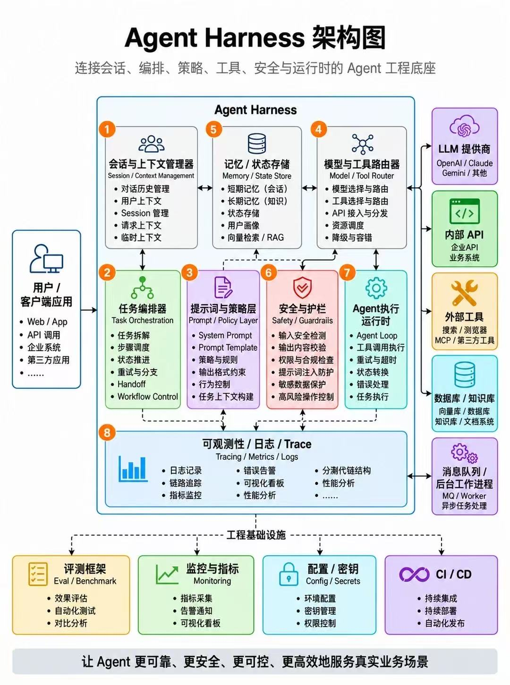
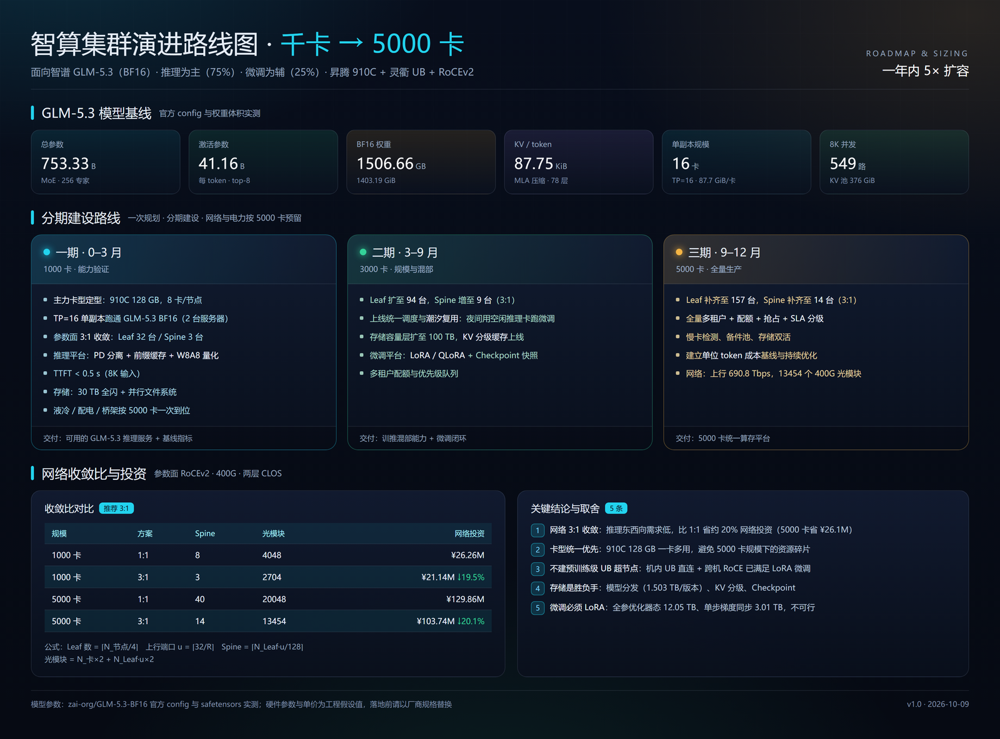
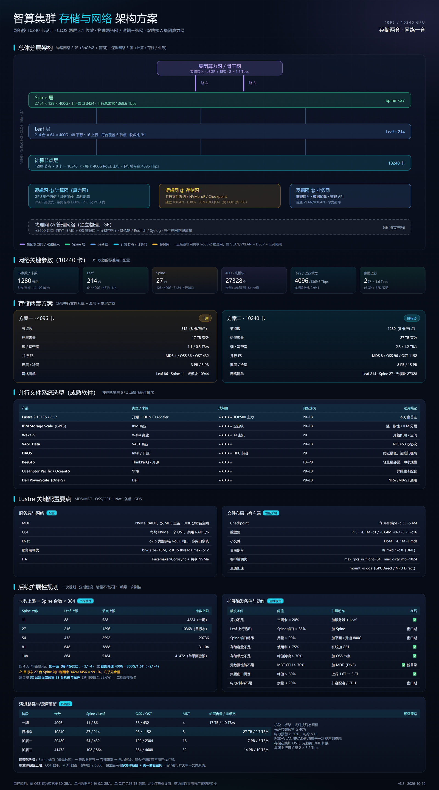
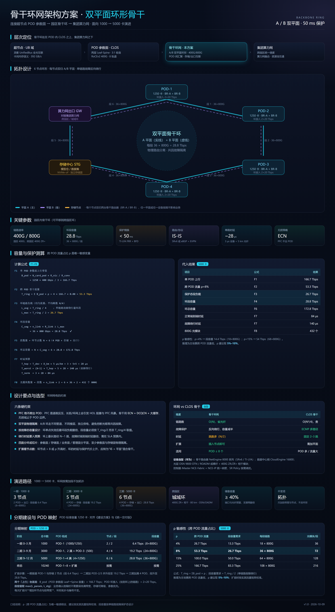
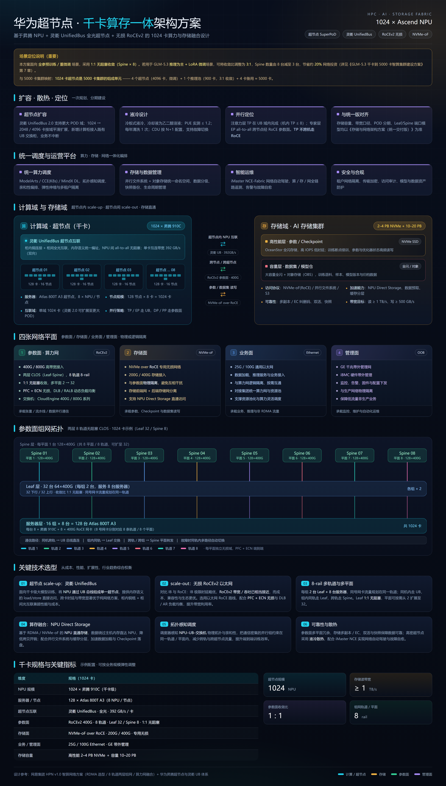

AI Harness / AI PDE / AI Infra
企业级完整学习方案
从 AI Native 研发范式、Agent Harness、RAG、vLLM 与 Kubernetes，到 GPU 物理集群、HPN/RDMA、NVLink、HGX、NVL72、智算集群 v3.3（千卡→5000→10240 卡）、国产 GPU、千卡集群和公有云 GPU，并附大模型推理服务可靠性工程师的岗位解读与模拟面试问答，以及 Pi / Aider Harness 横向对比、可运行的薄 Loop + WAL 参考实现、两篇典型岗位面试题库（推理 SRE / AI 平台架构师）、Coze / Dify / LangChain 选型对比、FastAPI × MCP × React × AIGC 全栈集成与修订记录。
每个模块包含视频参考、官方资料、操作步骤、企业落地避坑和验收产物。本页面适配桌面与手机，可从浏览器直接打印为 PDF。
最近更新 2026-10-11 · v1.6：新增章节目录跳转（侧栏可展开到小节、标题锚点直达）与修订记录 · 查看完整修订记录
总览
资料检索截止：2026-10-04。技术栈更新很快，生产使用前必须再次核对官方 release notes、兼容矩阵和企业安全基线。
#这个包解决什么问题
这不是一张“收藏了很多链接”的清单，而是一套面向大企业落地的主线：
- AI Harness：如何把模型变成可控、可观测、可恢复、可评估的 Agent 运行时。
- AI PDE：如何把产品问题、交互设计、工程实现和上线迭代连成一条闭环。
- AI Infra：如何把单机推理扩展为 Kubernetes 上的企业级模型服务平台。
- 综合项目：把 Harness、PDE、Infra 合成一个可演示、可压测、可答辩的毕业项目。
#PDE 术语说明
这里把 PDE 按 AI 产品岗位语境解释为 Product Design / Product Development Engineer：
- 能与用户和业务确认问题；
- 能完成信息架构、交互和关键状态设计；
- 能用前端 / 后端 / AI 工程把方案做成生产功能；
- 能定义 AI 产品的评估、指标、失败状态和上线方案。
如果你的 PDE 指的是 Partial Differential Equations / AI for Science，那是另一条科学计算路线，不应和本学习包混在一起。
#文件导航
| 文件 | 内容 |
|---|---|
| 01_最新资料与来源索引.md | 最新一手资料、官方文档、协议、参考实现和可信度标注 |
| 02_AI_Harness企业落地教程.md | Harness 架构、组件、8 个递进实验、生产化清单 |
| 03_AI_PDE产品工程落地教程.md | PDE 能力模型、产品到生产的 7 个实验、交付物模板 |
| 04_AI_Infra企业平台教程.md | 从单机 vLLM 到 K8s、路由、调度、分布式推理、监控、安全 |
| 05_32周完整学习路线.md | 32 周学习节奏、每周产出、阶段验收和毕业项目 |
| 06_毕业项目SOP与验收.md | 端到端毕业项目目录、接口、部署、压测、答辩和评分表 |
| 07_GPU物理集群建设选型部署与调优.md | GPU 集群选型、机柜、供电、制冷、网络、存储、裸机初始化、调度、模型部署与调优 |
| 08_GPU集群监控调试故障处理与验收.md | GPU / NCCL / RDMA / 存储 / 推理监控、Burn-in、告警、调试、Drain、维修和回池 |
| 09_36周视频教程与逐周操作手册.md | 36 周逐周视频、官方文档、操作步骤、验收产物和视频失效后的检索方法 |
| 10_企业落地常见坑与注意事项.md | 按模块整理企业落地典型错误、正确做法和上线前检查 |
| 11_国产GPU与千卡集群规划实施指南.md | 国产 GPU 生态、选型、迁移、千卡容量/网络/存储/故障域和实施路线 |
| 12_公有云GPU选型与实施要点.md | 公有云 GPU 实例、网络、存储、配额、Spot、成本、安全和千卡规划 |
| 13_HPN高性能算力网络与RDMA组网指南.md | 网易 HPN v1.0 两层 8 轨道组网、IB/RoCE、PFC/ECN、轨道映射、千卡扩展和验收 |
| 14_NVLink八卡全连接与HGX拓扑指南.md | HGX SXM + NVSwitch 8 卡全互联、PCIe/NVLink Bridge 区别、拓扑验证与验收 |
| 15_NVL72机架级72GPU组网与部署指南.md | NVL72 计算托盘、NVSwitch 托盘、双网络平面、72 卡验收、液冷和调度 |
| 17_智算集群建设方案_统一整合版.md | GLM-5.3 千卡到 5000/10240 卡、存储、网络、骨干环网、华为超节点和评审修订 |
| 18_AI_Native研发范式与企业Agent基础设施.md | AI Native 手册提炼、数字员工、Harness、Sandbox、Identity、Guardrail、Trajectory 和度量 |
#推荐技术栈（不是要求全部一次上齐）
| 层 | 最小可用 | 企业扩展 |
|---|---|---|
| Harness | Python + FastAPI + Pydantic + 一个模型 API | Microsoft Agent Framework / LangGraph / OpenAI Agents API 组合适配 |
| 工具协议 | Function Calling | MCP、A2A、Agent Skills |
| 模型层 | 云 API | vLLM / SGLang / TensorRT-LLM / NVIDIA Dynamo |
| 服务层 | Docker Compose | Kubernetes + KubeRay / KServe / llm-d |
| 路由 | Nginx | Gateway API Inference Extension、KV-aware routing、LiteLLM |
| 调度 | 手工 GPU 分配 | Kueue、队列、配额、优先级、预抢占 |
| GPU 物理集群 | 1 台 GPU 服务器 | 机柜 / 供电 / 制冷 / BMC / 资产与备件管理 |
| 计算互联 | 单机 PCIe / NVLink | RoCEv2 / InfiniBand / Spectrum-X、rail-optimized、GPUDirect RDMA |
| 存储 | 本地 NVMe | 并行文件系统 + 对象存储 + 高速缓存 + 版本和血缘 |
| 状态与记忆 | SQLite / Postgres | Postgres + Redis + pgvector / Milvus / LanceDB |
| 评估 | 手工用例 | promptfoo / Ragas / DeepEval + 业务评测集 |
| 监控 | 日志 + metrics | OpenTelemetry GenAI + Prometheus + Grafana + Langfuse / MLflow |
| 安全 | API Key + allowlist | OPA / Kyverno、RBAC、沙箱、审计、PII/DLP、OWASP LLM Top 10 |
| 训练与微调 | 单卡 LoRA | Kubeflow Trainer + Ray Train + 模型注册与评测 |
| 国产算力 | 单厂商 8 卡 PoC | 昇腾 / 寒武纪 / 海光 / 摩尔线程 / 壁仞 / 昆仑芯 / 沐曦 / 天数等兼容矩阵 |
| 公有云 GPU | 按量 GPU 实例 | 预留容量 + Spot + 对象存储 + 标签 / 预算 / 自动回收 |
#学习路线的两种长度
- 32 周：覆盖 Harness、PDE 和 AI Infra 应用与平台主线。
- 36 周：在 32 周基础上增加 4 周 GPU 物理集群专项，覆盖选型、机柜、网络、存储、监控、调试、故障和验收。
#学习方式
- 每周 10～12 小时：2 次理论、2 次编码实验、1 次复盘与报告。
- 每个实验都留下证据：代码、命令、截图、指标、失败案例、结论。
- 先做最小闭环，再替换组件：不要一开始就上 K8s、多机、Dynamo、llm-d 和所有监控系统。
- Harness 与 Infra 解耦：Harness 通过稳定的模型 API 调用后端，便于模型与推理引擎替换。
- 产品指标与技术指标同时验收：延迟、成本、成功率之外，还要有任务完成率、人工接管率和业务收益。
#学习完成的最终证明
完成以下四件套，才建议把本学习包标记为“完成”：
- 一个可恢复、可审批、可追踪的 AI Harness；
- 一个具备完整异常状态和评估机制、能上线迭代的 AI PDE 产品；
- 一个带模型服务、网关、路由、监控、安全和容量治理的 AI Infra 平台；
- 一个端到端综合项目：企业知识助手 / 运维 Copilot / 数据分析 Agent 三选一，完成压测、故障演练和答辩。
36 周视频教程与逐周操作手册
本篇目录
- 0. 怎么使用这份手册
- 第一阶段：工程与 AI 基础（第 1～4 周）
- 第二阶段：AI Harness（第 5～12 周）
- 第三阶段：AI PDE 产品工程（第 13～16 周）
- 第四阶段：AI Infra 单机与 Kubernetes（第 17～20 周）
- 第五阶段：分布式推理与调度（第 21～24 周）
- 第六阶段：观测、评估、安全与可靠性（第 25～28 周）
- 第七阶段：毕业项目（第 29～32 周）
- 第八阶段：GPU 物理集群专项（第 33～36 周）
- 附录 A：视频失效后的检索公式
- 附录 B：每门视频的学习记录模板
- 附录 C：学习完成的最低标准
检索日期：2026-10-04。视频平台的内容和链接会变化，学习时以“视频建立直觉，官方文档确认接口，实验验证结论”为原则。
这里的“每个知识点都有视频”按下面的标准执行：每个学习模块至少有 1 个主视频、1 个备选视频、1 份官方文档、1 个可执行实验、1 个可验收产物。一条视频可以覆盖多个相邻知识点。
#0. 怎么使用这份手册
每周只做四件事：
- 看主视频，写出 5 条自己的话，不抄字幕；
- 看官方文档，核对命令、参数和版本；
- 按“操作步骤”做实验；
- 用“验收产物”证明自己真的完成。
统一学习仓库：
ai-learning-lab/
├── foundation/
├── harness/
├── pde/
├── infra/
├── gpu-cluster/
├── evals/
├── benchmarks/
├── reports/
└── README.md
#第一阶段：工程与 AI 基础（第 1～4 周）
#第 1 周：Python、Git、HTTP/JSON/SSE
#视频
#操作步骤
- 安装 Python 3.12、Git、VS Code 或 Cursor。
- 创建
ai-learning-lab，配置 Git 用户和远程仓库。 - 用 Python 写一个 CLI：接收 URL、超时、重试次数。
- 用
requests或httpx调用一个公开 API，处理 JSON。 - 用
http.server起一个本地接口，理解 Request / Response / Header。 - 用 SSE 模拟服务端逐字输出。
- 做一次 Git 分支、Commit、Push、PR、回滚。
#验收产物
- CLI 代码；
- HTTP 请求日志；
- SSE Demo；
foundation/week01.md：状态码、JSON、SSE 的区别。
#第 2 周：LLM 基础、Token、Prompt、Context
#视频
- 主视频：一次性搞懂 Agent 到底怎么用
- 补充：LLM Context Engineering Bootcamp Lecture 1
- 官方：OpenAI Prompting Guide
- 官方：OpenAI Text Generation
#操作步骤
- 调用模型 API，观察 System / User / Assistant 消息结构。
- 把同一问题分别用零样本、Few-shot、角色提示、结构化输出提示调用。
- 记录每次请求的输入 Token、输出 Token、延迟、费用。
- 比较 Temperature 0、0.2、0.7、1.0 的结果。
- 构造 5 组测试问题，做 Prompt 版本表。
- 实验上下文长度增加时，TTFT 和成本如何变化。
#验收产物
- Prompt 版本表；
- Token / 延迟 / 成本 CSV；
- 一份“Prompt 不是玄学”的实验报告。
#第 3 周：FastAPI、Pydantic、Docker
#视频
- 主视频：FastAPI 从入门到实战
- 补充：Pydantic 数据结构与验证
- 补充：40 分钟 Docker 实战攻略
- 官方：FastAPI、Pydantic、Docker
#操作步骤
- 用
uv init创建项目，建立虚拟环境。 - 编写
/health、/chat、/runs/{id}三个接口。 - 用 Pydantic 定义请求、响应、错误 Schema。
- 加入超时、重试、异常处理和请求 ID。
- 写 Dockerfile，使用非 root 用户。
- 用 Docker Compose 启动 API 和 Redis。
#验收产物
- OpenAPI 页面截图；
- Dockerfile；
- Compose 文件；
- API 单元测试。
#第 4 周：Postgres、Redis、状态恢复、基础观测
#视频
- 主视频：Prometheus + Grafana 可观测性实战
- 补充：10 分钟了解 MLOps 与 CI/CD
- 官方：PostgreSQL Docs、Redis Docs、OpenTelemetry
#操作步骤
- 用 Postgres 保存 Run、Step、Artifact、Feedback。
- 用 Redis 保存短期会话和锁。
- 模拟进程重启，验证 Run 能从数据库恢复。
- 加入结构化日志，包含
run_id、tenant_id、step。 - 用 Prometheus 指标暴露请求数和延迟。
- 配置一个本地 Grafana 面板。
#验收产物
- 数据表设计；
- 状态恢复测试；
- 日志样例；
- 本地监控面板。
#第二阶段：AI Harness（第 5～12 周）
#第 5 周：Harness、Agent Loop、预算与停止条件
#视频
- 主视频：Let's build a Coding Agent Harness from Scratch
- 补充：Building Effective Agents
- 官方：Microsoft Agent Harness
- 官方：OpenAI Agents API
#操作步骤
- 定义
AgentSpec、RunState、ToolCall。 - 实现 Model → Tool → Model 循环。
- 加最大步骤、最大时间、最大 Token、最大成本。
- 加工具超时和异常处理。
- 保存每一步的输入、输出和耗时。
- 用真实模型跑 10 个任务，记录失败类型。
#验收产物
controller.py；- 10 个成功 / 失败任务；
reports/week05.md。
#第 6 周：Context Engineering 与压缩
#视频
- 主视频：LLM Context Engineering Series Part 1
- 补充：Context Engineering Lecture 2: System Prompts
- 官方：Anthropic Context Engineering
#操作步骤
- 把上下文拆成 System、Goal、Recent、Summary、Retrieved、Tool Results。
- 实现最近 N 轮保留和旧消息摘要。
- 对长工具结果做截断、结构化提炼和引用保留。
- 对敏感字段做脱敏。
- 对比不压缩、摘要、RAG 检索三种上下文策略。
- 记录 Token、延迟、任务成功率。
#验收产物
- Context Builder；
- 压缩前后指标；
- 上下文结构图。
#第 7 周：Memory、RAG、Embedding、向量数据库
#视频
- 主视频：RAG 新手完整入门
- 补充：Embedding 与向量数据库
- 官方：pgvector、Milvus Docs
#操作步骤
- 准备 20～50 份 Markdown / PDF 文档。
- 实现文档解析、分块、Embedding、入库。
- 实现 Top-K 向量检索。
- 加入 BM25 关键词检索，做混合检索。
- 加入 Rerank。
- 做一个带引用的 RAG API。
- 建立 20 条 Golden Questions。
#验收产物
- RAG Demo；
- 检索评测表；
- 引用展示页面或 CLI。
#第 8 周：Function Calling、MCP、工具调用
#视频
#操作步骤
- 用 JSON Schema 定义一个只读天气 / 知识库工具。
- 让模型产生结构化 Tool Call。
- 实现 Tool Executor，加入超时、重试、错误码。
- 创建最小 MCP Server。
- 通过 MCP Client 调用工具。
- 把工具名称、版本、风险级别写入 Registry。
#验收产物
- Tool Registry；
- MCP Server；
- 调用日志和失败案例。
#第 9 周：工具设计、幂等、权限与审计
#视频
#操作步骤
- 给工具加
risk、version、required_scopes。 - 写操作增加幂等键。
- 失败返回稳定错误码，不返回堆栈。
- 对工具结果做大小限制和 Token 优化。
- 记录参数摘要、调用者、耗时、结果状态。
- 做越权调用测试。
#验收产物
- 工具设计规范；
- 幂等测试；
- 权限测试报告。
#第 10 周：Sandbox、Human-in-the-Loop、审批
#视频
#操作步骤
- 用 Docker 隔离代码执行。
- 限制文件系统、网络、CPU、内存和时间。
- 实现审批状态机：
RUNNING → WAITING_APPROVAL → APPROVED / REJECTED / TIMEOUT。 - 对写数据库、发邮件、修改工单强制审批。
- 记录审批人、理由、参数快照。
- 做 Prompt Injection 越权测试。
#验收产物
- 沙箱配置；
- 审批服务；
- 安全测试记录。
#第 11 周：Verification、Critic、Agent 评测
#视频
- 主视频：The agent evaluation revolution
- 补充：LLM as a Judge: Scaling AI Evaluation
- 官方：OpenAI Evals、promptfoo
#操作步骤
- 为每个任务定义机器可判定的通过条件。
- 实现 Schema 校验、单元测试、引用检查。
- 加入 Critic / 二次生成 / 修复循环。
- 构建 30 条正常用例、20 条边界用例、20 条对抗用例。
- 每次变更自动跑回归。
- 输出新旧版本对比。
#验收产物
- 评测数据集；
- 回归门禁；
- 评测报告。
#第 12 周：长任务、跨 Session 恢复与多 Agent
#视频
- 主视频：Effective harnesses for long-running agents
- 补充：Agent Memory Explained
- 官方：Anthropic Long-running Agents
#操作步骤
- 实现 Initializer Agent 和 Worker Agent。
- 生成
progress.md、任务清单、验收标准。 - 每次运行结束写回状态和产物位置。
- 强制 5 次上下文重置，验证跨 Session 恢复。
- 引入一个受控 Subagent，做任务分发和结果聚合。
- 记录重复工作、停滞和死循环。
#验收产物
- 长任务 Harness；
- 5 次恢复日志；
- 多 Agent 架构图。
#第三阶段：AI PDE 产品工程（第 13～16 周）
#第 13 周：用户研究、JTBD、产品指标
#视频
#操作步骤
- 选一个真实业务流程。
- 访谈 3 位目标用户，记录当前步骤、耗时和错误。
- 写 JTBD、用户故事、主指标、护栏指标。
- 基线化：耗时、错误率、人工成本。
- 明确 AI 不做的部分和人工接管条件。
#验收产物
discovery.md；- 用户旅程；
- 指标基线。
#第 14 周：AI PRD、状态机、API 契约
#视频
- 主视频：How to Write a Product Requirements Document
- 补充：How to write a great PRD
- 官方：Nielsen Norman Group AI Chat UX
#操作步骤
- 写 Problem、User、Goal、Non-goal。
- 画 AI 状态机：理解、检索、规划、工具、审批、失败、完成。
- 定义 API 请求、响应、流式事件和错误码。
- 定义引用、拒答、低置信度和人工接管策略。
- 写 SLO 和成本上限。
#验收产物
- AI PRD；
- 状态机；
- OpenAPI 契约。
#第 15 周：前端、流式交互、可访问性
#视频
#操作步骤
- 用 Next.js 创建页面。
- 实现流式输出、停止生成、重试。
- 设计等待、检索、工具执行、审批、失败状态。
- 显示引用、置信度、成本和下一步动作。
- 加入键盘操作、屏幕阅读器标签和错误提示。
- 用真实延迟测试体验。
#验收产物
- 前端原型；
- 状态截图；
- 无障碍检查报告。
#第 16 周：评测、灰度、上线、复盘
#视频
#操作步骤
- 建立 Golden Set、边界集、对抗集。
- 接 Harness API，前后端贯通。
- 用 Feature Flag 做 1% 灰度。
- 监控任务成功、接管率、延迟、成本和投诉。
- 做一次 A/B 或前后对比。
- 完成上线复盘。
#验收产物
- 灰度方案；
- 上线看板；
- 复盘报告。
#第四阶段：AI Infra 单机与 Kubernetes（第 17～20 周）
#第 17 周：GPU、CUDA、vLLM 单机部署
#视频
- 主视频：CUDA 编程基础入门系列
- 补充：Understanding vLLM with a Hands-On Demo
- 补充：vLLM 快速入门
- 官方：vLLM Docs、CUDA Toolkit Docs
#操作步骤
- 检查驱动、CUDA、显存和拓扑：
nvidia-smi、nvidia-smi topo -m。 - 安装 vLLM，启动 Qwen2.5-7B-Instruct。
- 用
/v1/chat/completions测试流式和非流式。 - 调整
--gpu-memory-utilization、--max-model-len。 - 观察 OOM、显存预分配和并发变化。
- 记录 TTFT、Token/s、显存。
#验收产物
- vLLM 服务；
- 参数实验表；
infra/week17.md。
#第 18 周：KV Cache、PagedAttention、Continuous Batching
#视频
- 主视频：PagedAttention：KV Cache 与 Agent 工程
- 补充：保姆级 KV Cache 教程
- 补充：PagedAttention: Behind vLLM's Insane Speed
- 官方：vLLM Paged Attention Design
#操作步骤
- 推导 KV Cache 显存公式。
- 对比不同
max-model-len下的显存和并发。 - 做并发 1、4、8、16 的连续批处理实验。
- 记录吞吐、单请求延迟、队列时间。
- 解释 PagedAttention 和 Block Table。
- 画出 Prefill / Decode 流程图。
#验收产物
- KV Cache 计算表；
- 压测报告；
- 原理解释图。
#第 19 周：量化、Prefix Cache、推测解码
#视频
- 主视频：LLM Quantization Explained
- 补充：vLLM Prefix Caching Tutorial
- 补充：Faster LLMs: Speculative Decoding
- 官方：vLLM Optimization
#操作步骤
- 对比 BF16、AWQ、GPTQ 的显存、吞吐、质量。
- 用重复 system prompt 对比 Prefix Cache 开 / 关。
- 测试推测解码的吞吐和延迟。
- 记录每百万 Token 成本。
- 确定默认生产配置和回退配置。
#验收产物
- 量化对比报告；
- Prefix Cache 报告；
- 生产配置建议。
#第 20 周：Kubernetes、GPU Operator、模型网关、自动扩缩容
#视频
#操作步骤
- 安装 Kubernetes、GPU Operator、Network Operator。
- 确认节点 GPU 资源和 Device Plugin。
- 部署 vLLM Deployment / Service。
- 接入 LiteLLM 或其他模型网关。
- 配置多副本、健康检查、滚动升级和回滚。
- 测试 HPA / KEDA 或 KServe 自动扩缩容。
#验收产物
- K8s YAML / Helm；
- 网关配置；
- 扩容 / 回滚记录。
#第五阶段：分布式推理与调度（第 21～24 周）
#第 21 周：Kueue、Ray、KServe
#视频
#操作步骤
- 配置两个团队队列和 GPU 配额。
- 用 Ray Serve 部署一个模型服务。
- 用 KServe 部署同一模型，做 Canary。
- 验证优先级、排队、抢占。
- 比较 Ray Serve 和 KServe 的运维边界。
#验收产物
- 队列 / 配额实验；
- 两套部署方案；
- 选型矩阵。
#第 22 周：TP、PP、DP、NCCL
#视频
#操作步骤
- 做单卡基线。
- 启动 TP=2，记录加速比。
- 启动 PP=2，记录流水线气泡。
- 运行
nccl-tests。 - 对比 NVLink、PCIe、跨机网络。
- 解释为什么两张卡不等于两倍性能。
#验收产物
- 多卡基准；
- NCCL 数据；
- 扩展效率公式和结论。
#第 23 周：Dynamo、llm-d、Prefill / Decode 分离
#视频
- 主视频：Distributed Inference 101: Getting Started with NVIDIA Dynamo
- 补充：LLM-D Explained
- 补充：Why splitting prefill and decode doubles throughput
- 官方：NVIDIA Dynamo、llm-d
#操作步骤
- 部署一个 llm-d Well-Lit Path 或 Dynamo 示例。
- 打开 KV-aware routing。
- 对比普通 Round Robin 和缓存感知路由。
- 做 Prefix Cache 命中实验。
- 记录 TTFT、吞吐、GPU 利用率、成本。
#验收产物
- 分布式推理部署；
- 路由对比；
- 性能报告。
#第 24 周：压测、容量、SLO 与成本
#视频
#操作步骤
- 用并发 1、4、8、16、32、64 压测。
- 记录 TTFT、TPOT、QPS、错误、显存、KV Cache。
- 计算每百万 Token 成本。
- 算出容量上限和安全水位。
- 写 SLO 和降级策略。
#验收产物
- Benchmark 报告；
- SLO；
- 成本表。
#第六阶段：观测、评估、安全与可靠性（第 25～28 周）
#第 25 周：OpenTelemetry、Langfuse、MLflow、监控
#视频
- 主视频：LLM Observability with OpenTelemetry
- 补充：MLflow Model Tracking and Registry
- 官方：OTel GenAI、Langfuse、MLflow GenAI
#操作步骤
- 为一次 Run 生成
trace_id。 - 记录模型、Prompt 版本、Token、工具、检索、审批。
- 接入 Langfuse 或 MLflow。
- 建立延迟、成本、错误看板。
- 从一条失败 Trace 追到具体工具和版本。
#验收产物
- Trace 截图；
- 统一 Dashboard；
- 错误归因记录。
#第 26 周：RAG、Agent、安全评测
#视频
- 主视频：Key Metrics and Evaluation Methods for RAG
- 补充：The agent evaluation revolution
- 官方：Ragas、promptfoo、DeepEval
#操作步骤
- 建立 RAG 检索指标和生成指标。
- 建立 Agent 任务成功率、工具成功率、接管率。
- 建立 Prompt Injection、越权、数据泄露测试。
- 配置 CI 回归门禁。
- 输出版本对比报告。
#验收产物
- 评测集；
- 回归流水线；
- 评测报告。
#第 27 周：OWASP、NIST、安全与合规
#视频
#操作步骤
- 做资产、数据流和信任边界图。
- 对 Prompt Injection、敏感信息、过度代理、供应链建威胁模型。
- 配置 RBAC、Secrets、工具 allowlist、DLP、审计。
- 做红队测试。
- 记录残留风险和修复计划。
#验收产物
- Threat Model；
- 红队报告；
- 控制清单。
#第 28 周：可靠性、混沌、成本和事故复盘
#视频
#操作步骤
- 杀死一个模型副本，观察恢复。
- 注入工具超时、数据库抖动和队列积压。
- 验证熔断、降级、重试和人工接管。
- 做成本异常演练。
- 写事故复盘模板和 Runbook。
#验收产物
- 故障演练记录；
- Runbook；
- 成本告警。
#第七阶段：毕业项目（第 29～32 周）
#第 29 周：选题、范围、评测基线
#视频
#操作步骤
- 从企业知识助手、运维 Copilot、数据分析 Agent 中选一个。
- 写用户、问题、范围、非目标和成功指标。
- 建立 baseline。
- 选模型、Harness、工具、数据、部署方式。
- 画端到端架构图。
#验收产物
- 项目 Spec；
- Baseline；
- 架构图。
#第 30 周：端到端开发
#视频
#操作步骤
- 完成 API、Harness、工具、记忆、前端。
- 接入 Trace 和评测。
- 完成审批和失败恢复。
- 完成模型网关和 vLLM。
- 跑通正常、失败、对抗三条路径。
#验收产物
- 可运行系统；
- Commit 历史；
- 单元 / 集成测试。
#第 31 周：压测、调优、安全、故障演练
#视频
#操作步骤
- 做并发和长上下文压测。
- 优化 TP、Prefix Cache、Batch、量化。
- 做安全、权限和数据泄露测试。
- 做副本故障和降级演练。
- 记录吞吐、延迟、成本和恢复时间。
#验收产物
- Benchmark；
- 安全报告；
- 故障报告。
#第 32 周：答辩、README、演示和复盘
#视频
#操作步骤
- 写 README、架构图、启动命令。
- 录一个 4 分钟演示。
- 准备 12 个答辩问题。
- 展示正常、审批、失败恢复、故障切换。
- 写改进计划。
#验收产物
- 毕业项目仓库；
- 演示视频；
- 评分表。
#第八阶段：GPU 物理集群专项（第 33～36 周）
#第 33 周：GPU 服务器选型、机柜、供电、散热
#视频
- 主视频：NVIDIA Certified Associate AI Infrastructure and Operations
- 补充：NVIDIA DGX SuperPOD 架构
- 补充：Liquid Cooling in AI Data Center
- 官方：NVIDIA DGX SuperPOD Docs
#操作步骤
- 按 workload 估算 GPU 显存、带宽、互联和数量。
- 选择 GPU、CPU、内存、NIC、本地盘。
- 计算机柜功率、UPS、PDU、制冷和承重。
- 确定风冷或液冷方案。
- 画机柜图、端口表、IP 规划。
- 写 BOM 和验收标准。
#验收产物
- 选型报告；
- BOM；
- 机柜图 / 端口表；
- 功率与散热计算。
#第 34 周：BMC、网络、存储、裸机初始化
#视频
- 主视频：Redfish School
- 补充：OpenBMC Overview
- 补充：Spine and Leaf Architecture
- 补充：InfiniBand 与 RoCE：AI Data Center
- 官方：OpenBMC、MAAS、Tinkerbell
#操作步骤
- 隔离 BMC 带外网络，修改默认密码。
- 用 Redfish 完成 BIOS、RAID、Boot 配置。
- 用 MAAS / Tinkerbell / PXE 安装 OS。
- 配置管理网、计算网、存储网、带外网。
- 配置 RDMA、GID、MTU、PFC / ECN。
- 挂载并行文件系统或对象存储。
- 完成资产、端口和版本记录。
#验收产物
- 网络拓扑；
- IP 规划；
- 存储挂载；
- 节点资产表。
#第 35 周：驱动、CUDA、NCCL、K8s / Slurm、DCGM
#视频
- 主视频：NVIDIA GPU Operator Architecture
- 补充：DCGM, Prometheus, Grafana GPU Monitoring
- 补充：NCCL Explained
- 官方：GPU Operator、DCGM、NCCL
#操作步骤
- 安装 Driver、CUDA、NCCL、Container Toolkit。
- 安装 GPU Operator、Network Operator、DCGM。
- 验证
nvidia-smi、nvidia-smi topo -m。 - 执行
dcgmi diag -r 2。 - 运行
nvbandwidth、nccl-tests。 - 加入 K8s 或 Slurm。
- 配置 GPU、网络、存储和调度监控。
#验收产物
- 健康检查报告；
- NVLink / NCCL 数据；
- 调度接入证明。
#第 36 周：Burn-in、故障演练、验收和调优
#视频
- 主视频：A100 GPU 服务器 Burn-in
- 补充：NVIDIA NCA AI Infrastructure and Operations
- 官方：NVIDIA XID Errors、GPU Debug Guidelines
#操作步骤
gpu-burn运行 30～60 分钟。- 监控温度、功耗、ECC、XID、降频。
- 做 NVLink、PCIe、NCCL、RDMA、存储测试。
- 做单卡、单节点、单轨故障演练。
- 执行
cordon / drain / repair / validate / uncordon。 - 部署 vLLM，做推理压测。
- 输出验收报告、Runbook、容量和成本报告。
#验收产物
- Burn-in 报告；
- 故障演练报告；
- 集群验收报告；
- 运维 Runbook。
#附录 A：视频失效后的检索公式
B 站：
主题 + 入门/实战/保姆级/原理
主题 + 源码/部署/调优/故障
主题 + vLLM/Kubernetes/NVIDIA
YouTube：
topic + tutorial
topic + full course
topic + hands-on
topic + production
topic + official
搜索后按以下顺序筛选：
- 官方频道优先；
- 发布时间较新；
- 有完整章节目录；
- 有代码仓库；
- 评论中能确认命令可运行；
- 最终必须回到官方文档验证。
#附录 B：每门视频的学习记录模板
# Video Notes: <title>
- URL:
- Author / Channel:
- Date:
- Duration:
- Version/Environment:
## 5 key points
1.
2.
3.
4.
5.
## Commands I ran
## Results
## Errors
## What I still need to verify
## Link to official docs
#附录 C：学习完成的最低标准
- [ ] 每个主视频都有一条自己的实验记录。
- [ ] 每个知识点至少有一条官方文档来源。
- [ ] 每个实验都有命令、结果、错误和结论。
- [ ] 模型服务有压测、监控、限流、回滚。
- [ ] Harness 有权限、审批、恢复、评测和 Trace。
- [ ] GPU 集群有资产、网络、存储、Burn-in、告警、Runbook。
- [ ] 毕业项目能从用户问题一路讲到 GPU 节点和成本。
AI Harness 企业落地教程
本篇目录

目标：从零实现一个模型可替换、工具可治理、状态可恢复、过程可观测、结果可评估的 Agent Harness，并把它推进到企业可试点状态。
#1. Harness 到底是什么
微软 Agent Framework 将 Agent Harness 定义为“把语言模型变成能执行工作的 Agent 的运行时脚手架”：它驱动模型和工具调用，管理会话状态和上下文，执行审批策略，并让 Agent 能持续推进多步任务。
用工程语言说：
Harness = Runtime Scaffolding around Model
= Context + Memory + Planning + Tools + Policy
+ Sandbox + Verification + State + Observability + Evaluation
模型只负责推理和生成；Harness 负责让推理变成受控、可追踪、可恢复的执行。
#Harness 不等于什么
| 概念 | 区别 |
|---|---|
| Prompt Engineering | 只优化输入文本；Harness 还管理工具、状态、权限、恢复和评估 |
| Agent Framework | 提供 Building Blocks；Harness 还定义团队运行规约和企业控制面 |
| Workflow Engine | 主要执行固定 DAG；Harness 允许模型动态决定下一步，但必须设置边界 |
| MCP | 工具和数据接入协议；MCP 是 Harness 的一个工具层，不是 Harness 本身 |
| Eval Harness | 常用于模型 Benchmark；这里的 Harness 指 Agent 运行时 |
#企业为什么需要自建 Harness
BCG 2026 年文章提出一个关键判断：模型可以采购，但企业自己的流程逻辑、质量标准、治理要求和组织知识，需要通过 Harness 固化，才会形成差异化能力。
建议遵循四个原则：
- Start small：先选一个文档化、可验证、已有工具链的工作流试点。
- Build, don’t buy：模型和通用框架可以采购，企业控制面和领域适配要自己掌握。
- Be selective：不是所有流程都适合 Agent；优先选择输入输出明确、质量可检查、工具可复用的流程。
- Model-agnostic：业务逻辑不要和某一个模型或一家供应商强绑定。
#2. 参考架构
┌────────────────────────────┐
User / API / Chat ──────▶│ API Gateway + Auth + Rate │
└──────────────┬─────────────┘
│
┌──────────────▼─────────────┐
│ Harness Controller │
│ Run State / Budget / Loop │
└───────┬─────────┬───────────┘
│ │
┌──────────────▼──┐ ┌───▼────────────────┐
│ Context Manager │ │ Planner / Router │
└───────┬─────────┘ └───┬────────────────┘
│ │
┌───────▼────────────────▼───────┐
│ Model Gateway / OpenAI API │
│ Cloud API or vLLM / SGLang │
└───────────────┬────────────────┘
│
┌───────────────────────┼────────────────────────┐
│ │ │
┌─────────▼────────┐ ┌──────────▼──────────┐ ┌─────────▼─────────┐
│ Tool Registry │ │ Memory Service │ │ Artifact Store │
│ Function + MCP │ │ Redis + PG + Vector │ │ S3 / DB / Git │
└─────────┬────────┘ └──────────┬───────────┘ └─────────┬─────────┘
│ │ │
┌─────────▼────────┐ ┌──────────▼──────────┐ ┌─────────▼─────────┐
│ Sandbox │ │ Policy / Approval │ │ Trace / Audit │
│ Container │ │ OPA / HITL │ │ OTel / Langfuse │
└──────────────────┘ └─────────────────────┘ └───────────────────┘
#核心组件
| 组件 | 最小职责 | 企业增强 |
|---|---|---|
| Model Gateway | 统一模型调用、超时、重试、Token 统计 | 模型路由、降级、成本预算、租户配额 |
| Context Manager | 构造每轮 Prompt，裁剪和摘要历史 | 分层上下文、压缩、敏感字段过滤 |
| Planner / Router | 决定下一步、调用哪个模型或工具 | Plan-and-Execute、Critic、Subagent |
| Tool Registry | 注册工具、JSON Schema、版本、权限 | MCP、A2A、审批、幂等、审计 |
| Run State | 保存任务、步骤、预算、错误、产物 | 可恢复、可取消、可重放、事件溯源 |
| Memory | 短期消息、摘要、事实、产物索引 | Redis + PostgreSQL + pgvector / Milvus |
| Sandbox | 隔离代码和文件操作 | 容器、gVisor、网络白名单、资源限制 |
| Policy / Approval | 哪些工具能调用，何时需要人工确认 | OPA / Kyverno、RBAC、数据分级、双人审批 |
| Verification | 测试、Schema、引用、Critic、二次采样 | 业务规则、人工复核、自动回滚 |
| Observability | 记录每次模型和工具调用 | OTel GenAI、Langfuse、成本和失败归因 |
| Evaluation | 固定评测集和回归测试 | 离线评测、线上监控、红队、A/B |
#3. 建议项目结构
agent-harness/
├── pyproject.toml
├── .env.example
├── AGENTS.md
├── apps/
│ ├── api/
│ └── worker/
├── harness/
│ ├── controller.py
│ ├── context.py
│ ├── memory.py
│ ├── model_gateway.py
│ ├── planner.py
│ ├── policy.py
│ ├── sandbox.py
│ ├── verifier.py
│ └── tracing.py
├── tools/
│ ├── registry.py
│ ├── read_file.py
│ ├── search_knowledge.py
│ └── mcp_servers/
├── schemas/
│ ├── agent_spec.py
│ ├── run_state.py
│ └── tool_spec.py
├── evals/
│ ├── datasets/
│ └── suites/
├── tests/
│ ├── unit/
│ ├── integration/
│ └── adversarial/
├── deploy/
│ ├── docker-compose.yml
│ └── k8s/
└── reports/
#环境初始化
uv init agent-harness
cd agent-harness
uv add fastapi uvicorn pydantic pydantic-settings httpx openai sqlalchemy psycopg redis opentelemetry-sdk
uv add --dev pytest pytest-asyncio ruff mypy
如果模型后端使用自部署 vLLM，只需要提供 OpenAI 兼容地址：
export OPENAI_BASE_URL=http://localhost:8000/v1
export OPENAI_API_KEY=dummy
export MODEL_NAME=Qwen/Qwen2.5-7B-Instruct
#4. 八个递进实验
#实验 1：最小 Harness，先让循环可控
目标：实现“输入任务 → 模型 → 工具调用 → 结果回填 → 最终回答”的最小闭环。
必须有的限制：
- 最大步骤数；
- 最大运行时间；
- 最大 Token / 成本预算；
- 模型调用超时；
- 工具调用超时；
- 不允许无限重试。
核心数据模型示意：
from datetime import datetime
from typing import Any, Literal
from pydantic import BaseModel, Field
class AgentSpec(BaseModel):
name: str
instructions: str
model: str
max_steps: int = 8
max_seconds: int = 120
allowed_tools: list[str] = Field(default_factory=list)
class RunState(BaseModel):
run_id: str
tenant_id: str
user_id: str
goal: str
status: Literal["running", "waiting_approval", "succeeded", "failed", "cancelled"]
step: int = 0
messages: list[dict[str, Any]] = Field(default_factory=list)
artifacts: list[dict[str, Any]] = Field(default_factory=list)
error: str | None = None
created_at: datetime
updated_at: datetime
最小控制器伪代码：
async def run_harness(spec: AgentSpec, state: RunState, tools: ToolRegistry):
while state.step < spec.max_steps and state.status == "running":
state.step += 1
context = build_context(state)
response = await model_gateway.chat(
model=spec.model,
messages=context,
tools=tools.schemas_for(spec.allowed_tools),
timeout=30,
)
state.messages.append(response.as_message())
if not response.tool_calls:
state.status = "succeeded"
break
for call in response.tool_calls:
policy.check(state, call, spec)
result = await tools.execute(call, timeout=30)
state.messages.append(tool_result_message(call, result))
if state.step >= spec.max_steps:
state.status = "failed"
state.error = "max_steps_exceeded"
return state
测评指标：
- 任务完成率；
- 平均步骤数；
- 工具调用成功率；
- 超时率；
- 平均 Token 和成本。
交付物：controller.py、schemas/、10 个正常用例、5 个失败用例、reports/lab1.md。
#实验 2：Context 与 Memory
目标：区分“当前上下文”和“长期记忆”，防止把所有历史原样塞入 Prompt。
采用四层记忆：
| 层 | 内容 | 存储 |
|---|---|---|
| Working Memory | 当前任务最近几轮消息 | Redis / 进程内 |
| Session Summary | 会话摘要、关键决定、未完成任务 | PostgreSQL |
| Long-term Facts | 用户偏好、组织事实、稳定知识 | PostgreSQL + pgvector |
| Artifacts | 文件、报告、代码、表格 | S3 / 对象存储 + 索引 |
压缩策略：
- 保留系统指令和当前目标；
- 保留最近 N 轮完整消息；
- 对旧消息生成结构化摘要；
- 按当前问题检索长期记忆；
- 只注入相关事实和证据；
- 对敏感字段做脱敏或禁止写入。
验收：
- 100 轮对话后仍能回答 10 个关键事实；
- 历史压缩后不丢失当前目标和待办；
- 用户 A 的记忆绝不泄露给用户 B；
- 记忆有来源、时间、置信度和删除机制。
#实验 3：Tool Registry 与 MCP
目标：让工具可发现、可版本化、可治理。
工具必须声明：
class ToolSpec(BaseModel):
name: str
version: str
description: str
risk: Literal["read", "write", "destructive"]
timeout_seconds: int
idempotency_required: bool
required_scopes: list[str]
input_schema: dict
output_schema: dict
工具设计原则：
- 工具名称使用稳定命名空间，例如
crm.customer.get； - 输入输出使用 JSON Schema；
- 返回结果要压缩、结构化、带来源和错误码；
- 写操作必须支持幂等键；
- 危险操作必须经过审批；
- MCP Server 只暴露最小必要能力；
- 工具调用结果和参数写入审计日志。
MCP 接入步骤：
- 用官方 SDK 创建最小 MCP Server；
- 先实现只读的
search_knowledge和get_ticket； - 在 Harness 中做 MCP Client；
- 给每个工具设置超时、重试和并发上限；
- 把工具 schema、版本、权限和审计接入 Tool Registry。
示意代码：
from mcp.server.fastmcp import FastMCP
mcp = FastMCP("enterprise-tools")
@mcp.tool()
def get_ticket(ticket_id: str) -> dict:
"""Get ticket by ID. Read-only operation."""
return ticket_service.get(ticket_id)
if __name__ == "__main__":
mcp.run()
具体包名和启动方式以当前 MCP 官方 SDK 版本为准。
验收：工具调用失败能返回稳定错误码；没有权限的工具不会被模型看到；写操作没有幂等键时被拒绝。
#实验 4：Sandbox 与 Human-in-the-Loop
目标：把“能执行”与“有权执行”分开。
沙箱要求：
- 文件系统只挂载允许目录；
- 默认禁止公网，按域名白名单放行；
- CPU、内存、磁盘、时间有上限；
- 子进程受控；
- 容器用户非 root；
- 产物输出到隔离目录；
- 记录命令、退出码和资源消耗。
审批矩阵：
| 操作 | 默认策略 |
|---|---|
| 只读检索 | 可自动执行 |
| 创建草稿、生成报告 | 可自动执行，但需日志 |
| 发邮件、写工单、修改数据 | 人工审批 |
| 删除数据、转账、发布生产 | 双人审批或禁止 Agent 执行 |
审批状态机：
RUNNING -> WAITING_APPROVAL -> APPROVED -> RUNNING
-> REJECTED -> FAILED
-> TIMEOUT -> FAILED
验收：模型不能通过 Prompt 绕过工具权限；审批有用户、时间、理由、参数快照和审计记录。
#实验 5：Verification Loop
目标：Agent 不是“生成完就算结束”，而是要通过验证。
可选验证器：
- JSON Schema 校验；
- 单元测试；
- 静态检查 / lint；
- SQL 只读校验；
- 引用来源存在性检查；
- 事实一致性检查；
- Critic Model 评审；
- 业务规则引擎；
- 人工采样复核。
循环规则：
Generate -> Verify -> Pass => Finish
-> Fail => Repair once
-> Fail again => Escalate / Stop
验收：每个任务至少有一个可机器判断的通过条件；不能通过验证时不允许标记成功。
#实验 6：长任务与跨 Session 恢复
Anthropic 的长任务经验指出：仅有 Context Compaction 不够。更可靠的做法是：
- 第一次运行使用 Initializer Agent 初始化项目、目录、验收标准和进度文件；
- 后续每次运行使用 Coding / Worker Agent 做增量工作；
- 结束时更新
progress.md、测试结果和 Git 历史； - 下一次从文件系统、数据库和版本控制恢复，而不是依赖模型记忆。
状态必须持久化：
- 目标；
- 已完成步骤；
- 未完成步骤；
- 关键决定；
- 已知失败；
- 产物位置；
- 下一步建议；
- 最后更新时间。
交付物：模拟 5 次上下文重置，任务仍能从 run_state + artifacts + progress.md 恢复。
#实验 7：Observability 与 Evaluation
Trace 至少记录：
run_id、trace_id、租户、用户；- 模型、Prompt 版本、Token、成本；
- 每次工具调用的名称、参数摘要、耗时、结果状态；
- 检索结果和引用来源；
- 审批和人工干预；
- 最终结果和用户反馈。
评测层次：
| 层次 | 例子 |
|---|---|
| 组件测试 | 工具 schema、超时、重试、幂等 |
| 路径测试 | ReAct 是否按预期调用工具 |
| 任务评测 | 20～100 个真实任务的成功率 |
| 安全评测 | Prompt Injection、越权、数据外泄 |
| 线上评测 | 成功率、人工接管率、成本、延迟、用户满意度 |
工具：
- OpenTelemetry GenAI Semantic Conventions：统一 Trace 字段；
- Langfuse：Trace、Prompt、成本、评估；
- MLflow：实验、评测、Prompt 和模型生命周期；
- promptfoo / Ragas / DeepEval：自动回归和红队。
验收：任意一个失败 Run 都能在 5 分钟内定位到“模型、上下文、工具、权限、数据、网络”中的哪一层。
#实验 8：企业部署与治理
部署拓扑：
API Gateway
-> Harness API
-> Run Queue
-> Harness Workers
-> Model Gateway
-> Tool / MCP Services
-> Memory / Artifact / Audit
生产要求：
- 多租户隔离；
- 队列和并发限制；
- Run 可取消、可恢复、可重放；
- 模型路由和降级；
- 预算和 Token 配额；
- 密钥托管；
- 工具版本化；
- Prompt 和 Skill 版本化；
- CI/CD 与灰度；
- 回滚和 Runbook；
- 日志脱敏；
- 数据保留和删除策略。
企业角色分工：
| 角色 | 责任 |
|---|---|
| Platform Team | Harness Runtime、Gateway、Memory、Tool Registry、Observability |
| Domain Team | 领域工具、知识库、评测集、业务流程 |
| Security | 权限、数据分类、沙箱、审计、红队 |
| SRE | SLO、容量、故障恢复、成本 |
| Product / PDE | 用户问题、交互、指标、上线迭代 |
#5. AGENTS.md 与 Skills 最小模板
#AGENTS.md
# AGENTS.md
## Repository expectations
- Run `uv run pytest` and `uv run ruff check .` before proposing a change.
- Never commit secrets or customer data.
- Update `docs/architecture.md` when changing interfaces.
## Safety rules
- Do not run destructive shell commands without explicit approval.
- Use read-only database credentials for analysis.
- Store generated artifacts under `reports/` or `artifacts/`.
## Code Review Rules
- Flag any tool call that writes data without an idempotency key.
- Flag any prompt that includes raw PII or secrets.
#Skill 模板
---
name: incident-triage
description: Use when triaging a production incident with logs, metrics, and known runbooks.
---
1. Collect incident metadata and time range.
2. Query metrics before logs.
3. Identify the failing dependency.
4. Propose the smallest safe mitigation.
5. Ask for human approval before changing production.
6. Produce a post-incident summary and follow-up tasks.
#6. Harness 安全基线
至少覆盖 OWASP LLM Top 10 和 NIST AI RMF 中的相关风险：
- Prompt Injection：把外部文档视为不可信输入；
- 敏感信息泄露：输入、输出、日志、Trace、Memory 全链路脱敏；
- 过度代理：限制工具、步骤、预算和写操作；
- 供应链风险：锁定模型、库、MCP Server 和容器版本；
- 不当输出处理：输出先校验再进入下游系统；
- 无界消费：Token、请求、并发和成本预算；
- 工具滥用：最小权限、审批、幂等和审计。
#7. 完成标准
- [ ] 能解释 Harness 与 Framework、Workflow、MCP、Prompt Engineering 的区别。
- [ ] 能画出一张完整的 Harness 架构图。
- [ ] 有最大步骤、时间、Token 和成本限制。
- [ ] 工具有 Schema、版本、风险级别、权限和审计。
- [ ] 写操作有幂等和人工审批。
- [ ] 运行状态可持久化、取消、恢复和重放。
- [ ] 有 Trace 和一条从用户请求到最终结果的完整链路。
- [ ] 有正常、失败、对抗和越权评测集。
- [ ] 能通过模型替换验证 Harness 不与单一供应商绑定。
- [ ] 完成一次 5 个 Session 的中断恢复实验。
AI PDE 产品工程落地教程
本文的 PDE = Product Design / Product Development Engineer：端到端负责用户问题、交互设计、工程实现、AI 评估和上线迭代。
如果你的 PDE 指 Partial Differential Equations，请使用 AI for Science 路线，不适用本教程。
#1. PDE 在企业里到底负责什么
AI PDE 不是“会用 AI 画页面的人”，而是能把下面四件事串起来的人：
用户问题 -> 产品方案 -> 交互与原型 -> 生产实现 -> 评估与上线 -> 数据反馈 -> 再迭代
| 能力 | 要能交付什么 |
|---|---|
| 产品判断 | 用户问题、业务价值、优先级、成功指标 |
| 交互设计 | 用户流程、信息架构、状态机、失败恢复、可访问性 |
| 全栈工程 | 前端、API、数据契约、模型 / Harness 接入、部署 |
| AI 评估 | 离线评测集、任务成功率、幻觉 / 引用、回归测试 |
| 上线迭代 | Feature Flag、灰度、监控、A/B、回滚、复盘 |
PDE 最适合 AI 产品的原因：AI 产品的关键状态很多，不可能只靠一张静态稿描述。
必须设计的 AI 状态至少包括：
idle
understanding
retrieving
planning
streaming
waiting_for_tool
waiting_for_approval
partial_result
needs_clarification
failed_and_retryable
failed_terminal
completed_with_citations
completed_with_low_confidence
#2. PDE 工作流
#阶段 1：Discover，先确认值不值得做
输入： - 用户访谈； - 现有流程和工单； - 数据基线； - 风险和合规边界。
输出： - JTBD / 用户故事； - 当前流程和痛点； - 成功指标； - 明确不做什么； - 失败和退出条件。
#阶段 2：Spec，写一个 Agent 能执行的规格
传统 PRD 只描述功能，AI 产品要额外写清：
- 输入边界；
- 输出格式；
- 数据来源；
- 工具权限；
- 不确定性处理；
- 何时澄清；
- 何时拒答；
- 何时人工接管；
- 如何评估。
推荐规格结构：
# Feature Spec
## User problem
## Target user
## Job to be done
## Current workflow
## Proposed AI workflow
## Tool and data boundaries
## UX states
## API contract
## Evaluation rubric
## SLO
## Security and privacy
## Rollout and rollback
#阶段 3：Prototype，用真实延迟和真实数据验证
不要只做静态高保真图。原型至少验证：
- 流式输出是否可理解；
- 长时间等待是否有反馈；
- 引用来源是否可核查；
- 工具失败如何恢复；
- 审批是否打断得太频繁；
- 用户是否知道 AI 当前在做什么。
#阶段 4：Build，生产实现
优先技术栈：
- 前端：Next.js / React / TypeScript；
- 后端：FastAPI / Pydantic；
- 流式：SSE 或 WebSocket；
- 模型：统一走 Harness Model Gateway；
- 数据：Postgres + pgvector / Redis / 对象存储；
- 监控：OpenTelemetry + 产品事件；
- 部署：Docker，后续接到 Kubernetes。
#阶段 5：Evaluate，先证明不是 Demo
三层评估：
| 层 | 指标 |
|---|---|
| AI 层 | 任务完成率、引用正确率、工具正确率、拒答准确率 |
| 产品层 | 完成时间、接管率、重试率、满意度、留存 |
| 业务层 | 节省工时、降低错误率、收入 / 成本、合规事件 |
#阶段 6：Ship，控制风险
- Feature Flag 和灰度；
- 线上评测集和人工抽样；
- 监控延迟、错误率、成本和投诉；
- Runbook 和降级方案；
- 一键关闭和回滚；
- 上线后 1～2 周复盘。
#3. 七个递进实验
#实验 1：用户问题与基线
任务：选择一个真实流程，例如： - 企业知识问答； - 客服工单分类与建议； - 运维故障初筛； - 销售资料整理； - 数据分析自然语言查询。
必须完成：
- 访谈 3 位目标用户；
- 记录当前流程的步骤、耗时和错误；
- 写出 JTBD；
- 选定 1 个主指标和 2 个护栏指标；
- 明确 AI 不做的部分。
产出：product/discovery.md、用户旅程、基线数据。
#实验 2：AI PRD 与状态机
任务：把需求写成 Agent 可执行 Spec。
必须包含：
- 主流程和异常流程；
- 工具与数据权限；
- 澄清 / 拒答 / 接管条件；
- 输入输出 JSON；
- 评测样例；
- SLO：P50/P95 延迟、成功率、成本上限。
产出：product/prd.md、Mermaid 状态机、API 契约。
示意：
stateDiagram-v2
[*] --> Understanding
Understanding --> Clarifying: 信息不足
Clarifying --> Understanding: 用户补充
Understanding --> Retrieving: 需要知识
Retrieving --> Planning: 检索完成
Planning --> WaitingApproval: 需要写操作
WaitingApproval --> Executing: 审批通过
WaitingApproval --> Failed: 拒绝 / 超时
Planning --> Executing: 只读操作
Executing --> Verifying
Verifying --> Completed: 通过
Verifying --> Repairing: 失败但可修复
Repairing --> Verifying
Verifying --> ManualHandoff: 连续失败
Completed --> [*]
ManualHandoff --> [*]
Failed --> [*]
#实验 3：可交互原型
初始化前端：
pnpm create next-app@latest ai-pde-ui --typescript --tailwind --eslint --app --src-dir
cd ai-pde-ui
pnpm dev
初始化后端：
uv init ai-pde-api
cd ai-pde-api
uv add fastapi uvicorn pydantic httpx python-multipart
uv run uvicorn app.main:app --reload --port 8080
原型必须包含：
- 流式输出；
- 停止生成；
- 重新生成；
- 引用卡片；
- 工具运行状态；
- 失败与重试；
- 人工审批；
- 反馈按钮；
- “不确定 / 信息不足”的提示。
验收：用真实模型和真实知识库，不用写死 Mock 数据。
#实验 4：接入 Harness 与工具
前端不直接调用模型，统一调用 Harness API：
POST /v1/runs
GET /v1/runs/{run_id}
POST /v1/runs/{run_id}/cancel
POST /v1/runs/{run_id}/approve
GET /v1/runs/{run_id}/events
原则：
- UI 只消费稳定的 Run API；
- 模型和推理引擎在后端替换；
- 工具调用展示为可理解的动作；
- 写操作显示影响范围和审批理由；
- 所有产物带来源和版本。
验收：替换模型后端不改前端业务代码。
#实验 5：评测与回归
建立 evals/：
evals/
├── datasets/
│ ├── golden_questions.jsonl
│ ├── ambiguous_questions.jsonl
│ └── adversarial_prompts.jsonl
├── suites/
│ ├── task_success.yaml
│ ├── retrieval.yaml
│ └── safety.yaml
└── reports/
评测维度：
| 维度 | 问题 |
|---|---|
| 正确性 | 回答是否符合事实和任务目标 |
| 完整性 | 是否遗漏关键步骤 |
| 引用 | 是否支持每个关键结论 |
| 工具 | 是否调用正确工具和参数 |
| 安全 | 是否越权、泄露、被注入 |
| 体验 | 是否澄清、可恢复、可理解 |
| 成本 | 每个成功任务的花费是否可接受 |
验收：每次 Prompt、模型、工具、知识库变更都跑回归；报告能展示新旧版本差异。
#实验 6：灰度、监控与用户反馈
产品事件最小集合：
run_started
run_succeeded
run_failed
run_cancelled
approval_requested
approval_granted
approval_rejected
tool_called
tool_failed
citation_clicked
feedback_submitted
manual_handoff
看板必须展示：
- 任务成功率和人工接管率；
- P50/P95/P99 延迟；
- 工具失败率；
- 单次成功成本；
- 引用点击率；
- 用户反馈；
- 按租户 / 模型的错误分布。
灰度策略：
- Internal Dogfood；
- 1% 真实用户；
- 10% 流量并观察一周；
- 50%；
- 全量或回滚。
#实验 7：上线交付与复盘
上线清单：
- PRD 和架构图；
- Runbook；
- Feature Flag；
- 权限和数据流图；
- 评测报告；
- 压测报告；
- 监控面板；
- 告警策略；
- 回滚步骤；
- 客服 / 运营培训；
- 反馈处理流程。
复盘问题：
- 哪个用户指标真正改变？
- 哪些请求最容易被人工接管？
- 哪些失败来自模型、工具、数据还是交互？
- 哪个 Prompt / Skill / 工具版本最好？
- 成本是否随使用量线性增长？
- 下一步应该优化质量、速度还是成本？
#4. AI PRD 模板
# AI Feature Spec: <name>
## 1. Problem
- User:
- Pain:
- Current baseline:
- Why now:
## 2. Goal and guardrails
- Primary metric:
- Guardrail metrics:
- Non-goals:
## 3. User workflow
- Entry point:
- Happy path:
- Ambiguous path:
- Failure path:
- Human handoff:
## 4. AI design
- Model / Harness:
- Tools:
- Data sources:
- Memory:
- Context limits:
- Citation policy:
- Abstention policy:
## 5. API contract
- Request:
- Response:
- Streaming events:
- Error codes:
## 6. Evaluation
- Golden set:
- Adversarial set:
- Acceptance threshold:
- Regression gate:
## 7. SLO and cost
- P95 latency:
- Availability:
- Cost per successful task:
- Token budget:
## 8. Security and privacy
- Data classification:
- Access control:
- Retention:
- Audit:
- Injection defense:
## 9. Rollout
- Flag:
- Canary:
- Rollback:
- Owner:
#5. PDE 与其他角色的协作边界
| 角色 | 主要责任 | PDE 交付给谁 |
|---|---|---|
| Product Manager | 业务优先级、目标、商业指标 | 可执行 Spec、原型、上线结果 |
| Designer | 交互、视觉、Design System | 用户流程、状态、组件规范 |
| AI Engineer | 模型、RAG、评测、Agent 逻辑 | 稳定 API、评测要求、业务规则 |
| Infra Engineer | 推理平台、GPU、K8s、SLO | 资源需求、延迟、容量和降级要求 |
| Security | 权限、数据、供应链和合规 | 数据流、工具风险、审计需求 |
| Data | 数据质量、指标、实验 | 事件定义、评测数据、分析结果 |
PDE 的价值不是替所有人工作，而是减少交接损耗，并对“从问题到生产结果”负责。
#6. 完成标准
- [ ] 有真实用户问题和基线，不是拍脑袋需求。
- [ ] 有完整 PRD、状态机和 API 契约。
- [ ] 原型包含流式、等待、失败、重试、审批和不确定性状态。
- [ ] 前端不直接绑定模型供应商。
- [ ] 有 Golden Set、对抗集和回归门禁。
- [ ] 有任务成功、接管率、延迟、成本和满意度指标。
- [ ] 能灰度、监控、回滚和人工接管。
- [ ] 能解释一个失败案例属于模型、数据、工具、权限还是交互问题。
- [ ] 至少完成一次上线后复盘，并形成下一版迭代计划。
AI Infra 企业平台教程
本篇目录
- 1. AI Infra 的边界
- 2. 参考架构
- 3. 十三个递进实验
- 实验 0：环境和 GPU 基线
- 实验 1：vLLM 单机服务与 OpenAI API
- 实验 2：压测与性能基线
- 实验 3：Docker 化与最小生产服务
- 实验 4：模型网关与统一路由
- 实验 5：Kubernetes + GPU Operator
- 实验 6：部署 vLLM 到 Kubernetes
- 实验 7：Ray Serve / KServe / llm-d 选型
- 实验 8：Kueue 队列、配额与抢占
- 实验 9：分布式推理 TP / PP / DP
- 实验 10：KV-aware Routing、Prefill / Decode 分离
- 实验 11：观测、评估与模型生命周期
- 实验 12：安全、可靠性与成本
- 4. 企业 SLO 模板
- 5. 完成标准
目标：从单机 vLLM 出发，构建一套可支撑多团队、多模型、多租户的 AI 推理平台基础，并理解从单机到多机分布式、从模型部署到平台治理的完整路径。
#1. AI Infra 的边界
AI Infra 不等于“会启动 vLLM”。企业 AI Infra 至少包含九层：
1. 芯片与节点 GPU / NPU / CPU / RDMA / 存储
2. 驱动与运行时 Driver / CUDA / NCCL / GPU Operator
3. 推理引擎 vLLM / SGLang / TensorRT-LLM / NIM
4. 服务与编排 Ray Serve / KServe / llm-d / Dynamo
5. 路由与网关 Gateway API / KV-aware Router / LiteLLM
6. 调度与容量 Kueue / 队列 / 配额 / 优先级 / 抢占
7. 数据与状态 Object Store / Model Registry / Redis / Vector DB
8. 观测与评估 OTel GenAI / Prometheus / Grafana / MLflow / Langfuse
9. 安全与治理 RBAC / OPA / 沙箱 / DLP / 审计 / 成本
#企业成熟度模型
| 等级 | 形态 | 特征 |
|---|---|---|
| L1 | 单机脚本 | 手工启动 vLLM，无监控，无模型版本 |
| L2 | 单机生产服务 | Docker、网关、健康检查、指标、日志、压测 |
| L3 | K8s 单集群 | GPU Operator、多副本、自动扩缩容、模型缓存 |
| L4 | 分布式推理平台 | TP / PP、KV-aware 路由、Prefill/Decode、Dynamo/llm-d |
| L5 | 多租户 AI 平台 | 配额、抢占、评测、安全、成本、审计、自服务 |
学习顺序必须是 L1 → L2 → L3 → L4 → L5，不要一开始就上最高等级。
#2. 参考架构
┌────────────────────────────┐
Client / App / Agent ─▶│ Gateway / Auth / Rate │
└──────────────┬─────────────┘
│
┌──────────────▼─────────────┐
│ Inference Router / Gateway │
│ Prefix / KV / LoRA aware │
└───────┬───────────┬────────┘
│ │
┌────────────▼───┐ ┌───▼─────────────┐
│ Prefill Pool │ │ Decode Pool │
│ vLLM / SGLang │ │ vLLM / SGLang │
└────────┬───────┘ └───────┬──────────┘
│ │
┌────────▼───────────────────▼────────┐
│ KV Cache / LMCache / Storage │
└────────┬────────────────────────────┘
│
┌───────────────┼────────────────┬───────────────┐
│ │ │ │
┌─────────▼──────┐ ┌──────▼───────┐ ┌──────▼──────┐ ┌──────▼────────┐
│ Model Registry │ │ Scheduling │ │ Observability│ │ Security │
│ MLflow / HF │ │ Kueue │ │ OTel / Prom │ │ OPA / RBAC │
└────────────────┘ └──────────────┘ └─────────────┘ └───────────────┘
#最小组件选择
| 目标 | 推荐起点 | 升级方向 |
|---|---|---|
| 模型推理 | vLLM | SGLang / TensorRT-LLM / NIM |
| K8s 服务 | Ray Serve / KServe | llm-d / Dynamo |
| 路由 | Nginx / LiteLLM | Gateway API Inference Extension |
| 调度 | Kubernetes | Kueue 配额和抢占 |
| 监控 | Prometheus + Grafana | OTel GenAI + Langfuse |
| 模型管理 | HuggingFace + Git | MLflow / 企业模型仓库 |
| 评估 | promptfoo / Ragas | 在线评测和业务指标 |
#3. 十三个递进实验
#实验 0：环境和 GPU 基线
检查：
nvidia-smi
nvidia-smi topo -m
nvcc --version
python --version
uv --version
docker version
kubectl version --client
记录：
- GPU 型号、显存、驱动、CUDA；
- GPU 互联是 NVLink、PCIe 还是跨机网络；
- CPU、内存、本地盘、对象存储；
- 网络带宽和 RDMA 能力；
- 单卡和各卡组合的理论显存。
验收：有一份可复现的 environment.md，不是只截一张 nvidia-smi 图。
#实验 1：vLLM 单机服务与 OpenAI API
uv venv --python 3.12
source .venv/bin/activate
uv pip install vllm
vllm serve Qwen/Qwen2.5-7B-Instruct \
--served-model-name qwen2.5-7b \
--gpu-memory-utilization 0.90 \
--max-model-len 4096 \
--port 8000
调用：
curl http://localhost:8000/v1/chat/completions \
-H 'Content-Type: application/json' \
-d '{
"model": "qwen2.5-7b",
"messages": [{"role": "user", "content": "解释 KV Cache"}],
"stream": true
}'
必须理解：
- Prefill 和 Decode；
- PagedAttention；
- Continuous Batching；
- Prefix Cache；
gpu-memory-utilization与max-model-len。
验收：
- 流式和非流式均可用；
- 记录 TTFT、输出 token/s、QPS、显存；
- 能解释 OOM 时先改什么、为什么。
#实验 2：压测与性能基线
推荐工具：
vllm bench serve；- GuideLLM；
- 自建 asyncio 压测脚本。
至少测试：
并发：1, 4, 8, 16, 32
输入：短、中、长
输出：短、中、长
缓存：Prefix Cache 开 / 关
指标：
| 指标 | 含义 |
|---|---|
| TTFT | 首 Token 延迟 |
| TPOT / ITL | 每输出 Token 时间 / Token 间隔 |
| Output token/s | 输出吞吐 |
| Request throughput | 请求吞吐 |
| Queue time | 请求排队时间 |
| GPU memory used | 显存使用 |
| KV cache usage | KV Cache 占用 |
| Error rate | 错误率 |
交付物：benchmarks/ 原始数据、图表和结论。
#实验 3：Docker 化与最小生产服务
要求：
- 固定镜像版本；
- 非 root 用户；
- 模型只读挂载；
- 健康检查；
- 结构化日志；
- Secrets 通过环境变量或 Secret 注入；
- 容器内只暴露必要端口；
- 有资源 request / limit。
本地启动示意：
docker build -t enterprise-vllm:0.1.0 .
docker run --rm --gpus all \
-p 8000:8000 \
--env-file .env \
-v /models:/models:ro \
enterprise-vllm:0.1.0
验收：镜像可重复构建，模型、代码、配置和镜像都有版本号。
#实验 4：模型网关与统一路由
目标：应用不直接依赖某个 vLLM 实例，而是通过统一网关访问模型。
网关职责：
- 统一 OpenAI API；
- 多模型路由；
- API Key / 租户身份；
- 速率限制和配额；
- 超时、重试和熔断；
- Token / 成本统计；
- 模型版本和灰度；
- 敏感词或安全策略接入。
可选：
- LiteLLM；
- Gateway API Inference Extension；
- 企业 API Gateway + 自研适配层。
验收：替换后端模型或切到另一个副本，不需要修改业务代码。
#实验 5：Kubernetes + GPU Operator
环境选择：
- 本地学习：kind / k3d（无真实 GPU 调度时只验证控制面）；
- 生产演练：带 GPU 的托管 Kubernetes 或自建 K8s；
- GPU 节点必须安装合适的驱动和容器运行时。
安装顺序：
- Kubernetes；
- GPU Operator；
- 节点标签与污点；
- GPU 资源验证；
- 部署 vLLM；
- Service / Ingress / Gateway；
- 监控和日志。
检查：
kubectl get nodes
kubectl describe node <gpu-node>
kubectl get pods -n gpu-operator
kubectl get pods -A
验收：Pod 能看到 nvidia.com/gpu 资源，调度不会把 GPU 任务放到普通节点。
#实验 6：部署 vLLM 到 Kubernetes
最小 Deployment 示意（生产必须固定镜像和模型版本）：
apiVersion: apps/v1
kind: Deployment
metadata:
name: vllm-qwen
spec:
replicas: 1
selector:
matchLabels:
app: vllm-qwen
template:
metadata:
labels:
app: vllm-qwen
spec:
containers:
- name: vllm
image: vllm/vllm-openai:<pinned-version>
args:
- Qwen/Qwen2.5-7B-Instruct
- --served-model-name
- qwen2.5-7b
- --host
- 0.0.0.0
- --port
- "8000"
- --gpu-memory-utilization
- "0.90"
ports:
- containerPort: 8000
resources:
limits:
nvidia.com/gpu: 1
readinessProbe:
httpGet:
path: /health
port: 8000
initialDelaySeconds: 30
periodSeconds: 10
需要配套：
- Service；
- Secret；
- PVC / 模型缓存；
- PodDisruptionBudget；
- HPA / KEDA / KServe autoscaler；
- NetworkPolicy；
- ServiceMonitor。
验收：能滚动升级、回滚和优雅停止。
#实验 7：Ray Serve / KServe / llm-d 选型
| 方案 | 适合 | 特点 |
|---|---|---|
| Ray Serve LLM | Python 团队、复合 Agent / RAG 服务 | 组合 Deployment、扩缩容、Python 生态 |
| KServe | 企业 Kubernetes 标准化平台 | CRD、Generative/Predictive、Canary、模型缓存 |
| llm-d | 大规模 K8s LLM 推理 | Well-Lit Paths、路由、缓存、Prefill/Decode |
| vLLM Production Stack | 以 vLLM 为中心的参考栈 | Helm、路由、KV Cache Offloading、监控 |
| NVIDIA Dynamo | 超大规模分布式推理 | 多引擎、KV-aware Router、Disaggregated Serving |
任务：选两个方案做同一 workload 的 PoC，不从宣传 Benchmark 直接得出结论。
验收：输出选型矩阵：功能、运维、成本、生态、可移植性、社区成熟度。
#实验 8：Kueue 队列、配额与抢占
Kueue 是 Kubernetes 原生的作业排队和资源治理系统，支持：
- 多租户配额；
- 动态容量共享；
- 拓扑感知放置；
- Spot / On-Demand 资源池；
- 优先级与预抢占。
实验场景：
- 创建两个团队队列；
- 每队有 GPU 配额；
- 提交高优先级推理 / 批处理作业；
- 验证低优先级任务被挂起或抢占；
- 记录等待时间、利用率和公平性。
验收：不是“能跑”，而是能解释谁先跑、为什么、是否会饿死。
#实验 9：分布式推理 TP / PP / DP
| 策略 | 做什么 | 适用 |
|---|---|---|
| TP | 切层内矩阵，多卡共同完成一层 | 单机多卡、NVLink |
| PP | 按层分段，多机接力 | 单机放不下、跨机通信 |
| DP | 多个完整副本，分发请求 | 提高吞吐和可用性 |
| EP | MoE 专家分布 | MoE 大模型 |
vLLM 示例：
vllm serve Qwen/Qwen2.5-14B-Instruct \
--tensor-parallel-size 2 \
--distributed-executor-backend mp \
--gpu-memory-utilization 0.90 \
--max-model-len 4096
必须测量：
- 单卡基线；
- TP=2；
- PP=2；
- TP+PP；
- 加速比、扩展效率、TTFT、吞吐、显存、通信时间。
验收：能解释为什么两张卡不等于两倍性能。
#实验 10：KV-aware Routing、Prefill / Decode 分离
适合规模变大后再学：
- Prefix Cache 复用；
- KV Cache 感知路由；
- Prefill / Decode Disaggregation；
- KV Cache Offloading；
- LMCache；
- Disaggregated Serving。
参考：
验收：能解释为什么路由不能只按 Round Robin；KV Cache 命中率和成本之间的关系是什么。
#实验 11：观测、评估与模型生命周期
基础设施指标：
- GPU 利用率、显存、温度、功耗；
- 节点网络、RDMA、NCCL；
- Pod、队列、副本、重启；
- 请求延迟、错误、队列长度。
AI 指标：
- TTFT、TPOT、Token/s、成本 / 万 Token；
- KV Cache 使用率、Prefix 命中率；
- 工具调用成功率；
- 任务完成率、人工接管率；
- 引用正确率、幻觉率。
工具组合：
- OpenTelemetry GenAI：统一字段；
- Prometheus + Grafana：基础设施与服务；
- Langfuse / MLflow：Trace、Prompt、评测、模型版本；
- promptfoo / Ragas / DeepEval：质量回归。
验收：能从一次用户投诉追踪到模型、节点、请求、工具和版本。
#实验 12：安全、可靠性与成本
安全：
- 身份与 RBAC；
- 租户隔离；
- 模型和工具权限；
- Secrets 管理；
- Prompt Injection 防护；
- 输入输出 DLP；
- 审计和保留策略；
- 供应链锁定。
可靠性：
- 多副本和反亲和；
- 健康检查；
- 超时、重试、熔断、降级；
- 模型加载失败处理；
- 节点故障和抢占；
- 备份与恢复；
- 混沌演练。
成本：
每百万输出 Token 成本 =
GPU 每小时成本 / 每小时输出 Token 数 × 1,000,000
必须把成本按租户、模型、业务线拆分，并设置预算告警。
#4. 企业 SLO 模板
service: llm-inference
model: qwen2.5-7b
slo:
availability: 99.9%
ttft_p95_ms: 800
tpot_p95_ms: 80
error_rate: < 0.5%
queue_time_p95_ms: 300
cost:
max_per_million_output_tokens: <target>
security:
tenant_isolation: true
pii_logging: false
tool_allowlist: true
SLO 必须有： - Owner； - 监控面板； - 告警阈值； - 降级策略； - 复盘记录。
#5. 完成标准
- [ ] 能在单机用 OpenAI 兼容 API 提供模型服务。
- [ ] 有可复现的 TTFT、Token/s、QPS 和显存压测报告。
- [ ] 能解释 vLLM 的 KV Cache、PagedAttention 和 Continuous Batching。
- [ ] 能把服务 Docker 化并固定版本。
- [ ] 能做到多副本和统一模型网关。
- [ ] 能在 K8s 上调度 GPU 并部署推理服务。
- [ ] 能配置队列、配额、优先级和抢占。
- [ ] 能完成 TP / PP 多卡实验并计算加速比。
- [ ] 能接入 Prometheus、Grafana 和 OpenTelemetry。
- [ ] 能完成安全、故障和成本演练。
- [ ] 能输出一份面向业务和运维的 AI Infra 架构图与 Runbook。
GPU 物理集群建设、选型、部署与调优
本篇目录
范围：rack、power、cooling、GPU 节点、RDMA / InfiniBand / Ethernet、存储、管理网、驱动、CUDA、NCCL、调度、模型部署和性能调优。
原则：先按 workload 和 SLO 选硬件，再设计网络、存储和调度；不要先买卡再想怎么用。
资料核验：2026-10-04。NVIDIA DGX SuperPOD 文档当前已覆盖 Rubin / Vera Rubin、GB300、B300、B200、H200 等多代基础设施，具体供货、功耗和兼容性必须按采购时官方资料确认。
#1. GPU 物理集群的完整分层
应用层 Agent / RAG / 数据分析 / 训练任务
────────────────────────────────────────────
调度层 Slurm / Kubernetes / Kueue / Ray
────────────────────────────────────────────
服务层 vLLM / SGLang / TensorRT-LLM / NIM / Dynamo / llm-d
────────────────────────────────────────────
运行时层 CUDA / NCCL / MPI / RDMA / NVLink / GPUDirect
────────────────────────────────────────────
服务器层 GPU / CPU / HBM / PCIe / NUMA / BMC / PSU
────────────────────────────────────────────
网络层 计算网 / 存储网 / 管理网 / 带外网
────────────────────────────────────────────
存储层 模型库 / 数据集 / Checkpoint / 日志 / 对象存储
────────────────────────────────────────────
物理层 Rack / Power / Cooling / Fire / Security / Cabling
────────────────────────────────────────────
任何一层设计错误，都可能让上层模型性能、稳定性和成本失控。
#2. 先写需求，再做硬件选型
#2.1 必问问题
| 问题 | 影响 |
|---|---|
| 主要做训练、微调、推理还是混合？ | 决定 GPU 显存、互联、网络和存储 |
| 模型最大参数量、序列长度、并发？ | 决定单卡显存和 TP / PP / EP |
| 延迟优先还是吞吐优先？ | 决定高主频、互联、批处理和副本策略 |
| 是否做多机？ | 决定 InfiniBand / RoCE、 spine-leaf、rail-optimized |
| 是否需要多租户？ | 决定 MIG、配额、Kueue、Slurm 账号体系 |
| 数据规模、Checkpoint 和读取模式？ | 决定并行文件系统、对象存储和缓存 |
| 可用性目标？ | 决定冗余网络、N+1 电源、备件和故障切换 |
| 功率、制冷、机柜和地板承重？ | 决定可部署规模 |
| 合规和地域？ | 决定是否私有化、国产化或专用云 |
#2.2 选型决策树
模型能否放进单卡显存？
├─ 能：单卡或单机多副本
└─ 不能：能否放在单机 NVLink 域内？
├─ 能：单机多卡 TP / PP
└─ 不能：跨机 TP + PP / EP
├─ 训练 / 高频通信：InfiniBand / 高速 RoCE
└─ 推理 / 缓存友好：KV-aware routing + 分层缓存
#3. GPU 与服务器选型
HGX SXM + NVSwitch 与 PCIe NVLink Bridge 的差异、8 卡 Full Mesh 验证见
14_NVLink八卡全连接与HGX拓扑指南.md。NVL72 机架级 72 GPU 的托盘、NVSwitch、背板、液冷、双网络和调度见
15_NVL72机架级72GPU组网与部署指南.md。
#3.1 GPU 评估维度
| 维度 | 说明 |
|---|---|
| 显存容量 | 决定模型、KV Cache、Batch 和并发上限 |
| HBM 带宽 | 决定 Decode 和内存密集任务速度 |
| 算力 | FP16 / BF16 / FP8 / FP4 / INT8 的实际支持 |
| 互联 | NVLink / NVSwitch 域大小和带宽 |
| PCIe 带宽 | 与 NIC、存储和跨节点通信有关 |
| MIG | 是否需要安全、强隔离的小实例 |
| ECC / 遥测 | 生产可靠性和故障定位能力 |
| 功耗与散热 | 风冷 / 液冷、机柜功率密度 |
| 软件生态 | CUDA、NCCL、TensorRT、推理引擎支持 |
| 生命周期 | 供货、驱动、支持周期和备件 |
#3.2 规模与硬件档位（规划启发式，不是采购规则）
| 规模 | 典型目标 | 设计重点 |
|---|---|---|
| 1～8 GPU | 学习、PoC、单机推理 | 单机 NVLink、单机存储、Docker / K8s |
| 8～32 GPU | 部门级模型服务、微调 | 单/双机 NVLink、100/200/400G 网络、共享存储 |
| 32～256 GPU | 企业推理集群、训练集群 | spine-leaf、RDMA、多轨、并行文件系统、Kueue/Slurm |
| 256～1000+ GPU | AI Factory / SuperPOD 级 | rail-optimized、液冷、DC busbar、N+1 电力、Mission Control / 平台软件 |
#3.3 CPU、内存和本地盘
- CPU 核数与 PCIe Lane 要匹配 GPU 和 NIC 数量；
- CPU 内存至少考虑模型加载、Tokenization、数据预处理和 Checkpoint；
- 关注 NUMA 亲和，避免 GPU、NIC、CPU 跨 NUMA 访问；
- 本地 NVMe 用于模型缓存、临时 Checkpoint 和高速 scratch；
- 不要把长期数据集和唯一 Checkpoint 只放在本地盘。
#4. 机柜、供电与散热
#4.1 物理设计清单
- 机柜 U 数、深度、承重、前后风道；
- 单机柜功率、单路 PDU、供电冗余；
- UPS / 发电机 / ATS；
- 风冷还是液冷，CDU 容量和冗余；
- 漏液检测、温湿度、烟感和消防；
- 光纤、铜缆、DAC / AOC / 光模块管理；
- BMC / IPMI / Redfish 带外网络；
- 机柜级资产标签和端口映射；
- 备件、维修通道和维护窗口。
#4.2 功率预算
机柜总功率 =
Σ(服务器额定功率 × 峰值系数)
+ 交换机功率
+ 存储功率
+ 管理设备功率
+ 冗余余量
必须留出：
- 10%～20% 安全余量；
- PSU N+1 / N+N；
- 启动浪涌；
- 冷却失效时的降频策略；
- 供电中断时的优雅停机。
#4.3 散热策略
| 方案 | 适用 |
|---|---|
| 风冷 | 低功率密度、旧代 GPU、小规模 |
| 冷板液冷 | 高功率 GPU、GB 系列、B 系列等 |
| 浸没式液冷 | 特殊场景，维护和生态要求高 |
液冷集群额外要求：
- CDU 监控和告警；
- 流量、压力、温度、露点；
- 漏液检测和快速切断；
- 快接头标准和维护规范；
- 水冷头、软管和备件周期。
#5. 网络设计
HPN v1.0 参考案例、两层 8 轨道组网、IB/RoCE 对比和 PFC/ECN 配置见
13_HPN高性能算力网络与RDMA组网指南.md。
#5.1 四张网络
| 网络 | 作用 | 要求 |
|---|---|---|
| 带外管理网 | BMC / Redfish / 开关机 / 固件 | 与业务网隔离，禁公网 |
| 业务管理网 | SSH、K8s Control Plane、监控 | 高可用、可审计 |
| 计算网 | GPU 间 All-Reduce / All-to-All / KV 传输 | 高带宽、低延迟、RDMA |
| 存储网 | 数据集、Checkpoint、模型读取 | 高吞吐、稳定尾延迟 |
| 可选：前端网 | 用户 API / Ingress | 通用 TCP/TLS |
建议物理隔离或至少逻辑隔离，BMC 网络不能与业务网络混用。
#5.2 InfiniBand vs RoCE / Ethernet
| 方案 | 优点 | 挑战 |
|---|---|---|
| InfiniBand | 成熟低延迟、生态强、拥塞控制成熟 | 成本、交换机和运维体系 |
| RoCEv2 | Ethernet 生态、统一网络 | PFC / ECN / QoS / 拥塞调优复杂 |
| NVIDIA Spectrum-X | 面向 AI Ethernet，提供更完整方案 | 受供应商和平台约束 |
无论选哪种：
- 使用 RDMA 和 GPUDirect RDMA；
- 设计非阻塞或低收敛比；
- 采用 spine-leaf 与 rail-optimized；
- 监控 PFC、ECN、丢包、重传、端口错误；
- 做多轨、故障域和拓扑感知调度。
#5.3 互联验证
nvidia-smi topo -m
nvidia-smi nvlink -s
ibstat
ibv_devinfo
rdma link
必须分别验证：
- GPU 到 GPU：NVLink / PCIe；
- 节点到节点：RDMA 带宽和延迟；
- GPU 到 NIC：GPUDirect RDMA；
- 跨 leaf / spine 的尾延迟；
- 多轨并发和网络拥塞。
#6. 存储设计
#6.1 数据分层
| 层 | 内容 | 介质 |
|---|---|---|
| 热数据 | 当前模型、KV Cache Offload、临时数据 | 本地 NVMe / 高性能并行 FS |
| 温数据 | 常用模型、数据集、Checkpoint | 并行文件系统 / NAS |
| 冷数据 | 历史模型、日志、归档 | 对象存储 |
| 元数据 | 模型版本、数据集版本、血缘 | 数据库 / Catalog |
#6.2 文件系统与对象存储
- 训练 / Checkpoint：优先支持 POSIX、高吞吐、可扩展元数据的并行文件系统；
- 模型仓库：对象存储 + 版本 + 校验和；
- 日志 / Trace：对象存储或日志平台；
- 向量数据：pgvector / Milvus / 专用向量库；
- 缓存：LMCache / Redis / 本地 NVMe。
#6.3 存储验收
必须测：
- 顺序读 / 写；
- 随机读 / 写；
- 多客户端并发；
- 大文件和小文件；
- Checkpoint 写突发；
- 故障降级和恢复；
- GPU Direct Storage（如使用）。
工具：fio、mdtest、ior、厂商基准和业务真实 workload。
#7. 软件栈与节点初始化
#7.1 基线软件
- OS：企业 Linux，固定内核和驱动版本；
- NVIDIA Driver、CUDA、cuDNN、NCCL；
- NVIDIA Container Toolkit；
- GPU Operator；
- Network Operator / RDMA 驱动；
- DCGM / DCGM Exporter；
- Node Feature Discovery；
- Container Runtime；
- Prometheus / Grafana / Loki 或 OpenTelemetry；
- Slurm 或 Kubernetes。
#7.2 自动化原则
- 所有节点由代码和镜像创建；
- BIOS、BMC、驱动和固件版本进入基线；
- 节点有唯一资产 ID、机柜、U 位、交换机和端口映射；
- 用 Ansible / Terraform / GitOps 管理配置；
- 升级必须支持分批和回滚。
#7.3 裸机配置流程
BMC 上线
→ Redfish 配置 RAID / BIOS / Boot
→ PXE / MAAS / Tinkerbell 安装 OS
→ 驱动和 CUDA 基线
→ RDMA / NCCL / 存储验证
→ 加入 K8s / Slurm
→ 监控与安全 Agent
→ Burn-in 和节点验收
→ 纳入调度池
#8. Slurm 还是 Kubernetes
| 维度 | Slurm | Kubernetes |
|---|---|---|
| 典型场景 | HPC、训练、批处理 | 推理服务、平台、微服务 |
| 作业排队 | 成熟 | 需 Kueue / Volcano 等 |
| 服务弹性 | 较弱 | 强 |
| 多租户 | 账号 / 分区 / QOS | Namespace / RBAC / Kueue |
| GPU 拓扑 | 原生强 | 需 DRA / device plugin / topology-aware |
| 推理发布 | 需额外服务层 | Deployment / KServe / Ray |
大量企业采用：
Slurm：训练、HPC、离线批处理
Kubernetes：在线推理、Agent、RAG、平台服务
不要为了“统一”强行用一种工具覆盖所有 workload。
#9. 模型部署路径
#9.1 引擎选择
| 场景 | 推荐 |
|---|---|
| 通用推理 / 易用 | vLLM |
| 复杂控制流 / Agent / RAG | SGLang |
| NVIDIA 极致优化 | TensorRT-LLM |
| 企业容器服务 | NVIDIA NIM |
| 分布式、Prefill/Decode、KV 路由 | NVIDIA Dynamo / llm-d |
#9.2 部署形态
| 场景 | 形态 |
|---|---|
| 单模型、小规模 | vLLM + Docker |
| 多副本推理 | K8s + Ray Serve / KServe |
| 多租户 | Kueue + 网关 + 配额 |
| 多机大模型 | TP + PP + RDMA |
| 长上下文 | Prefix Cache + KV Offload / LMCache |
| 高吞吐在线服务 | Prefill / Decode 分离 + KV-aware routing |
#9.3 发布要求
- 模型、Tokenizer、Adapter 和量化版本一起锁定；
- 镜像固定 digest；
- 有 Canary、回滚、健康检查和模型预热；
- 有最大并发、队列、超时和熔断；
- 有租户配额和成本统计。
#10. 调优路径：从物理层到应用层
#10.1 物理 / 集群层
- 检查 GPU 拓扑和 NUMA；
- 使用正确的 NUMA / CPU / NIC 亲和；
- 使用 NVLink / GPUDirect RDMA；
- 多轨网卡和 rail-optimized 调度；
- MIG / MPS 隔离；
- 避免同一节点混跑不同通信模式任务；
- 检查 HBM 温度、功耗和降频；
- 检查存储吞吐和 Checkpoint 争用。
#10.2 模型 / 引擎层
| 参数 | 目标 |
|---|---|
gpu-memory-utilization |
平衡权重、KV Cache 和并发 |
max-model-len |
控制 KV Cache 上限 |
max-num-seqs |
控制批大小和延迟 |
max-num-batched-tokens |
控制 Prefill 和 Batch 平衡 |
| Prefix Cache | 提高共享前缀命中 |
| Chunked Prefill | 降低长 Prompt 阻塞 |
| Attention Backend | 匹配硬件和模型 |
| Quantization | AWQ / GPTQ / FP8 / FP4 等 |
| Speculative Decoding | 降低 Decode 延迟 |
| CUDA Graph | 降低 Kernel 启动开销 |
| TP / PP / EP | 匹配模型和互联 |
| LoRA / Multi-LoRA | 多租户适配器复用 |
#10.3 服务层
- 并发和队列长度；
- 超时、重试、熔断和降级；
- Prefix / KV-aware routing；
- 多副本和自动扩缩容；
- 请求分级和优先级；
- 模型预热和冷启动；
- 按业务设置 SLO。
#10.4 调优闭环
建立基线
→ 只改一个变量
→ 压测
→ 看 TTFT / TPOT / 吞吐 / 显存 / 网络 / 成本
→ 保存配置和结果
→ 回滚或固化
#11. 4 周物理集群专项（可接在 32 周路线后）
#第 1 周：选型与设计
产物：
- GPU / CPU / NIC / 交换机 / 存储 BOM；
- 机柜图、端口表和 IP 规划；
- 网络拓扑和故障域；
- 功率、制冷和承重计算；
- SLO 和验收标准。
#第 2 周：裸机与基础软件
产物：
- BMC / BIOS / 固件基线；
- OS 镜像和自动化安装；
- Driver / CUDA / NCCL / Container Toolkit；
- GPU、NVLink、RDMA、存储基础验证。
#第 3 周：调度与模型服务
产物：
- K8s + GPU Operator 或 Slurm；
- 网络 / 存储 / 监控接入；
- vLLM 多副本部署；
- 网关、配额、限流、回滚。
#第 4 周：验收、调优与故障演练
产物：
- Burn-in 报告；
- NCCL / RDMA / 存储 / 推理基准；
- 调优报告；
- 故障演练和 Runbook；
- 资产、版本和容量文档。
#12. 物理集群交付清单
- [ ] 机柜、电力、制冷、网络和存储设计通过评审。
- [ ] 每台机器有资产 ID、机柜、U 位、BMC、端口和保修信息。
- [ ] OS、驱动、CUDA、NCCL、固件版本统一且有基线。
- [ ] BMC 网络隔离，默认密码已更换，RBAC 和审计开启。
- [ ] GPU、NVLink、RDMA、NCCL、存储测试通过。
- [ ] GPU 节点已加入调度系统并打上 topology label。
- [ ] 监控覆盖 GPU、网络、存储、节点、调度和服务。
- [ ] 有队列、配额、优先级和抢占策略。
- [ ] 有模型部署、Canary、回滚和模型预热流程。
- [ ] 有故障检测、隔离、Drain、维修、返修和恢复流程。
- [ ] 有功率、利用率、Token 成本和容量报表。
- [ ] 有完整的 Runbook、资产库和验收报告。
GPU 集群监控、调试、故障处理与验收
本篇目录
本文覆盖生产 GPU 集群的监控、基线测试、告警、故障定位、隔离、Drain、维修、返修和恢复。命令必须在测试环境验证后再进入生产；涉及重启、清空、重置或下电的操作必须遵守企业变更流程。
#1. 运维闭环
Build
→ Baseline & Burn-in
→ Monitor
→ Detect
→ Classify
→ Isolate / Drain
→ Remediate
→ Validate
→ Return to Pool
→ Postmortem
没有验证和复盘的维修，不算闭环。
#2. 监控体系
#2.1 监控分层
| 层 | 监控对象 | 工具 |
|---|---|---|
| 物理 | 电力、温度、风扇、液冷、漏液、门禁 | DCIM / Redfish / OpenBMC |
| 节点 | CPU、内存、磁盘、NIC、BMC | Node Exporter |
| GPU | 利用率、显存、ECC、XID、温度、功耗、NVLink | DCGM / DCGM Exporter |
| 网络 | 端口、带宽、PFC、ECN、丢包、RDMA 错误 | 交换机 Telemetry / NIC Exporter |
| 存储 | 带宽、IOPS、延迟、容量、元数据 | 存储平台 / Node Exporter |
| 调度 | 队列、等待、配额、抢占、利用率 | Slurm / Kueue / Ray |
| 推理 | TTFT、TPOT、QPS、KV Cache、错误 | vLLM / Gateway / Prometheus |
| 应用 | 任务成功、工具调用、人工接管、成本 | OTel GenAI / Langfuse / MLflow |
#2.2 GPU 关键指标
| 指标 | 说明 | 常见告警 |
|---|---|---|
| GPU Utilization | 计算利用率 | 长时间 0% 或 100% 都可能异常 |
| Framebuffer Memory | 显存使用 | 接近上限、突增、持续不释放 |
| ECC Corrected | 可纠正 ECC | 持续增长需要跟踪 |
| ECC Uncorrected | 不可纠正 ECC | 立即隔离和维修 |
| XID | NVIDIA 驱动错误码 | 按 XID 分类处理 |
| Temperature | GPU / HBM 温度 | 过热、降频、风扇故障 |
| Power | 功耗和上限 | 异常降频、供电问题 |
| NVLink | 链路状态和错误计数 | 链路降速、CRC、掉链 |
| PCIe | 带宽和错误 | Replay、降速、掉设备 |
| Clocks Throttle | 降频原因 | 温度、功耗、电源或外部限制 |
| GPU Reset / Fall off Bus | 复位 / 掉卡 | 节点隔离和重启验证 |
#2.3 网络关键指标
- 端口 Up / Down；
- 带宽和利用率；
- PFC Pause 和 Xon / Xoff；
- ECN 标记；
- 丢包、重传、CRC；
- RDMA retransmit、out-of-sequence；
- 交换机 Buffer 使用；
- 跨 leaf / spine 尾延迟；
- RoCE / InfiniBand 链路错误。
#2.4 推理关键指标
- TTFT P50 / P95 / P99；
- TPOT / ITL；
- Output token/s；
- Request throughput；
- Queue time；
- KV Cache 使用率；
- Prefix Cache Hit Rate；
- GPU / CPU / Network 利用率；
- 错误率、超时、重试；
- 每百万 Token 成本。
#2.5 告警级别
| 级别 | 示例 | 动作 |
|---|---|---|
| P0 | 不可纠正 ECC、GPU 掉卡、整集群不可用 | 立即隔离，通知 On-call |
| P1 | NCCL 超时、链路降速、节点频繁重启 | 30 分钟内响应 |
| P2 | 温度偏高、ECC 可纠正增长、队列积压 | 当日处理 |
| P3 | 容量趋势、固件过期、日志异常 | 计划处理 |
#3. 基线检查命令
#3.1 节点和 GPU 总览
hostnamectl
uname -a
lscpu
free -h
lsblk
ip link
nvidia-smi
nvidia-smi topo -m
nvidia-smi -q
#3.2 详细健康信息
nvidia-smi -q -d ECC
nvidia-smi -q -d TEMPERATURE
nvidia-smi -q -d POWER
nvidia-smi -q -d PERFORMANCE
nvidia-smi -q -d XID
nvidia-smi nvlink -s
nvidia-smi nvlink -e
#3.3 内核和 NVIDIA 日志
dmesg -T | grep -Ei 'nvrm|xid|ecc|nvlink|fallen|pcie|aER|mce'
journalctl -k --since '24 hours ago' | grep -Ei 'nvrm|xid|ecc|nvlink|pcie'
#3.4 DCGM 诊断
dcgmi discovery -l
dcgmi diag -r 1
dcgmi diag -r 2
dcgmi diag -r 3
等级越高，耗时和影响力越大。生产诊断必须安排窗口。
#3.5 NCCL 和 RDMA
ibstat
ibv_devinfo
rdma link
nvidia-smi topo -m
NCCL 测试示意：
NCCL_DEBUG=INFO \
NCCL_DEBUG_SUBSYS=INIT,NET,GRAPH \
./all_reduce_perf -b 8 -e 8G -f 2 -g 8
常用环境变量：
NCCL_DEBUG=INFO
NCCL_DEBUG_SUBSYS=INIT,NET,GRAPH
NCCL_SOCKET_IFNAME=<management-interface>
NCCL_IB_HCA=<rdma-device-list>
NCCL_IB_GID_INDEX=<gid-index>
不要在无法解释参数含义的情况下直接复制到生产。
#4. 验收与 Burn-in 测试
#4.1 节点验收顺序
- BMC / Redfish 和资产信息；
- BIOS / 固件 / 驱动 / OS 基线；
- CPU、内存、磁盘；
- GPU 识别和 ECC；
- GPU 压力测试；
- NVLink / PCIe；
- RDMA / NCCL；
- 存储；
- 长时间稳定性；
- 加入调度前的健康证明。
#4.2 GPU Burn-in
gpu-burn 用于发现显存和计算稳定性问题：
git clone https://github.com/wilicc/gpu-burn.git
cd gpu-burn
make
./gpu_burn 1800
同时监控：
- 温度；
- 功耗；
- ECC；
- XID；
- 降频原因；
- 系统日志。
#4.3 NVLink / PCIe
nvidia-smi topo -m
nvidia-smi nvlink -s
nvidia-smi nvlink -e
./nvbandwidth
检查：
- 所有链路 Up；
- 预期带宽；
- CRC / Replay 增长；
- P2P 是否正常；
- 跨 NUMA 是否有意外路径。
#4.4 NCCL
必测：
all_reduce
all_gather
reduce_scatter
broadcast
all_to_all
记录：
- 小消息延迟；
- 大消息带宽；
- 多节点扩展效率；
- 是否存在某一条 rail / NIC 明显变慢。
#4.5 RDMA
ib_write_bw
ib_read_bw
ib_send_bw
验证：
- 单轨带宽；
- 多轨并发；
- 跨 leaf / spine；
- 丢包和 PFC；
- GPU Direct RDMA。
#4.6 存储
fio --name=read --rw=read --bs=1M --size=10G --numjobs=16 --group_reporting
fio --name=randread --rw=randread --bs=4k --iodepth=64 --numjobs=16 --group_reporting
测试：
- 顺序 / 随机；
- 大文件 / 小文件；
- 多客户端并发；
- Checkpoint 突发；
- 故障降级。
#4.7 推理
vllm bench serve \
--base-url http://gateway/v1 \
--model qwen2.5-7b \
--dataset-name sharegpt \
--num-prompts 500 \
--max-concurrency 32
必须跑：
- 单副本；
- 多副本；
- Prefix Cache 开 / 关；
- 不同上下文长度；
- 不同输出长度；
- 故障副本。
#5. 故障分类与处理流程
#5.1 故障分类
| 类别 | 例子 |
|---|---|
| 硬件 | GPU、HBM、NVLink、NIC、交换机、电源、风扇 |
| 固件 / 驱动 | 版本不兼容、驱动崩溃、NVLink 降速 |
| 网络 | RDMA 断链、PFC 风暴、丢包、NCCL 超时 |
| 存储 | 延迟升高、IO 错误、元数据瓶颈 |
| 调度 | 队列饥饿、配额错误、拓扑放置不佳 |
| 推理引擎 | OOM、引擎崩溃、KV Cache 不足、模型加载失败 |
| 应用 | Prompt 过长、无限循环、工具超时、越权 |
| 安全 | 凭据泄露、越权、供应链漏洞、数据外泄 |
#5.2 标准处理流程
1. 确认影响范围
2. 保存现场：日志、指标、XID、NCCL、dmesg、Pod Events
3. 判断是单卡、单节点、单轨、单交换机还是全局
4. 隔离或 Drain
5. 执行 Runbook
6. 修复或返修
7. 重新验证
8. 回池并观察
9. 复盘和补充监控
#6. 常见故障 Runbook
#6.1 XID 错误
现象：dmesg、NVIDIA 日志或 DCGM 出现 XID。
处理：
- 查询 NVIDIA XID Errors 文档；
- 记录 XID 编号、GPU、节点、时间和 workload；
- 判断是否可恢复、需要复位、需要隔离或 RMA；
- 有不可纠正错误时，不要直接把节点重新加入池；
- 执行
dcgmi diag和压力测试； - 多次复现则换卡或返修。
#6.2 ECC 错误
可纠正 ECC：
- 记录增长速率；
- 如果短期激增，降低流量并加深诊断；
- 观察是否伴随 XID、温度或性能下降。
不可纠正 ECC：
- 立即隔离 GPU / 节点；
- 停止新任务；
- 保存现场；
- 诊断或返修；
- 未通过验证前不得回池。
#6.3 GPU 掉卡 / 掉总线
现象：nvidia-smi 找不到卡、PCIe 错误、驱动日志异常。
处理：
- 通过 BMC 检查硬件日志；
- 检查 GPU、PCIe、电源、散热和插槽；
- 判断是否可热重置；
- 不能恢复则重启 / 更换；
- 重新执行 Burn-in 和 NCCL。
#6.4 NVLink 异常
nvidia-smi nvlink -s
nvidia-smi nvlink -e
nvidia-smi topo -m
处理：
- 记录哪条 GPU-GPU 链路错误；
- 检查线缆、连接器和背板；
- 重新初始化或重启节点；
- 未恢复则隔离或维修；
- 验证 TP / NCCL 性能恢复。
#6.5 NCCL 超时 / 挂起
排查顺序：
- 哪两个 rank 之间超时？
- 是否单节点、单机架或单交换机范围？
- 是否一张卡温度 / ECC / XID 异常？
- 是否 RDMA 链路、GID、路由或 MTU 问题？
- 是否 NUMA / NIC 选错？
- 是否某个 rank 因 OOM 或进程退出？
常用做法：
NCCL_DEBUG=INFO
NCCL_DEBUG_SUBSYS=INIT,NET,GRAPH
不要盲目加上 NCCL_IB_DISABLE=1，那会把问题掩盖成性能退化。
#6.6 RDMA / RoCE 故障
检查：
ibstat
ibv_devinfo
rdma link
ethtool -S <interface>
重点：
- 链路速率和状态；
- GID / MTU；
- PFC、ECN、丢包；
- RoCE QoS；
- 交换机端口错误；
- 多轨是否偏流。
#6.7 温度 / 降频
检查：
- 进出风温度；
- 风扇转速；
- GPU / HBM 温度；
- 功率上限；
- 降频原因；
- 液冷流量和压力。
处理：
- 提升冷却；
- 检查风道和滤网；
- 调整功率上限；
- 隔离异常节点；
- 记录对 TTFT / 吞吐的影响。
#6.8 推理 OOM
按顺序检查：
- 模型权重显存；
max-model-len；- 并发和 KV Cache；
gpu-memory-utilization；- 是否有其他进程占用；
- 是否发生碎片；
- 是否需要量化、TP 或更多副本。
不要只通过重启服务“解决”OOM。
#6.9 vLLM 引擎异常
检查：
- 启动日志和模型加载；
- 端口和健康检查；
- GPU 可见性；
- KV Cache 初始化；
- 是否有 NCCL / CUDA 错误；
- 网关是否把请求发到故障副本；
- 副本能否被自动摘除。
#6.10 队列积压和性能劣化
区分：
- 请求量增加；
- 模型变慢；
- GPU 降频；
- KV Cache 命中率下降；
- 网络 / 存储变慢；
- 某个租户占用过多；
- 副本数不足；
- 路由不均。
不能只看平均延迟，必须看 P95 / P99、队列时间和每副本指标。
#7. 节点 Drain、维修和回池
#Kubernetes
kubectl cordon <node>
kubectl drain <node> --ignore-daemonsets --delete-emptydir-data
# 执行维修
kubectl uncordon <node>
#Slurm
scontrol update NodeName=<node> State=DRAIN Reason="gpu maintenance"
scontrol show node <node>
scontrol update NodeName=<node> State=RESUME
回池前必须：
- 硬件诊断通过；
- Burn-in 通过；
- NCCL / RDMA 通过；
- 推理服务健康；
- 监控正常；
- 变更记录完成。
#8. 监控看板建议
#集群总览
- 节点总数、GPU 总数、可用 GPU；
- 分配率、利用率、排队；
- 总功率、温度、降频节点；
- 网络健康；
- 存储容量和延迟。
#GPU 节点
- GPU 利用率、显存、温度、功耗；
- ECC、XID、NVLink、PCIe；
- 进程、Pod / Job、CUDA 版本；
- 降频原因；
- 最近事件。
#推理服务
- QPS、TTFT、TPOT、错误率；
- 队列、KV Cache、Prefix Hit；
- 副本数、重启、路由分布；
- Token 成本和租户使用。
#网络 / 存储
- 端口速率、错误、PFC / ECN；
- RDMA 重传；
- 存储带宽、IOPS、延迟；
- Checkpoint 和数据集热点。
#9. 验收报告模板
# GPU Cluster Acceptance Report
## Cluster
- Site / rack / nodes / GPUs:
- Firmware / driver / CUDA / NCCL:
- Fabric / storage / scheduler:
## Node burn-in
- Duration:
- Temperature / power / clock:
- ECC / XID / dmesg:
## Interconnect
- NVLink / PCIe:
- RDMA / IB / RoCE:
- NCCL small / large message:
- Multi-rail / cross-spine:
## Storage
- Sequential / random:
- Multi-client:
- Checkpoint burst:
## Inference
- TTFT / TPOT / throughput:
- Concurrency:
- Failure recovery:
- Cost per million tokens:
## Fault drills
- Scenario:
- Detection:
- Isolation:
- Recovery:
- Data loss:
- Follow-up:
## Result
- Pass / Conditional pass / Fail:
- Exceptions:
- Owner / deadline:
#10. 最终检查表
- [ ] 节点、GPU、网卡、交换机、存储都有资产和端口映射。
- [ ] 监控覆盖物理、节点、GPU、网络、存储、调度和推理。
- [ ] 有 P0～P3 告警和明确 Runbook。
- [ ] Burn-in、NVLink、NCCL、RDMA、存储和推理验收全部通过。
- [ ] 节点维修支持 Drain、隔离、返修和回池验证。
- [ ] 不可纠正 ECC、XID 和掉卡有明确处理策略。
- [ ] 推理服务的 OOM、超时、故障副本和队列积压有演练记录。
- [ ] 能计算 GPU 利用率、Token 成本和容量余量。
- [ ] 有版本基线、固件清单、备件计划和维护窗口。
- [ ] 有任何故障都能回溯到时间、节点、GPU、进程和变更记录。
HPN 高性能算力网络与 RDMA 组网
本篇目录
本文基于用户提供的《网易集团 GPU 算力集群组网方案 HPN v1.0》整理，并将其放入企业 GPU 集群总体方案中。原方案重点包括：三层网络划分、两层 8 轨道组网、256～4096 卡扩展、IB 与 RoCE 选型、集团算力网融合和建设思路。
重要说明：原方案中的成本、性能和行业对比数据来自不同供应商、白皮书和测试环境。不能直接作为采购结论。企业必须使用自己的 GPU、NIC、交换机、模型、并行策略和流量模型复测。
#1. 方案定位
HPN v1.0 的核心目标：
- 缩短训练时间，提升 GPU 算力效率；
- 提供高带宽、低延迟计算网络；
- 支持数千到上万卡集群扩展；
- 简化部署和运维；
- 统一集团算力网络，支持统一调度。
它解决的是 GPU 集群的 计算网络、存储网络、管理网络和跨集群融合 问题，不是单纯的“交换机选型”。
#2. 三层网络框架
HPN v1.0 将网络拆成三张网：
#2.1 算力网 / RDMA 网络
- 200G / 400G 高带宽、低延迟、无损、专用网络；
- 承载跨机 GPU 训练参数交换、All-Reduce、All-Gather、All-to-All；
- 承载高性能存储服务器和训练服务器之间的参数、Checkpoint、模型读写；
- 必须具备 RDMA、PFC、ECN、拥塞控制和多路径负载均衡。
#2.2 业务网
- 10G / 25G 通用以太网；
- 承载推理服务器、业务服务器、存储服务器之间的数据交换；
- 承载推理业务、模型下载、日志和普通服务流量；
- 与算力网隔离，避免业务流量干扰训练通信。
#2.3 带外管理网
- 普通 1000M Ethernet；
- 用于 BMC / Redfish、监控、开关机、固件和运维；
- 不承载生产数据；
- 必须与业务网隔离，最小权限和审计。
建议在 HPN 基础上再显式增加“存储专用网”或“存储流量分区”，尤其是训练集群需要并发 Checkpoint 时。如果经济性允许，存储网与算力网物理分离；如果共用，必须做 QoS、优先级和拥塞隔离。
#3. HPN v1.0 两层 8 轨道组网
#3.1 基本单元
1 组 =
2 台 Leaf 交换机
+ 8 台 8 卡 GPU 服务器
= 64 卡接入
设计特征：
- 每组两台 Leaf 组成 8 个逻辑轨道；
- 同号网卡之间的 AI 训练流量规划在同一轨道；
- 同机跨轨道通信通过 NVSwitch；
- 组内跨机同轨道通过 Leaf 通信；
- 跨轨道通过 Spine 通信；
- Leaf 收敛比为 1:1；
- Leaf 采用 64 口 400G 交换机，32 口上行、32 口下行；
- 最多扩展到 32 组，共 256 台服务器，4096 卡。
#3.2 轨道设计思想
轨道化的关键不是“物理端口有多少”，而是：
- 每台 GPU 服务器的每张 NIC 有稳定编号；
- 同一 NIC 编号接入同一 Leaf / 同一轨道；
- 训练通信尽量在同轨道内完成；
- 跨轨道流量有明确路径和带宽预算；
- NCCL、HCCL 或其他集合通信库的拓扑感知与轨道规划一致。
如果 NIC 编号、Leaf 端口、VLAN/VNI、IP 网段和 NCCL 拓扑不一致，就会出现“看似接通、实际绕路”的问题。
#3.3 参考规模表
| GPU 数量 | AI Server | Spine 交换机 128×400G | Leaf 交换机 64×400G | 网卡侧 400G 光模块 | 网络侧 400G 光模块 |
|---|---|---|---|---|---|
| 256 | 32 | 2 | 8 | 512 | 512 |
| 512 | 64 | 4 | 16 | 1024 | 1024 |
| 1024 | 128 | 8 | 32 | 2048 | 2048 |
| 2048 | 256 | 16 | 64 | 4096 | 4096 |
| 4096 | 512 | 32 | 128 | 8192 | 8192 |
该表来自用户提供的 HPN v1.0 方案摘要。实际采购必须重新计算端口数量、光模块、线缆、机柜、功率和冗余。
#3.4 两层和三层网络的取舍
| 方案 | 优点 | 风险 |
|---|---|---|
| 两层 Spine-Leaf | 路径短、运维相对简单 | Spine 端口和平面数量限制规模 |
| 三层 Clos | 可扩展到更大规模 | 路由、ECMP、故障域和运维更复杂 |
| Rail-optimized | 同轨道通信高效，适合 AI 训练 | 依赖 NIC / 端口 / 轨道严格一致 |
| 32 平面 Spine | 可按平面扩展，故障隔离好 | 端口、布线、光模块和监控成本高 |
#4. RDMA：IB 与 RoCE 选型
#4.1 基本区别
| 维度 | InfiniBand | RoCEv2 |
|---|---|---|
| 架构 | 专用 IB 网络和协议 | 基于标准以太网和 IP 路由 |
| 性能 | 极低延迟，成熟 HPC 生态 | 优化后接近 IB，但依赖无损配置 |
| 成本 | 专用设备，通常较高 | 复用以太网生态，通常更灵活 |
| 运维 | 专用体系，专业度高 | 需掌握 PFC、ECN、QoS、RoCE 调优 |
| 扩展 | 专用 Fabric | 可与现有数据中心网络融合 |
| 适配 | NVIDIA 生态成熟 | 多供应商生态，但配置差异大 |
#4.2 选型结论不能只看白皮书
原方案最终选择 基于以太网的 RoCE 组网，理由包括成本、扩展性、兼容性和行业趋势。这个结论可以作为参考，但企业决策必须加入以下验证：
- 目标 GPU / NIC / 交换机型号是否支持 RoCEv2；
- 目标训练框架和通信库是否支持 RoCE；
- PFC、ECN、DCQCN、QoS 是否能稳定工作；
- 交换机是否支持无损队列和可视化；
- 供应商是否经过本企业 workload 验证；
- 是否有 IB / RoCE / 自研网络的 TCO 对比；
- 是否能在故障时快速切换或重构。
#4.3 公开性能数据的正确用法
公开资料中可能看到：
- IB 端口延迟低于 RoCE；
- RoCE 在优化配置下训练时间接近 IB；
- RoCE 有更高的成本和兼容优势；
- RoCE 在某些存储测试中表现更好。
这些数据只能作为方向性参考。应该用 自己的模型、batch、序列长度、并行策略和 NCCL/HCCL 版本 做以下对比：
单流延迟 / 抖动
单流带宽
多流并发带宽
小消息 All-Reduce
大消息 All-Reduce
All-to-All
训练 step time
Checkpoint 写入
故障恢复时间
3 年 TCO
#5. RDMA 无损网络关键配置
#5.1 PFC
PFC 用于按优先级暂停流量，避免丢包。常见问题：
- PFC 配置在错误优先级；
- 只在一侧开启；
- PFC 风暴导致全链路拥塞；
- PFC 计数器持续增长但没有告警；
- 网卡、交换机和服务器的 PCP / DSCP 映射不一致；
- 业务流量误入无损队列。
#5.2 ECN
ECN 用于提前标记拥塞，配合 DCQCN 降低重传和尾延迟。必须确认：
- 交换机 WRED / ECN 阈值；
- 端口速率和缓存差异；
- 不同 GPU / NIC 模组的参数差异；
- ECN 标记和 CNP 计数；
- 监控和调优闭环。
#5.3 多路径负载均衡
原方案提到 RALB、DLB、AR 等技术，用于避免传统 HASH 只走单链路造成的负载不均。
必须验证：
- 单流是否被打散；
- 多流是否均衡；
- 同轨道和跨轨道流量分布；
- 是否存在某条 Leaf / Spine 链路拥塞；
- 是否有路径故障自动切换；
- 是否与 ECMP、链路聚合和 RDMA 连接状态兼容。
#5.4 主机侧配置
- MTU 一致性；
- RoCEv2 GID 选择；
- IRQ / CPU / NUMA 亲和；
- NIC Queue、Ring Buffer 和中断；
- GPU Direct RDMA；
- 内存锁定和 Hugepages；
- PFC / DSCP / VLAN 标签；
- NCCL / HCCL / RCCL 环境变量。
#6. 集团算力网融合
原方案提出的融合思路：
- A100 / A800 / H800 / H200 等高性能训练服务器集中部署到专用算力网络区；
- 提供 100G / 200G / 400G 接入，使用 RoCE 承载 RDMA；
- 消费级 / 专业级 GPU 保持分布式部署，主要用于推理；
- 全集团网络互通，构建统一资源池和调度。
融合时注意：
- 不要把高性能训练流量和普通业务大流量混在同一无损队列；
- 统一 IP / VLAN / VNI / 路由 / 域名和防火墙策略；
- 算力网、业务网、管理网、存储网分离；
- 跨园区 / 跨机房只做数据和管理同步，不做高频 TP 通信；
- 统一资产、端口、轨道、NIC、GPU 和交换机映射；
- 统一调度层需要知道 GPU、NIC、轨道和故障域。
#7. 设计和实施步骤
#第 1 步：需求与容量
- 目标规模：256 / 512 / 1024 / 2048 / 4096 卡；
- 训练 / 推理 / 混合比例；
- 并行策略：TP / PP / DP / EP；
- 每卡网络带宽；
- 目标扩展效率；
- Checkpoint 频率和存储带宽；
- 机柜、供电、制冷和光纤容量。
#第 2 步：拓扑与布线
- 确定 Spine 平面数；
- 确定 Leaf 组数和端口分配；
- 确定 GPU、NIC、Leaf、Spine 的轨道映射；
- 输出端口表、光模块表、线缆表和机柜图；
- 为每条链路分配唯一 ID；
- 设计故障域和冗余路径。
#第 3 步：基础和配置
- 交换机固件、配置和版本基线；
- 服务器 OS、驱动、NIC 固件；
- RoCEv2、PFC、ECN、QoS、MTU 和 GID；
- NCCL / HCCL / RCCL 配置；
- BMC 带外管理和资产登记。
#第 4 步：逐层验证
端口 Up / 速率 / 光功率
→ 单流延迟 / 带宽
→ 多流并发
→ 同轨道
→ 跨 Leaf
→ 跨 Spine
→ 集合通信
→ 训练 step
→ Checkpoint
→ 故障演练
#第 5 步：监控和运营
- PFC / ECN / CNP 计数；
- 端口丢包、CRC、重传、Buffer；
- 链路利用率、尾延迟；
- NIC / GPU / NCCL 错误；
- 轨道映射一致性；
- 故障自动隔离和恢复；
- 容量、功率和成本。
#8. 故障处理
| 故障 | 排查重点 |
|---|---|
| 单流慢 | NIC、GID、MTU、PFC、链路、NUMA、单路径 |
| 多流不均 | ECMP HASH、RALB / DLB / AR、轨道映射 |
| PFC 风暴 | 优先级、ECN、DCQCN、业务误入无损队列 |
| NCCL 超时 | 单卡、单节点、单轨道、单链路、GID、路由 |
| 跨 Spine 慢 | 上联收敛、拥塞、光纤、Spine 端口 |
| 训练抖动 | 慢节点、慢链路、存储、Checkpoint、CPU |
| 交换机升级失败 | 配置备份、分批升级、回滚和流量切换 |
| 光模块异常 | 光功率、温度、CRC、兼容性和批次 |
#9. 常见企业坑
| 容易犯的问题 | 正确做法 |
|---|---|
| 只看峰值带宽，不看有效带宽 | 做 NCCL / 训练 step 和长稳测试 |
| 轨道编号不一致 | 统一 GPU / NIC / Leaf / Spine / IP 映射 |
| 算力网和存储网混跑 | 物理隔离或严格 QoS 和队列隔离 |
| PFC / ECN 参数照抄 | 按硬件、端口速率和流量实测调优 |
| 只做端口 Up 验收 | 做单流、多流、跨轨道、跨 Spine 和故障测试 |
| 听信供应商 TCO 数据 | 用本方 workload 做三年 TCO |
| 跨园区做 TP | 高频通信保持低延迟域内 |
| 没有 PFC / ECN 监控 | 告警关联端口、队列和业务 |
| 故障后直接重启 | 保存现场并根据轨道 / 端口 / NCCL 定位 |
| 只建网不建资产库 | 端口、光模块、交换机、服务器全部登记 |
#10. 千卡扩展建议
从 HPN v1.0 扩展时，建议同时做：
- Spine 平面按需扩展；
- 保持 Leaf 1:1 收敛或明确收敛比；
- rail-optimized 调度；
- 跨 Spine 流量单独监控；
- 存储与训练流量错峰；
- 故障域按 Leaf / Spine / 机柜划分；
- 关键交换机冗余；
- 端口、光模块和备件池；
- 多租户网络隔离和 QoS；
- 统一调度感知 GPU、NIC、轨道和故障域。
#11. 验收清单
- [ ] 三层网络设计完成并审图。
- [ ] 端口表、光模块表、线缆表和机柜图完整。
- [ ] GPU / NIC / Leaf / Spine / IP 轨道映射唯一且一致。
- [ ] RoCEv2、PFC、ECN、QoS、MTU、GID 配置统一。
- [ ] 单流、多流、跨轨道、跨 Spine 测试通过。
- [ ] All-Reduce、All-Gather、All-to-All 测试通过。
- [ ] 训练 step、Checkpoint 和长稳测试通过。
- [ ] PFC / ECN / CNP / 丢包 / 重传 / 端口错误监控完整。
- [ ] 单链路、单 Leaf、单 Spine、单节点故障演练通过。
- [ ] 资产库、版本库、备件和 Runbook 完整。
- [ ] 有 IB、RoCE 或第二路径的替代和迁移预案。
#12. 参考资料
- 用户提供的《网易集团 GPU 算力集群组网方案 HPN v1.0》文本。
- NVIDIA NCCL Documentation
- NVIDIA DGX SuperPOD Architecture
- NVIDIA GPU Operator RDMA
- NVIDIA Network Operator
- Kueue
- Slurm
NVLink 8 卡全连接与 HGX 拓扑
本篇目录
核心结论：普通 PCIe A100 / H100 显卡不能靠外置 NVLink 桥搭建 8 卡 Full Mesh。8 卡 NVLink 全互联通常需要 HGX SXM 基板 + 板载 NVSwitch 或同等级机架级互联平台。
这不是“买 8 张卡 + 8 根线”的 DIY 问题，而是 GPU 封装、主板、NVSwitch、供电、散热和 OEM 整机共同决定的平台能力。
#1. 两种架构的本质区别
#1.1 HGX SXM + NVSwitch
HGX A100 / H100 / H200 等平台采用：
8 张 SXM GPU
+ 板载 NVSwitch 芯片
+ PCB 内 NVLink 走线
+ OEM 整机供电和散热
逻辑拓扑：
GPU0 ──┐
GPU1 ──┤
GPU2 ──┤ ┌───────────┐
GPU3 ──┼───▶│ NVSwitch 0 │
GPU4 ──┤ │ NVSwitch 1 │
GPU5 ──┤ │ NVSwitch 2 │
GPU6 ──┤ │ NVSwitch 3 │
GPU7 ──┘ └───────────┘
- GPU 不直接点对点连线；
- 每张 GPU 的 NVLink 通道全部连接到 NVSwitch；
- NVSwitch 做无阻塞交叉交换；
- GPU0～GPU7 之间可以全速通信；
- 所有布线在 HGX 基板 PCB 内，不靠外部 NVLink 桥；
- NVSwitch 是板载芯片，不在显卡上。
#1.2 PCIe GPU + NVLink Bridge
PCIe 版 A100 / H100 可以使用 NVLink Bridge：
- 通常只能连接一对 GPU；
- 可以有多对 GPU，但两对之间只能走 PCIe；
- 跨组通信带宽和延迟显著变差；
- 不能把 8 张 PCIe GPU 组成一个全互联 NVLink 域。
#1.3 关键区别表
| 项目 | HGX SXM + NVSwitch | PCIe GPU + NVLink Bridge |
|---|---|---|
| 8 卡全互联 | 支持 | 不支持 |
| 交换能力 | 板载 NVSwitch | 无交换，点对点桥 |
| GPU 间带宽 | 全速、可预测 | 仅桥接对全速，跨对走 PCIe |
| 物理形态 | OEM 整机/基板 | 通用服务器和 PCIe 卡 |
| 可 DIY | 不应自行拼装 | 可安装，但无法 8 卡全互联 |
| 适用 | 8 卡训练、TP=8、NVLink 重通信 | 双卡、推理、普通 PCIe 工作站 |
#2. 代际拓扑对比
| 平台 | GPU 形态 | NVSwitch / 互联 | GPU 间带宽示例 | 拓扑特征 |
|---|---|---|---|---|
| V100 HGX-1 | SXM2 | 早期 NVLink 拓扑 | 依赖具体配置 | 混合立方体 Mesh，不是纯 NVSwitch 全交换 |
| HGX A100 | SXM4 | 6 颗 NVSwitch | 任意两卡双向 600 GB/s 级别 | 8 卡全互联 |
| HGX H100 | SXM5 | 4 颗 NVSwitch | 任意两卡双向 900 GB/s 级别 | 8 卡全互联 |
| HGX H200 | SXM | NVSwitch 代际升级 | 以官方规格为准 | 8 卡全互联，面向大模型训练/推理 |
| H100 NVL | PCIe 形态特殊双卡 | NVLink 桥 | 以官方规格为准 | 双卡组合，不是 8 卡 NVSwitch 域 |
| PCIe A100 / H100 | PCIe | NVLink Bridge | 桥内很高，跨桥较低 | 只能成对互联，不能 8 卡全互联 |
更代际、更多卡数（如 GB200 NVL72、GB300 NVL72、机架级超节点）请以 NVIDIA 和 OEM 当期文档为准。不同代际的 NVSwitch 数量、链路数、带宽和拓扑不通用。
#3. 物理连接与装配流程
#3.1 正确方式：OEM HGX 整机
- OEM 在 HGX 基板上预装 NVSwitch 和 PCB 内 NVLink 走线；
- 将 8 片 SXM GPU 安装到 SXM 插槽；
- 安装散热器、冷板、供电和固定结构；
- 完成整机、机柜、供电和网络集成；
- 上电后 GPU 通过 PCB 走线自动连接到 NVSwitch；
- 使用
nvidia-smi topo -m验证拓扑； - 通过
nvbandwidth、nccl-tests和训练/推理基准测试验收。
#3.2 不建议的方式
- 购买 8 张 PCIe 卡和多根 NVLink 桥试图做全互联；
- 采购不同品牌、不同代际的 GPU 和 HGX 基板自行拼装；
- 忽略 NVSwitch 散热、功耗和供电要求；
- 没有 OEM 固件、BIOS 和驱动支持就自行装配；
- 把
NV拓扑标识等同于“全速”； - 没有验证 P2P、IOMMU、ACS、NUMA 和容器直通就上线。
#4. nvidia-smi topo -m 样例
以下是 H100 8 卡 HGX 全互联的示意输出。实际输出会因 GPU 型号、驱动、OEM、PCIe 拓扑和 NUMA 不同而变化：
GPU0 GPU1 GPU2 GPU3 GPU4 GPU5 GPU6 GPU7 NIC0 NIC1
GPU0 X NV18 NV18 NV18 NV18 NV18 NV18 NV18 PIX PIX
GPU1 NV18 X NV18 NV18 NV18 NV18 NV18 NV18 PIX PIX
GPU2 NV18 NV18 X NV18 NV18 NV18 NV18 NV18 PIX PIX
GPU3 NV18 NV18 NV18 X NV18 NV18 NV18 NV18 PIX PIX
GPU4 NV18 NV18 NV18 NV18 X NV18 NV18 NV18 PIX PIX
GPU5 NV18 NV18 NV18 NV18 NV18 X NV18 NV18 PIX PIX
GPU6 NV18 NV18 NV18 NV18 NV18 NV18 X NV18 PIX PIX
GPU7 NV18 NV18 NV18 NV18 NV18 NV18 NV18 X PIX PIX
说明：
NV18：通过 NVLink / NVSwitch 连接，数字表示链路数量；NV12：A100 HGX 中常见；PIX：通过 PCIe 交换机连接；PHB：通过 PCIe Host Bridge；SYS：跨 NUMA / Socket；X：对角线，表示自己。
如果 PCIe GPU 机器上看到大量 PIX、PHB、SYS，说明 GPU 间并没有 8 卡 NVSwitch 全互联。
#5. 验收测试
#5.1 拓扑检查
nvidia-smi topo -m
nvidia-smi topo -mp
nvidia-smi nvlink -s
nvidia-smi nvlink -e
预期：
- 8 张 GPU 均可见；
- GPU 之间全部为 NV 连接；
- 链路数量一致；
- 没有链路 DOWN；
- 没有异常的 CRC / Replay 增长。
#5.2 P2P 和 NVLink 带宽
git clone https://github.com/NVIDIA/nvbandwidth.git
cd nvbandwidth
# 按当前 README 编译
./nvbandwidth
检查：
- GPU 到 GPU 的 P2P 带宽；
- 双向带宽；
- 所有 GPU 对是否一致；
- 是否受 NUMA / PCIe / IOMMU 影响。
#5.3 集合通信
NCCL_DEBUG=INFO ./all_reduce_perf -b 8 -e 8G -f 2 -g 8
NCCL_DEBUG=INFO ./all_gather_perf -b 8 -e 8G -f 2 -g 8
NCCL_DEBUG=INFO ./reduce_scatter_perf -b 8 -e 8G -f 2 -g 8
记录：
- 小消息延迟；
- 大消息带宽；
- 8 卡 All-Reduce 扩展效率；
- 是否有慢 GPU / 慢链路；
- NVLink 带宽是否与规格一致。
#5.4 推理和训练验证
- TP=8 模型能否加载；
- Tensor Parallel 通信是否稳定；
- 训练 step time 是否符合预期；
- 模型副本故障和恢复；
- 连续运行温度、功耗和降频；
- 长上下文和并发推理。
#6. 集群中的使用原则
- 8 卡 NVLink 域内适合 TP=8 或单节点重通信；
- 跨节点使用 RDMA / RoCE / InfiniBand，不走 NVLink；
- 调度器要感知“节点内 NVLink 域”；
- 不要把两个 PCIe 对等组误当成一个 8 卡 NVLink 域；
- MIG 会改变 GPU 实例可见性，必须重新验证拓扑；
- 容器和 K8s 需要正确传递 GPU、NVLink 和 NUMA 信息；
- 多租户共享时要考虑 NVLink 域隔离和 QoS。
#7. 常见误区
| 误区 | 正确理解 |
|---|---|
| 8 张 PCIe 卡买桥就能全互联 | 桥最多连接成对 GPU，不能做 8 卡交换 |
| NVLink 桥就是 NVSwitch | 桥是点对点；NVSwitch 是交换芯片 |
| SXM 卡可以随便插到通用主板 | SXM 依赖 HGX 基板、PCB 和 OEM 平台 |
| 看到 NV 就代表全速 | 必须看 NV 链路数量、带宽和实际测试 |
| 只看 GPU 型号 | 还要看 HGX 代际、NVSwitch、NIC、CPU、NUMA 和散热 |
| 跨 GPU 组桥接不会影响性能 | 跨组走 PCIe，训练和 TP 性能会下降 |
只测 nvidia-smi |
必须做 P2P、NVLink、NCCL 和模型级测试 |
| 忽略 OEM 固件和散热 | NVSwitch 和 SXM 对热、电、机械结构要求极高 |
#8. NVLink 技术原理、代际与优势
#8.1 底层原理
NVLink 是 NVIDIA 自研的专用高速串行互联协议，目标是解决多 GPU 之间的大带宽、低延迟通信问题。
- 由多组高速差分 SerDes 通道组成；
- 收发独立，双向传输；
- 早期 NVLink 使用 NRZ，后期使用 PAM4 提升单通道速率；
- 一条 NVLink 由多对差分信号线并行传输；
- GPU 内部集成多组 NVLink PHY；
- 通过 NVLink Bridge 或 NVSwitch 形成不同的拓扑。
与 PCIe 的本质区别：
| 项目 | PCIe | NVLink |
|---|---|---|
| 定位 | 通用设备总线 | GPU / CPU 专用高速互联 |
| 拓扑 | 共享总线 / 交换树 | 点对点专线或 NVSwitch 交换 |
| GPU 间通信 | 可能需要经过 PCIe Root Complex | GPU 之间直接通信 |
| 多卡扩展 | 带宽争抢明显 | 专用带宽，可全互联 |
| 典型用途 | CPU、GPU、NIC、SSD 接入 | GPU 间训练、HPC、超大模型推理 |
#8.2 两种组网方式
- 直连模式：两张 GPU 通过 NVLink Bridge 或板内走线点对点互连；常见于 PCIe GPU，最多双卡成对，不能形成 8 卡 Full Mesh。
- NVSwitch 交换模式：每张 GPU 的 NVLink 端口连接到板载 NVSwitch；NVSwitch 以交叉交换方式提供 All-to-All 全互联；HGX 基板 PCB 完成内部走线，不需要外部 NVLink 桥。
#8.3 缓存一致性与统一寻址
在支持该能力的平台上，NVLink 可以让 GPU 直接访问其他 GPU 或 Grace CPU 的显存 / 内存，减少显式拷贝。多卡可以形成统一虚拟内存池，对模型并行、流水线并行和 MoE 专家并行更友好。
注意：
- 缓存一致性能力取决于 GPU 架构、NVLink 代际、CPU / GPU 平台和软件栈；
- 不能笼统认为所有 NVLink 场景都天然具备完全一致的共享内存语义；
- 是否使用统一寻址，要以 CUDA、NCCL、框架和 OEM 文档为准。
#8.4 代际带宽参考
| NVLink 代际 | 代表 GPU | 单 GPU 总双向带宽参考 |
|---|---|---|
| NVLink 1 | P100 | 160 GB/s |
| NVLink 2 | V100 | 300 GB/s |
| NVLink 3 | A100 | 600 GB/s |
| NVLink 4 | H100 | 900 GB/s |
| NVLink 5 | B200 / Blackwell | 1800 GB/s |
| NVLink 6 | Rubin | 3600 GB/s |
表中为常见公开参考值，具体带宽受 GPU SKU、NVSwitch 数量、链路数、拓扑、驱动和软件影响。生产采购和验收必须使用 NVIDIA 和 OEM 当期规格。
对比参考：
PCIe 5.0 x16 双向约 128 GB/s
H100 NVLink 4 双向约 900 GB/s
因此 NVLink 在 GPU 间海量数据交换场景中通常远高于 PCIe。
#8.5 核心优势
- 高带宽：降低梯度、激活值、KV Cache 和专家路由的通信瓶颈；
- 低延迟：不经过 CPU 转发，减少协议栈和拷贝开销；
- 全互联：NVSwitch 让任意 GPU 之间保持高带宽通信；
- 统一显存潜力：便于模型并行和超大模型分片；
- 通信卸载：部分平台支持 SHARP 等硬件聚合能力，但必须确认 NVSwitch 代际、平台和软件支持；
- 能效更高：专用高速互联减少数据搬运和协议开销。
#8.6 局限性
- 硬件成本高，SXM、HGX 基板、NVSwitch 和液冷/风冷整机成本远高于普通 PCIe 服务器；
- 生态由 NVIDIA 控制，NVLink Fusion 虽然允许特定伙伴进行半定制集成，但仍不是完全开放的通用标准；
- NVLink 主要解决节点内 Scale-Up，跨机架 / 跨节点仍需要 InfiniBand、RoCE 或其他 Scale-Out 网络；
- PCIe 显卡的 NVLink Bridge 只能成对连接，不能扩展 4 / 8 卡全 Mesh；
- 不同代际、不同 OEM 和不同机型的 NVSwitch 数量及拓扑不可混用；
- SHARP、缓存一致性和统一寻址不是所有 GPU、NVSwitch 和软件组合都支持。
#8.7 一句话总结
PCIe = 通用设备接入总线
NVLink = GPU 专用高速互联
NVSwitch = 把单机内 8 卡或更大规模 GPU 连接成全互联交换网络
InfiniBand / RoCE = 跨节点和跨机架扩展
#9. 视频参考
- 浪潮 V100 8 卡 NVLink 服务器安装与避坑
- 双 V100 NVLink 模型服务器
- 拆解 NVIDIA HGX H200 8 GPU 服务器
- 从 HGX H200 聊 HGX / DGX / DGX Pod 区别
- 漫谈 A100 / H100 / GH200 的 scale-up 和 scale-out
#10. 参考资料
- NVIDIA NVLink
- NVIDIA HGX Platform
- NVIDIA DGX Platform
- DGX H100 User Guide
- DGX A100 User Guide
- NVIDIA NCCL Documentation
#11. 验收清单
- [ ] 采购的是 OEM HGX SXM 整机，不是 PCIe 卡拼装。
- [ ] 8 张 GPU 和 NVSwitch 均由 OEM 验证兼容。
- [ ]
nvidia-smi topo -m中 GPU 间均为预期 NV 连接。 - [ ] 没有链路 Down、CRC 或异常降速。
- [ ]
nvbandwidth和 NCCL 测试达到预期区间。 - [ ] TP=8 / 训练 step / 推理基准通过。
- [ ] 温度、功耗、降频和长时间稳定性通过。
- [ ] 调度器能识别 NVLink 域和 NUMA。
- [ ] 容器和 K8s GPU 直通正常。
- [ ] 故障、维护和备件流程明确。
NVL72 机架级 72 GPU 组网与部署
本篇目录
核心结论：NVL72 不是“18 台 8 卡服务器拼起来”，而是把整柜 72 颗 Blackwell GPU 接入一个 机架级 NVLink 域。柜内 GPU 通过 NVSwitch 交换托盘实现 All-to-All 无阻塞互联；跨机柜再通过 InfiniBand / RoCE 等 Scale-Out 网络扩展。
具体计算托盘、NVSwitch 托盘、NIC、Grace CPU 数量、NVLink 代际和带宽随 GPU 型号、OEM 和平台代际变化。生产采购必须使用 NVIDIA、OEM 和当期参考架构。
#1. NVL72 的定位
| 架构 | Scale-Up 域 | 互联方式 | 典型用途 |
|---|---|---|---|
| PCIe 服务器 | 单机少数 GPU | PCIe / NVLink Bridge | 双卡、推理、普通应用 |
| HGX 8 卡 | 单机 8 卡 | 板载 NVSwitch | 单节点 TP=8、训练/推理 |
| NVL72 | 单机柜 72 卡 | 机架背板 + NVSwitch 托盘 | 超大模型训练、MoE、超大推理 |
| 多 NVL72 集群 | 多机柜 | InfiniBand / RoCE Scale-Out | AI Factory、超大规模训练 |
NVL72 的价值不是单卡吞吐增加，而是把 NVLink 域从“服务器内 8 卡”扩展到“整机柜 72 卡”，让模型并行、专家并行和集合通信尽量留在高带宽域内。
#2. 硬件模块化拆分
#2.1 18 个计算托盘
参考配置：
18 × Compute Tray
× 4 GPU / tray
= 72 GPU
常见组成：
- 每个计算托盘 4 颗 B200 / B300 / Blackwell 系列 GPU；
- 每个托盘配置 Grace CPU；
- GB200 / GB300 NVL72 参考形态通常为 18 × 2 = 36 颗 Grace CPU；
- GPU 与 Grace CPU 之间通过 NVLink-C2C 进行芯片间高速互联；
- 托盘内 GPU、CPU、NIC、本地 NVMe 和电源散热由 OEM 统一设计；
- 每个托盘通过 NIC / DPU 连接到外部 InfiniBand / RoCE 网络；
- 网络出口用于跨机柜、存储、管理和其他数据服务。
B200、B300、GB200、GB300 的托盘形态和 Grace 配比可能不同，必须以官方规格为准，不能把某一代的数字直接套到另一代。
#2.2 9 个 NVSwitch 交换托盘
参考配置：
9 × NVSwitch Tray
作用：
- 连接所有 18 个计算托盘的 72 颗 GPU；
- 组成机架级 Clos 交换 Fabric；
- 提供 GPU0～GPU71 的 All-to-All 互联；
- 通过机架背板高速铜缆和盲插连接；
- 支持 NVLink 5 的机架级通信；
- 部分集合操作可以使用 SHARP / 硬件聚合能力，但需平台和软件支持。
注意：9 个 NVSwitch 托盘不一定等于 9 颗 NVSwitch ASIC。每托盘内部芯片数量随代际和平台变化，必须查看 NVIDIA / OEM 文档。
#3. 机架级物理连接
#3.1 背板和盲插
- 计算托盘和 NVSwitch 托盘插入机柜；
- 托盘推入锁定后，通过机柜背板高速差分铜缆自动对接；
- 不依赖外部人工插 NVLink 桥接线；
- 盲插连接器同时承载高速信号、管理信号和部分供电/散热接口；
- 整套系统由 OEM 完成机械、热、电和信号完整性验证。
#3.2 液冷
NVL72 等高密度系统通常采用冷板式液冷或整柜液冷方案：
- CDU、冷板、快接头、流量和压力；
- 漏液检测和快速切断；
- 冷却水温、流量、压差和露点；
- 供电、水路和高速信号在机柜内高度集成；
- 现场必须按 OEM 的机柜、地板、配电和制冷要求施工。
#3.3 不能 DIY
NVL72 不是通用服务器装机：
- 不能把普通 PCIe 卡、SXM 卡和通用主板拼成 NVL72；
- 不能自行更换背板、NVSwitch 托盘或盲插连接器；
- 不能绕过 OEM 固件、散热、供电和结构约束；
- 必须原厂 / OEM 交付、验收、维护和升级。
#4. 双网络平面
#4.1 平面 1：NVLink 5，Scale-Up
- 范围：同一个 NVL72 机柜内；
- 连接：72 颗 GPU + NVSwitch 托盘；
- 用途：模型并行、MoE 专家路由、AllReduce、All-to-All、KV / 激活值交换；
- 目标：任意 GPU 之间保持高带宽、低延迟互联；
- 总聚合带宽：参考 72 × 1800 GB/s = 约 130 TB/s 级别；
- 口径说明：该值是聚合 / 双向口径，具体定义和实际可达带宽需以官方 Benchmark 为准。
#4.2 平面 2：InfiniBand / RoCE，Scale-Out
- 范围：跨 NVL72 机柜、跨机架、跨集群；
- 出口：计算托盘上的 ConnectX 系列 NIC / BlueField DPU；
- 用途：Checkpoint、数据集加载、跨柜训练、跨柜推理、存储、管理和监控；
- 参考速率：ConnectX-8 / 800G 级，具体以平台代际为准；
- 跨柜带宽远低于 NVLink，跨柜通信可能成为瓶颈。
设计原则：可以在同一个 NVL72 域内完成的通信，尽量不要跨柜；跨柜只做必要的规模扩展、数据加载和 Checkpoint。
#5. 与 HGX 8 卡架构对比
| 项目 | HGX 8 卡 | NVL72 |
|---|---|---|
| 域大小 | 8 卡 | 72 卡 |
| 物理范围 | 单机箱 | 单机柜 |
| 交换 | 板载 NVSwitch | NVSwitch 交换托盘 + 机架背板 |
| 互联 | 基板 PCB 走线 | 背板高速铜缆和盲插 |
| 散热 | 风冷/液冷 | 主要液冷 |
| Scale-Up | NVLink 域内 | NVLink 域内 |
| Scale-Out | IB / RoCE | IB / RoCE |
| 调度 | 节点级调度 | 整域 / 块调度 |
| 典型场景 | TP=8、单机推理训练 | 72 卡训练、MoE、超大模型 |
#6. 软件与调度
#6.1 单域识别
系统应识别为统一的 NVLink 域。软件和调度器需要知道：
- 哪些 GPU 属于同一 NVL72 域；
- GPU、NVSwitch 托盘、NIC、CPU 和 NUMA 的对应关系；
- 哪些链路属于背板 / NVSwitch / InfiniBand；
- 故障时如何隔离托盘和 GPU；
- Checkpoint 和共享存储路径。
#6.2 调度原则
- 大模型训练优先整域或按块分配；
- 不要把一个训练作业随意切成 1、2、4 张卡跨域运行；
- 如果必须切分，按 NVIDIA 和 OEM 支持的拓扑块切；
- K8s / Slurm / Base Command Manager 要打拓扑标签；
- 任务时长、优先级和维护窗口要考虑整域资源；
- 维护 NVSwitch 托盘可能影响更大范围 GPU，应单独设计 Drain 策略。
#6.3 不建议的用法
- 把 NVL72 当 72 张孤立 GPU 做通用租户切分；
- 假设任意 GPU 切片都和全域带宽一样；
- 把 MIG / vGPU / 时间片切成任意组合；
- 跨柜做高频 TP / EP；
- 忽略 NVSwitch 托盘和背板故障域；
- 用普通服务器运维习惯更换托盘或背板。
#7. 验证与验收
#7.1 拓扑验证
nvidia-smi
nvidia-smi topo -m
nvidia-smi topo -mp
nvidia-smi nvlink -s
nvidia-smi nvlink -e
检查：
- 72 颗 GPU 是否全部可见；
- GPU 与 GPU 间是否按 NVL72 拓扑连接；
- NVLink 链路是否全部 Up；
- 是否存在异常 CRC / Replay / 降速；
- NIC 与 GPU 的对应关系是否正确。
#7.2 P2P / NVLink 带宽
nvbandwidth
记录：
- 同托盘 GPU 间带宽；
- 跨托盘 GPU 间带宽；
- 全 72 卡不同 GPU 对带宽；
- 是否有明显慢卡或慢托盘。
#7.3 集合通信
NCCL_DEBUG=INFO ./all_reduce_perf -b 8 -e 8G -f 2 -g 72
NCCL_DEBUG=INFO ./all_gather_perf -b 8 -e 8G -f 2 -g 72
NCCL_DEBUG=INFO ./reduce_scatter_perf -b 8 -e 8G -f 2 -g 72
验证：
- 72 卡 All-Reduce；
- 72 卡 All-Gather；
- 72 卡 Reduce-Scatter；
- 跨托盘通信；
- SHARP / 硬件聚合是否启用；
- 是否有慢 GPU 拖累全域。
#7.4 跨柜网络
- ConnectX / BlueField 出口测试；
- InfiniBand / RoCE 带宽和延迟；
- 多柜 All-Reduce；
- Checkpoint 写入；
- 数据加载；
- 跨柜故障恢复。
#7.5 训练 / 推理
- 72 卡模型并行；
- MoE 专家路由；
- 长上下文；
- 训练 step time；
- 模型加载；
- 大批量推理；
- 温度、功耗、降频、液冷。
#8. 故障处理
| 故障 | 影响 | 处理方向 |
|---|---|---|
| 单 GPU 故障 | 影响所在托盘和部分并行组 | 隔离 GPU，按 OEM 流程更换 |
| Compute Tray 故障 | 4 GPU + CPU + NIC 可能受影响 | Drain 托盘，检查背板 |
| NVSwitch 托盘故障 | 可能影响大量 GPU 通信 | 停机窗口，OEM 现场处理 |
| 背板 / 盲插故障 | 高速链路和信号完整性异常 | 禁止现场自行插拔，联系 OEM |
| 液冷泄漏 / 阻塞 | 过热、降频或停机 | 切断、告警、检漏和维修 |
| NIC / DPU 故障 | 跨柜和存储性能下降 | 切换/隔离并验证 |
| 软件版本不匹配 | 无法启动或集合通信异常 | 回退到认证版本组合 |
#9. 企业常见坑
- 把 NVL72 当普通 8 卡服务器采购；
- 忽略机柜、供电、液冷和承重；
- 把 9 个 NVSwitch 托盘简单理解为 9 颗芯片；
- 忽略 NVSwitch 托盘和背板的故障域；
- 认为 NVLink 可以跨机柜；
- 跨柜做高频 TP / EP；
- 任意切片调度，导致跨域通信；
- 不验证 72 卡 NCCL，只测单机 8 卡；
- 忽略软件 / 固件 / 驱动版本组合；
- 没有原厂培训和维护合同。
#10. 现场安装总流程
本流程是根据行业实拍和工程资料整理的通用施工顺序。NVL72 属于原厂 / OEM 整机柜交付，具体顺序、扭矩、液冷参数、上电步骤和固件版本必须遵循 OEM 安装手册和现场工程师指令。
#10.1 安装前置条件
- 机柜到货、开箱检查和资产登记；
- 机房承重、地板、通道、抗震和吊装方案确认；
- 机柜配电、PDU、UPS / DC busbar、接地和绝缘检查；
- 冷板式液冷一次侧、CDU、二次侧、流量、压力和露点确认；
- 漏液检测、紧急切断和消防方案；
- 管理网、业务网、存储网和 InfiniBand 主干接入；
- 具备 OEM 认证工程师、专用工具、备件和施工许可。
#10.2 机柜就位与基础设施部署
- 吊装或滚装 NVL72 机柜到指定位置；
- 固定底座、抗震锁和机柜水平；
- 检查机柜背板、导轨、液冷歧管和盲插母板是否完好；
- 对接一次侧 / 二次侧液冷管路；
- 完成保压、检漏、流量和压力测试；
- 接入供电、保护地和监控信号。
机柜背板内的 NVLink 高速差分链路和盲插母板通常在工厂预制，现场不能自行改线或替换。
#10.3 托盘安装
NVL72 典型包含：
- 18 个 Compute Tray；
- 9 个 NVSwitch Tray。
安装顺序以 OEM 手册为准。参考流程：
- 先确认 NVSwitch Tray 槽位和导轨状态；
- 多人协作将 NVSwitch Tray 缓慢推入，确认盲插母板对位；
- 锁定导轨和机械卡扣；
- 依次安装 Compute Tray；
- 每个托盘推入时，背板盲插自动连接 NVLink 高速信号、供电和管理信号，液冷快接头自动接合；
- 检查托盘是否完全到位、卡扣是否锁紧、液冷快接头是否泄漏；
- 记录托盘序列号、槽位、GPU / NIC / NVSwitch 对应关系。
关键点：
- 不需要手工插外部 NVLink 线缆；
- 盲插连接器对位和托盘机械精度非常关键；
- 未完全到位可能造成链路缺失、降速或托盘供电异常；
- 不允许强行推入或遗漏卡扣锁紧。
#10.4 外部网络接线
- 每个 Compute Tray 的外部 ConnectX 系列 NIC / DPU 通过光纤连接到 InfiniBand 主干；
- 管理网 / BMC / IPMI 单独接入管理交换机；
- 存储网络接入并行文件系统或对象存储；
- 前端业务网络接入网关 / 负载均衡；
- 完成光模块、端口、MTU、路由和冗余检查。
NVLink 只在机柜背板内部；外部光纤是 InfiniBand / RoCE / 管理网络，不属于 NVLink 域。
#10.5 液冷检漏与上电
- 液冷回路加压保压，确认无泄漏；
- 检查流量、压力、温度、露点和快接头；
- 按 OEM 手册分阶段上电： - BMC / 管理模块； - NVSwitch Tray； - Compute Tray；
- 检查机柜 PDU、DC busbar、电源状态和风扇 / 泵；
- 确认固件统一后再进入业务测试。
#10.6 固件与软件版本统一
必须统一并记录：
- GPU VBIOS / Firmware；
- NVSwitch Firmware；
- Grace / CPU Firmware；
- NIC / DPU Firmware；
- BMC / CPLD / 背板固件；
- Driver、CUDA、NCCL、cuDNN；
- OEM 管理软件和监控 Agent。
固件不一致可能导致：
- NVLink 拓扑不完整；
- 链路降速或错误；
- SHARP / 集合通信异常；
- 托盘识别失败；
- 训练任务随机挂起。
#10.7 安装后拓扑验证
nvidia-smi
nvidia-smi topo -m
nvidia-smi topo -mp
nvidia-smi nvlink -s
nvidia-smi nvlink -e
成功标志：
- 72 颗 GPU 全部可见；
- GPU 间按 NVL72 拓扑连接；
- 链路数量和速率符合 OEM 规格；
- 无链路 Down、CRC、Replay 或异常降速；
- NIC、GPU、NVSwitch Tray 映射正确。
补充：nvidia-smi nvlink -s / --status 主要查看 NVLink 状态，不能证明 SHARP 已在所有集合操作中启用。SHARP 是否生效应结合 NCCL 日志、NCCL 调优配置、OEM 诊断工具和实际 AllReduce 测试确认。
#10.8 72 卡带宽与集合通信验收
nvbandwidth
NCCL_DEBUG=INFO ./all_reduce_perf -b 8 -e 8G -f 2 -g 72
NCCL_DEBUG=INFO ./all_gather_perf -b 8 -e 8G -f 2 -g 72
NCCL_DEBUG=INFO ./reduce_scatter_perf -b 8 -e 8G -f 2 -g 72
验收：
- 同托盘 GPU 带宽；
- 跨托盘 GPU 带宽；
- 72 卡 All-Reduce；
- 72 卡 All-Gather；
- 72 卡 Reduce-Scatter；
- 是否出现慢 GPU / 慢托盘；
- SHARP 或硬件聚合是否按预期生效；
- 72 卡训练 / 推理任务能稳定启动。
#10.9 现场视频说明
行业实拍通常可以看到：
- 机柜框架和液冷歧管安装；
- NVSwitch Tray 和 Compute Tray 推入；
- 背板盲插和快接头自动对接；
- 上电、液冷检漏和初步拓扑检查。
视频中不会看到人工插 NVLink 线，因为 NVLink 链路主要在机柜背板内预制。建议搜索：
NVIDIA GB200 NVL72 拆箱部署Blackwell NVL72 rack deploymentNVL72 blind mate backplaneNVL72 liquid cooling installation
#11. NVL72 RoCEv2 外接线补充
NVIDIA 官方没有公开完整的 NVL72 整机柜 RoCEv2 全套实操接线视频。此类视频属于原厂 / OEM / 集成商工程交付，网上主要是 800G OSFP 插拔、Spine-Leaf 布线、NVL72 结构拆解和 RDMA 测试片段。
#11.1 搜索关键词
800G OSFP光模块插拔实操
AI数据中心Spine-Leaf光纤布线
RoCEv2无损网络PFC ECN部署
NVL72整机柜拆解 后端布线
ConnectX8 800G网卡 RDMA ib_write_bw测试
NVL72 rack deployment cabling
NVL72 blind mate backplane
NVL72 rear fiber routing
#11.2 外接线步骤
- 佩戴防静电手环，严禁带电插拔 OSFP；
- 清洁 OSFP 和 MPO 端面，使用端面检测仪抽检；
- OSFP 对准 CX8 网卡插槽，平稳推入并锁定；
- MPO 一端接 OSFP，另一端接 Leaf / Spine 端口；
- 光纤弯曲半径遵循线缆和 OEM 规格，通常以不小于 30 mm 为经验底线；
- 若采用多平面设计，同托盘不同 NIC 按规划接到不同 Leaf / 平面；
- BMC 管理网单独布线，不复用 RoCE 光纤；
- 两端贴标签，例如
NVL72-R01-T01-CX0-P1 -> LEAF-R02-L05-P01 | RAIL0/PLANE0 | 800G | CAB-000123； - 全部接线后统一配置 PFC、ECN、QoS、MTU、GID 和 RoCEv2；
- 使用
ibv_devinfo、ib_write_bw、ib_write_lat和 NCCL 做验收。
“4 张 CX8 网卡接 4 台独立 Leaf”是常见 4 平面多轨设计示例，不是所有 NVL72 固定配置。必须以 OEM 端口表和布线图为准。
#11.3 接线标签模板
| 字段 | 示例 |
|---|---|
| Cable ID | CAB-000123 |
| A-End | NVL72-R01 / T01 / CX0 / P1 |
| B-End | LEAF-R02 / L05 / P01 |
| Rail / Plane | Rail0 / Plane0 |
| Speed / Module | 800G / OSFP |
| VLAN / VNI | VLAN100 / VNI100 |
| State | Up / Down / Testing |
| Test Result | ib_write_bw / 光功率 / NCCL |
#11.4 常踩坑
| 问题 | 后果 | 处理 |
|---|---|---|
| OSFP 未完全推到底 | 光功率低、随机丢包 | 断电检查后重新推入锁定 |
| MPO 端面灰尘 | CRC、误码、NCCL 抖动 | 重新清洁并做端面检测 |
| 多卡接同一 Leaf | 单点故障，破坏多平面 | 按端口表重新分配 |
| 管理网与 RoCE 混用 | PFC 风暴、训练卡死 | 物理或严格逻辑隔离 |
| 光纤弯曲过小 | 链路闪断 | 按线缆规格重新理线 |
| MTU / GID / PFC 不一致 | RDMA 不通 | 端到端统一配置 |
| 只测 ping | 不能证明 RoCE 正常 | 增加 RDMA 和 NCCL 测试 |
| 生产环境热插拔 OSFP | 端口损坏、业务中断 | 严格变更和断电流程 |
#11.5 验收清单补充
- [ ] OSFP 全部推入锁定，光模块型号与交换机兼容。
- [ ] MPO 端面清洁并抽检。
- [ ] 光纤弯曲半径、理线和标签合格。
- [ ] 多轨 / 多平面端口映射符合 OEM 设计。
- [ ] 管理网与 RoCE 网隔离。
- [ ] PFC、ECN、QoS、MTU、GID 端到端一致。
- [ ]
ib_write_bw、ib_write_lat、NCCL 和长稳测试通过。 - [ ] PFC / ECN / CNP / drop / retransmit 监控正常。
- [ ] 单链路、单 Leaf、单 Spine 故障演练通过。
#12. 视频参考
- 英伟达 GB200 NVL72 详解
- 独家讲解：NVL72 内部互联细节
- 40 分钟详细解读 NVIDIA NVL72
- GB300 NVL72 的 AI 超级数据中心
- 2 分钟搞懂 B200/B300 与 GB200/GB300 运维区别
- Vera Rubin NVL72 组装过程
#13. 参考资料
#14. 验收清单
- [ ] 计算托盘、NVSwitch 托盘和背板型号与 OEM 规格一致。
- [ ] 机柜供电、液冷、承重和环境满足要求。
- [ ] 72 颗 GPU 全部识别，NVLink 链路正常。
- [ ]
nvidia-smi topo -m/nvbandwidth显示预期拓扑和带宽。 - [ ] 72 卡 NCCL All-Reduce / All-Gather / Reduce-Scatter 通过。
- [ ] 跨柜 IB / RoCE 和存储性能通过。
- [ ] 调度器支持整域 / 块调度和拓扑标签。
- [ ] NVSwitch 托盘、背板、液冷和 NIC 故障演练完成。
- [ ] 软件、固件、驱动、CUDA、NCCL 和文件系统版本锁定。
- [ ] 原厂维护、备件、培训和升级路径明确。
智算集群建设方案 v3.3：GLM-5.3、存储、网络、骨干环网与异构算力
本篇目录
本章以《智算集群建设方案 v3.3》（唯一交付文档）为准，整合《存储与网络架构方案 v3.3》《骨干环网架构方案 v3.3》《华为超节点-千卡算存架构方案 v3.3》与《完整审计报告 v3.3》。v3.3 取代此前全部分册，历史分册与本文冲突时以本文为准。
版本原则（v3.3）：①去模型绑定 —— 方案改为模型无关的参数化设计，GLM-5.3 只是基准算例而非设计前提；②新增第 16 章「异构算力支持」；③按《方案完整评审报告 v3.0》与《完整审计报告 v3.3》全量修复。旧版
TP=16 跨机、32 下/32 上、网络省 20%、热层 30/50 TB、5000 卡 ≥3 TB/s、10240 卡 3.5 MW等结论一律作废。
#0. v3.3 关键变化与已作废结论
| 项目 | 旧值（v3.0 及更早） | v3.3 正确值 |
|---|---|---|
| 并行方案 | TP=16 跨机 | EP=32（跨 4 节点）+ 机内 TP=8 |
| 单副本规模 | 16 卡 | 32 卡 |
| 单卡权重 | 87.7 GiB/卡 | 50.2 GB/卡 |
| 单卡可用 KV | — | 69.8 GB |
| 8K 并发 | 549 路 | ≈3035 路 |
| 副本 KV 池 | 376 GiB | ≈2234 GB |
| Leaf 端口模型 | 32 下 / 32 上 | 48 下 / 16 上（严格 3:1） |
| 一期 Leaf | 32 台 | 21 台 |
| 二期 Leaf / Spine | 94 / 9 | 63 / 8 |
| 三期 Leaf | 157 台 | 105 台 |
| 1000 卡 3:1 投资 | ¥21.14M（↓19.5%） | ¥16.71M（↓36.4%） |
| 5000 卡 3:1 投资 | ¥103.74M（↓20.1%） | ¥82.83M（↓36.2%） |
| 5000 卡 3:1 光模块 | 13454 | 13360 |
| 网络节省口径 | 20.2% | 36.2% |
| 热层容量 | 30 / 50 TB（训练口径） | 17 TB（分支 A） |
| 一期骨干环段容量 | 6.4 Tbps（无推导链） | 6.4 Tbps（补：由存储流量 k=1 决定） |
| t_step / TPS_mem | 1.608 ms / 622 | 15.7 ms / 63.7 |
| 10240 卡总功率 | 3.5 MW | ≈7.16 MW（PUE 1.2） |
| 10240 卡机柜数 | 40 柜 | 320 柜 |
| 模型分发体积 | 1.503 TB/版本 | 1.507 TB/版本 |
| FP8 权重 | 753.33 GB | 755.63 GB（703.76 GiB） |
| 反推总参数 | 743.3 B | 753.94 B |
根因复盘：图形资产未随文档版本化。审计发现 5 张图中 2 张严重过期（08:31 生成、早于 v3.1/v3.3 修订）。结论：图、xlsx、文档必须纳入同一版本号体系，每次修订后强制复核图文一致性。
#1. 建设目标与业务边界（已确认：分支 A）
| 业务线 | 目标 | 主要资源形态 |
|---|---|---|
| 在线推理 | 高吞吐、低延迟、成本可控 | 3:1 收敛、PD 分离、W8A8、Prefix Cache |
| LoRA 微调 | 参数高效、任务快速闭环 | 机内 TP8、跨机 EP/DP/PP、Checkpoint 快照 |
| 全参预训练/重微调 | 本方案不含（仅作超节点形态参考） | 1:1 无阻塞、超节点 UB、8-rail RoCEv2、独立存储面 |
业务边界（已确认）：分支 A = 在线推理 + LoRA 微调，不含全参训练/预训练。这一个判断直接决定三件事：
- 网络可用 3:1 收敛（而非预训练级 1:1 无阻塞）；
- 存储按 模型仓 + LoRA Checkpoint + KV 卸载 收敛，删除全参 Checkpoint（10.5 TB/次）口径；
- 不引入训练级超节点（TP 在机内完成，跨机走 EP all-to-all）。
若边界改为"含全参训练"，则需重构训练池网络（1:1）、PB 级存储与超节点工程，本方案相应结论作废。
#2. 模型基线与参数化方法（v3.3 去模型绑定）
本方案是模型无关的参数化设计。 所有公式以"模型参数"为自变量，GLM-5.3 只是基准算例。换模型只替换 10 个驱动参数并重跑公式；架构结论（三层拓扑、3:1、EP 为主、Lustre）不随模型变化，变的只是容量与带宽数值。
#2.1 GLM-5.3 BF16 基准算例
| 指标 | 数值 |
|---|---|
| 总参数 | 753,329,959,936（753.33 B） |
| 激活参数 | 41.16 B |
| 层数 / 专家 / Top-K | 78 / 256+1 / 8 |
| BF16 权重 | 1506.66 GB = 1403.19 GiB = 1.507 TB |
| FP8 权重（实测） | 755.63 GB = 703.76 GiB |
| KV / token（MLA） | 87.75 KiB |
| 单副本规模 | 32 卡（EP=32） |
| 单卡权重 / 可用 KV | 50.2 GB / 69.8 GB |
| 副本 KV 池 | ≈2234 GB（按 32 卡分片，见 §6.2） |
| 8K / 32K / 128K 并发 | ≈3035 / 759 / 190 路 |
⚠️ 两条已回滚的易错点：①FP8 体积不是 753.33 GB（差额 2.30 GB 来自 embedding/lm_head/归一化仍以 BF16 存储）；②反推总参数不是 743.3 B（漏计输出头 0.952 B 与 MTP 层 9.70 B）。
#2.2 换模型第一个要确认的参数：注意力结构
注意力结构（MLA / GQA / MHA）决定 KV 容量，不同结构可差 3–30 倍，是换模型时第一优先确认项：
| 结构 | KV / token | 相对量级 |
|---|---|---|
| MLA（GLM-5.3 用） | 87.75 KiB | 1× |
| GQA | ≈320 KiB | ≈3.6× |
| MHA | ≈2.5 MiB | ≈29× |
#2.3 模型适配矩阵（不同模型 → 部署档位 → 资源池）
按 BF16 权重与 128 GB 卡（可用 119.21 GiB）推算，工程取值含 KV 余量：
| 模型档位 | 参数量 | BF16 权重 | F1a 最小卡数 | 工程部署 | 并行 | 资源池 |
|---|---|---|---|---|---|---|
| 超大 MoE | 600–800 B | 1.2–1.5 TB | 12 | 32 卡/副本 | EP=32 + 机内 TP8 | A |
| 大 MoE | 200–500 B | 0.4–0.94 TB | 4–8 | 16–32 卡 | EP=16/32 | A |
| 稠密大模型 | 65–72 B | 130–144 GB | 2 | 8 卡单节点 | TP=8（全机内） | A / B |
| 中型 | 13–32 B | 26–64 GB | 1 | 单卡 / TP=2，多实例 | — | B / C |
| 小模型 | ≤ 8 B | ≤ 16 GB | 1 | 单卡多实例 | — | C |
换算到任意模型：只要
W = N_total × b/8 < M_card，单卡即可容纳；G_min ≤ 8则可单节点部署、TP 全机内、无需跨机 all-reduce。
#3. 千卡到 5000 卡演进路线

| 阶段 | 时间 | 总卡数 | POD 组成 | 骨干环节点/段 | 段容量 | 网络设备 | 交付 |
|---|---|---|---|---|---|---|---|
| 一期 | 0–3 月 | 1000 | POD-1（1000/1250） | 2 / 2 | 6.4 Tbps（8×800G） | Leaf 21 / Spine 3 | 可用的推理服务 + 基线指标 |
| 二期 | 3–9 月 | 3000 | POD-1、2 满 + POD-3（500） | 4 / 4 | 19.2 Tbps（24×800G） | Leaf 63 / Spine 8 | 训推混部能力 + 微调闭环 |
| 三期 | 9–12 月 | 5000 | POD-1~4 满（4×1250） | 6 / 6 | 28.8 Tbps（36×800G） | Leaf 105 / Spine 14 | 5000 卡统一算存平台 |
| 终态 | 后续 | 10240 | POD-1~8（8×1250）+ 剩余 240 卡 | 按需 | 按需 | Leaf 214 / Spine 27 | 多 POD、统一调度、多文件系统 |
建设原则：一次规划、分期建设；机位、桥架、光纤、电力、制冷按终态预留；POD、VLAN、VXLAN、IP、AS、轨道编号一次规划到位；优先在线扩容；每一步都有 POC、压测、故障演练与回滚条件。
#4. 算力与并行设计
#4.1 硬约束：模型放不进单节点
BF16 权重 = 1403.19 GiB
单节点 8 卡 × 119.21 GiB = 953.7 GiB < 1403.19 GiB ✗
BF16 必须跨节点；最小可行 12 卡，工程取 16 卡以上。
第二条路径（FP8）：FP8 权重 703.76 GiB < 单节点 953.7 GiB，可容纳于单节点 8 卡。改用 FP8 后注意力层 TP 可完全在机内完成（TP=8），无需跨机 EP —— 与 BF16 的 EP=32 路径并列，是显存吃紧时的备选方案（精度以实测为准）。
#4.2 并行方案：EP 为主 + 机内 TP
单位说明：本节权重按十进制 GB（10⁹ B）计；卡容量 128 GB = 119.21 GiB。切勿把 §4.1 的 GiB 与本节 GB 直接相减。
专家层（EP=32，跨 4 节点）：W_expert/卡 = 727.72e9 × 2 B / 32 = 45.49 GB
注意力层（机内 TP=8） ：W_attn/卡 = 12.872e9 × 2 B / 8 = 3.22 GB
其他（Dense / 索引器 / 嵌入 / MTP） ≈ 1.52 GB
────────────────────────────────────────────────────────────────────
单卡权重合计 ≈ 50.2 GB
单卡可用 KV = 128 − 50.2 − 8 ≈ 69.8 GB
副本规模 = EP32 = 32 卡（4 节点）；KV 池 ≈ 2234 GB
8K 并发 ≈ 3035 路 ｜ 32K ≈ 759 ｜ 128K ≈ 190
#4.3 并行承载约定（全文一致）
| 并行维度 | 承载位置 | 说明 |
|---|---|---|
| 注意力层 TP（≤8） | 机内 / UB 域 | 高频小包 all-reduce，不跨机走 RoCE |
| 专家层 EP（=32） | 跨机 RoCE 参数面 | MoE all-to-all，行业标准 |
| DP / PP | 跨机 RoCE 参数面 | 周期性大传输 |
⚠️ 关于为何不用跨机 TP（澄清一处历史误述）：TP=16 在显存上是可行的（1403.19 GiB ÷ 16 = 87.70 GiB/卡 < 单卡可用 119.21 GiB）。真正的理由是性能：TP 的每层 all-reduce 是高频小包（78 层 × 每步 2 次），对时延极敏感，跨机经 RoCE 会严重拖慢 decode；而 EP 的 all-to-all 是周期性、可预测的粗粒度传输，天然适配跨机网络。此外 EP=32 的 KV 池（2234 GB）远优于 TP=16 的 376 GB。
#4.4 Decode 显存带宽模型
F10 t_step = W_gpu / BW_hbm
W_gpu = 专家 45.49（EP=32 切分）+ 注意力 3.22（机内 TP=8）+ 其他 1.52 = 50.2 GB
t_step = 50.2 GB / 3.2 TB/s = 15.7 ms
F11 TPS_mem = 1 / t_step = 63.7 token/s（单序列，专家饱和口径）
⚠️ 常见错误写法：
t_step = (N_active × b/8) / (BW_hbm × P)。以 P=32 代入得 0.804 ms，偏快约 19 倍。该式隐含"激活权重在 P 张卡上均匀切分"，仅在注意力也按 TP=P 切分时成立；本方案注意力仅机内 TP=8（跨 EP 组复制），故每卡足迹 50.2 GB 远大于均分假设。实测 GLM-5.3 单流 115 token/s（批量小时仅触达 8/256 专家），批量达 B* ≈ 732 后进入算力受限区，聚合封顶 TPS_compute = 46,650 token/s。
#5. 网络架构

#5.1 目标态 10240 卡
| 项目 | 规格 |
|---|---|
| 计算节点 | 1280 × 8 卡 = 10240 卡 |
| 物理网络 | 2 张：RoCEv2 + 管理（GE） |
| 逻辑网络 | 3 张：计算 / 存储 / 业务 |
| 收敛比 | 3:1（实测 2.99:1） |
| Leaf | 214 台 × 64 × 400G，48 下行 : 16 上行，6 节点/Leaf |
| Spine | 27 台 × 128 × 400G，3424 上行端口 |
| 400G 光模块 | 27328 个 |
| 下行 / 上行带宽 | 4096 / 1369.6 Tbps |
| 集团上行 | 2 路 × 1.6 Tbps（4×400G），eBGP + BFD 双活 |
⚠️ 27 台 Spine 端口利用率 99.1%，几乎无余量。建议按 32 台建设或预留 32 台机位，目标利用率降至 83.6%。
#5.2 统一 Leaf 模型（48 下 / 16 上，严格 3:1）
F24 每 Leaf 覆盖节点 = 48 / 8 = 6 F25 Leaf 数 = ⌈N_node / 6⌉
F26 Spine 数 = ⌈Leaf × 16 / 128⌉ F27 光模块 = 卡数 × 2 + Leaf × 16 × 2
| 规模 | 节点 | Leaf | Spine | 上行端口 | 400G 光模块 | 网络投资 |
|---|---|---|---|---|---|---|
| 1000 卡 | 125 | 21 | 3 | 336 | 2672 | ¥16.71M |
| 3000 卡 | 375 | 63 | 8 | 1008 | 8016 | ¥49.42M |
| 4096 卡 | 512 | 86 | 11 | 1376 | 10944 | ¥67.52M |
| 5000 卡 | 625 | 105 | 14 | 1680 | 13360 | ¥82.83M |
| 10240 卡 | 1280 | 214 | 27 | 3424 | 27328 | ¥168.01M |
1:1 专用配置（仅训练池，32 下/32 上）：1000 卡 Leaf 32 / Spine 8；5000 卡 Leaf 157 / Spine 40。 不得同时宣称"3:1 省 36%"与"为 1:1 预留" —— 二者互斥；按 3:1 建设时空置上行口的成本须计入预算，或改为预留机位而非端口（本方案选择后者）。
#5.3 三条逻辑网络与 QoS
| 逻辑网 | 承载 | 隔离 | 带宽保障 | 无损要求 |
|---|---|---|---|---|
| 计算网 | EP all-to-all、DP/PP | VXLAN + DSCP 高优先 | ≥60% | PFC（仅 POD 内） |
| 存储网 | 并行 FS、NVMe-oF、Ckpt | 独立 VXLAN + 独立队列 | ≥30% | ECN + DCQCN（跨 POD 禁 PFC） |
| 业务网 | 推理接入、数据加载 | 普通 VLAN | 尽力而为 | 无 |
物理关系澄清：三张逻辑网共享同一套 RoCEv2 物理网络（复用每卡 1×400G），靠 VLAN/VXLAN + DSCP + 队列隔离，不设独立存储物理网；管理网（GE）独立布线。
#5.4 管理网与集团双归
| 项目 | 设计 |
|---|---|
| 管理网 | GE 独立物理网，约 2600 端口，SNMP / Redfish / Syslog，与生产网物理隔离 |
| 集团上行 | 2 路 × 1.6 Tbps（4×400G），可扩至 2 × 3.2 Tbps |
| 协议 | eBGP + BFD，双归两台骨干路由器，故障收敛 < 1 s |
| 物理 | 不同管道 / 楼层 / 独立供电 |
#5.5 扩展性
卡数上限 = Spine 台数 × 384
Spine 27 → 10,368 卡 ｜ 54 → 20,736 ｜ 81 → 31,104 ｜ 108 → 41,472（单平面极限）
超过 4 万卡：①加平面（每卡多网口，×2/×4）；②链路升速 400G → 800G/1.6T（×2/×4）。
#6. 存储架构
#6.1 分层架构
| 层 | 介质 | 协议 | 承载 |
|---|---|---|---|
| 热层（并行 FS） | NVMe 全闪 | Lustre / GPFS / WekaFS | 模型仓、Checkpoint、KV 卸载 |
| 温层 | 大容量全闪 / HDD | 并行 FS 或对象 | 数据集全量 |
| 冷层（对象） | HDD | S3 / OBS | 原始语料、归档、备份 |
#6.2 容量测算（分支 A）
F35 C_hot = C_model + C_ckpt + C_kv + C_reserve
C_model = 版本数 × 1.507 TB（不冗余，可从源重建）
C_ckpt = 并发微调任务数 × 9 GB × 1.5（LoRA）
C_kv = 并发 × KV_seq × 卸载率 × 1.5
C_reserve = 上述之和 × 20%
| 分项 | 净需求 | 冗余 | 规划 |
|---|---|---|---|
| 模型仓（7 版本 × 1.507 TB） | 10.5 TB | 1.0 | 10.5 TB |
| LoRA Checkpoint（200 任务 × 9 GB） | 1.8 TB | 1.5 | 2.7 TB |
| KV 卸载（8K/3035 并发 × 0.736 GB × 30%） | 0.67 TB | 1.5 | 1.0 TB |
| 余量 20% | — | — | 2.8 TB |
| 高性能层（热层） | — | — | ≈ 17 TB |
| 原始语料 + 归档（温冷层） | 100 TB | 2.0 | 200 TB |
KV 分片假设（重要，须 POC 验证）：KV 池 2234 GB 的前提是 KV 缓存按 EP 组 32 卡分片存储。若实际实现为"注意力层 TP=8，KV 在组内 8 卡复制、跨 4 个节点组再复制"，则有效 KV 池降至 2234 ÷ 4 ≈ 559 GB，8K 并发降至 ≈ 759 路。该假设已列入 POC 验证清单。 实配说明：热层 OST 数量由带宽而非容量决定（1000 卡规模：12 OSS × 12 OST = 144 OST × 7.68 TB ≈ 1.1 PB 裸），远超 17 TB 需求 —— 分支 A 下容量侧无需为训练数据单独规划。全参 Checkpoint（10.5 TB/次）口径已标注不适用。
#6.3 带宽测算（平均 / 峰值双口径）
F17a 平均读带宽 BW_avg = N_card × 0.2 GB/s × 1.3 （稳态设计值）
F17b 峰值能力 BW_peak = N_OSS × 40 GB/s （设备能力，余量校验）
F17c OSS 数量 N_OSS = ⌈BW_avg / 30 GB/s⌉，再向上取整到 12 的倍数
| 规模 | 平均设计值 | OSS 数（F17c） | 峰值能力（F17b） | 写带宽 |
|---|---|---|---|---|
| 1000 卡 | 0.26 TB/s | 12 | 0.48 TB/s | 0.15 TB/s |
| 3000 卡 | 0.78 TB/s | 36 | 1.44 TB/s | 0.45 TB/s |
| 4096 卡 | 1.07 TB/s | 36 | 1.44 TB/s | 0.50 TB/s |
| 5000 卡 | 1.30 TB/s | 48 | 1.92 TB/s | 0.60 TB/s |
| 10240 卡 | 2.66 TB/s | 96 | 3.84 TB/s | 1.20 TB/s |
⚠️ OSS 口径统一：OSS 数量由平均带宽决定（F17c），峰值能力仅作余量校验。历史上"5000 卡 ≥75 台 OSS"是把峰值目标误作选型依据；"5000 卡 ≥3 TB/s"是把峰值目标写成稳态要求 —— 均已废弃。两套口径随规模单调递增，不存在倒挂。
#6.4 并行文件系统选型
| 产品 | 类型 / 来源 | 成熟度 | 结论 |
|---|---|---|---|
| Lustre 2.15 LTS / 2.17 | 开源 + DDN EXAScaler | ★★★★★ TOP500 主力 | 首选 |
| IBM Storage Scale（GPFS） | IBM 商业 | ★★★★★ | 强一致 / ILM 分层 |
| WekaFS | Weka 商业 | ★★★★☆ | 全闪、开箱即用 |
| VAST Data | VAST 商业 | ★★★★☆ | NFS+S3 双协议 |
| DAOS | Intel / 开源 | ★★★★☆ | 时延最低，运维门槛高 |
| BeeGFS | ThinkParQ / 开源 | ★★★★☆ | 轻量，中小规模 |
| OceanStor Pacific / OceanFS | 华为 | ★★★★☆ | 昇腾生态配套 |
| Dell PowerScale（OneFS） | Dell | ★★★★☆ | NFS/SMB/S3 通用 |
#6.5 Lustre 配置要点
# 服务端（MDS：NVMe RAID1，双机主备；DNE 分命名空间）
mkfs.lustre --fsname=ai --mgs --mdt --index=0 --reformat /dev/md0
mkfs.lustre --fsname=ai --mdt --index=1 --mgsnode=10.10.0.1@o2ib --reformat /dev/md0
# OSS：每块 NVMe 一个 OST（禁用 RAID5/6）
mkfs.lustre --fsname=ai --ost --index=0 --mgsnode=10.10.0.1@o2ib --reformat /dev/nvme0n1
lctl set_param obdfilter.*.brw_size=16
# LNet over RoCE
lnetctl lnet configure && lnetctl net add --net o2ib --if enp1s0f0
# 文件布局（性能关键）
lfs setstripe -c 32 -S 4M /mnt/lustre/checkpoints # 大文件宽条带
lfs setstripe -E 1M -c1 -E 64M -c4 -E -1 -c16 .../dataset # PFL 渐进式
lfs setstripe -E 1M -L mdt -E -1 -c8 /mnt/lustre/code # DoM 小文件
lfs mkdir -c 8 /mnt/lustre/experiments # DNE 目录条带
# 客户端
max_rpcs_in_flight=64 ｜ max_dirty_mb=1024 ｜ mount -o gds（GDS / NPU Direct）
#6.6 扩展路径
卡数上限 = Spine 台数 × 384
11 → 4244 ｜ 27 → 10368 ｜ 54 → 20736 ｜ 81 → 31104 ｜ 108 → 41472
单文件系统不建议无限制扩展。超过数千 OST、数百 MDT 或 5000 客户端后，采用多文件系统 + 统一命名空间。
#7. 骨干环网

#7.1 定位与拓扑
骨干环位于 POD CLOS 之上、集团算力网之下，连接 4 个 POD、存储中心、算力网出口及后续跨园区环。参考拓扑：6 节点 A/B 双平面环形骨干，每节点双归两台骨干路由器，单链路故障反向绕行。
#7.2 关键指标
| 项目 | 规格 |
|---|---|
| 接入链路速率 | 400G（POD ↔ 环，园区内） |
| 环段链路速率 | 800G（终态）/ 400G ZR+（跨园区相干） |
| 环段容量（三期） | 28.8 Tbps = 36 × 800G |
| 环总容量 | 172.8 Tbps |
| POD 环接入 | 一期 2 × 8 Tbps；二/三期 2 × 20 Tbps |
| 保护倒换 | < 50 ms（TI-LFA FRR + BFD） |
| 路由协议 | IS-IS + SRv6（或 eBGP + EVPN） |
| 单跳时延 | ≈28 μs（3 μs 设备 + 5 km × 5 μs/km） |
| 正常 / 故障端到端 | 84 μs / 140 μs |
| 800G 光模块 | 432 个（每段 36 × 2 × 6 段） |
分期推导链（ρ = 8%）：
| 阶段 | 环节点 | T_param | L_param | T_stg | L_stg | C_seg | 段链路 |
|---|---|---|---|---|---|---|---|
| 一期 | 2（POD-1 + STG） | 0（无跨 POD） | 0 | 3.84 | 3.84（k=1） | 6.4 Tbps | 8 × 800G |
| 二期 | 4 | 32.0 | 16.0 | 11.52 | 5.76 | 19.2 Tbps | 24 × 800G |
| 三期 | 6 | 53.3 | 26.7 | 15.36 | 7.68 | 28.8 Tbps | 36 × 800G |
一期由「存储流量」决定（无跨 POD 参数流量，2 节点环 k=1）；二/三期由「参数流量」决定。段容量取
max(L_param, L_stg)而非两者之和 —— 依据业务确认"故障时不需要保持满带宽"；若改为"故障时存储亦须满带宽"，三期段容量将由 28.8 → 35.2 Tbps、光模块 432 → 528 个，投资增加约 20%。
#7.3 ρ 敏感性（跨 POD 流量占比）
| ρ | 跨 POD 流量 | 段容量需求 | 每段链路 | 光模块/段 |
|---|---|---|---|---|
| 4% | 26.7 Tbps | 13.3 Tbps | 18 × 800G | 36 |
| 8% | 53.3 Tbps | 26.7 Tbps | 36 × 800G | 72 |
| 15% | 100.0 Tbps | 50.0 Tbps | 64 × 800G | 128 |
| 25% | 166.7 Tbps | 83.3 Tbps | 108 × 800G | 216 |
推理为主场景 ρ 建议取 5%–10%；扩容前按实测流量矩阵校准。
#7.4 六条硬约束
- PFC 绝不跨出 POD —— 长距/环网上会引发 HOL 阻塞与 PFC 风暴；骨干用 ECN + DCQCN + 大缓存；
- 双平面物理隔离 —— 不同管道 / 楼层 / 供电，避免共因故障；
- 按故障态容量设计 —— 段容量按
T_ring/2，不是T_ring/4； - 故障态允许存储降级 —— 优先保障参数流量，段容量取
max()； - 绕行时延入预算 —— 故障时端到端时延接近翻倍；
- 环节点 > 8 或 ρ 升高 → 转为"环 + 平面"混合骨干。
#7.5 环网 vs CLOS
| 维度 | 骨干环网 | CLOS 骨干 |
|---|---|---|
| 链路数 | O(N)，省光纤 | O(N²/4)，贵 |
| 故障保护 | 反向绕行，容量减半 | ECMP 多路径 |
| 时延 | 跳数多（N/2） | 固定 2–3 跳 |
| 扩展 | 插入节点即可 | 需加平面 |
| 适用 | POD ≤ 8 个 | POD 多 / 流量大 |
#8. 华为超节点与千卡算存

场景定位：本章为 1:1 无阻塞的训练向基线形态。本业务（分支 A）仅用其机内 UB 域承载 TP 的部分，不建设训练向的全无阻塞环网。
| 项目 | 规格 |
|---|---|
| NPU | 1024 × 昇腾 910C |
| 服务器 | 128 × Atlas 800T A3，8 NPU / 节点 |
| 超节点互联 | 灵衢 UnifiedBus，全光，392 GB/s / 卡，内存语义统一编址 |
| 计算域 | 8 个超节点，每个 128 卡 / 16 节点（灵衢 2.0 可扩展至 2048/4096 卡 POD 域） |
| 参数面 | RoCEv2 400G，8 轨道，Leaf 32 × 64×400G / Spine 8 × 128×400G，1:1 无阻塞 |
| 存储面 | NVMe-oF over RoCE，200G / 400G，专用无损 |
| 业务 / 管理面 | 25G / 100G Ethernet；GE 带外管理 |
| 存储容量 | 高性能 2～4 PB NVMe + 容量 10～20 PB |
| 存储读带宽 | ≥ 1 TB/s |
收敛比差异说明（"矛盾"澄清）：
| 场景 | 收敛比 | Spine |
|---|---|---|
| 全参预训练 / 重微调（本章基线） | 1:1 | 8 台 |
| 本业务（推理 + LoRA，分支 A） | 3:1 | 3 台（1000 卡口径） |
二者不是矛盾，是场景不同。本业务不采用 1:1，也不引入超节点工程（TP 在单机 UB 域内完成即可）。
与 5000 卡集群的关系：1024 卡超节点是 5000 卡集群的组成单元 —— 4 个超节点（4096 卡，微调）+ 1 个推理池（约 900 卡，3:1 收敛）+ 备用卡 ≈ 5000 卡。
#9. 能效与 TCO
F13 P_it = N_card × TDP/1000 × 1.35 + N_node × 0.3 kW + 存储 50 kW
F14 P_total = P_it × PUE（取 1.2）
| 规模 | NPU | 服务器开销 | 网络+存储 | IT 功率 | 总功率（PUE 1.2） |
|---|---|---|---|---|---|
| 1000 卡 | 400 kW | 140 kW | 87.5 kW | 627.5 kW | 753.0 kW |
| 5000 卡 | 2000 kW | 700 kW | 237.5 kW | 2937.5 kW | 3525.0 kW |
| 10240 卡 | 4096 kW | 1433.6 kW | 434 kW | 5963.6 kW | 7156.3 kW |
年电费（¥0.6/kWh）：1000 卡 ¥3.96M ｜ 5000 卡 ¥18.53M ｜ 10240 卡 ¥37.61M。
单位 token 成本（暂定口径：5 年折旧、运维 = 电费 × 30%、利用率 60%、单卡含服务器 ¥10 万、存储 ¥1.0 亿）：
| 规模 | 硬件 CapEx | 年折旧 | 年化 TCO | 年 token 产量 | 单位 token 成本 |
|---|---|---|---|---|---|
| 5000 卡 | ¥6.83 亿 | ¥1.366 亿 | ¥1.607 亿 | 3.10 × 10¹³ | ≈ ¥5.2 / 百万 token |
| 10240 卡 | ¥14.0 亿 | ¥2.80 亿 | ¥3.29 亿 | 6.35 × 10¹³ | ≈ ¥5.2 / 百万 token |
工程量（按 10240 卡一次预留）：
| 项目 | 一期 1000 卡 | 5000 卡 | 10240 卡（终态） |
|---|---|---|---|
| 机柜数（液冷 32 卡/柜） | 32 柜 | 157 柜 | 320 柜 |
| UPS 容量（N+1） | 2 × 800 kVA | 2 × 3.5 MVA | 2 × 7.0 MVA |
| 柴发（N+1） | 2 × 1.25 MVA | 2 × 5.0 MVA | 2 × 10.0 MVA |
| 液冷 CDU（80% 热负荷，N+1） | 2 × 400 kW | 2 × 1.5 MW | 2 × 3.0 MW |
| 光纤桥架 / ODF | 芯数预留 ≥40%，主干 ODF ≥2 组 | 同左 | 主配线架 ≥4 组，预敷不预接 |
UPS / 柴发 / CDU 为按功率估算值，落地前须由电气与暖通专业按实际负荷曲线、同时系数与冗余等级复核。
#10. 异构算力支持（v3.3 新增第 16 章）
前置说明：本章与"卡型统一优先"不矛盾 —— 统一是默认策略，异构是受控例外。
异构的三种来源：规格分档（910C 128GB / 910B 64GB）、存量复用（集团既有 A100/910B）、供货风险分散。
#10.1 三条铁律（违反即性能崩塌）
| # | 铁律 | 原因 |
|---|---|---|
| 1 | 同一并行组必须同构 —— TP/EP 组内卡型、显存、互联带宽完全一致 | all-reduce / all-to-all 要求对称，异构组导致同步等待 |
| 2 | 同一 Leaf 下不混型号 | 不同卡型接入速率不同（400/200/100G），混挂使收敛比失真、流量倾斜 |
| 3 | 同一 EP 组不跨型号 | 专家并行对带宽对称性最敏感，异构 EP 组被最慢链路支配 |
推论：异构只能体现在 DP（数据并行）维度 —— 不同卡型各跑一个同构副本，副本间做 DP。
#10.2 资源池划分
| 池 | 卡型 | 单卡显存 | 卡数（示例） | 承载 |
|---|---|---|---|---|
| A 池 | 昇腾 910C | 128 GB | 4096 | GLM-5.3 BF16，EP=32/副本 |
| B 池 | 昇腾 910B | 64 GB | 804 | GLM-5.3 FP8（12–16 卡/副本）或 70B 级模型 |
| C 池 | 存量混合卡 | 24–32 GB | 100 | 离线批处理、数据预处理、小模型推理 |
G_min = ⌈ W / M_card ⌉ W = N_total × b/8 M_card = 单卡可用显存
【GLM-5.3 算例】A 池 BF16：1403.19 ÷ 119.21 = 11.8 → 取 32 卡（EP=32） ✓
B 池 BF16：1403.19 ÷ 59.60 = 23.5 → KV 仅 ≈9 GiB/卡（不经济）
B 池 FP8 ： 703.76 ÷ 59.60 = 11.8 → 取 12–16 卡，KV ≈13–24 GiB ✓ 推荐
C 池 ： 703.76 ÷ 29.80 = 23.6 → 需 ≥24 卡，仅承载 ≤13B 模型
#10.3 调度策略与异构 DP 负载均衡
节点标签（必须由带外采集自动注入，不接受人工填写）：accel.vendor / accel.model / accel.mem / accel.interconnect / accel.pool。
调度约束：同作业同型号（混合请求直接拒绝）；同型号同节点优先；不同型号不混节点；每型号池预留 ≥1 个最小完整并行组；按卡型分别部署 device plugin（如 huawei.com/ascend-910c）。
F38 B_i = B_total × (F_i × η_i) / Σ_j (F_j × η_j)
B_i = 第 i 类卡分到的 micro-batch；F_i = 单卡算力；η_i = 实测 MFU
实测例：910C 与 910B 算力比约 2:1，若均分 batch，整体吞吐降到慢卡的 2/3；按 F38 加权后可达理论最优的 90%+。但异构 DP 效率仍低于同构 DP —— 仅用于长尾/离线任务。
#10.4 结论与验收
主力卡型收敛到 ≤2 种；异构池物理隔离（独立 Leaf / 机柜）；异构仅用于长尾、离线、存量复用，不用于在线主链路。验收：调度器"同作业同型号"校验生效；异构 DP 加权分配实测加速比 ≥ 同构的 85%；FP8 版精度对齐；多格式模型仓转换流水线跑通。
#11. 分期建设、安全与故障演练
LoRA 微调作业调度规则：优先级 在线推理 > 微调 > 离线批处理；执行窗口 22:00–次日 08:00（推理低谷）；微调可被推理抢占（保存 Checkpoint 后释放）；微调池 ≤ 推理池空闲卡的 80%；超窗口作业进低优先级队列。
安全与合规：等保 2.0 三级；多租户 VPC / 网络切片完全隔离（VXLAN VNI + ACL）；控制面 TLS 1.3，数据面 RDMA 加密（IPsec/MACsec 按需）；审计日志 ≥6 个月；权重加密存储 + 权限分级 + 下载审计；统一 IAM、最小权限、双因子。
故障演练：
| 场景 | 频率 | 成功率要求 | 时间要求 |
|---|---|---|---|
| 单卡故障（慢卡/掉卡） | 每季度 | ≥99% | 自动隔离 <5 min |
| 单 OSS 宕机 | 每季度 | ≥99% | 业务无感 |
| 单链路中断 / 骨干环倒换 | 每季度 | ≥99.99% | 倒换 <50 ms |
| 存储双活切换 | 每半年 | 100% | RTO <5 min |
| 单 Spine 故障 | 每季度 | ≥99% | 路由收敛 <1 s |
RPO / RTO：核心数据 RPO = 0（同步副本），RTO ≤ 15 min。
#12. 验收基线与 POC
| 系统 | 指标 | 阈值 |
|---|---|---|
| 网络 | 路由收敛 / 环倒换 / 丢包率 / 时延抖动 | <1 s / <50 ms / <0.001% / <10 μs |
| 存储 | 顺序读 / 顺序写 / 元数据时延(P99) / 可靠性 | ≥设计值（1.1 / 2.7 TB/s）/ ≥设计值 / ≤10 ms / ≥99.9999% |
| 推理 | TTFT(8K) / 单流 TPS / 可用性 / 前缀缓存命中率 | ≤0.5 s / ≥100 token/s / ≥99.99% / ≥60% |
POC 验证清单（一期 1000 卡内完成）：
- [ ] vLLM-Ascend / SGLang 对 GLM-5.3 的加载与 DSA + MLA 算子正确性；
- [ ] FP8 / W8A8 量化精度与速度；
- [ ] PD 分离与前缀缓存命中率；
- [ ] EP=32 all-to-all 实测（验证第 4 章并行方案）；
- [ ] KV 缓存分片方式实测：确认 KV 是否按 EP 组 32 卡分片；若为 8 卡复制，KV 池修正为 ≈559 GB、8K 并发 ≈759 路；
- [ ] 以实测替换工程假设值（单 OSS 30/40 GB/s、单卡 0.2 GB/s、η_e2e）。
#13. 口径基线与已知错值
唯一校准源：任何数值变更先改附录 C 口径基线表，再同步全部文档；禁止在分册中单独修改。
| 错值（出现即视为错误） | 正确值 | 出处 |
|---|---|---|
| FP8 = 753.33 GB / 701.65 GiB | 755.63 GB / 703.76 GiB | 误按 N×1 B 推算 |
| 反推总参数 = 743.3 B | 753.94 B | 漏计 lm_head + MTP |
| TP=16 跨机 | EP=32 + 机内 TP=8 | TP 每层 all-reduce 高频小包，跨机 RoCE 时延不可接受（非显存原因） |
| 5000 卡存储 ≥3 TB/s | 平均 1.3 TB/s（峰值能力另计） | 倒挂 |
| Leaf 32 下/32 上 且称 3:1 | 48 下/16 上 | 实际 2.91:1 |
| POD 上行 3.2 Tbps | 16 Tbps | 容量级矛盾 |
| 热层 50 TB（含数据集热副本） | 17 TB（分支 A） | 业务边界变更 |
| 1280/32 = 40 柜 | 320 柜 | 节点数误除卡/柜 |
| 10240 卡电力 3.5 MW | ≈7.16 MW | 误抄 5000 卡值 |
| KV 并发基数 549 路 | 3035 路（单副本 8K 满上下文） | 549 为已废弃的 TP=16 口径 |
| 副本并行度 P = 16 | 32 | EP=32 副本含 32 卡；TP=8 是机内子维 |
| t_step / TPS_mem 1.608 ms / 622 | 15.7 ms / 63.7 | 原式隐含"均匀切分" |
| 网络节省 20.2% | 36.2% | 旧值沿用 32下/32上 的 Leaf 157 |
待决事项：Spine 是否一次性建 32 台 ｜ 910C 算力口径（400 vs 800 TFLOPS，待厂商确认）｜ 单 OSS 30/40 GB/s、单卡 0.2 GB/s（待 POC 实测）｜ 折旧年限/运维人力口径 ｜ 园区电力与制冷余量 ｜ 业务在线并发数 ｜ KV 缓存分片方式。
#14. 图表与源文件
智算集群建设方案_v3.3.pdf/.md（唯一交付文档，16 章 + 4 附录）智算集群测算模型_v3.3.xlsx（9 Sheet，可复算）完整审计报告_v3.3.pdf/.md千卡到5000卡演进路线图_v3.3.png存储与网络架构方案_v3.3.html/.png骨干环网架构方案_v3.3.html/.png华为超节点-千卡算存架构方案_v3.3.html/.png- 历史参考（已归档）：《智算集群方案-名词术语手册》《方案完整评审报告 v3.0》《GLM-5.3 千卡到 5000 卡智算集群建设方案》
审计教训：批量正则替换必须限定作用域并复核产物尺寸（本轮曾因误用正则把海报 CSS 全部
height:Npx替换为 3021px，导致渲染崩塌，已还原）。图与 xlsx 必须纳入同一版本号体系。
#15. 统一验收清单
- [ ] 业务边界（推理 / 微调 / 训练比例）已确认 —— 分支 A：不含全参训练；
- [ ] GLM-5.3 模型版本、Tokenizer、并行策略与显存口径已锁定；
- [ ] TP 不跨机走 RoCE（注意力 TP 机内/UB，专家 EP 跨机 RoCE）；
- [ ] EP、DP、PP 的通信路径与带宽已压测（EP=32 all-to-all）；
- [ ] Leaf 统一 48:16，网络收敛比与投资已按 v3.3 重算（36.2% / 36.4%）；
- [ ] 27 Spine 端口利用率 99.1% 风险已处理 —— 预留 32 台机位或替代方案；
- [ ] 存储热/温/冷三层的容量、带宽、IOPS 与 Checkpoint 已验收（热层 17 TB、平均 1.3/2.7 TB/s）；
- [ ] KV 缓存分片方式已 POC 验证（2234 GB vs 559 GB）；
- [ ] 骨干环 A/B 平面隔离、<50 ms 保护、84/140 μs 时延预算通过；
- [ ] 超节点 UB、RoCEv2、NVMe-oF、管理网四张网络已隔离；
- [ ] 异构算力三条铁律已落地，主力卡型 ≤2 种、异构池物理隔离；
- [ ] PFC / ECN / DCQCN、多轨、慢节点与故障演练通过；
- [ ] 能效（10240 卡 ≈7.16 MW）、电力、制冷、液冷与 PUE 已实测；
- [ ] TCO、单位 token 成本（≈¥5.2/百万 token）、POC、安全、运维与备件结论完整；
- [ ] 全部数字与附录 C 口径基线表一致，图文版本一致性已复核。
AI Native 研发范式与企业 Agent 基础设施
本篇目录
本文根据用户提供的《AI Native 研发范式实践手册》（68 页，2026-09-19 版本）提炼，并把它并入本项目原有 AI Harness、AI PDE、AI Infra 知识体系。
它不是简单增加一个 Agent 工具，而是把企业研发系统从“人使用 AI 补全代码”升级为“人指挥数字员工完成研发与交付闭环”。
#1. AI Native 的核心判断
过去的研发工具形态是：
IDE 补全 + 对话助手 + 单点编码效率
AI Native 的目标形态是：
数字员工 + Agent Harness + 企业知识 + 工具执行 + Guardrail + 可观测 + 组织协同
关键转变：
- 从 Copilot 到 Agentic；
- 从生成代码到推动软件交付；
- 从个人工具到企业基础设施；
- 从“模型能力”到“模型 + Harness + 上下文 + 工具 + 安全 + 评测”的系统能力；
- 从“用了多少 AI”到“研发生产系统运行质量”。
#2. 五个共性挑战
#2.1 编码不是主要瓶颈
手册给出的典型事实：
一个顺变交互实验需求：
编码 + 本地验证：约 1 小时
跨团队分析：1～2 天
联调环境准备：2～3 天
多平台联调：5～7 天
发布审批与编排：3～4 天
灰度验证与观察：2～3 天
封网等待与合规检查：7～10 天
总耗时：约 3 周（21 天）
编码占全链路：< 1%
所以 AI Native 的核心问题不是继续提高代码生成速度，而是：
- 需求理解；
- 跨系统影响分析；
- 环境与数据准备；
- 联调与验证；
- 发布变更；
- 权限与合规；
- 灰度、恢复和复盘。
#2.2 平台能力必须升级
“让 Agent 能用”只是起点，“让 Agent 持续有效”才是工程问题。
需要升级：
- Agent Harness；
- 企业知识库；
- 代码仓库上下文；
- Skill Hub；
- MCP / CLI 工具层；
- 沙箱和软件环境；
- Agent 身份和凭证；
- Guardrail；
- 可观测与评测。
#2.3 AI 提效必须可测量
不要把“代码行数、Session 数、Token 数”当作最终生产力。
推荐三层指标：
| 层级 | 指标 | 目标 |
|---|---|---|
| L1 AI 效能 | AI Session、采纳代码行、Skill / MCP 使用 | 判断是否真的动起来 |
| L2 工程质量 | 变更失败率、MTTR、回滚率、缺陷率 | 判断是否稳 |
| L3 价值交付 | Lead Time、部署频率、需求交付周期、业务收益 | 判断是否真正产生价值 |
数据链路：
工具覆盖
→ 过程采集
→ 数据加工
→ 指标计算
→ 价值验证
→ 组织牵引
不能把“AI 生成代码”直接等同于“变更成功发布”，更不能等同于“业务价值交付”。
#2.4 数字员工如何实现自主性
Agent 权限最难的地方不是鉴权技术，而是主体模型改变了：
一次访问里同时出现：
Agent 身份 + 被代表用户 + 运行环境 + 任务目标 + 资源动作
两条落地路线：
- 组织虚拟员工：Agent 有工号、归属、导师、职责、权限边界、Review 流程；
- Agent 原生身份：Agent 有独立工作负载身份，携带复合身份令牌和请求证明；需要用户凭证时通过 Credential Broker 换短期凭证；高风险操作渐进式拉人审批。
落地三步：
可见、可管理
→ 可控、可复用
→ 更高自主性
人类负责目标、边界、取舍、风险和最终责任；数字员工负责高频执行、上下文处理、持续推进和经验复用。
#2.5 组织能力与协作模式
手册观察到的变化：
- 专业岗位合并：产品、设计、前端、后端、测试的边界被 AI 打破；
- 3～5 人小团队：面向具体问题，负责人清晰；
- 管理者转型：从任务拆分和信息聚合，转向意图教练、身份重建、虚无对抗；
- 激励节奏变化：从年度考核转向更高频的反馈和激励；
- 分而治之：新业务鼓励速度，老业务强调稳定和安全，不能一套机制管理所有团队。
#3. 企业级 AI 研发基础设施
手册给出的整体架构：
MaaS：模型服务 / 推理 / 微调 / 嵌入 / 评估
知识库：文档 / 规则 / 经验 / 向量 / 索引 / 图谱
代码库：Git / 版本管理 / PR / Commit / Diff
Skill Hub：提示词 / 模板 / 工作流 / 技能 / 插件 / 示例
↓
Agent Harness：任务理解、工具编排、状态上下文、循环、记忆、结果
↓
MCP 接入层 + CLI 接入层
↓
Guardrail → 生产环境
↕
非生产环境：Sandbox + 软件环境 + Sidecar 凭证管理 + Identity Service
#3.1 Agent Harness 的四个核心职责
#1. 上下文管理
研发任务上下文不只包括用户一句话，还包括：
- 代码、构建日志；
- 项目文档；
- 架构约束；
- 编码规范；
- 过去的执行结果。
上下文不是越多越好。无关内容会分散注意力，旧规则会和当前代码冲突。正确的做法：
- 稳定项目规则可以常驻；
- 具体文件按需读取；
- 大段工具输出落盘，只在上下文里保留摘要。
#2. 规划、状态与恢复
复杂任务无法一次完成，需要记录：
- 当前目标；
- 已完成步骤；
- 未验证假设；
- 下一步计划；
- 失败模块；
- 已修改文件和待运行验证。
会话中断、模型切换、远程环境重启后，必须从最后一个可信状态恢复，而不是重新理解所有内容。
#3. 工具、验证与纠错
工具让 Agent 能改变真实环境。文件、终端、构建、测试、MCP 和 CLI 都是行动接口。
工具设计必须区分：
- 只读；
- 可逆修改；
- 会影响外部系统的写操作。
验证不能依赖模型自己说“已完成”，必须有：
- 编译；
- 测试；
- 静态检查；
- 运行结果；
- 日志和证据。
失败不是终点，而是下一轮输入。系统要保留失败现场、参数和验证证据。
#4. 人机协同
人类负责：
- 目标；
- 边界；
- 业务取舍；
- 高风险操作；
- 最终责任。
Agent 负责：
- 约束内执行；
- 高频迭代；
- 上下文处理；
- 持续推进；
- 经验复用。
手册引用 Anthropic 对约 40 万次 Claude Code 交互的隐私分析：用户平均承担约 70% 的规划决策，Agent 承担约 80% 的执行决策。目标是让人聚焦真正需要判断的地方，而不是消除人的参与。
#4. 知识、工具与 Skill
#4.1 企业知识库
知识不仅要“人能搜到”，还要“Agent 能可靠检索、理解和引用”。
需要治理：
- 结构化和统一口径；
- 双向链接和知识图谱；
- 版本和权限；
- 去重和冲突解决；
- 来源和时效；
- 可被 Agent 读取的索引。
#4.2 MCP、Skill 与 CLI
- MCP：协议化工具接入，适合统一工具生态；
- Skill：原生能力，封装步骤、约束和验收；
- CLI：命令行和自定义脚本，连接通用工具和历史系统。
工具评测的关键指标：
| 指标 | 含义 |
|---|---|
| 命中率 | Agent 是否选对了 Skill / MCP / 工具 |
| 成功率 | 选对后是否以正确参数、顺序和权限完成操作 |
评测结果要反向推动：
- 拆分过大的 MCP；
- 优化工具名称和描述；
- 补充 Skill 步骤和边界；
- 删除长期低命中、低成功能力。
#5. Sandbox 与 Coding 环境
环境不是代码的附属，而是 Agent 任务的一部分。
项目上下文应包含：
project:
repository:
revision:
runtime:
image:
cpu:
memory:
ttl:
setup:
dependencies:
network:
default: deny
allow:
verification:
artifacts:
要求：
- 运行时与仓库一致；
- 测试依赖可自动构建；
- 数据可 seeded；
- 网络默认拒绝，按 allowlist 放行；
- 验证命令固定；
- artifacts 可回收；
- 失败环境证据返回 Agent；
- 只有验证过的状态可成为下一版基线。
生产环境中的 API Key 不直接进入 Sandbox。Sandbox 持有占位值，可信的 egress proxy 在请求匹配域名、路径和方法后注入真实凭证。
#6. Agent 身份、权限与 Guardrail
#6.1 Identity & Policy
授权结果不应只有允许和拒绝：
允许：可以执行，可附带限额、脱敏、只读约束
拒绝：立即终止
需要补充授权（Challenge）：暂停，返回结构化授权要求
缺少授权时，资源服务应返回结构化授权要求：谁确认、什么方式、有效期多久。可信 Runtime 在独立界面展示“哪个 Agent 想对哪个资源做什么”，待确认后自动重试。模型只看到高层授权状态，不接触授权码和 Token。
可靠身份基础设施必须做到：
- 身份可验证；
- 权限逐级收敛；
- 策略不可绕过；
- 凭证不暴露；
- 状态可撤销；
- 操作可追溯。
Agent 可以决定下一步想做什么，系统必须独立决定它是否有权这样做。
#6.2 Guardrail 安全生产
生产发布的“可观测、可灰度、可回滚”原则不变，但保障方式要改变：
- 人的经验转成 Agent 可读的规则；
- 规则绑定当前事实和观测 Evidence；
- 生产状态变化后，旧结论失效并重新检查；
- 信息不足或状态变化时，拒绝自动执行；
- 最后不确定的操作留给人。
参考链路：
发布系统创建运行并提交不可变动作上下文
→ Guardrail 固化规则与上下文
→ Agent 查询事实并提交判断与 Evidence
→ Guardrail 验收协议并固化结果
→ 发布系统执行前主动查询门控结果、终检并执行
#7. Agent 可观测与评测
#7.1 核心能力
- 全链路数据采集：OpenTelemetry GenAI Semantic Conventions；
- Trajectory：Metrics / Trace / Events / Logs；
- ATIF（Agent Trajectory Interchange Format）：跨 Agent 的统一轨迹协议；
- 基于 Trajectory 的行为分析；
- 可观测与评测共享数据；
- Skill Runtime 自动化观测。
#7.2 Trajectory 分析漏斗
确定性规则全量筛查
→ LLM 筛选灰区样本
→ 分析意图达成度
→ 分析推理合理性
→ 分析工具调用恰当性
→ 检索相关性
不能被“平均成功率”掩盖的问题：
- 某类任务一直失败；
- 某个 Skill 长期低命中或低成功率；
- 某个工具参数错误；
- 某些 Agent 越权；
- 某些状态无法恢复；
- 某些失败没有 Evidence。
#8. AI Native 对本知识体系的更新
原有知识体系以 Harness、PDE、Infra、GPU 集群为主。加入 AI Native 后，应升级为六层：
1. 业务与组织层：目标、职责、数字员工、激励、治理
2. 产品与交付层：用户问题、PRD、验收、价值闭环
3. Agent Harness 层：上下文、状态、循环、工具、验证、人机协同
4. 知识与工具层：知识库、代码库、Skill Hub、MCP、CLI
5. 环境与安全层：Sandbox、Coding Env、Identity、Policy、Guardrail
6. AI Infra 层：模型服务、推理、存储、网络、GPU/NPU、调度、观测
原来的 AI Harness 文档偏“应用运行时”，现在扩展为“企业数字员工运行时”。
#9. AI Native 的十条工程准则
- 不要把 AI 生成代码当作交付完成。
- 不要把工具使用量当作生产力。
- 先建环境、知识、身份和验证，再扩大 Agent 自主性。
- 上下文按需加载，不把所有内容塞进上下文。
- 失败要留证据，不能只返回“已修复”。
- Agent 不能自行扩大权限，权限由独立系统决策。
- 生产变更必须经过 Guardrail，不能绕过。
- 可观测与评测共享 Trajectory 数据。
- 人负责目标、边界和关键取舍，Agent 负责约束内执行。
- 组织、激励和协作必须随技术架构一起变化。
#10. 参考章节
- 手册第 2 章：实践中的挑战；
- 2.1 环境与验证驱动难题；
- 2.3 度量 AI 是否真的提效；
- 2.4 数字员工自主性；
- 2.5 组织能力配套；
- 手册第 3 章：企业级 AI 研发基础设施；
- 3.1 Agent Harness、知识库、MCP/Skill/CLI；
- 3.2 Sandbox 与 Coding 环境；
- 3.3 Agent Identity & Policy、Guardrail；
- 3.4 Agent 可观测。
典型岗位与面试：大模型推理服务可靠性工程师
本篇目录
本章把一则真实岗位 JD（大模型推理服务可靠性工程师）拆解为岗位定位 → 职责解读 → 任职要求 → 能力地图 → 模拟面试问答，作为前面章节知识的"就业出口"。所有问题都按 JD 原文要求设计，回答尽量给到可直接复述的工程口径。
#1. 岗位定位（原文）
负责 LLM 推理服务全链路的稳定性，让模型、框架、Router、网关等每个环节都处于可控、可观测、可回滚、可恢复、可容灾的状态；通过持续容灾演练和自研工具/系统，持续提升推理系统的可靠性与运维效率。
一句话拆解：这不是"运维 GPU"的岗位，而是推理链路的 SRE。核心对象是"一次推理请求从网关进来、经 Router、Runtime、GPU/NCCL，再返回"的整条链路；核心交付是 SLO 达标 + MTTR 下降 + 自动化率上升。
#2. 岗位职责（逐条解读）
| # | 职责原文 | 工程含义 | 关键抓手 |
|---|---|---|---|
| 1 | 推理服务部署与发布稳定性；对可用性与核心 SLO（TTFT/TPOT/成功率）负责 | 建立覆盖模型 / 框架 / Router / 网关四层的可观测、灰度、回滚、恢复机制 | 灰度发布、金丝雀、一键回滚、SLO 看板 |
| 2 | 建设推理全链路监控：从推理、网络、Workload三个维度建黄金指标与看板 | 能从网关 → Router → Runtime → GPU/NCCL 逐层下钻定位 | 分层埋点、黄金指标、链路追踪、下钻看板 |
| 3 | 承担 On-call，作为 P0/P1 故障 IC 主导定位、止血、恢复与复盘 | 事故指挥（Incident Commander）角色，持续压降 MTTR | IC 机制、Runbook、Postmortem |
| 4 | 制定并执行容灾演练：多 AZ/多集群故障转移、GPU/NCCL/网关/Router 故障注入 | 把"韧性缺陷"在真实故障前找出来并闭环 | 演练计划、故障注入平台、缺陷闭环 |
| 5 | 开发迭代运维工具/平台：一键切流/回滚、自动巡检、自愈规则、故障注入平台、容量与流量水位看板 | 用工程化手段替代人肉操作，提升自动化率 | Python/Go、Operator、声明式运维 |
| 6 | 负责容量与水位管理：基于流量趋势与 workload 特征做容量规划、水位预警与弹性扩缩容 | 既不缺容量，也不浪费卡 | 容量模型、水位阈值、弹性伸缩 |
| 7 | 编写 Runbook、Postmortem 与故障案例库，沉淀诊断方法与工具 | 把个人经验变成组织资产 | 案例库、诊断树、复盘模板 |
⚠️ 原文第 6 条在"做容"处截断，本章按语境补全为"做容量规划、水位预警与弹性扩缩容"。如与实际 JD 有出入，以实际为准。
#3. 任职要求（逐条解读）
| 要求 | 面试会怎么考 | 对应本手册 |
|---|---|---|
| 计算机相关本科及以上；3 年以上 SRE / 运维开发 / 稳定性经验 | 项目深挖：你负责过的系统 QPS、SLO、故障量级 | 全篇 |
| 熟练 Kubernetes：Pod/Deployment/Service/HPA/调度/排障 | 现场排障：Pending、CrashLoopBackOff、HPA 不生效 | 第 04 章 AI Infra |
| SRE 方法论：On-call、监控告警、SLO/错误预算、故障应急响应 | SLO 怎么定？错误预算烧完怎么办？ | 第 02 章 AI Harness |
| 工具/系统开发：熟练 Python 或 Go 写运维工具/平台 | 现场写代码：健康检查 + 自动切流 | 第 04 章、第 08 章 |
隐含要求（JD 没写但必然考）：
- 懂 LLM 推理基本原理：Prefill/Decode、TTFT/TPOT、KV Cache、批处理、PD 分离；
- 懂 GPU/NCCL 基础：集合通信、慢卡、显存水位、OOM；
- 懂 网络：负载均衡、连接复用、长连接、超时与重试的放大效应。
#4. 能力地图（JD → 本手册章节）
| 能力域 | 手册章节 |
|---|---|
| 推理服务架构、Router、网关、PD 分离 | 第 02 章 AI Harness、第 04 章 AI Infra |
| K8s、调度、HPA、平台化 | 第 04 章 AI Infra |
| GPU 集群、NCCL、慢卡、故障处理 | 第 07 / 08 章 |
| 网络与 RDMA、超时重试、无损网络 | 第 13 / 14 / 15 章 |
| 容量规划、水位、千卡集群 | 第 11 / 17 章 |
| 企业落地常见坑 | 第 10 章 |
| 交付与验收 SOP | 第 06 章 |
#5. 模拟面试问答（24 题）
建议用法：先自己答一遍，再对照"参考回答"补齐缺口。加 ★ 的是高频必考。
#A. SLO 与发布稳定性
★Q1. TTFT 和 TPOT 分别是什么？你这个岗位要对它们负责，你会怎么定 SLO？
- 考点：是否真懂推理指标，还是只会抄名词。
- 参考回答：TTFT（Time To First Token）= 首 token 延迟，主要由 Prefill 阶段决定，受输入长度、批大小、算力影响；TPOT（Time Per Output Token）= 相邻输出 token 的间隔，由 Decode 阶段决定，受显存带宽限制（每步要读一遍权重），因此与算力关系不大。定 SLO 的分层做法：①按业务分级 —— 交互式（TTFT P99 ≤ 1 s）、批量/异步（TTFT 可放宽到数秒）；②按输入长度分桶 —— 8K 和 128K 上下文不能共用一个阈值；③同时约束 TTFT、TPOT 和成功率，并区分 P50/P95/P99；④成功率必须和延迟一起看，否则"快速失败"会掩盖真实可用性。补充一个易错点：单流 TPOT 的上界由"单卡权重 ÷ 显存带宽"决定，加卡不能降低单流 TPOT，只能提高并发吞吐——这是设计 SLO 时最容易搞错的地方。
★Q2. 推理服务的灰度发布怎么做？模型版本、框架版本升级如何保证可回滚？
- 参考回答：四层都要能灰度、能回滚：网关（权重/路由规则）→ Router（流量分配策略）→ Runtime（推理引擎 + 模型版本）→ 框架/驱动。做法：①新版本先起影子/小流量，按 1% → 5% → 25% → 100% 分档，每档观察 TTFT/TPOT/成功率/GPU 利用率；②模型与框架升级解耦，不要一次同时升级引擎和权重；③回滚要"一键且幂等"：镜像/权重版本化（immutable tag，禁止 latest）、Router 支持秒级切回旧池、网关保留旧上游；④回滚前置条件：旧版本实例保持热备（不被销毁），否则回滚要重新加载几十 GB 权重，RTO 会很长；⑤升级窗口内冻结其他变更，避免多因故障。
Q3. 如何设计推理服务的可用性指标与错误预算？
- 参考回答：可用性口径用成功率而非"进程存活"：
成功率 = 返回合法结果的请求 / 合法请求总数，把 4xx 客户端错误、超时截断、空响应都明确归类。SLO 示例：月成功率 ≥ 99.9%，TTFT P99 ≤ 1 s，TPOT P99 ≤ 50 ms。错误预算 = 1 − SLO，按月滚动：99.9% → 月预算约 43 分钟。预算健康时允许发布和演练；预算烧速过快（burn rate）触发告警，用多窗口（1h 快烧 + 6h/3d 慢烧）双阈值，避免单点抖动刷屏。预算耗尽时冻结非必要变更，把人力转向可靠性修复和复盘。
#B. 全链路可观测（核心考点）
★Q4. 让你从"推理、网络、Workload"三个维度建黄金指标，你分别埋什么？
- 参考回答：
- 推理维度：QPS/并发数、TTFT、TPOT、E2E 延迟、成功率/错误码分布、队列长度与排队时延、KV Cache 命中率与水位、批大小分布、单副本吞吐。
- 网络维度：网关 5xx/超时率、上游连接数与连接复用率、TCP 重传、RDMA 丢包/重传、PFC 触发次数、跨 AZ 时延、带宽利用率。
- Workload（GPU/运行时）维度：GPU 利用率（SM/显存带宽）、显存占用与 OOM 次数、NCCL 通信耗时与超时、慢卡标记、温度与降频、CUDA/驱动错误。
- 关键原则：每个指标都能对应一个"可行动的处置动作"，否则不要放上首页。首页只放 RED（Rate/Error/Duration）+ 资源水位，细节通过下钻看。
★Q5. 线上反馈"推理变慢"，你怎么从网关 → Router → Runtime → GPU/NCCL 逐层下钻？
- 参考回答：按链路顺序排除，每层只问两个问题："这一层是不是瓶颈"和"这一层的输入是否已经变慢"： 1. 网关：先看入口 QPS、连接数、5xx、超时率 —— 如果网关侧延迟就高，先排除限流、TLS 握手、连接耗尽、后端健康检查误杀。 2. Router：看路由决策耗时、队列排队时间、各上游权重与实例分布 —— 常见问题是流量倾斜（某副本被打爆）或长连接粘滞导致新实例没流量。 3. Runtime：看排队 vs 计算耗时占比 —— 用"排队时延 / 批处理时延 / 生成时延"三段拆解。排队高 = 容量不足或路由不均；生成慢 = 模型/显存问题。 4. GPU/NCCL：看 SM 利用率、显存带宽、显存水位、是否降频，以及 NCCL 集合通信耗时/超时。
- 判定技巧：如果只有某几个副本慢 → 大概率 GPU/慢卡/降频；如果全部副本一起慢 → 大概率上游输入变长（如上下文变长导致 TTFT 上升）或网络/存储侧问题。先看"变慢的分布"，再看单点，能省一半时间。
Q6. 没有业务日志的情况下，你怎么判断是网络问题还是 GPU 问题？
- 参考回答：用"换维度对照"法：①换节点：把同一流量导到另一组节点，如果恢复 → 原节点硬件/驱动问题；②换模型：换一个小模型跑同一流量，如果仍然慢 → 偏网络/平台；③看时间形态：网络抖动通常表现为周期性毛刺、重传、超时堆积，GPU 问题通常表现为持续偏高、单卡异常、OOM/NCCL 超时；④看相关性：把网络指标与延迟曲线叠加，网络先动 = 网络；GPU 指标先动 = GPU。最后一定留证据（指标截图、时间线）写进 Postmortem。
#C. On-call 与故障处理
★Q7. P0 故障时你作为 IC（Incident Commander）的处置流程？
- 参考回答：IC 不亲自查故障，职责是"控场 + 决策 + 沟通"： 1. 确认与分级（0–2 min）：确认影响面（哪些业务、多少用户、有无资损），定 P0/P1； 2. 拉起作战室：指定 Ops（操作）、Comms（对外沟通）、Scribe（记录时间线），明确"未经 IC 同意不做高风险操作"； 3. 止血优先于根因：允许"粗暴但有效"的动作 —— 切流、回滚、限流、降级、重启、扩容；把根因留给恢复后； 4. 定期同步：每 15 分钟对外同步一次状态（已影响 / 已尝试 / 下一步），避免信息真空； 5. 恢复确认：用成功率、TTFT/TPOT、错误率三项同时回到基线才算恢复，不靠"感觉好了"； 6. 收尾：保留现场（日志、指标快照、core dump），48–72 小时内出 Postmortem。
- 补充：P0 期间禁止做没有回滚预案的操作，"求稳不求快"。
★Q8. 如何系统性压降 MTTR？
- 参考回答：把 MTTR 拆成 MTTD（发现）+ MTTA（响应）+ MTTR-R（定位）+ MTTR-F（止血/恢复） 四段，分别打：
- 降低 MTTD：SLO 燃烧率告警替代静态阈值，多窗口双阈值减少误报漏报；业务级"黑盒拨测"补足内部指标盲区。
- 降低 MTTA：告警直接带"首查 Runbook 链接"和"影响面预估"，让值班人不用先想"该看哪个看板"。
- 降低定位时间：预置诊断树 + 一键下钻看板，把常见故障的定位路径固化；建设故障案例库，同类问题第二次要快。
- 降低恢复时间：一键切流/回滚/扩容，把恢复动作从"人肉操作 10 分钟"压到"点一下 30 秒"；预备容量与热备实例。
- 度量：每次复盘都记录四段耗时，看哪一段最长就优化哪一段——通常定位时间占比最大。
Q9. 典型案例：某天推理成功率从 99.9% 掉到 97%，你怎么办？
- 参考回答：先分维度切分再动手：①按错误码切（超时 / 5xx / 空响应 / 无效结果）；②按时间切（突变还是缓降）；③按副本/节点/AZ切（全部还是局部）；④按输入切（长上下文？某类请求？）。假设切出来是"超时为主 + 集中在某 AZ"，则优先怀疑该 AZ 的网络/资源；若是"全部副本、错误码以 OOM 为主"，则怀疑上下文变长或并发上涨导致显存不足。止血动作：先切走故障 AZ 流量 + 限制最大并发/最大输入长度，再定位。事后必须回答"为什么没被提前发现"（告警覆盖缺口）并补上。
#D. 容灾演练
★Q10. 多 AZ 故障转移演练怎么设计？怎么证明"无损"？
- 参考回答：分层设计：①单元级：单 Pod/单节点 kill，验证 K8s 自愈；②副本级：摘除一个推理副本，验证 Router 重路由；③AZ 级：整个 AZ 摘除，验证容量是否够（关键：剩余 AZ 必须能承接全部流量，否则就是"伪容灾"）；④依赖级：存储、网关、DNS、鉴权等公共依赖故障。"无损"的证明：演练前先设量化判据——成功率不低于基线 −0.1%、TTFT P99 不劣化 >20%、无用户可见错误、无数据丢失；用灰度流量或影子演练降低风险。演练后输出：发现清单 + 责任方 + 截止时间 + 复测结果，缺陷不闭环不算完成。
Q11. 故障注入如何覆盖 GPU/NCCL/网关/Router？
- 参考回答：按层准备"注入手段库"：
- GPU：显存占满（模拟 OOM）、降频（功耗/温度）、ECC 错误、掉卡；
- NCCL：注入通信延迟/丢包、单卡 hang、集合通信超时；
- 网关：注入 5xx、超时、连接重置、限流；
- Router：摘实例、改权重、放大路由延迟；
- K8s 层：Pod kill、节点 NotReady、网络分区、DNS 故障。
- 原则：注入必须可控制、可观测、可回滚，并且只在演练环境或受控灰度执行；每次注入都要有明确的"预期表现"和"失败判据"。工具上可用 Chaos Mesh / ChaosBlade + 自研注入平台，接入 CI 做常态化演练。
Q12. 演练发现的韧性缺陷怎么闭环？
- 参考回答：三件套：①缺陷单（描述现象、复现步骤、影响面、期望行为）；②验收标准（下次演练的通过判据，必须是可测的）；③回归演练（固定周期自动重跑，不能"改完就算完"）。治理上把缺陷分三类：架构级（需要改设计，排期长）、配置级（马上改）、流程级（改 Runbook/告警）。用韧性看板跟踪"发现数 / 闭环数 / 平均闭环时长 / 复测通过率"。
#E. 运维工具/平台开发
★Q13. 一键切流/回滚怎么实现？如何保证幂等与安全？
- 参考回答：实现：把"切流"抽象成对 Router/网关的一次声明式变更（改权重或改上游池），工具只负责"下发 + 校验 + 回滚"。幂等：每次操作带唯一
requestId，服务端按 ID 去重；目标状态用"期望版本号"表达（如traffic_policy=v42），重复下发同一版本不产生副作用。安全：①双人确认（高风险操作要求第二人批准）；②预检（切流前检查目标池健康、容量水位是否够）；③熔断（切流后 N 分钟内指标异常自动回滚）；④审计（谁、何时、改了什么、结果如何全部留痕）；⑤干跑（dry-run）先输出"将要发生的变更"。高危动作永远保留"人工兜底"入口。
Q14. 自动巡检与自愈规则怎么设计？如何避免误操作？
- 参考回答：分级自治：L0 只读巡检（生成报告）→ L1 自动告警 → L2 自动执行低风险动作（重启卡死 Pod、摘除不健康副本）→ L3 自动执行高风险动作（切流、扩缩容，需审批或强校验）。规则设计：每条自愈规则必须写清"触发条件 / 动作 / 抑制条件 / 回滚条件 / 最大影响面"。防误操作：①冷却期避免反复触发；②影响面上限（一次最多摘 N 个副本或 M% 流量）；③熔断开关（自愈连续失败自动停止并转人工）；④影子模式先跑一段时间只记录不执行，比对"如果执行了会怎样"；⑤全量审计 + 一键撤销。
Q15. 故障注入平台怎么设计？
- 参考回答：核心是"实验即代码"：①实验定义（目标对象、故障类型、参数、持续时间、预期表现、成功判据）；②编排（按场景组合多个注入，如"AO 摘除 + 数据库延迟"）；③安全护栏（只在指定命名空间/标签生效、最大爆炸半径、自动终止时间、紧急停止按钮）；④观测与判定（自动采集演练期指标，与基线对比，自动给出"通过/不通过"）；⑤沉淀（实验入库、定期回归、纳入发布门禁）。实现上可基于 Chaos Mesh 做执行器，自研做编排、审批与报告。
#F. 容量与水位管理
★Q16. 如何基于流量趋势和 workload 特征做容量规划？
- 参考回答：三步：①建模：把容量换算成"每副本能承载的并发 = KV 池大小 ÷ 单请求 KV 占用"，再乘副本数。KV 占用随上下文长度线性增长，所以要按"输入长度分布"而不是平均值算；②预测：用历史流量的日周期/周周期 + 增长趋势做容量预测，并留出峰值冗余（如 P95 峰值 × 1.3）；③验证：定期压测校准，因为模型/框架升级、量化、批处理策略变化都会改变单副本容量。关键认知：推理容量瓶颈通常是显存（KV Cache）而不是算力，规划时必须按最长上下文算最坏情况。
Q17. GPU 显存 / KV 缓存水位怎么监控和预警？
- 参考回答：监控三层：①显存水位（used/total，含权重、KV、激活、碎片）；②KV Cache 水位（已用块 / 总块数，命中率、驱逐次数、preemption 次数）；③请求侧（排队长度、被拒/降级请求数）。预警用水位 + 趋势双条件：如"KV 水位 >85% 且 15 分钟内上升 >10 个百分点"才告警，避免瞬时抖动误报。处置动作：限制最大并发/最大输入长度、触发扩容、把长上下文请求路由到专用池（PD 分离）、必要时降级。不要等到 OOM 才动手，OOM 之后再恢复要重新加载权重，恢复时间很长。
Q18. 弹性扩缩容在推理场景的难点是什么？
- 参考回答：和普通无状态服务最大的区别是冷启动极慢：拉起一个新副本要下载几十 GB 权重 + 加载显存 + 预热（warmup），可能几分钟到十几分钟，而流量洪峰可能 1 分钟就到。因此：①扩容要提前（基于趋势预测 + 流量爬升斜率，而不是等 CPU/GPU 打满）；②缩容要滞后（保留缓冲，避免抖动反复扩缩）；③准备热备池 / 预热实例（镜像、权重本地缓存、共享存储按需加载）；④扩缩容要能"分级"：先加并发/批处理，再加副本；⑤HPA 只看 GPU 利用率往往会滞后，应结合队列长度、TTFT 劣化等前兆指标。
#G. Kubernetes
★Q19. 在 K8s 上部署推理服务的关键点有哪些？HPA 有哪些局限？
- 参考回答：关键点：①资源声明用
nvidia.com/gpu等 device plugin，限制 GPU/NPU 数量；②就绪探针要反映真实可用（模型加载完 + warmup 完成才算 Ready，否则流量会打到没准备好的实例）；③优雅终止（preStop+terminationGracePeriodSeconds，等在途请求处理完再退出）；④反亲和/拓扑分布，避免所有副本挤在同一节点/AZ；⑤模型权重用共享存储或本地缓存，避免每个 Pod 重复下载。HPA 局限：默认 HPA 看 CPU/内存，而推理瓶颈在 GPU 和 KV 显存；GPU 利用率到 100% 时其实已经饱和、再扩已晚；且冷启动慢导致 HPA 的扩容来不及。因此常用 KEDA + 自定义指标（队列长度/并发数），并配合预测式扩容 + 预热池。
★Q20. Pod 一直 Pending 或 CrashLoopBackOff，你怎么排查？
- 参考回答：
- Pending：
kubectl describe pod看 Events —— 常见是资源不足（GPU 不够/整卡被占）、节点选择器/污点容忍不匹配、PVC 未绑定、超出节点配额。CPU 场景查kubectl top，GPU 场景查节点可分配 GPU 数。 - CrashLoopBackOff：
kubectl logs --previous看上次崩溃日志——常见是 OOMKilled（显存/内存）、模型路径挂载失败、依赖服务不可达、启动脚本报错、权限问题。 - 经验：先看 Events（时间顺序倒着看），再看 previous 日志，两者能解决 80% 的问题；剩下 20% 用
kubectl exec进去手工复现。
Q21. 如何用 K8s 实现推理服务的高可用与"就地重启"？
- 参考回答：高可用：副本数 ≥2（跨节点/AZ）、PDB（PodDisruptionBudget）保证滚动更新/驱逐时可用副本数、
topologySpreadConstraints打散、readinessProbe 摘除坏实例、Service/Ingress 前置网关做健康检查与重试。就地重启：如果进程挂了但容器没重启（推理引擎 hang），用 livenessProbe 触发容器重启；若需要"不丢 GPU 卡"的快速恢复，可用容器内进程 supervisor 自拉起或 in-place restart（K8s 1.27+ 的 ContainerRestartPolicy 或自研 Agent），避免重新调度导致排队、重新下载权重。
#H. SRE 方法论
★Q22. SLO / 错误预算怎么落地？预算烧完了怎么办？
- 参考回答：落地路径：①选对 SLI（成功率、TTFT P99、TPOT P99）——必须与用户体感相关；②定 SLO（如 99.9%），并在看板上和值班 SOP 里显式化；③算错误预算（1 − SLO），按月滚动；④告警用燃烧率（1h 14.4×快烧 + 6h/3d 慢烧），而不是"错一次就报"。预算耗尽：冻结非必要变更（功能发布、非紧急演练），把人力聚焦到可靠性修复；已排期的可靠性工作优先执行；如果长期烧穿，说明SLO 定得不合理或架构有系统性缺陷，要回头修 SLO 或改架构——不要靠"加人值守"掩盖。
Q23. Postmortem 怎么写？为什么强调 blameless？
- 参考回答：结构：①影响（用户/业务/时长/资损）；②时间线（分钟级，含"发现—响应—止血—恢复"）；③根因（技术根因 + 为什么没被预防）；④做得好的地方（不能只写问题）；⑤改进项（每条有责任人 + 截止日期 + 优先级，分"止血型/预防型/检测型"）。blameless 的意义：目的不是追责，而是让当事人敢说真话——如果复盘变成批斗，下次故障就没人敢如实报告，组织会失去真实信息。原则：对事不对人，聚焦"系统为什么允许这个错误发生"（如"为什么没有防护栏"而不是"谁手抖了"）。
#I. Python / Go 工具开发
★Q24. 写一个"健康检查 + 自动切流"工具的完整思路（可用伪代码）
- 考点：是否具备"开发能力 + 可靠性意识"双重要求。
- 参考回答：要素：探测 → 判定 → 动作 → 熔断 → 审计。
# 伪代码：健康巡检 + 自动摘除不健康副本（保守版）
import time, requests
WINDOW, FAIL_THRESHOLD, MIN_HEALTHY = 5, 3, 0.8 # 5次采样, 连续3次失败, 至少保留80%健康
STRIKES: dict[str, int] = {}
def probe(inst):
t0 = time.time()
try:
r = requests.get(f"http://{inst}/health", timeout=2)
return r.status_code == 200 and (time.time() - t0) < 1.0
except Exception:
return False
def reconcile(instances, router):
healthy = 0
for inst in instances:
ok = probe(inst)
STRIKES[inst] = 0 if ok else STRIKES.get(inst, 0) + 1
healthy += 1 if ok else 0
if healthy / len(instances) < MIN_HEALTHY:
audit("GLOBAL_DEGRADED", "取消本轮动作，保持现状并告警") # 熔断：全局异常不摘流
return
for inst, s in STRIKES.items():
if s >= FAIL_THRESHOLD and router.weight(inst) > 0:
audit("DRAIN", inst, f"连续{s}次失败，摘除") # 幂等：权重已是0则跳过
router.set_weight(inst, 0) # 动作用"声明式"下发
cooldown(inst, 300) # 冷却，避免反复抖动
- 要点补充：①幂等（已经是 0 权重就不再操作）；②熔断（全局异常时不做任何摘流，避免"把健康判断错误放大成全局故障"）；③最小影响面（保留 ≥80% 健康副本）；④冷却期（避免震荡）；⑤审计（谁在何时摘了谁，必须留痕、可一键恢复）；⑥生产上还要做多实例选主（避免多个巡检器同时操作）和干跑模式。
★Q25. 如果要你从 0 到 1 建设这个岗位的体系，你前 90 天做什么？
- 参考回答（面试压轴题，考体系化思维）：
- 第 1–30 天：看清现状（可观测）——摸清链路（网关→Router→Runtime→GPU/NCCL）、补齐黄金指标看板和分层下钻、定义并上线核心 SLO、梳理 On-call 与告警质量（先消灭误报和漏报）。
- 第 31–60 天：能控（可回滚、可恢复）——建 Runbook、做一键切流/回滚、组织第一次容灾演练（先从单副本/单 AZ 开始）、建立 Postmortem 机制。
- 第 61–90 天：能防（可容灾、自动化）——建故障注入平台与常态化演练、上线自动巡检与低风险自愈、建容量与水位看板和扩缩容策略、沉淀故障案例库。
- 度量：对外汇报用四个数——可用性（SLO 达标率）、MTTR、自动化率、演练缺陷闭环率。
Q26. 为什么"成功率"要和"延迟"一起看？只盯成功率会有什么问题？
- 参考回答：因为二者可以互相掩盖：快速失败（立刻返回错误或空结果）会让延迟曲线非常好看，但用户其实完全不可用；反过来，无限制排队能让成功率保持 100%，但延迟已经崩了。所以 SLO 必须是"成功率 + TTFT + TPOT 同时达标"的联合条件，并且要监控被降级/被截断的请求占比——把"悄悄降级"显式暴露出来，否则你会得到一个"指标好看但用户骂街"的系统。
#6. 面试准备清单
- [ ] 能用一句话讲清 TTFT vs TPOT，以及"为什么加卡不能降低单流 TPOT"；
- [ ] 能画出 网关 → Router → Runtime → GPU/NCCL 的下钻路径，并说出每层首查指标；
- [ ] 能背出 IC 处置六步（确认分级 → 拉作战室 → 止血 → 定期同步 → 恢复确认 → 复盘）；
- [ ] 能用 MTTD/MTTA/定位/恢复 四段拆解 MTTR，并各举一个优化手段；
- [ ] 能说清 HPA 在推理场景的局限与替代方案（KEDA + 前兆指标 + 预热池）；
- [ ] 能讲一次多 AZ 故障转移演练的设计与"无损"判据；
- [ ] 能现场写出幂等 + 熔断 + 审计的健康检查/切流伪代码；
- [ ] 能解释 SLO / 错误预算 / 燃烧率告警，并说明预算耗尽后的动作；
- [ ] 准备 2 个真实故障案例（含时间线、根因、改进项），这是面试最有说服力的部分。
#7. 与前面章节的衔接
本章是"学完怎么用"的出口：
- 想补推理原理 → 第 02 章 AI Harness、第 04 章 AI Infra；
- 想补 K8s 与平台 → 第 04 章 AI Infra；
- 想补 GPU/NCCL/慢卡 → 第 07 / 08 章；
- 想补网络与超时重试 → 第 13 / 14 / 15 章；
- 想补容量与水位 → 第 11 / 17 章；
- 想补踩坑与验收 → 第 10 / 06 章。
典型岗位与面试：AI 平台架构师 / AI 基础设施架构师
本篇目录
岗位方向：AI Platform / Agent Infrastructure / Cloud Native / GPU Infrastructure 经验要求：8 年以上开发/架构经验，3 年以上 AI 相关项目经验优先
本章与第 19 章（大模型推理服务可靠性工程师）是同一岗位族的两端：第 19 章考"把一条推理链路做稳"，本章考"把整条技术栈搭起来并长期演进"。建议先读第 19 章。
#1. 岗位定位（一句话拆解）
JD 的核心要求写得很清楚：要能完成从
AI 应用 → Agent → 模型服务 → GPU 算力 → Kubernetes → DevOps → 可观测性
的完整技术架构设计。
把它翻译成三条主线：
| 主线 | 要解决的问题 | 交付物 |
|---|---|---|
| 平台化 | 各业务各接各的模型、各写各的 Agent，重复造轮子、无法治理 | 统一 AI Gateway、统一模型调用层、Agent/Tool Runtime、版本与发布体系 |
| 工程化 | 平台能上线但改不动、回不去、查不到 | Python/Go 双栈、K8s 多集群、CI/CD + GitOps、五类版本追踪 |
| 算力化 | GPU 很贵，利用率低、冷启动慢、成本不可控 | GPU 资源池与调度、推理优化、显存与 OOM 治理、成本核算 |
| 稳定性 | 出问题定位不到、容量拍脑袋 | Metrics+Logs+Traces+Alerts 四件套 + AI 业务指标 + 容量模型 |
与"工程师"回答的最大区别：架构师要能说清 为什么这样选、边界在哪、代价是什么、怎么退、怎么演。见第 5 节。
#2. 职责逐条解读
#2.1 AI 平台架构
| JD 要求 | 工程含义 | 关键抓手 | 面试会怎么问 |
|---|---|---|---|
| 统一 AI Gateway，对接 OpenAI/Claude/Gemini/DeepSeek/Qwen/MiniMax 及私有部署 | 把"多家模型 + 自建模型"收敛成一个对内的统一入口与统一协议 | 协议归一（OpenAI 兼容为事实标准）、协议适配层、连接池与流式转发、多租户与配额 | "怎么让业务只改一个 base_url 就换模型？" |
| 统一模型调用层：路由、Fallback、负载均衡、限流、熔断、重试、成本控制 | 模型调用不是一次 HTTP，而是一次带策略的决策 | 路由策略（能力/成本/延迟/优先级）、降级链、预算与配额、幂等与重试边界 | "重试会不会把故障放大？" |
| Agent Runtime / Tool Runtime：Tool Calling、MCP、Workflow、异步任务 | Agent 的"操作系统"：工具注册、权限、沙箱、状态、恢复 | 工具注册中心 + 权限模型 + 沙箱 + 状态持久化 + 人工审批 | "Tool 调用失败/越权怎么兜底？" |
| 模型 / Prompt / Agent / Workflow 版本管理与发布体系 | 这四类资产都要能灰度、能回滚、能审计 | 资产版本号 + 评测门禁 + 灰度发布 + 一键回滚 | "Prompt 改一行要不要走发布流程？" |
| AI 服务高可用、高并发、可扩展架构 | 无状态化 + 有状态隔离 + 容量水位 | 无状态服务、状态外置、副本与分区、限流与降级 | "模型是稀缺资源，怎么做到高可用？" |
#2.2 Python / Go 后端架构
| JD 要求 | 工程含义 | 关键抓手 |
|---|---|---|
| Python：FastAPI、Pydantic、AsyncIO、Celery | Python 负责 AI 生态与业务编排 | 异步化、Schema 校验、任务编排、生态库直用 |
| Go：Gin、Fiber、gRPC | Go 负责网关与基础设施（高并发、低内存、易部署） | 高性能转发、流式代理、连接管理、单二进制交付 |
| REST / WebSocket / SSE / gRPC | 四种通信方式各有位置 | REST=控制面；SSE=LLM 流式；WebSocket=双向交互；gRPC=内部高频调用 |
| 微服务、分布式、任务队列、缓存、数据库、对象存储 | 基础组件不能缺 | 无状态服务 + 状态外置 + 队列削峰 |
| AI 长任务 / GPU 任务的异步任务系统 | 这类任务分钟到小时级，不能占着 HTTP 连接 | 任务状态机 + 队列 + 回调/轮询 + 幂等键 + 超时与取消 |
| 高并发、限流、熔断、降级、幂等、重试、分布式锁 | 都是"故障不扩散"的手段 | 见 §6 Q10 |
#2.3 Kubernetes / 云原生
| JD 要求 | 工程含义 | 关键抓手 |
|---|---|---|
| 精通生产 K8s；Deployment/StatefulSet/DaemonSet/Job/CronJob/Service/Ingress/HPA/PVC | 不是会 kubectl apply，而是知道每种资源解决什么问题 |
无状态用 Deployment，有状态（如自建向量库/Redis）用 StatefulSet，节点级 Agent 用 DaemonSet，批任务用 Job/CronJob |
| Helm / Kustomize | 打包与差异化 | Helm 管模板与版本，Kustomize 管环境叠加 |
| 多 Namespace / 多环境 / 多集群 | 隔离与爆炸半径控制 | 按环境/团队/租户分命名空间；集群按地域/合规/资源类型分 |
| 调度、资源限制、健康检查、滚动更新、自动扩缩容 | 最基本的稳定性手段 | requests/limits、探针三分工、PDB、KEDA |
| 定位 Pod Pending / OOMKilled / CrashLoopBackOff / MinimumReplicasUnavailable | 日常最高频 | 见 §6 Q13 |
| GPU 调度：Device Plugin、GPU Resource、NodeSelector、Affinity/Taint/Toleration | GPU 是不可压缩资源，调度规则比 CPU 严格得多 | 见 §6 Q14 |
| EKS/ACK/GKE/AKS 生产经验 | 托管 K8s 的差异与坑 | 托管控制面 ≠ 不管网络/存储/IAM |
#2.4 GPU / AI Infra
| JD 要求 | 工程含义 | 关键抓手 |
|---|---|---|
| GPU 推理部署与资源管理 | 把"卡"变成"可分配、可计量、可回收的资源" | Device Plugin + 资源池 + 配额 + 计费口径 |
| NVIDIA GPU、CUDA、显存、GPU Utilization | 基本概念必须准确 | 显存是硬约束；Utilization 高不等于吞吐高 |
| GPU 资源池与任务调度机制 | 推理池 / 训练微调池 / 图像视频池 要分开 | 按卡型与互联分层，避免互相抢占 |
| 多 GPU / 多节点推理 | 什么时候真的需要 | 单机放不下模型，或需要更低单请求延迟 → TP/PP/EP |
| 模型加载、缓存、冷启动、显存回收、OOM | 推理平台最痛的运维问题 | 权重本地缓存 + 预热池 + 优雅退出 + 水位告警 |
| FP16/BF16/FP8/INT8/INT4 | 精度-性能-成本的三角 | 见 §6 Q20 |
| vLLM / SGLang / TensorRT-LLM / Triton | 引擎选型 | 见 §6 Q21 |
| ComfyUI / Diffusers 图像视频 GPU 调度 | 这类负载时长短、峰值高、显存抖 | 队列 + 预热模型 + 显存池 + 结果对象存储 |
#2.5 CI/CD & DevOps
| JD 要求 | 工程含义 | 关键抓手 |
|---|---|---|
| Git → Build → Test → Image → Registry → Deploy → Monitor → Rollback | 一条闭环流水线，终点是"能回滚" | 每个环节都有产物与门禁；回滚是设计出来的，不是临场想的 |
| Git / Gitea；Gitea Actions / Drone / Jenkins / Argo CD | 工具可替换，能力不可缺 | 流水线即代码，审批与审计留痕 |
| Docker 镜像构建与优化 | 镜像大小直接影响冷启动 | 多阶段构建、精简基础镜像、层缓存、非 root |
| Harbor / Registry | 制品管理 | 镜像扫描、签名、保留策略 |
| Helm 自动化部署 + GitOps | 期望状态与集群状态对齐 | Git 是唯一真相；Argo CD 自动纠偏 |
| Dev/Test/Staging/Prod 多环境发布 | 环境一致性 | 同一份镜像 + 不同 values 覆盖 |
| 灰度 / 滚动 / 蓝绿 / 快速回滚 | 发布策略 | 见 §6 Q16 |
| 代码、镜像、配置、模型、Workflow 版本追踪 | 五类资产都要可追溯 | 统一版本号 + 制品仓库 + 关联关系（哪次发布用了哪个模型/Prompt） |
#2.6 云计算架构
| JD 要求 | 工程含义 |
|---|---|
| AWS / 阿里云 / 腾讯云 / GCP 至少一种 | 云的差异在 IAM、网络、配额与计费模型 |
| VPC、Subnet、NAT、LB、安全组、DNS | 基础网络是平台的地基，跨可用区/跨账号不能靠默认 |
| S3 / OSS | 模型权重、数据集、日志、结果的主存储 |
| CDN | 生成式内容（图片/视频）分发 |
| 云数据库、Redis、消息队列 | 托管优先，自建仅在必要时 |
| 跨区域 / 多云 | 合规、容灾、算力获取三者驱动 |
| AI GPU 业务云成本优化 | 预留 + Spot + 自动回收 + 混部，见 §6 Q29 |
| 混合云（本地 GPU + 云 GPU） | 见 §6 Q30 |
#2.7 可观测性与稳定性
| JD 要求 | 工程含义 |
|---|---|
| Metrics + Logs + Traces + Alerts | 四件套缺一不可：指标看趋势、日志看细节、链路看路径、告警驱动人 |
| Prometheus / Grafana / Loki / ELK / OpenSearch / OTel / Jaeger / Tempo | 工具可换，语义约定要统一 |
| AI 业务指标：请求耗时、Token 消耗、模型成功率、Agent Task 成功率、Workflow 执行时间、GPU 利用率、显存、Queue Length、推理耗时、单任务成本 | 这些指标直接对应成本、质量、容量三个决策 |
| 线上故障定位、容量规划、性能优化、稳定性治理 | 见 §6 Q33 与第 7 节 |
#3. 任职要求解读
| 必备能力 | 面试会怎么考 | 对应本手册 |
|---|---|---|
| 8 年以上开发/架构经验 | 项目深挖：系统规模、你的决策、失败教训 | 全篇 |
| 大型互联网 / AI 平台 / 云原生平台架构经验 | 让你画一张自己负责过的系统架构图 | 第 04 章 |
| Python 和 Go 至少一门高级 | 现场写一段并发/流式代码 | 第 04 章 |
| Linux / Docker / K8s | 现场排障 | 第 04 章 |
| K8s 生产管理经验（不只是 Demo） | 问容量、升级、故障、多租户细节 | 第 04 / 07 章 |
| 微服务与分布式系统设计 | 一致性、幂等、重试、观察者模式 | 第 04 章 |
| MySQL/PostgreSQL/Redis/MQ/对象存储 | 选型与容量 | 第 04 章 |
| Gitea/GitLab/GitHub | 分支策略、权限、Actions | 本章 §2.5 |
| 完整 CI/CD Pipeline 建设 | 画出完整流水线 | 本章 §2.5 |
| 至少一种主流公有云 | 网络与成本 | 第 12 章 |
| 良好的系统设计能力 | 白板设计题（见第 7 节） | 全篇 |
#4. 能力地图
| JD 能力域 | 本手册章节 |
|---|---|
| AI Harness / Agent / Tool / MCP | 第 02、18、20 章 |
| AI 平台与推理服务（vLLM/SGLang/路由/多副本） | 第 04 章 |
| GPU 物理集群、选型、部署、调优 | 第 07 章 |
| GPU 监控、调试、故障、验收 | 第 08 章 |
| 算力网络与 RDMA / HPN | 第 13 章 |
| NVLink / HGX / NVL72 | 第 14、15 章 |
| 千卡集群与国产 GPU | 第 11、17 章 |
| 公有云 GPU 与成本 | 第 12 章 |
| 可观测性、评测、安全、成本治理 | 第 04 章、第 19 章 |
| 企业落地踩坑与验收 | 第 10、06 章 |
#5. 架构师岗位的答题差异（重要）
同样一个问题，工程师和架构师的答案长度可以一样，但结构不同：
| 维度 | 工程师答 | 架构师答 |
|---|---|---|
| 起点 | "我用 XX 实现" | "先看约束：QPS、SLO、预算、团队规模、合规" |
| 结构 | 组件清单 | 分层 + 数据流 + 边界 |
| 关键 | 功能能跑 | 取舍（为什么要，为什么不要） |
| 风险 | 出问题再修 | 失败模式、爆炸半径、降级与回滚 |
| 度量 | 功能验收 | SLO、成本、成功率、水位 |
| 收尾 | 交付即结束 | 演进路径与下一阶段 |
推荐回答模板（背下来）：
目标 → 约束 → 方案（分层图） → 关键取舍 → 失败模式与兜底 → 度量指标 → 演进路径
#6. 模拟面试问答（33 题）
加 ★ 为高频必考。建议先自己答一遍，再对照补齐。
#A. AI 平台架构
★Q1. 设计一个统一 AI Gateway，要同时对接 OpenAI、Claude、Gemini、DeepSeek、Qwen、MiniMax 以及私有部署模型，你怎么设计？
- 参考回答：分四层。①接入层：只暴露一套对内协议（建议 OpenAI 兼容，因为生态最广），把"供应商差异"关在门内；②适配层：每个供应商一个 Adapter，负责鉴权、请求/响应字段映射、流式事件格式统一、错误码归一（把各家的 rate limit / content filter / context length 错误映射成统一错误码）；③策略层：路由、Fallback、负载均衡、限流、熔断、重试、预算与配额都在这里，不要散落到业务代码；④控制面：模型清单、密钥、配额、路由规则的配置与灰度。关键设计点：流式（SSE）必须端到端打通，中间任何一层缓冲都会毁掉 TTFT 体验；幂等要先做（同一次请求带 request id，重试不产生重复计费/副作用）；可观测要按"供应商 / 模型 / 业务 / 租户"四个维度打点，否则成本算不清。最后明确边界：Gateway 不做业务逻辑，只做协议归一与策略执行。
★Q2. 路由、Fallback、负载均衡、限流、熔断、重试、成本控制，怎么在一层里做出来？重试为什么危险？
- 参考回答：按"决策顺序"串起来：①鉴权与配额（超预算直接拒绝，不要等到调用后才发现）；②路由：先按能力过滤（是否支持 tool calling / 长上下文 / 多模态），再按策略排序（成本优先 / 延迟优先 / 质量优先 / 粘性会话）；③限流：令牌桶按租户+模型双维度，避免一个业务打爆全局；④熔断：按供应商/模型/endpoint 维度统计错误率与 P99，熔断后半开探测；⑤Fallback 链：主模型 → 备用模型 → 降级模型（如小模型/缓存答案/明确报错）；⑥重试：只对幂等且可重试的错误重试（连接失败、5xx、超时），且必须指数退避 + 抖动 + 重试预算，禁止对 4xx、内容审核、参数错误重试。
- 重试为什么危险：重试会把局部故障放大成全局雪崩——一个模型变慢 → 上游超时 → 全体重试 → 流量翻数倍 → 把还没挂的供应商也打挂。这是分布式系统的经典陷阱（"Retry is dangerous, fail fast is underrated"，见第 20 章）。所以要有重试预算（retry budget）和熔断兜底，并在链路里禁止"每层各重试一次"的乘法放大。实践中推荐：重试只在一处做（Gateway），下游不再重试。
Q3. 成本控制具体怎么做？
- 参考回答：四个抓手。①可见：按租户/业务/模型/接口打点 token 与费用，做到"谁花的钱能查到"；②可管：配额 + 预算 + 告警，超限自动降级（换便宜模型/限制并发/排队）；③可省：前缀缓存（相同 system prompt 复用）、结果缓存、Prompt 压缩、上下文裁剪、小模型前置分流、批处理合并、量化（FP8/INT8）；④可算：建立单位成本指标（每千 token 成本、每张图成本、每个 Agent 任务成本），把它和 SLO 一起放进发布门禁——成本劣化超过阈值就不许发布。补充一句架构判断：成本优化最有效的往往不是"换更便宜的模型"，而是"减少无效调用"（缓存、去重、更好的路由）。
★Q4. Agent Runtime / Tool Runtime 怎么设计？
- 参考回答：把 Agent 当成一种"需要被托管的工作负载"，Runtime 提供六件事：①工具注册中心：工具名、版本、JSON Schema、风险等级、所需权限；②权限与审批：读操作可直接执行，写操作/高风险操作走审批（三态：允许 / 拒绝 / 挑战）；③沙箱执行：代码执行、Shell、网络访问都要隔离并限制资源与时长；④状态与恢复：每一步落盘（操作意图、工具调用、结果），失败可从最近可信状态恢复（WAL / Checkpoint 思路，见第 20 章）；⑤预算与停止条件：最大步数、最大时长、最大 token、最大成本，缺一不可，否则会无限循环烧钱；⑥可观测：完整轨迹（trajectory）可回放，这是后期定位"为什么这次答错了"的唯一手段。工具协议上，MCP 已是事实标准，把它做进 Runtime 比让每个业务自己接要划算得多。
★Q5. 模型、Prompt、Agent、Workflow 的版本管理与发布体系怎么建？
- 参考回答：核心认知是——这四类资产的"代码"不是代码，但它们必须和代码一样可版本化、可灰度、可回滚。做法：①统一资产模型：每类资产有
id + version + 状态（draft/canary/stable/deprecated）+ 关联关系；②评测门禁：任何变更先跑离线评测集（Golden Set + 边界 + 对抗），指标不劣化才允许进入灰度；③灰度与流量切分：按租户/业务/百分比切流，观察线上指标；④一键回滚：旧版本必须保持可即时切换（这也是为什么推理侧要保留旧模型的热实例，否则回滚要等几十 GB 权重加载）；⑤发布记录可追溯：这次线上用的是哪个模型版本 + 哪个 Prompt 版本 + 哪次 Workflow 变更，必须能在一次查询里拿到。特别注意：Prompt 和模型不能走"普通的代码发布"—代码发布是"原子替换"，而模型可能有几十 GB 的热加载与缓存，二者的回滚时间和风险完全不同。
Q6. AI 服务的高可用、高并发、可扩展怎么做？
- 参考回答：先认清一个特殊点——模型服务是"有状态的稀缺资源"：副本冷启动要几十秒到几分钟，显存是硬约束，一个副本的容量随输入长度剧烈变化。所以：①无状态前置 + 有状态后置：网关/编排层无状态可随意扩，模型层按副本池管理；②容量按"最长上下文的最坏情况"算，按 P95 峰值加冗余，不能按平均值；③多副本 + 反亲和 + PDB，避免单节点/单可用区故障导致整体不可用；④过载保护优先于扩容：先限流、排队、降级（缩短上下文/换小模型），因为扩容来不及；⑤预热池：保留一定比例的热实例，应对突发；⑥可扩展性要"按维度"设计：加副本（吞吐）、加卡（单请求能力）、加池（隔离不同负载）——三者代价完全不同。
#B. Python / Go 后端架构
★Q7. 为什么 AI 平台普遍是 Python + Go 双栈？各放哪一层？
- 参考回答：因为两类工作的最优解不同。Python 的优势是 AI 生态（模型、SDK、数据处理、评测框架全在 Python）和开发效率，适合业务编排、Agent 逻辑、数据处理、评测；但 Python 在高并发长连接代理、内存占用、单二进制交付上吃亏。Go 的优势是高并发、低内存、静态编译、部署简单，适合AI Gateway、流式代理、Sidecar、Controller/Operator、任务调度器。所以典型分工是：Go 写"入口和基础设施"，Python 写"AI 能力和业务"，两者之间用 gRPC 或 HTTP 明确契约。反过来做的代价：用 Python 写网关，QPS 上来后 CPU 与内存先崩；用 Go 写 Agent 编排，AI 生态要重新造轮子。补充一个务实建议：不要为了"技术统一"强行单栈，但也不要让两种语言随意渗透——边界要写进架构文档。
Q8. FastAPI + AsyncIO 的常见坑有哪些？
- 参考回答：①在 async 函数里写同步阻塞代码（
requests、同步 DB 驱动、time.sleep、CPU 密集计算）→ 阻塞整个事件循环；必须换成httpx/异步驱动，或用run_in_executor/线程池隔离；②CPU 密集任务（分词、图像处理）应放独立 Worker，别放在 API 进程；③连接池与超时没设：默认连接池太小会成为瓶颈，且必须设 connect/read/total 三类超时，否则会无限挂住；④async里捕获异常不严：取消（CancelledError）被吞掉会导致资源泄漏；⑤流式响应要正确处理客户端断开与上游取消；⑥GIL：多进程（uvicorn workers）而不是多线程来吃满多核。⑦Pydantic 的校验要"边界做一次"，不要在内部反复校验拖慢热路径。
★Q9. 怎么给 AI 长任务和 GPU 任务设计异步任务系统？
- 参考回答：核心是把"HTTP 生命周期"和"任务生命周期"解耦。设计要点：①任务状态机：
PENDING → QUEUED → RUNNING → SUCCEEDED / FAILED / CANCELLED / TIMEOUT，状态变更全部持久化；②提交即返回：POST /tasks返回task_id，客户端用 SSE/WebSocket 订阅进度或轮询；③队列分区：按资源类型（CPU 任务 / 单卡任务 / 多卡任务 / 图像视频任务）分队列，避免大任务堵死小任务；④幂等键：同一业务请求重复提交只产生一个任务；⑤超时与取消：必须能主动 kill 掉 GPU 任务并回收显存，否则会泄漏；⑥失败分类：可重试（基础设施抖动）vs 不可重试（参数错误、内容违规）要分开，避免"重试到天荒地老"；⑦结果落地：大产物写对象存储，任务表只存引用；⑧可观测：队列长度、排队时长、执行时长、失败率——这四个指标就是容量规划的输入。
★Q10. 高并发下限流、熔断、降级、幂等、重试、分布式锁怎么落地？
- 参考回答：
- 限流：多维度（全局 / 租户 / 接口 / 模型），令牌桶 + 并发数双控；拒绝要快速且带可读原因。
- 熔断：按依赖维度（供应商、模型、下游服务）统计错误率与延迟，达到阈值断开并半开探测。
- 降级：提前设计好降级等级（L0 完整 / L1 缩短上下文 / L2 换小模型 / L3 只返回缓存或明确失败），不要等故障时临时想。
- 幂等：写操作带业务幂等键 + 唯一约束，服务端去重；对 AI 场景，
request_id同时用于去重与计费对账。 - 重试：只在一处重试、只对可重试错误、指数退避 + 抖动 + 重试预算。
- 分布式锁：优先用"幂等 + 唯一约束"替代锁；必须加锁时用带 TTL 的租约锁（如 Redis）并做锁续期与丢失检测，绝不用"检查再设置"的非原子实现。
- 一句话原则：这些机制的目标不是"不出错"，而是"错误不扩散"。
Q11. REST / WebSocket / SSE / gRPC 分别用在哪？
- 参考回答：REST 用于控制面（增删改查、配置、任务提交），简单、可缓存、易调试；SSE 用于 LLM 流式输出和任务进度推送——单向、基于 HTTP、穿过代理最友好，是 AIGC 场景默认选择；WebSocket 用于真正双向、低延迟的交互（协同编辑、语音对话、需要客户端实时打断的场景），代价是需要处理心跳、重连与状态恢复；gRPC 用于服务内部高频调用（网关↔模型服务、Runtime↔工具），优势是 IDL 契约、二进制高效、天然支持流。架构上的常见错误：用 REST 轮询做流式（浪费且体验差）、用 WebSocket 承载本该单向的进度推送（复杂化）、内部服务间用 JSON 而不是 gRPC（性能与契约都差）。
#C. Kubernetes / 云原生
★Q12. 多 Namespace / 多环境 / 多集群部署架构怎么设计？
- 参考回答：三个维度分开设计。①Namespace 维度：按"环境 + 团队 + 关键业务"划分，配 ResourceQuota + LimitRange + NetworkPolicy，让一个团队打爆邻居变成不可能；②环境维度：Dev/Test/Staging/Prod 用独立集群或至少独立节点池，同一份镜像通过 values 覆盖差异；配置与密钥走独立管理（Secrets/外部 KMS），禁止把生产密钥放进测试环境；③集群维度：按地域（延迟/合规）、资源类型（GPU 集群 vs 通用集群）、爆炸半径（核心与边缘）划分；多集群需要一个统一控制面（GitOps + 多集群发布 + 统一可观测）。
- 关键取舍：多集群能降低爆炸半径，但显著提高运维与网络复杂度。判断标准是"故障域要求 + 合规要求 + 团队规模"，不是"越多越先进"。GPU 集群还多一层：卡型与互联不同的节点要分池，否则 Job 会调度到不该去的地方。
★Q13. Pod Pending / OOMKilled / CrashLoopBackOff / MinimumReplicasUnavailable 怎么排查？
- 参考回答：
- Pending：
kubectl describe pod看 Events。常见原因——资源不足（GPU/CPU/内存无节点可满足）、节点选择器或亲和性不匹配、Taint 未容忍、PVC 未绑定、超出 ResourceQuota、镜像拉取中。 - OOMKilled：
kubectl describe看Last State: Terminated, Reason: OOMKilled；注意区分容器内存 OOM 与 GPU 显存 OOM——前者调limits或查内存泄漏，后者要看 batch/上下文长度/显存碎片。不要用"调大 limits"当唯一手段。 - CrashLoopBackOff：看
kubectl logs --previous，常见是启动配置错误、依赖不可达、挂载失败、权限问题（非 root 写目录）、启动探针过于激进。 - MinimumReplicasUnavailable：滚动更新时新 Pod 起不来导致的"卡住"。要查就绪探针是否可通过（推理服务常见：模型还没加载完就被判就绪失败）、资源是否够、PDB 是否阻塞了驱逐。
- 通用方法：先看 Events → 再看 previous 日志 → 最后进容器手工复现，80% 的问题在前两步解决。
★Q14. GPU 在 K8s 上怎么调度？
- 参考回答：分五层说。①暴露：NVIDIA Device Plugin（或 DRA：Dynamic Resource Allocation）把 GPU 作为可分配资源上报，配合 GPU Operator 统一管理驱动、Container Toolkit、DCGM、MIG；②申请：
resources.limits: nvidia.com/gpu: N，GPU 是整卡不可压缩资源（除非用 MIG/时间分片）；③选址：NodeSelector/NodeAffinity 按卡型与机房选节点，Taint/Toleration 让 GPU 节点只接 GPU 工作负载，卡型不同必须分池（A100/H100/国产卡不能混调度）；④拓扑：跨卡通信要求同一 NVLink 域或同 rail 网络，必要时用拓扑感知调度（NCCL 拓扑、NUMA、rail 对齐），否则 TP/EP 性能会断崖；⑤回收与治理：配额（Kueue）、优先级与抢占、队列，以及"GPU 不被业务 Pod 空占"的巡检。 - 补充两个易忽略点：MIG/共享 GPU 适合小模型与开发环境，不适合大模型推理（显存与带宽隔离不足）；GPU 节点不能当普通节点用，把非 GPU 负载调度上去是常见的资源浪费源。
Q15. Helm 和 Kustomize 怎么选？
- 参考回答：不是二选一，常见组合是Helm 管"打包与版本"，Kustomize 管"环境差异"。Helm 的优势是模板化、依赖管理、版本化发布（
helm rollback），适合做"产品化交付物"（把一套 AI 平台做成 Chart 给别人装）；Kustomize 的优势是无模板、纯 YAML overlay、与kubectl/GitOps 天然贴合，适合"同一套底座在不同环境做小差异"。反模式：把所有差异都用 Helm values 表达，最后 values 文件变成几百行的 if-else 迷宫；或者用 Kustomize 做复杂逻辑（它没有条件和循环）。落地上更推荐：Helm 出 Chart，环境差异用 values + Kustomize 叠加，全部纳入 GitOps。
Q16. 灰度 / 滚动 / 蓝绿 / 回滚怎么做？
- 参考回答：①滚动更新是默认，适合无状态服务，要点是
maxSurge/maxUnavailable与就绪探针必须真实反映可用（推理服务要等模型加载 + 预热完成）；②蓝绿适合"版本切换必须原子、回滚必须秒级"的场景，代价是双倍资源——对 GPU 服务双倍成本往往不可接受，所以推理服务更常用"同池多版本 + 网关切流"；③灰度（金丝雀）是 AI 场景最实用的：按百分比或租户切流，观察业务指标（不是只看 CPU），异常自动回滚；④回滚的关键前置条件是旧版本仍在位（热实例未被销毁），否则要重新加载权重，RTO 会从秒级变成分钟级；⑤所有发布都要冻结窗口 + 变更审计 + 一键回退按钮。
#D. GPU / AI Infra
★Q17. GPU 资源池与任务调度机制怎么设计？
- 参考回答：先按"负载特征"分池，再设计调度。①池化维度：推理池（在线、延迟敏感、常驻）、微调池（离线、可被抢占、长任务）、图像视频生成池（突发、显存抖动大）、开发池（小卡/共享卡）；②调度维度：卡型 + 互联 + 显存大小 + 优先级 + 配额；③隔离：不同池物理隔离（不同节点池/命名空间），避免离线任务抢占在线任务；④排队与抢占：在线任务优先，离线任务可被抢占（需能保存 Checkpoint）；⑤配额与计费：按团队/项目给 GPU 配额，并记录实际占用时长用于成本分摊；⑥利用率治理：监控"申请但未使用"的空占、碎片（有卡但放不下大作业）、以及空闲回收。核心判断标准是 "大作业能不能被调度进去" 与 "在线 SLO 会不会被离线任务影响"——这两个问题回答了，池化设计基本就对了。
Q18. 什么时候真的需要多 GPU / 多节点推理？
- 参考回答：只有三种情况值得付这个代价：①单卡/单机放不下模型（显存硬约束，必须跨卡甚至跨机）；②单请求延迟要求极高，需要用 TP 把单层计算并行摊薄；③吞吐优先且模型很大，用多副本 + 路由比强行并行更划算时——注意这种是"多副本"不是"多卡切分"，两者完全不同。反过来说：能用多副本解决的，不要用模型并行。因为模型并行的代价是持续的跨卡/跨机通信，会吃掉算力（尤其跨机走 RoCE 时），而多副本只是复制。关键铁律：高频小包的并行维度（如注意力层 TP）必须留在机内或超节点域内，跨机只承载周期性、可预测的大流量（如专家层 EP 的 all-to-all）——这一条在第 17 章有完整推导。
★Q19. 模型加载、缓存、冷启动、显存回收、OOM 怎么处理？
- 参考回答：这是一组因果关系：冷启动慢 → 不敢缩容 → 成本高；显存管理差 → OOM → 服务不可用。拆开处理：①权重缓存：把模型权重放在本地 NVMe/共享存储并做节点级缓存，避免每个 Pod 重新下载几十 GB；②预热：新副本必须"加载完成 + 预热推理通过"才算 Ready，否则会把流量打到未就绪实例上导致超时；③热备池：按流量预测保留一部分热实例，应对突发（这是响应时间从分钟降到秒的关键）；④显存水位管理：监控 KV Cache 使用率、碎片率、请求排队数，在接近 OOM 之前就限流/降级，而不是等崩；⑤OOM 处理：区分"单请求超长上下文"与"整体并发过高"，前者限制 max_len 或路由到长上下文专用池，后者降并发或扩容；⑥优雅退出：缩容/发布时先停止接新请求、等在途请求结束再释放显存；⑦回收验证：每次 kill GPU 任务后必须确认显存真正归还（有驱动的释放延迟与泄漏问题）。
★Q20. FP16 / BF16 / FP8 / INT8 / INT4 怎么选？
- 参考回答：这是精度—显存—吞吐—成本的四角权衡，选择顺序是"先看硬件支持，再看精度要求，最后看收益"。①BF16 是训练与推理的默认选择（动态范围大、不易溢出），如果硬件支持就优先；②FP16 与 BF16 精度接近但动态范围小，长序列容易溢出，需要 loss scaling 保护；③FP8（E4M3/E5M2）是新一代硬件（H100/B200 及之后的加速卡）的主力，显存与带宽收益明显，是目前性价比最高的一档，但要验证业务精度；④INT8/INT4 收益最大（量化压缩 2–4 倍），但对精度敏感的任务风险高，通常用于成本优先的非核心场景，且必须做过评测对比；⑤选型方法论：固定一个评测集，对每档量化做"质量 + 延迟 + 吞吐 + 显存"四维对比，再决定；不要凭经验拍板，因为不同模型、不同任务的量化敏感性差异很大。补充一条：KV Cache 的量化是独立的优化项，常常比权重量化收益更大且风险更低。
Q21. vLLM / SGLang / TensorRT-LLM / Triton 怎么选？
- 参考回答：按"你要什么"来选。①vLLM：生态最广、上手最快、Continuous Batching + PagedAttention 成熟，是通用首选，社区迭代快，与 K8s 生态集成好；②SGLang：RadixAttention 在前缀共享密集的场景（多轮对话、Agent、RAG 复用 system prompt）优势明显，复杂控制流支持好；③TensorRT-LLM：NVIDIA 深度优化、编译式，极限性能与延迟最好，代价是构建复杂、升级与调试成本高、对新模型的支持有滞后；④Triton Inference Server：是多模型/多框架的服务化平台（不仅 LLM），适合需要统一托管多种模型（LLM + CV + 传统 ML）的企业环境。落地建议：先用 vLLM 跑通并建立基线，再用真实 workload 对比 SGLang/TensorRT-LLM，最后决定是否值得为极限性能付出运维成本；不要在没跑通前就选最复杂的方案。抽象层上要留一个推理后端接口，让引擎可替换。
Q22. ComfyUI / Diffusers 图像视频生成任务的 GPU 调度有什么难点？
- 参考回答：这类负载与 LLM 的差异很大：①时长跨度大：一张图几秒、一段视频几分钟到几十分钟，队列设计必须能区分长短任务，否则长任务会堵死短任务；②显存抖动剧烈：不同分辨率/步数/模型组合显存差异极大，容易 OOM，需要按工作流预声明资源；③模型切换频繁：ComfyUI 工作流可能同时用多个大模型（base + LoRA + ControlNet + VAE），切换模型有加载开销 → 要做模型常驻/分组调度（把常用模型组合固定在同一批节点上）；④产物大：图片/视频必须直接写对象存储，不能过 API 内存；⑤同步等待不行：必须异步任务 + 进度回调 + 可取消；⑥成本敏感：单任务成本差异极大，需要按分辨率/时长计费与配额。总结成一句话：LLM 调度关心"并发与显存"，图像视频调度更关心"任务时长分布 + 模型组合 + 产物落盘"。
#E. CI/CD & DevOps
★Q23. 设计一条完整的 AI 系统 CI/CD 流水线。
- 参考回答：按 JD 给的链路逐段展开，每段都要有产物和门禁：
Git push → Lint/单测 → 构建镜像 → 镜像扫描/签名 → 推送 Registry →
部署到 Dev（自动） → 集成测试/评测 → 部署到 Staging（自动） →
评测门禁（质量/成本/延迟/安全） → 灰度到 Prod（手动审批） → 自动观测 → 回滚/前进
- 关键设计点：①流水线即代码（YAML 进 Git），可审计可复用；②镜像不可变（用 commit sha/digest 做 tag，禁用 latest），保证"所测即所发"；③评测门禁：AI 系统特有的环节——不只跑单测，还要跑模型/Prompt 评测集，指标劣化就阻断；④多环境用同一镜像 + 不同配置，避免"测的和发的不是一个东西"；⑤灰度要有自动回滚：观测窗口内错误率/延迟/成本任一劣化超阈值自动回退；⑥制品与模型分离：镜像走 Registry，模型走模型仓库，二者用版本号关联。
- 与普通业务的差异：发布的不只是代码，还有模型、Prompt、Workflow，所以门禁要多一层、回滚要快一层。
Q24. GitOps（Argo CD）和 Gitea Actions 怎么结合？
- 参考回答：分工非常清楚——CI 负责"产出并验证制品"，CD 负责"让集群状态收敛到 Git 描述的期望状态"。①Gitea Actions 做 CI：提交触发 lint/单测/构建/评测，产出镜像并推 Registry，然后把新版本的 values/镜像 tag 提交到部署仓库（这一步是关键，不是直接 deploy）；②Argo CD 做 CD：监听部署仓库，发现期望状态变化后自动同步到集群，并持续做漂移检测（谁手动改了集群会被自动纠偏或告警）；③审批：生产发布通过 PR Review 或 Argo 的手动 Sync 门控；④回滚：
git revert一次提交即可，比"再跑一次流水线"更快更可靠。这套组合的最大价值是"集群里跑的东西一定有对应的 Git 记录"，满足审计要求。
Q25. Docker 镜像怎么做优化？
- 参考回答：①多阶段构建：编译环境与运行环境分离，产物只带运行时依赖；②精简基础镜像：
distroless/alpine/slim（注意 CUDA 镜像必须与驱动匹配，Python 生态在 musl 上可能有坑）；③层缓存：把变化频率低的依赖放前面（先拷 requirements 再装，最后拷代码）；④合并 RUN 并清理缓存（rm -rf /var/lib/apt/lists/*、pip 的--no-cache-dir）；⑤非 root 运行 + 固定 UID（安全合规与挂载权限都要求）；⑥.dockerignore排除数据集、模型权重、.git；⑦镜像体积直接影响冷启动——尤其 GPU 镜像动辄十几 GB，拉取时间要算进扩容时间预算。⑧ 结合安全：镜像扫描 + 签名 + 只允许从可信 Registry 拉取。
★Q26. 代码、镜像、配置、模型、Workflow 五类版本追踪怎么做？模型发布为什么不能等同于代码发布？
- 参考回答：①统一"发布单元"概念：一次发布 =
代码 commit + 镜像 digest + 配置版本 + 模型版本 + Prompt/Workflow 版本，用一个发布 ID 串起来，能在一次查询中还原"当时线上到底是什么"；②各自有仓库与版本号：代码进 Git，镜像进 Registry（不可变 tag），配置进配置仓库（GitOps），模型进模型仓库（带 hash 与元数据），Workflow/Prompt 进资产库并纳入评测；③关联关系用元数据而非人工记忆：镜像里写入模型版本引用，或由发布系统生成映射表。 - 为什么模型发布 ≠ 代码发布：①体积与时长：代码镜像几百 MB，模型几十到几百 GB，加载需要几十秒到几分钟；②原子性：代码可以秒级原子替换，模型做不到，必须"新副本起来再切流"；③回滚成本：代码回滚是换个镜像，模型回滚需要旧版本仍在位（热实例），否则要重新加载；④验证方式：代码靠单测，模型要靠评测集 + 线上指标；⑤不可逆性：某些模型/量化格式一旦升级，缓存与产物可能需要重建。所以模型必须走独立的发布通道：预热 → 灰度 → 观测 → 全量，并永远保留快速回退路径。
#F. 云计算架构
Q27. VPC / Subnet / NAT / LB / 安全组 / DNS 的设计要点？
- 参考回答：①分层子网：公有子网只放 LB/NAT/堡垒机，应用与数据库放私有子网，GPU 节点默认不出公网；②可用区：关键组件至少跨两三个可用区，但要评估跨 AZ 流量费用与延迟（GPU 分布式训练跨 AZ 通常不可接受）；③NAT 网关：注意单 NAT 的带宽上限会成为瓶颈，且NAT 是有成本的（按流量计费），大流量场景要走 VPC Endpoint/PrivateLink 直连对象存储；④安全组：默认拒绝、按角色开端口，禁止
0.0.0.0/0全开；⑤LB：区分四层（TCP，用于 gRPC/长连接）与七层（HTTP，用于网关），并注意长连接与空闲超时需要与上游一致，否则会出现随机的连接重置；⑥DNS：内部服务发现优先用集群 DNS/服务网格，跨 VPC 用 Private Hosted Zone，并规划好 TTL 以便故障切换；⑦出口 IP：调用外部模型 API 常需要固定出口 IP 加白名单。
Q28. 跨区域 / 多云架构怎么设计？
- 参考回答：先问为什么跨——①合规（数据不能出境）；②容灾（区域级故障）；③算力获取（GPU 在某区域才有货或更便宜）。三条动因对应三种设计：合规→数据分区 + 就近服务，每个区域独立闭环；容灾→主备或双活，明确 RPO/RTO，并把"DNS/流量调度 + 数据复制"设计成套；算力→统一调度层，把多云 GPU 抽象成统一资源池。统一层的技术要点：①统一控制面（一处下发、多云执行）；②统一身份（IAM 联邦，避免多套账号）；③统一可观测（指标/日志/链路跨云汇聚）；④网络互通（专线/VPN + 统一 DNS/服务发现）；⑤数据一致性（对象存储跨区复制、模型分发策略）。最常见的失败模式是"只在多云各部署一套，但没有统一控制面与统一可观测"，最后运维成本翻倍却没换来可用性提升。
★Q29. AI GPU 业务的云成本优化怎么做？
- 参考回答：六个抓手，按收益排序：①提高利用率（最大收益）：消灭空占 GPUs、碎片整理、多租户共享、把开发/测试也压到同一池子里错峰；②用对计费模式：稳定负载用预留/包年，可中断负载（微调、批处理、图像视频生成）用 Spot/抢占式，突发用按量；③自动回收：给所有 GPU 资源打标签，设定空闲 N 分钟自动停机，非工作时段自动缩容；④存储与流量：模型/数据集放对象存储并走内网 Endpoint（避免 NAT 流量费），减少跨区传输；⑤降本技术手段：量化（FP8/INT8）、前缀/结果缓存、批处理合并、换更合适的小模型、按需卸载；⑥成本可见性：按团队/项目/任务打标并出账单看板，没有可见性就没有优化动力。
- 一句经验：GPU 成本的大头永远是"闲置与低利用率"，不是单价。先把利用率做上去，再谈单价谈判。
Q30. 混合云（本地 GPU + 云 GPU）架构的难点在哪？
- 参考回答：四个难点。①数据引力：训练数据在本地时，云 GPU 拉数据慢且贵；需要评估"数据上云"还是"模型下沉"；②网络：本地↔云需要专线/VPN，带宽与延迟决定了哪些任务可跨云（通常是可离线的批任务，不是在线推理和紧耦合训练）；③调度统一：需要一个能跨"本地 K8s 集群 + 云托管 K8s"的统一调度与配额视图，否则会变成两套独立系统；④一致性与安全：镜像/模型/Prompt 的版本要在两侧一致，身份与密钥要统一管理，数据出境要合规。适用的典型模式：在线推理与训练放本地（数据不出域），弹性爆发与离线批处理放云。不适用的情况：需要紧耦合的多机分布式训练跨云——网络条件几乎不可能满足。
#G. 可观测性与稳定性
★Q31. Metrics + Logs + Traces + Alerts 体系怎么建？OpenTelemetry 落地要点？
- 参考回答：四件套各司其职：Metrics 看趋势与告警（Prometheus + Grafana），Logs 看细节（Loki/ELK，必须结构化 + 带 trace_id），Traces 看路径（Tempo/Jaeger，定位"慢在哪一跳"），Alerts 驱动人（基于 SLO 燃烧率，而不是单点阈值）。
- AI 系统的特别之处：一次请求会横跨网关 → 编排 → 模型服务 → GPU，所以必须用 OpenTelemetry 的 GenAI 语义约定统一埋点：span 里带 model 名、token 数、prompt/completion 摘要（脱敏）、工具调用、流式首字延迟（TTFT）、每 token 延迟（TPOT）。
- 落地要点：①trace_id 全链路透传，日志里必须带；②采样策略要分层：错误与慢请求 100% 采样，正常请求按比例；③不要把 prompt/response 明文写进日志（合规风险），要脱敏或存独立受控存储；④指标命名统一，否则同一个概念会有十种写法；⑤告警分级（P0 打断人，P1 工作时间处理，P2 只看板），并且每条告警都要有 Runbook 链接；⑥前端体验也要观测（白屏率、首字时间），否则后端指标好看但用户体感很差。
★Q32. AI 系统必须建哪些业务指标？
- 参考回答：JD 列的清单可以直接分成四组，每组回答一个管理问题：
| 分组 | 指标 | 回答的问题 |
|---|---|---|
| 服务质量 | API 请求耗时（P50/P95/P99）、TTFT、TPOT、模型成功率、Agent Task 成功率、Workflow 执行时间 | 用户体感好不好？ |
| 成本 | Token 消耗（输入/输出）、单任务成本、单千 token 成本、每张图/每分钟视频成本 | 钱花在哪？贵不贵？ |
| 资源 | GPU 利用率（SM/显存带宽）、显存占用与水位、Queue Length、并发数、模型推理耗时 | 容量够不够？要不要扩？ |
| 稳定性 | 错误率与错误码分布、超时率、重试率、熔断触发次数、降级次数、可用性（SLO 达成率） | 稳不稳？哪里在劣化？ |
- 建指标的三个原则：①每个指标都要有"看到它之后要做什么"，否则是噪音；②能下钻（按租户/模型/版本/节点维度切分）；③能关联（成本和版本关联、成功率和模型版本关联），否则出了问题只能猜。
Q33. 线上故障怎么定位？容量规划怎么做？
- 参考回答：定位用"先切分、再下钻"：①切分：按时间（突变/渐变）、按影响面（全部/局部）、按维度（模型版本/节点/可用区/租户）—— 切分的结果直接指向根因类型；②下钻：网关 → 编排 → 模型服务 → GPU/网络，逐层看"这一层的延迟/错误，是它产生的，还是上游传下来的"；③判定技巧：全部副本一起劣化 → 多半是上游输入变化或依赖故障；只有部分副本 → 多半是硬件/节点/版本问题；④保留证据：指标快照 + 链路 + 日志，事后必须能复盘。
- 容量规划：①建模：容量 = 单副本可承载并发 × 副本数，而单副本容量由 显存 / 单请求 KV 占用 决定，后者随上下文长度线性增长，所以要按长度分布而不是平均值算；②预测：日/周周期 + 增长趋势 + 大促/活动系数；③留冗余：P95 峰值 × 1.3 以上，并明确"超载时的降级顺序"；④验证：定期压测校准，因为模型/引擎升级会改变单副本容量；⑤扩容分级：先限流与降级 → 再加副本 → 最后加卡/加池，因为三者的响应时间和成本完全不同。
#7. 系统设计大题（架构师必考）
#7.1 设计一个企业级 AI 平台（支撑 AIGC 图像/视频 + LLM 多模型 + Agent）
题目：公司要建一个统一 AI 平台，业务方包括：客服知识助手、代码助手、营销图生成、短视频生成。要求对接多家外部模型和自建 GPU 集群，支持多租户、成本可控、可灰度、可回滚。请给出架构设计与关键取舍。
参考架构（分层回答）：
接入层 统一 API / SDK / 控制台 │ 鉴权、租户、配额、审计
─────────────────────────────────────────────────────
网关层 AI Gateway（Go）
协议归一 · 模型路由 · Fallback · 限流/熔断/重试 · 流式转发 · 成本打点
─────────────────────────────────────────────────────
编排层 Workflow / Agent Runtime（Python）
Agent Loop · Tool Runtime(MCP) · 沙箱 · 状态持久化 · 人工审批 · 评测
─────────────────────────────────────────────────────
模型层 统一模型调用层
外部模型 Adapter（OpenAI/Claude/Gemini/DeepSeek/Qwen/MiniMax）
自建推理服务（vLLM/SGLang/Triton）· 多副本 · 前缀缓存 · 量化
─────────────────────────────────────────────────────
算力层 GPU 资源池（K8s）
推理池 / 训练微调池 / 图像视频池 / 开发池 · 卡型分池 · 拓扑感知调度
─────────────────────────────────────────────────────
数据层 对象存储（模型/数据集/产物）· 元数据库 · 向量库 · 缓存 · 消息队列
─────────────────────────────────────────────────────
工程层 CI/CD + GitOps（Gitea Actions → Harbor → Argo CD）
五类版本追踪：代码/镜像/配置/模型/Workflow
─────────────────────────────────────────────────────
观测层 OTel + Prometheus + Loki + Tempo + Grafana + 告警
关键取舍（面试官真正想听的）：
- 自建 vs 外采：外部模型快、无算力投入，但成本随量线性增长且数据出域；自建推理成本固定、数据可控，但利用率和运维是负担。建议混合：核心/敏感业务自建，长尾/弹性需求走外部；并在网关层做到"切换只改配置"。
- 单集群 vs 多集群：先用少而大的集群（运维简单），按爆炸半径与合规要求再拆；不要一上来就多集群。
- Agent 复杂度：单 Agent 优先，只在"上下文压力"与"交叉验证"两个场景引入多 Agent；拓扑越简单越好。
- 调度粒度：整卡调度简单可靠，MIG/共享适合开发与小模型，不要用共享卡跑大模型推理。
- 一致性 vs 可用性：配额、计费、审批必须强一致（谁批的、花了多少）；对话历史、缓存可以最终一致。
- 不能省的：限流降级、成本可见性、版本追踪、灰度回滚。可以后置的：多集群、服务网格、多云统一调度、复杂的自愈体系。
度量（收尾必须有）：平台级 SLO（可用性、P99 延迟）、业务指标（任务成功率、TTFT）、成本指标（单任务成本、GPU 利用率）、治理指标（配额达成率、发布回滚率）。
#7.2 故障题：GPU 节点批量 OOM + 模型成功率下降
题目：早高峰 9:10，监控报警：某推理池 30% 节点出现 GPU OOM，模型成功率从 99.8% 掉到 96%，P99 延迟翻倍。你作为架构负责人，怎么处理？
参考回答（分"止血—定位—修复—预防"四段）：
- 止血（0–10 分钟，优先于找根因）：①确认影响面（哪些模型、哪些业务、多少用户）；②立即收紧输入（限制最大上下文长度与最大并发），把压力降下来；③摘除 OOM 节点，把流量切到健康副本；④如仍不足，启用降级（换小模型 / 排队 / 提高前缀缓存命中）；⑤通知业务方与客服，准备好话术。
- 定位（并行进行）：①按维度切分——只在部分节点？只在某个模型？只在特定输入长度？②查"变量"：昨晚到今天有没有发布（模型版本、Prompt、代码、配置）、有没有流量结构变化（长上下文请求比例、图像任务混入）、有没有基础设施变化（驱动升级、节点替换）；③看时间相关性：如果是"9:00 开始"，很可能与早高峰流量结构（长上下文/并发）相关；如果是"9:10 突然"，优先怀疑发布或依赖故障；④核对 KV Cache 水位与排队长度曲线，判断是"容量不足"还是"单请求过大"。
- 修复：①若根因是流量结构变化 → 调整容量模型与限流参数（按长度分桶限流，而不是总量限流）；②若是发布引入 → 回滚（这也是为什么要求旧版本保持热实例）；③若是显存泄漏/碎片 → 重启相关副本并升级驱动/引擎版本，同时加入定期巡检；④修复后用同一批流量验证指标回到基线。
- 预防（必须落到机制）：①把"按上下文长度分桶的容量模型"写进容量规划；②增加OOM 前兆告警（KV 水位 + 排队长度趋势），而不是等 OOM 才报；③把"发布窗口冻结在早高峰前"变成制度；④补充故障演练场景（长上下文突增、模型版本回滚）；⑤复盘输出 Runbook 与责任项。
#8. 面试准备清单
- [ ] 能画出你负责过的系统的架构图，并说清 3 个关键取舍；
- [ ] 能讲清 AI Gateway 的四层（接入/适配/策略/控制面）与流式打通的意义；
- [ ] 能解释为什么重试危险、重试预算与熔断如何配合；
- [ ] 能说清 Agent Runtime 的六件事（工具、权限、沙箱、状态、预算、可观测）；
- [ ] 能讲模型/Prompt/Agent/Workflow 版本体系，并说出模型发布为何 ≠ 代码发布；
- [ ] 能现场排 Pending / OOMKilled / CrashLoopBackOff / MinimumReplicasUnavailable；
- [ ] 能讲 GPU 在 K8s 的调度五层（暴露/申请/选址/拓扑/治理）与卡型分池；
- [ ] 能解释 BF16/FP8/INT8 的取舍，以及 KV Cache 量化为何独立；
- [ ] 能对比 vLLM / SGLang / TensorRT-LLM / Triton 并给出选型建议；
- [ ] 能画 CI/CD 全链路，并说出每段的门禁与产物；
- [ ] 能讲 GitOps 与 CI 的分工，以及
git revert回滚的价值； - [ ] 能给出 GPU 云成本优化的六个抓手，并指出"利用率是第一优先级"；
- [ ] 能设计 Metrics/Logs/Traces/Alerts 体系与 OTel GenAI 埋点要点；
- [ ] 能背出 AI 业务指标四组（服务质量/成本/资源/稳定性）；
- [ ] 能完成 §7.1 的平台设计题并在 15 分钟内讲完取舍；
- [ ] 准备 2 个真实事故（含时间线、根因、改进项）与 1 次成本优化的量化结果。
#9. 参考链接（官方文档）
以下链接均于 2026-10-13 实测可访问（HTTP 200）。
本章涉及的更多一手资料与来源索引见第 01 章《最新资料与来源索引》；Harness / Pi / Aider 相关链接见第 20 章 §9。
#10. 与既有章节的衔接
| 想补什么 | 看哪章 |
|---|---|
| Agent Harness 的职责与组件 | 第 02 章 AI Harness 企业落地教程 |
| Agent 身份、权限、Guardrail 三态授权 | 第 18 章 AI Native 研发范式 |
| 推理平台、vLLM、路由、多副本、K8s 落地 | 第 04 章 AI Infra 企业平台教程 |
| 推理服务可靠性、MTTR、故障演练（同岗位族，建议先读） | 第 19 章 大模型推理服务可靠性工程师 |
| Harness 最新范式、薄 Loop + 厚 Control Plane、WAL 恢复 | 第 20 章 Harness 横向对比与最新实现范式 |
| GPU 物理集群选型、机柜、供电、制冷、网络 | 第 07 章 |
| GPU 监控、调试、故障处理与验收 | 第 08 章 |
| 算力网络与 RDMA / HPN | 第 13 章 |
| NVLink / HGX / NVL72 / 超节点 | 第 14、15、17 章 |
| 千卡集群、国产 GPU、成本与容量 | 第 11、12、17 章 |
| 企业落地常见坑与交付验收 | 第 10、06 章 |
典型岗位与面试：AI 运维平台架构师（字节跳动 DCS）
本篇目录
团队背景：字节跳动基础设施 DCS（Data Center / Cloud Service / System Service），负责全球数据中心全生命周期运营管理，涵盖数据中心运维、服务器管理、资产管理、AI 运维平台研发、系统服务、云服务，为抖音、豆包、今日头条、飞书、火山引擎等提供高可用、高稳定、高性能、低成本的算力资源。
岗位本质：这不是"运维工程师"，也不是纯"AI 算法工程师"，而是 用 AI 重做运维（AIOps）+ 用平台承载 AI（Agent Platform） 的双向架构岗。一半在机房与硬件，一半在 Agent 与知识工程。
#1. 岗位定位（一句话拆解）
把 JD 的四条职责翻译成一句话：
在"全球数据中心 + 异构 GPU + 高功率整机柜"这个物理底座之上，建一个"AI Agent 平台 + 企业知识/RAG + 运维自动化"的软件层，并用产品化方式让它被大规模采纳。
三条主线：
| 主线 | 关键词 | 交付物 |
|---|---|---|
| 懂生产 | 服务器/DC 运维、GPU 硬件、固件基线、压测、整机柜、液冷、互连、AI Factory | 硬件选型与基线、压测报告、整机柜方案、故障域设计 |
| 建平台 | AI Harness、Agent 编排、工具集成、工作流、记忆、评测、可观测、治理 | 企业级 AI Agent 平台 + 运维场景落地 |
| 能推广 | 产品愿景、用户旅程、优先级、采纳度、推广、反馈闭环 | 路线图、指标体系、推广计划、运营机制 |
#2. 团队与业务理解（面试必答）
#2.1 DCS 在做什么
| 职责 | 具体内容 | 与 AI 平台的关系 |
|---|---|---|
| 数据中心运维 | 机房、供电、制冷、网络、容量 | 运维数据源；AIOps 的核心场景 |
| 服务器管理 | 上架、配置、固件、维修、退役 | CMDB/资产/工单的数据底座 |
| 资产管理 | 设备全生命周期、备件、折旧 | 成本与容量决策的输入 |
| AI 运维平台研发 | 监控、告警、自动化、自愈、知识库 | 本岗位的直接战场 |
| 系统服务 | 操作系统、镜像、配置、内核 | Agent 执行环境的底座 |
| 云服务 | 火山引擎等 | 对内对外的服务化出口 |
#2.2 业务特征（决定架构取舍）
- 规模大：全球多数据中心、数十万台服务器、异构 GPU；
- 可用性要求极高：抖音/豆包/飞书等都是亿级用户产品；
- 成本敏感：GPU 与电力是最大成本项，利用率与 PUE 直接决定盈亏；
- 异构：NVIDIA 与国产 GPU 并存，固件/驱动/工具链差异大；
- 强合规：数据主权、访问控制、审计、供应链安全；
- 边缘 vs 中心：边缘节点空间小、功耗受限、运维人力少；中心机房则追求高密度与能效。
面试时如果能说出"DCS 的 AI 平台首先是一个运维系统，其次才是一个 AI 系统"，会非常加分——因为它的第一性目标是降低 MTTR、提升利用率、降低 PUE 与人力成本，而不是"做一个很酷的 Agent"。
#3. 职责逐条解读
#3.1 生产视角：服务器运维 / 数据中心运维平台
| JD 要点 | 工程含义 | 面试会怎么问 |
|---|---|---|
| 运维平台的发展历史与行业趋势 | 从 脚本 → 监控 → CMDB → 自动化 → AIOps → Agentic Ops 的演进 | "你怎么看 AIOps 的前世今生？" |
| 火山引擎与全球边缘/数据中心需求差异 | 中心追求密度与能效，边缘追求低功耗、无人值守、远程可运维 | "边缘场景和中心机房的设计差在哪？" |
| 国产与非国产 GPU 的硬件架构、固件基线、性能压测 | 昇腾/海光/寒武纪 vs NVIDIA，工具链与固件体系完全不同 | "国产 GPU 上线前你会做哪些验证？" |
| 高功率密度整机柜：冷板液冷 + 风冷融合、PowerShelf、SideCar | 单柜功率从 10kW 级走向 100kW+，供电与散热成为瓶颈 | "一个 100kW 机柜怎么设计？" |
| NVLink、HCCS 等 RDMA 铜缆、光互连 | Scale-up 与 Scale-out 的物理基础 | "铜缆和光互连怎么选？" |
| AI Factory 方法论 | 把算力、网络、存储、制冷、软件作为一个整体来设计 | "AI Factory 和传统 IDC 的区别？" |
关键概念速查（面试可直接用）：
| 概念 | 一句话解释 |
|---|---|
| PowerShelf | 机柜级电源架，把 AC 转成 48V/50V DC 统一给整柜供电，提升效率与可维护性 |
| SideCar | 与计算柜并排的"侧柜"，放 CDU/液冷分配等设备，解决高密机柜的散热与空间问题 |
| 冷板液冷 + 风冷融合 | GPU/CPU 等高热流器件走冷板液冷，其余部件（内存/网卡/电源）仍靠风冷，是过渡期最现实的方案 |
| NVLink | NVIDIA GPU 间高带宽互连（Scale-up），跨机柜仍需 IB/RoCE（Scale-out） |
| HCCS | 华为昇腾 NPU 间的高速互连（Scale-up），与 NVLink 定位类似但生态独立 |
| AI Factory | 把 AI 集群当作"工厂"来设计：算力、网络、存储、供电、制冷、软件一体化，追求单位 token 成本最优 |
#3.2 企业级 AI Agent 平台的技术架构与演进路线
| JD 要点 | 工程含义 |
|---|---|
| AI Harness | Agent 的运行时底座：上下文、工具、状态、权限、恢复、可观测 |
| Agent 编排 | 单 Agent / 多 Agent / Workflow / 事件驱动 |
| 工具集成 | MCP、OpenAPI、内部系统 API、CLI |
| 工作流自动化 | 定时、事件触发、人工审批、长任务 |
| 记忆 | 短期会话、长期偏好、组织知识 |
| 评测 | 离线评测集、回归门禁、线上指标 |
| 可观测性 | Trace、日志、Token、工具调用、成本 |
| 治理 | 权限、审计、配额、合规、模型/工具准入 |
演进路线（建议按这个顺序讲）：
L1 单点工具（脚本/ChatOps）
→ L2 统一入口（AI Gateway + 知识库）
→ L3 可编排（Workflow + Tool Calling）
→ L4 可恢复（状态持久化 + 人工审批 + 评测门禁）
→ L5 可治理（多租户、配额、审计、成本、模型/工具准入）
→ L6 可演进（受控自进化、灰度、回滚）
关键判断：不要一上来就做 L5/L6。先在 1–2 个高价值场景把 L3/L4 跑通，用数据证明价值，再谈平台化。
#3.3 企业级 Agent + RAG 的架构原则、设计模式与治理标准
| 维度 | 原则 |
|---|---|
| 架构原则 | 薄 Agent Loop、厚 Control Plane；工具与模型可替换；状态外置；一切可观测 |
| 设计模式 | 检索增强、工具调用、路由、并行、反思、人工在环、分级降级 |
| 治理标准 | 模型准入、工具准入、Prompt 评审、评测门禁、权限最小化、审计留痕 |
| 场景选择 | 高频、重复、有明确输入输出、可验证、失败代价可控 |
| 落地路径 | POC（2–4 周）→ 试点（1–2 月）→ 推广（按团队复制） |
#3.4 产品管理思维
| JD 要点 | 落地做法 |
|---|---|
| 平台愿景 | 一句话说清"为谁、解决什么问题、成功长什么样" |
| 用户旅程 | 运维工程师的一天：接班 → 看告警 → 定位 → 处置 → 复盘 → 提需求 |
| 功能优先级 | RICE / Kano / 价值-成本矩阵；优先做"高频 + 高痛 + 可验证" |
| 采纳度指标 | DAU/MAU、周活跃团队数、Agent 任务完成率、人工接管率、节省工时 |
| 推广计划 | 内部布道、场景样板间、培训认证、激励与排行榜 |
| 反馈闭环 | 一线反馈 → 需求池 → 排期 → 灰度 → 度量 → 复盘 |
#4. 职位要求解读
| 要求 | 面试怎么考 | 对应本手册 |
|---|---|---|
| 本科及以上，CS/AI/ML/数据工程相关 | 基础 + 项目深挖 | 全篇 |
| 企业级 AI Agent 平台 / AI Harness / RAG 知识库 / 模型网关 / 评测平台 / 内部 AI 开发者平台经验 | 让你画平台架构、讲演进路线 | 第 02、18、20、22 章 |
| 熟悉 LLM 生态：Agent 框架、向量库、Embedding、Rerank、模型路由、评测工具链、AI 治理 | 选型对比与取舍 | 第 04、23 章 |
| 企业知识管理、文档智能、语义搜索、分类体系、知识质量评估 | RAG 全链路设计 | 本章 §6.D |
| 安全、合规、数据隐私、访问控制、可审计 | 安全体系设计 | 第 18 章、本章 §6.E |
| 自驱力、学习能力、沟通与组织协调 | 行为面试（STAR） | 本章 §8 |
#5. 能力地图
| 能力域 | 本手册章节 |
|---|---|
| AI Harness / Agent / Tool / MCP | 第 02、18、20、24 章 |
| 企业 AI 平台架构、模型网关、Agent Runtime | 第 22 章 |
| Coze / Dify / LangChain 选型 | 第 23 章 |
| RAG、知识库、评测 | 第 02、10、23 章 |
| GPU 集群、NVLink/HGX、NVL72、超节点 | 第 07、14、15、17 章 |
| 网络与 RDMA / HPN | 第 13 章 |
| 监控、故障、验收 | 第 08 章 |
| 国产 GPU 与千卡集群 | 第 11、17 章 |
| 公有云与成本 | 第 12 章 |
| 安全、权限、Guardrail | 第 18 章 |
#6. 模拟面试问答（30 题）
加 ★ 为高频必考。DCS 岗位的特点是：每个 AI 问题最后都要落回"生产"——能不能降 MTTR、提利用率、降成本、可审计。
#A. 数据中心与硬件（7 题）
★Q1. 你怎么理解服务器运维 / 数据中心运维平台的发展历史与趋势？
- 参考回答：大致五个阶段：①脚本时代（SSH + Shell，人肉执行）；②监控时代（Zabbix/Prometheus，先"看见"）；③CMDB + 自动化时代（资产、配置、工单、Ansible/Salt，标准化）；④AIOps 时代（告警收敛、异常检测、根因分析、容量预测）；⑤Agentic Ops 时代（Agent 读告警、查知识、调工具、执行处置、人工审批）。趋势是：从"人找问题"到"系统找人"，从"规则驱动"到"数据 + 模型驱动"，从"单点工具"到"平台 + 生态"。但有一条底线不变：越靠近生产变更，越要审批、灰度、可回滚。
★Q2. 火山引擎这类公有云的数据中心，与全球边缘节点的需求差异在哪？
- 参考回答：核心差异是约束条件不同。中心机房：追求高密度、高能效、低 PUE，有专业运维团队，可以上液冷、高压直流、集中式 CDU；网络追求大带宽、低时延、多路径。边缘节点：空间小、功耗受限、无人值守、网络不稳定，更看重远程可运维、自动恢复、低功耗、耐高温、易备件。所以同一个运维平台要支持两种形态：中心可以做"重"（精细监控、自动自愈、数字孪生），边缘必须做"轻"（本地自治、断网续传、看门狗、远程带外）。架构上要做分级自治：边缘本地能闭环，中心做全局决策。
★Q3. 国产 GPU 与非国产 GPU 在硬件架构和运维上有什么差异？
- 参考回答：不能简单说"性能差多少"，要按维度拆：①计算架构：NVIDIA 是 CUDA 生态 + SM 架构；昇腾是达芬奇架构 + CANN；海光是 DCU + ROCm 系生态；寒武纪是 MLU + 自有工具链。②互连：NVIDIA 用 NVLink/NVSwitch；昇腾用 HCCS/灵衢；跨机都走 IB/RoCE。③固件与驱动：NVIDIA 有统一驱动 + VBIOS + NVSwitch 固件；国产卡的固件/驱动版本矩阵更分散，必须建立"卡型 × 驱动 × 固件 × 框架 × 模型"的兼容矩阵。④工具链：nvidia-smi / DCGM / NCCL vs npu-smi / HCCL / CANN，监控指标口径不同。⑤运维：国产卡的故障码、日志格式、健康检查工具都不一样，平台要做统一抽象层。落地建议：先做 8 卡 PoC，把兼容矩阵和压测基线跑出来，再谈规模化。
★Q4. 固件基线怎么管？
- 参考回答：固件基线是"可复现的硬件状态"。做法：①建立基线清单：BIOS、BMC、GPU VBIOS、NVSwitch、网卡、SSD、电源、CPLD 的版本组合；②版本矩阵：每个机型 × 每个业务场景（训练/推理/存储）对应一套验证过的组合；③采集与漂移检测：通过 Redfish/BMC 定期采集，和基线比对，发现漂移告警；④升级流程：先在少量节点验证 → 灰度 → 全量，升级前记录回滚版本；⑤变更审计：谁在什么时候把哪台机器从哪个版本升到哪个版本。核心认知：固件不一致是"玄学故障"的最大来源之一——同样的模型，有的节点就是慢，最后发现是 BIOS 电源策略或 NVSwitch 固件不同。
★Q5. GPU 上线前的性能压测怎么做？
- 参考回答：分四层。①单卡健康：
nvidia-smi -q、DCGM diagnostics、显存/ECC/温度/功耗；②单机多卡：nvbandwidth测 P2P/NVLink 带宽、nccl-tests测 AllReduce/AllGather 带宽与延迟、gpu-burn做稳定性与功耗压测；③多机网络：ib_write_bw/ib_read_bw/perftest测 RDMA 带宽与延迟，检查 PFC/ECN 计数；④端到端：跑真实模型（训练/推理）的吞吐与延迟，和基线对比。判定标准：不是"能跑通"，而是"达到基线的 95% 以上，且 72 小时无降频、无 ECC 错误、无链路误码"。压测报告要能回答：这台机器能不能进池、进哪个池、有没有慢卡。
★Q6. 一个 100kW 的高功率密度机柜，你会怎么设计供电与散热？
- 参考回答：先算账再选方案。①功率分解：GPU、CPU、内存、网卡、电源损耗分别多少，算出整柜 IT 功率与总功率；②供电：传统 12V 方案电流过大、损耗高，高密机柜通常走 48V/50V DC + PowerShelf（机柜级电源架），并做 N+N 冗余；③散热：这个功率密度风冷基本到极限，主流是 冷板液冷（GPU/CPU 冷板）+ 风冷融合（内存/网卡/电源仍风冷），配套 CDU（冷量分配单元）和 SideCar（侧柜放 CDU/管路）；④可靠性：漏液检测、快接头、双路供水、CDU N+1、断电保护；⑤可维护性：盲插、免工具维护、前后维护空间；⑥能效：算 PUE、WUE，评估余热回收。关键取舍：液冷不是"越早越好"，要看功率密度、机房条件、运维能力；风冷 + 冷板混合是当前最现实的过渡方案。
★Q7. NVLink、HCCS 这类铜缆互连与光互连怎么选？
- 参考回答：看距离、带宽、功耗、成本、可维护性。①铜缆（DAC/ACC）：短距离（机柜内/相邻机柜，通常几米内）成本低、功耗低、延迟低，但距离一长信号衰减严重、线缆粗重、布线困难；②光互连（AOC/光模块 + 光纤）：长距离、高带宽、轻便、抗电磁干扰，但成本高、功耗高、有光模块故障率；③Scale-up（NVLink/HCCS）：通常在同一机柜或超节点内，优先铜缆背板/盲插；④Scale-out（IB/RoCE）：跨机柜、跨机房，用光互连。运维要点：铜缆要看插拔次数与弯曲半径，光互连要看光功率、端面清洁、误码率。经验法则：能铜则铜（短距），要远则光；但最终以厂商的链路预算和现场勘测为准。
#B. AI 运维平台 / AIOps（5 题）
★Q8. 设计一个 AIOps 平台的分层架构。
- 参考回答：六层： 1. 数据采集层：BMC/Redfish、DCIM、Prometheus、日志、链路追踪、CMDB、工单、变更、资产； 2. 数据治理层：统一 ID（设备/业务/租户）、指标口径、数据质量、时序库/日志库/图数据库/向量库； 3. AI 能力层：异常检测、告警收敛、根因分析（RCA）、容量预测、知识问答、Agent 编排； 4. 应用层：巡检、告警处置、故障自愈、变更风险、容量规划、知识助手、报表； 5. 治理层：权限、审批、审计、评测、成本、模型/工具准入； 6. 交互层：Web 控制台、ChatOps（飞书/企微）、API、MCP 工具。
- 关键原则：先有数据质量，再有 AI；CMDB 不准，RCA 一定是错的。
★Q9. 告警太多，怎么收敛并做根因定位？
- 参考回答：三步。①收敛：按拓扑（同一机柜/同一交换机/同一电源域）、按时间（时间窗内聚合）、按因果（上游故障抑制下游告警）做聚合，把"1000 条告警"变成"1 个事件"；②关联：把告警挂到 CMDB 拓扑上（设备 → 机柜 → 交换机 → 可用区），用图算法找共同祖先；③根因：规则（已知故障模式）+ 统计（异常检测）+ 知识（历史工单相似度）+ LLM（读日志/知识库给假设），最后由人确认。评估指标：告警压缩比、根因 Top-1/Top-3 准确率、MTTD、误报率。注意：不要追求"全自动根因"，先做到"把范围缩小到 3 个可疑对象"就已经很有价值。
★Q10. 容量规划怎么做？
- 参考回答：①建模：容量 = 资源总量 × 可用率；需求 = 业务增长 × 峰值系数；②预测：时序预测（日/周周期 + 趋势）+ 业务输入（大促、新业务上线）；③水位：设红/黄/绿线，按"预计耗尽时间"而不是"当前百分比"告警；④决策：扩容、迁移、降配、错峰；⑤验证：每月复盘预测 vs 实际，持续校准。GPU 场景还要按卡型、显存、互联分池算，不能只看"总卡数"。
★Q11. 运维变更怎么管？
- 参考回答：变更管理的核心是把"不可控"变成"可控"：①分级：低风险（配置查询）、中风险（重启服务）、高风险（网络/电源/固件变更）；②审批：高风险双人审批；③灰度：先 1 台 → 1 个机柜 → 1 个可用区；④窗口：避开业务高峰；⑤回滚：每个变更必须有回滚方案和回滚时限；⑥审计：谁、何时、改了什么、结果如何；⑦复盘：变更失败率是核心指标。AI 可以做的是：变更风险评估（基于历史相似变更）、影响面分析（基于拓扑）、自动生成回滚步骤——但最终执行权仍要有人把关。
★Q12. 自愈怎么做？怎么防止"自动把系统搞挂"？
- 参考回答：分级自治：L0 只读巡检 → L1 自动告警 → L2 低风险自动动作（重启卡死进程、摘除不健康副本、清理日志）→ L3 高风险自动动作（切流、扩缩容、重启节点，需审批或强校验）。防误操作：①影响面上限（一次最多 N 台/M%）；②冷却期；③熔断（连续失败自动停止）；④影子模式先只记录不执行；⑤一键撤销；⑥全量审计。原则：自愈只处理"已知、低风险、可逆"的故障，未知故障一律转人工。
#C. AI Agent 平台（7 题）
★Q13. 定义一下企业级 AI Agent 平台的技术架构。
- 参考回答：七层：①接入层（Web/API/ChatOps/IM）；②Agent Harness（上下文、规划、工具、状态、恢复、预算）；③编排层（Workflow、路由、并行、人工审批）；④工具层（MCP/OpenAPI/CLI，注册、权限、沙箱）；⑤模型层（统一网关、路由、Fallback、配额）；⑥知识层（RAG、向量库、知识图谱、文档智能）；⑦治理与观测层（评测、Trace、审计、成本、权限）。关键取舍：Harness 要薄、Control Plane 要厚；工具与模型可替换；状态必须外置。
★Q14. AI Harness 在这个平台里处于什么位置？
- 参考回答：Harness 是 Agent 的运行时底座，负责"把模型变成能干活的东西"：上下文管理、工具调用、状态持久化、失败恢复、权限与护栏、预算与停止条件、轨迹记录。它上接编排层（Workflow/多 Agent），下接模型层与工具层。一句话：模型决定"单步判断的上限"，Harness 决定"这些判断能否在长路径上积累成结果"。DCS 场景里，Harness 还要额外承担：长任务（几小时的巡检/修复）、断点恢复、人工审批、审计留痕。
★Q15. 单 Agent 还是多 Agent？
- 参考回答：默认单 Agent。只有当出现两个明确信号时才考虑多 Agent：①上下文压力（单 Agent 装不下，需要子 Agent 分担）；②交叉验证（需要另一个 Agent 独立检查）。其他情况引入多 Agent 只会带来"分布式内耗"——通信、状态同步、结果汇总都是新坑。判断标准：如果多 Agent 的拓扑需要画超过 5 条边，大概率设计过度了。
★Q16. 工具集成怎么做？MCP 的边界在哪？
- 参考回答：工具集成分三层：①协议层（MCP / OpenAPI / gRPC），MCP 适合"给模型用的工具"，OpenAPI 适合"系统间集成"；②注册与治理（工具名、版本、Schema、风险等级、所需权限、SLA）；③执行层（超时、重试、幂等、沙箱、审计）。MCP 的边界：它解决"怎么把工具暴露给模型"，不解决权限、审计、配额、沙箱——这些必须在工具侧和平台侧自己做。铁律：工具是"给模型装的手"，权限必须在工具侧强制，不能靠模型自觉。
★Q17. Agent 的记忆体系怎么设计？
- 参考回答：分三层：①短期记忆（当前会话的上下文窗口，控制在 token 预算内）；②长期记忆（用户偏好、历史任务、结论，存向量库/关系库，按需检索）；③组织记忆（团队知识、Runbook、故障案例、最佳实践，走 RAG）。关键问题：写什么、什么时候写、怎么过期、怎么防污染。建议：只写"可复用、可验证"的事实；写入前做去重与置信度评估；设置 TTL 与人工纠正入口。不要把所有对话都塞进记忆——那只会放大错误。
★Q18. Agent 的评测体系怎么建？
- 参考回答：三层：①离线评测（Golden Set + 边界 + 对抗，指标：任务成功率、工具调用准确率、引用正确率、平均步数、成本）；②回归门禁（每次模型/Prompt/工具变更必须跑，不劣化才允许发布）；③在线评测（真实任务成功率、人工接管率、用户反馈、P95 延迟、单任务成本）。关键：评测集要持续从线上失败案例中补充；没有评测集就不要上线。
★Q19. Agent 的可观测与治理怎么做？
- 参考回答：可观测：Trajectory（每一步的输入、工具调用、结果、耗时、token）、Trace（跨服务）、日志、指标（成功率/延迟/成本/工具错误率）；治理：模型准入、工具准入、Prompt 评审、权限最小化、配额、审计、数据脱敏、内容安全。核心：任何一次线上回答，都要能回答"用了哪个模型版本、哪个 Prompt、调了哪些工具、结果从哪来"。
#D. RAG 与知识管理（5 题）
★Q20. 企业级 RAG 的架构原则是什么？
- 参考回答：①数据质量优先（脏数据进 = 垃圾出）；②分块要适配文档结构（标题/表格/代码块不能硬切）；③混合检索（向量 + 关键词 + 元数据过滤）；④重排（Rerank 提升 Top-K 精度）；⑤引用可追溯（答案必须能指回原文片段）；⑥权限继承（用户能看什么，RAG 才能召回什么）；⑦持续评测（检索命中率、答案正确率、引用准确率）；⑧版本化（文档、索引、Embedding 模型都要有版本）。一句话：RAG 的效果 80% 取决于数据与检索，20% 才是 Prompt 与模型。
Q21. 文档智能（PDF/表格/扫描件）怎么处理？
- 参考回答：分类型处理：①原生 PDF：提取文本 + 版面分析（标题、段落、表格、图片）；②扫描件：OCR（版面还原 + 表格识别）；③表格：转成结构化（行列 + 表头），不要直接拍平成文本；④图片/图表：用多模态模型生成描述，或保留引用；⑤代码/配置：按语法结构分块。质量校验：抽样人工核对，建"解析准确率"指标。常见坑：把整份 PDF 按固定 512 token 硬切，导致表格断裂、上下文丢失。
Q22. 语义搜索、关键词搜索、重排怎么组合？
- 参考回答：混合检索：①关键词（BM25） 保证精确匹配（型号、错误码、专有名词）；②向量检索 保证语义召回（同义表达、口语化问题）；③元数据过滤（时间、系统、租户、权限）；④融合（RRF 或加权）；⑤重排（Cross-encoder 对 Top-50 精排到 Top-5）。评估：Recall@K、MRR、NDCG，以及最终的答案正确率。经验：企业知识库中专有名词和错误码非常多，纯向量检索经常翻车，BM25 不能省。
Q23. 企业知识的分类体系（Taxonomy）怎么设计？
- 参考回答：①按业务域（机房/网络/服务器/GPU/存储/应用）；②按文档类型（SOP、Runbook、故障案例、架构文档、FAQ）；③按生命周期（草稿/评审/生效/废弃）；④按权限域（公开/团队/机密）。设计原则：多维标签 + 受控词表，不要做一棵无限深的树；每个文档至少打 3 个维度；定期做分类覆盖率与一致性审计。
Q24. 知识质量怎么评估？
- 参考回答：四个维度：①准确性（内容是否正确，抽检 + 专家评审）；②时效性（是否过期，设置复审周期）；③完整性（是否覆盖关键步骤/边界条件）；④可用性（能否被检索到、被引用、被 Agent 执行）。指标：文档新鲜度、引用命中率、答案采纳率、过期文档占比。机制：文档 owner + 定期复审 + 用户反馈（点赞/纠错）+ 废弃归档。
#E. 安全与合规（3 题）
★Q25. 企业 AI 系统的安全体系怎么建？
- 参考回答：五层：①身份与权限（SSO、RBAC/ABAC、最小权限、三态授权：允许/拒绝/挑战）；②数据安全（分级分类、脱敏、加密、DLP、数据不出域）；③模型安全（Prompt 注入防护、越狱检测、输出审核、敏感信息过滤）；④工具安全（白名单、参数校验、沙箱、审批、审计）；⑤供应链安全（模型来源、镜像签名、依赖扫描）。治理：安全评审前置、红队演练、事件响应、合规审计。
Q26. 访问控制与审计怎么做？
- 参考回答：访问控制：统一 IAM + RBAC（角色）+ ABAC（属性：租户/项目/环境/数据分级），做到"最小权限 + 按需申请 + 定期回收"。审计：记录"谁、何时、从哪里、访问了什么、做了什么、结果如何"，日志不可篡改、留存 ≥6 个月；对高风险操作（导出、删除、批量变更）单独告警。AI 场景额外要记：模型版本、Prompt 版本、工具调用、数据来源。
Q27. 数据隐私怎么保护？
- 参考回答：①分类分级（公开/内部/机密/绝密）；②最小化采集（只拿必要的字段）；③脱敏/假名化（进入模型前去除 PII）；④隔离（按租户/业务分库分表、独立向量库）；⑤不留存（对话与日志按策略过期删除）；⑥可审计（谁看过、谁导出过）；⑦合规（数据出境评估、用户授权、删除权）。特别提醒：向量库里的 Embedding 也可能泄露原文信息，不能当作"已脱敏"。
#F. 产品管理（3 题）
★Q28. 平台愿景和用户旅程怎么定义？
- 参考回答：愿景用一句话："让每一位运维工程师都有一个 7×24 的 AI 助手，把重复处置自动化，把复杂定位变简单。"用户旅程按一线运维的一天拆：接班（看板）→ 告警（收敛）→ 定位（RCA）→ 处置（Runbook/自动化）→ 复盘（Postmortem）→ 提需求（反馈）。每个环节找"最痛的一步"作为切入点，不要试图一次覆盖全流程。
Q29. 功能优先级怎么排？
- 参考回答：用 价值 × 成本 矩阵 + RICE（Reach/Impact/Confidence/Effort）。优先做：高频、高痛、可验证、失败代价可控的场景，例如"告警摘要与初步定位""知识库问答""巡检报告生成"。后置：低频、长尾、强依赖人工判断的场景。原则：先做"辅助人"（Copilot），再做"替代人"（Autopilot）。
Q30. 采纳度指标与推广计划怎么做？
- 参考回答：指标：DAU/MAU、周活跃团队数、人均使用次数、任务完成率、人工接管率、节省工时、NPS。推广：①样板间（选 1–2 个团队做深，拿到量化收益）；②布道（内部分享、案例集）；③培训与认证；④激励（排行榜、评优）；⑤反馈闭环（需求池 → 排期 → 灰度 → 复盘）。关键：没有量化收益的推广，都是自嗨。
#7. 系统设计大题：设计一个数据中心 AI 运维平台
题目：为一家拥有 5 个数据中心、10 万台服务器（含异构 GPU）的公司，设计一个 AI 运维平台，要求覆盖监控告警、根因定位、自动化处置、容量规划、知识问答，并支持多租户与审计。请给出架构、关键取舍与落地路径。
参考架构：
交互层 Web 控制台 │ ChatOps（飞书/企微）│ OpenAPI │ MCP 工具
─────────────────────────────────────────────────────────────
应用层 告警中心 │ 巡检 │ RCA 助手 │ 自愈编排 │ 容量规划 │ 知识助手
─────────────────────────────────────────────────────────────
Agent层 AI Harness（上下文/工具/状态/恢复/审批）
Workflow 编排 │ 评测 │ Trace │ 成本
─────────────────────────────────────────────────────────────
模型层 统一 AI Gateway（多模型/路由/Fallback/配额）
─────────────────────────────────────────────────────────────
知识层 RAG（文档/工单/案例）│ 向量库 │ 知识图谱 │ 文档智能
─────────────────────────────────────────────────────────────
数据层 CMDB │ 时序库 │ 日志 │ Trace │ 资产 │ 变更 │ 工单
─────────────────────────────────────────────────────────────
采集层 BMC/Redfish │ DCIM │ Prometheus │ Agent │ 网络设备 │ 传感器
─────────────────────────────────────────────────────────────
治理层 权限 │ 审批 │ 审计 │ 配额 │ 模型/工具准入 │ 合规
关键取舍（面试重点）：
- 规则先行，模型增强：告警收敛、阈值、SOP 先用规则跑通，再用模型做增量；不要让模型从零判断"该不该重启"。
- 只自动做低风险、可逆的动作：高风险必须人工审批；自愈要有影响面上限与一键撤销。
- CMDB 是地基：设备、机柜、网络、业务的关系不准，RCA 与影响面分析全是错的——先治理数据质量。
- 中心重、边缘轻：中心做全局分析与精细治理，边缘做本地自治与断网续传。
- 多租户隔离：按数据中心/业务线/团队分租户，配额与权限独立。
- 先 Copilot 后 Autopilot：第一阶段做"辅助定位与建议"，第二阶段才是"自动处置"。
度量：MTTD、MTTR、告警压缩比、自愈成功率、变更失败率、容量预测准确率、GPU 利用率、PUE、单机柜功率密度、人均管理服务器数。
落地路径：POC（1 个数据中心 + 1 类场景，2–4 周）→ 试点（3–5 个团队，1–2 月）→ 推广（全公司，按季度）。
#8. 面试准备清单
- [ ] 能用一句话讲清 DCS 的业务与这个岗位的价值；
- [ ] 能讲 运维平台的五个演进阶段；
- [ ] 能说清 国产 GPU vs NVIDIA 在架构、固件、工具链、监控上的差异；
- [ ] 能讲 固件基线管理的完整闭环（清单/矩阵/采集/漂移/升级/审计）；
- [ ] 能讲 GPU 压测四层（单卡/单机多卡/多机网络/端到端）；
- [ ] 能讲 100kW 机柜的供电与散热方案（PowerShelf、冷板液冷、SideCar）；
- [ ] 能对比 铜缆 vs 光互连的适用场景；
- [ ] 能画 AIOps 六层架构并说清数据质量的重要性；
- [ ] 能讲 告警收敛 + RCA 的方法与指标；
- [ ] 能讲 自愈分级 L0–L3 与防误操作手段；
- [ ] 能定义 企业级 Agent 平台七层架构；
- [ ] 能讲 Harness / 编排 / 工具 / 记忆 / 评测 / 治理；
- [ ] 能讲 单 Agent 优先、多 Agent 例外；
- [ ] 能讲 RAG 八条原则与 混合检索 + 重排；
- [ ] 能讲 文档智能与 分类体系设计；
- [ ] 能讲 安全五层（身份/数据/模型/工具/供应链）；
- [ ] 能讲 产品优先级与采纳度指标；
- [ ] 能完成 §7 的 10 万台服务器平台设计题；
- [ ] 准备 2 个真实运维/平台项目（含量化收益：MTTR 降多少、利用率提多少）。
#9. 参考链接（2026-10-20 实测可访问）
| 主题 | 链接 |
|---|---|
| NVIDIA DGX SuperPOD（AI Factory 参考架构） | https://www.nvidia.com/en-us/data-center/dgx-superpod/ |
| NVIDIA GB300 NVL72 | https://www.nvidia.com/en-us/data-center/gb300-nvl72/ |
| 华为昇腾 | https://www.hiascend.com/ |
| Kubernetes | https://kubernetes.io/docs/ |
| OpenTelemetry | https://opentelemetry.io/docs/ |
| Prometheus | https://prometheus.io/docs/ |
| Model Context Protocol | https://modelcontextprotocol.io/ |
| Coze / Dify / LangChain 选型 | 见第 23 章 §9 |
说明：Open Compute Project 官网对脚本访问返回 403，故未单列；需要 ORV3/PowerShelf 规范时请直接访问 opencompute.org 并检索 "Open Rack"。
#10. 与既有章节的衔接
| 想补什么 | 看哪章 |
|---|---|
| Agent Harness、工具、状态、评测 | 第 02、18、20 章 |
| 企业 AI 平台架构、模型网关、Agent Runtime | 第 22 章 |
| Coze / Dify / LangChain 选型 | 第 23 章 |
| FastAPI / MCP / React / AIGC 全栈实现 | 第 24 章 |
| GPU 物理集群、整机柜、液冷、网络 | 第 07、13、14、15 章 |
| GPU 监控、故障处理与验收 | 第 08 章 |
| 智算集群、国产 GPU、千卡规划 | 第 11、17 章 |
| 公有云与成本优化 | 第 12 章 |
Harness 横向对比与最新实现范式：Pi / Aider 与 2026 工程共识
本篇目录
本章素材：InfoQ 原文《人人都能整个"自己的 DeepSeek Harness"，那我们为啥还在给 Claude Code 们充会员？》（2026-08-31，作者 Tina；受访者：TiDB 唐刘、腾讯研究院茹炳晟、Floatboat 架构师 Remy、字节 Trae 天猪）+ Pi / Aider 官方仓库实测数据（截至 2026-10-11）。原文链接：https://mp.weixin.qq.com/s/eJQATXv6DF2gqLiYpP2ioQ；本章引用的全部链接见文末 §9 参考链接与引用来源。 本章回答三个问题：① 这篇文章到底说了什么？② Pi 和 Aider 这类 Harness 怎么比、怎么选？③ 「按最新方式实现一个 Harness」到底该长什么样？
#1. 文章讲了什么（核心论点）
| # | 论点 | 原文依据 |
|---|---|---|
| 1 | 模型在日常编程任务上已拉不开差距 | Amp 联创 Thorsten Ball「模型已经死了」；OpenCode 联创 Dax Raad「用哪个都一样」；Pi 作者 Mario Zechner 认为新版本甚至可能能力倒退（厂商难保旧能力不退化） |
| 2 | 竞争从"模型层"下沉到"Harness 层" | 厂商推自家 Harness，因为「Harness 是唯一能控制的部分，至少能把变化锁住」 |
| 3 | Harness 正在趋同，但趋同不是终点 | 大厂底层路径越来越相似：Agent Loop 读写上下文、调工具、反复执行、用测试和权限兜底 |
| 4 | 最内层 Agent Loop 只有几百行 | Ralph Loop 作者 Geoffrey Huntley：「重建 Cursor 不过 300 行代码的一个 while 循环」；Amp 用 315 行 Go 写出能在终端读、搜、改文件的 Coding Agent |
| 5 | 真正拉开差距的是 Loop 之外的系统 | TiDB「薄 Agent Loop，厚 Control Plane」；状态持久化、权限收口、副作用控制、失败恢复、可审计 |
| 6 | 长程稳定性是下一代分水岭 | Floatboat 实测：同一模型，长程任务上 Harness 多贡献 23%；难点是依赖链深度、状态跨越时间与工具数、目标开放度、操作可逆性、错误反馈轮数 |
| 7 | 多 Agent 是例外，不是默认 | 「Communication is complexity」；「真正好的多 Agent 系统，反而可能看起来非常安静」；只有两个场景值得引入多 Agent：缓解上下文压力、交叉验证与发散探索 |
| 8 | Coding 只是 Harness 最早跑通的场景 | ChatGPT Work 与 Codex「用的是同一套 Harness」；腾讯 CodeBuddy→WorkBuddy、阿里 Qoder/Qoder Work、字节 Trae IDE/Trae Work 都是一面两体 |
最有工程价值的三句话：
薄 Agent Loop，厚 Control Plane —— TiDB 唐刘
Retry is dangerous. Fail fast is underrated. —— TiDB 唐刘
状态可以丢，但日志不能丢，丢了日志就丢了真相。 —— Pi Harness v2（WAL 思路）
#2. 一个 Harness 由什么组成
┌──────────────────────────────────────────────────────────────┐
│ Control Plane（厚） │
│ 权限 / 沙箱 · 状态持久化(WAL) · Checkpoint·Rollback·Failover │
│ 任务编排 · 配额 · 多租户隔离 · 审计 · 确定性验证 · 灰度回滚 │
└───────────────────────────┬──────────────────────────────────┘
│ 只暴露少量稳定接口
┌───────────────────────────┴──────────────────────────────────┐
│ Agent Loop（薄，约 200 行量级） │
│ 读上下文 → 规划 → 调工具 → 写日志，循环 │
└───────────────────────────┬──────────────────────────────────┘
│
Tool 层：Planner / Coder / Reviewer / Search / Edit / Shell / MCP
为什么 Loop 要薄：模型协议、Tool Calling、Streaming、Reasoning 变化最快、也最容易被 LLM 厂商和云厂商标准化 —— 在这一层内卷投入产出比最低。为什么 Control Plane 要厚：状态持久化、权限收口、副作用边界、失败恢复、结果可证明、故障可审计，是二十年分布式系统反复证明过的、必须自己掌握的部分。
关键收益：换模型、换 Agent Core 不必推倒重来。TiDB 团队最初用 OpenCode，后换成 Pi，「不管上面的 Agent 怎么换，下面的 Sandbox、权限、状态和控制面都不需要跟着重写」。
#3. Pi vs Aider 对比
#3.1 事实卡（截至 2026-10-11，仓库实测）
| 项目 | Pi | Aider |
|---|---|---|
| 仓库 | earendil-works/pi（原 badlogic/pi-mono） |
Aider-AI/aider |
| 发起人 | Mario Zechner（奥地利）个人发起 | Paul Gauthier（加拿大）一人发起 |
| 首次发布 | 2025-08-09 | 2023-05-09 |
| 语言 / 许可 | TypeScript / MIT | Python / Apache-2.0 |
| 星标 | ≈114.2k（fork ≈14.5k） | ≈49.5k |
| 最近活跃 | 2026-10-11 | 2026-05-22 |
| 官方定位 | "a minimal, extensible agent harness that you can make your own" | "AI pair programming in your terminal" |
#3.2 设计哲学差异（这是选型的分水岭）
| 维度 | Pi：可改造的 Harness 框架 | Aider：终端里的结对编程工具 |
|---|---|---|
| 核心隐喻 | 给你一副骨架，自己长成需要的形状 | 给你一把好用的工具，开箱即用 |
| 默认复杂度 | 刻意极简：官方明确"skips features like sub-agents and plan mode" | 功能齐全：repo map、多种编辑格式、自动提交、lint/test 循环 |
| 扩展方式 | 代码级：extensions / skills / prompt templates / themes，打包成 Pi packages 走 npm 或 git 分发；另有 TypeScript SDK | 配置级：YAML 配置、/ 命令、脚本、模型别名 |
| 上手方式 | curl -fsSL https://pi.dev/install.sh \| sh（或 npm @earendil-works/pi-coding-agent、Nix） |
pip install aider-install && aider-install（Python 生态） |
| 使用形态 | 交互式 TUI、print/JSON 模式、RPC、TypeScript SDK 四种 | 交互式 REPL、--message 单次、watch 模式 |
| 与 Git 的关系 | 由扩展/工具决定（默认不绑定） | Git 原生：每次改动自动生成提交，回滚 = revert |
| 上下文策略 | 交给扩展与 Skills | repo map：用 tree-sitter 建代码图，按 token 预算自动挑选相关代码 |
| 编辑格式 | 由扩展决定 | 多种可选：diff / whole / udiff / editor-diff 等 |
| 失败恢复 | Harness v2：执行状态入 WAL（操作意图、执行步骤、Tool 状态、消息队列全部落盘，按 Operation Log 判断安全恢复点） | 依赖 Git 提交历史与 /undo |
| 生态 | pi-skills（2.6k★）、pi-diff-review（314★）、pi-subagent（178★）、pi-telegram、pi-terminal-bench、durable-bench | 插件较少，但模型接入面最广（OpenRouter / Anthropic / OpenAI / DeepSeek / 本地 Ollama…） |
| 最适合 | 想自己搭/改 Harness 的平台与 Infra 团队；要把自己的 Control Plane（权限、审计、配额）挂上去 | 想立刻在终端里改代码的开发者；要天然可审计、可回滚的增量修改 |
#3.3 一段话选型
- 要做"自己的 Harness" → 选 Pi：它把 Loop 做薄、把扩展点做齐，允许你把自己的 Control Plane（权限/沙箱/持久状态/审计）接上去，并且换模型换 Core 不用重写底座。
- 要马上提效、要审计与回滚 → 选 Aider：Git 原生 + repo map，在存量代码库上做增量修改最顺手。
- 要跑生产级长程任务 → 两者都需要外挂 Control Plane；差别在于 Pi 的 SDK/扩展点更适合"自己造"，Aider 的 Git 工作流更适合"直接用"。
#4. 更广的 Harness 版图（2026）
| 项目 | 定位 | 关键特征 |
|---|---|---|
| DeepSeek Harness（DeepSeek 官方） | 官方 Harness（本章背景） | "Everything is a Plugin"，插件化架构；文章发布时正在招募内测 |
| Claude Code（Anthropic） | 产品化 Harness | Dynamic Workflows：给目标，自己拆任务、调度数百子 Agent 搜索/编码/验证/汇总 |
| Codex（OpenAI） | 产品化 Harness | 与 ChatGPT Work 共享同一套 Harness，只是调用的工具不同 |
| OpenCode | 开源 Coding Agent | TiDB 团队最初使用的 Agent Core |
| Cline / Cursor / Windsurf | 2022–2023 期产物 | 4000 Token 上下文时代，用工具调用 / MCP / RAG 管理上下文的产物 |
| Reasonix | 面向 DeepSeek 优化 | 游戏引擎开发者 YHH 个人发起，后发展为数万 Star 社区项目 |
| Amp（Thorsten Ball） | 极简 Agent | 315 行 Go 实现终端读/搜/改文件 |
| Gas Town（Steve Yegge） | 多 Agent 编排 | 一人持续管理 20–30 个并发 Coding Agent（本地单机） |
| Floatboat | 通用工作 Agent | 全栈自研 Runtime / Agent Loop / Tools / Infra + 自进化系统 FloatSail；原生文件协议、GUI-Agent 双向协议 |
| Pi / Aider | 个人起家 → 社区 | 见第 3 节 |
#5. 「最新的实现方式」：八条铁律
#铁律 1 —— 薄 Agent Loop，厚 Control Plane
Loop 只做四件事；权限、沙箱、持久化、恢复、审计全部在 Loop 之外。判断标准：如果换一个模型 / 换一个 Agent Core 需要改 Control Plane，说明分层错了。
#铁律 2 —— 执行状态持久化：WAL / Operation Log
Pi 的 Harness v2 把操作意图、执行步骤、Tool 状态、消息队列全部落盘，进程崩溃后按 Operation Log 判断"安全恢复点"。这与数据库 WAL 完全同构：先写日志，再改状态；状态可以丢，日志不能丢。
#铁律 3 —— Fail Fast 优于 Retry
「Retry is dangerous. Fail fast is underrated.」推理期一个不起眼的偏差，如果在第 11–50 步还被当作事实继续消费，最后你根本不知道从哪一步开始错的。做法：错误计数 + 连续错误阈值 + 立即停止，而不是重试放大。但 Fail Fast 必须搭配两件事：限制错误传播、从最近一个可信状态恢复。
#铁律 4 —— 确定性验证（外部不变量）
Agent 说"我修好了"没有意义。必须由外部不变量证明：编译通过、测试通过、类型正确。Coding Harness 要与 CI 打通，覆盖 测试生成 → 测试执行 → 结果分析 → 错误反馈 → 代码修正。并且验证结果要三态：PASS / BLOCKED / UNKNOWN（UNKNOWN 不默认放行，升级为人工或异步复核）。
#铁律 5 —— 长程稳定性是分水岭
「能用」和「能连续跑 50 小时还知道自己干过什么」是两回事。长程难度不看步数，看依赖链深度、状态跨越的时间与工具数、目标开放度、操作可逆性、错误被发现前要经过多少轮反馈。
#铁律 6 —— 多 Agent 是例外，不是默认
「Communication is complexity.」十个组件频繁通信的系统大概率难 Debug、性能也差。只要单 Agent 能搞定就不要引入多 Agent —— 复杂度不会消失，只会转移。值得付出成本的两个场景：① 缓解上下文压力；② 交叉验证与发散探索。
#铁律 7 —— 自进化必须受控闭环
发现问题 → 生成改动 → 隔离评测 → 门槛校验（质量/成本/时延/安全）→ 灰度 → 保留回滚。没有版本管理和可观测性，自进化只是在积累技术债。Human-Centric：人在环中 → 人在环上（局部优化自动完成，人管目标、边界、例外和系统级治理）。
#铁律 8 —— 从命令式编排走向声明式目标
模型越强，一部分显式编排必然消失 —— 很像数据库：早期要告诉它"怎么 Join、从哪张表开始"，Optimizer 变强后，人只说"我要什么"。但边界不能因为"上层更聪明"就消失：SQL / Optimizer 可以越来越聪明，Transaction / Privilege / Durability 必须稳定。
#6. 参考实现：按最新范式写一个可运行的 Harness
完整可运行代码：examples/harness_wal.py（单文件、无第三方依赖，
python harness_wal.py即可跑通 5 个演示）。 它把上面八条铁律中的 1/2/3/4/7 落成了可执行代码。
#6.1 结构
harness_wal.py
├── OpLog WAL：追加写 + fsync + 哈希链，可回放校验
├── Workspace 持久状态：由 WAL 回放重建，可快照 / 可回滚
├── Policy 厚 Control Plane：工具白名单 + 路径沙箱
├── Guardrail 确定性验证：PASS / BLOCKED / UNKNOWN + evidence
├── Harness 薄 Loop：读上下文 → 规划 → 调工具 → 写日志
│ └── recovery_point() 崩溃后找"安全恢复点"
└── SelfEvolutionGate 受控自进化门禁（质量/成本/时延）
#6.2 WAL：状态可以丢，日志不能丢
class OpLog:
"""先写日志再改状态；每条记录带 prev 指针 + digest，形成哈希链。"""
def append(self, kind: str, payload):
self._seq += 1
rec = {"seq": self._seq, "ts": round(time.time(), 3),
"kind": kind, "payload": payload, "prev": self._prev}
rec["digest"] = _digest(rec)
self._fh.write(json.dumps(rec, ensure_ascii=False) + "\n")
self._fh.flush()
os.fsync(self._fh.fileno()) # 关键：进程崩溃也不丢日志
self._prev = rec["digest"]
return rec
@staticmethod
def replay(path):
"""回放 + 校验哈希链；任何不一致都抛 Corruption，绝不静默继续。"""
records, prev = [], "genesis"
for lineno, line in enumerate(open(path, encoding="utf-8"), 1):
if not line.strip():
continue
rec = json.loads(line)
digest = rec.pop("digest", None)
if digest != _digest(rec):
raise Corruption(f"第 {lineno} 行内容与摘要不符（日志被改写）")
if rec["prev"] != prev:
raise Corruption(f"第 {lineno} 行哈希链断裂（日志被截断或重排）")
prev = digest
rec["digest"] = digest
records.append(rec)
return records
#6.3 安全恢复点：崩溃后怎么知道从哪继续
@staticmethod
def recovery_point(records):
"""最后一个 tool.call 若没有配对的 tool.result，就是崩溃点。
语义：该操作的副作用结果『未知』—— 既不能当成功继续，也不能当失败重试。
正确处理 = 回滚到最近 checkpoint，让操作变成幂等的重放。
"""
results = {r["payload"]["call_id"] for r in records if r["kind"] == "tool.result"}
last_step, pending = 0, None
for r in records:
if r["kind"] in ("tool.result", "tool.error", "loop.finish"):
last_step = max(last_step, r["payload"].get("step", 0) + 1)
if r["kind"] == "tool.call" and r["payload"]["call_id"] not in results:
pending = r["payload"]
return last_step, pending
#6.4 薄 Loop：四步循环 + 两侧护栏
for step in range(start_step, self.max_steps):
plan = self.planner(ctx) # ① 规划（模型决策）
tool, args = plan["tool"], plan.get("args", {})
ok, why = self.policy.check_tool(tool) # ② Control Plane 前置
if ok and "path" in args:
ok, why = self.policy.check_path(args["path"])
if not ok:
self.log.append("policy.deny", {"tool": tool, "reason": why, "step": step})
if self._count_error(step, why) == "fail_fast":
break # 铁律 3：不 Retry 放大
call_id = uuid.uuid4().hex[:8]
self.log.append("tool.call", {"call_id": call_id, "tool": tool, "args": args}) # ③ 先写日志
try:
result = self.tools[tool].fn(**args) # 再执行副作用
except Exception as exc:
self.log.append("tool.error", {"call_id": call_id, "error": repr(exc)})
if self._count_error(step, repr(exc)) == "fail_fast":
break
continue
v = self.guardrail.check(tool, args, result) # ④ Control Plane 后置：确定性验证
self.log.append("guard.verdict", {"call_id": call_id, "state": v.state, "evidence": v.evidence})
if v.state == "BLOCKED":
self.log.append("tool.result", {"call_id": call_id, "accepted": False})
if self._count_error(step, "blocked") == "fail_fast":
break
continue
self.log.append("tool.result", {"call_id": call_id, "accepted": True, "result": result})
self.workspace.apply(self._as_state_kind(tool), {**args, **(result or {})})
self.consecutive_errors = 0
if step and step % self.checkpoint_every == 0:
self.checkpoint() # 定期落盘快照 → 可回滚点
#6.5 实测运行输出
Demo 1：正常执行 —— 薄 Loop + WAL + Checkpoint
[checkpoint] 已落盘：3 个文件
状态: finished 文件: ['docs/design.md', 'src/app.py', 'src/util.py']
WAL 记录数: 15；最后一条: loop.finish
Demo 2：崩溃后按 Operation Log 恢复
>> 模拟崩溃：def456 已发起但未记录结果
恢复后工作区文件: ['committed.txt']
→ def456 被判定为「未知结果」，回滚到最近 checkpoint；committed.txt 保留
Demo 3：权限拒绝 + Fail Fast
[error] policy denied: 路径越出沙箱：../../etc/passwd（第 1 次）
[FAIL FAST] 连续 2 次错误，立即停止
状态: fail_fast 工作区文件: []（never.txt 未产生 → Loop 已停止）
Demo 4：Guardrail 三态判定
write_file -> PASS {"bytes": 8}
write_file -> UNKNOWN {"reason": "内容为空，需人工确认"}
write_file -> BLOCKED {"reason": "写入超过大小上限", "bytes": 300000}
run_tests -> BLOCKED {"reason": "测试未通过", "failed": ["test_add"]}
Demo 5：受控自进化门禁
候选 {'quality': 0.96, 'cost': 1.05, 'latency': 1.1} -> 准入：进入灰度（保留一键回滚）
候选 {'quality': 0.91, ...} -> 拒绝：质量未达标
候选 {'quality': 0.97, 'cost': 1.3, ...} -> 拒绝：成本上升超阈值
#6.6 从这个骨架到生产，还差什么
| 缺口 | 生产做法 |
|---|---|
| 单机日志 | 换成分布式 WAL（如 etcd / Postgres / 对象存储 + 版本号），支持多副本 |
| 脚本化 planner | 接真实模型：统一 LLM API + Tool Calling + Streaming |
| 本地文件沙箱 | 换成容器 / 微虚拟机（Firecracker）+ 文件系统快照 |
| 静态权限 | 接 IAM / ABAC，动作分 allow / deny / **challenge** 三态 |
| 简单 Guardrail | 接 CI：测试生成 + 执行 + 结果分析 + 错误反馈闭环 |
| 无并发控制 | 加"单写者"选主、任务幂等键、配额与多租户隔离 |
| 无观测 | OpenTelemetry（GenAI 语义约定）+ 轨迹（trajectory）分析 |
#7. 落地清单
- [ ] Loop 与 Control Plane 分层清晰：换模型 / 换 Core 不需要改 Control Plane；
- [ ] 所有副作用操作先写日志、后执行，日志带哈希链与 fsync；
- [ ] 崩溃恢复走 Operation Log + 安全恢复点，不做"结果未知就重试"；
- [ ] 连续错误达阈值立即 Fail Fast，并限制错误向上下文传播；
- [ ] 每个工具都有确定性验证器，验证结果三态且带 evidence；
- [ ] Checkpoint / Rollback 可一键执行，且有演练记录；
- [ ] 多 Agent 只在"上下文压力 / 交叉验证"两类场景启用，拓扑尽量简单；
- [ ] 自进化走隔离评测 → 门槛 → 灰度 → 保留回滚，全程可观测可溯源；
- [ ] 全链路可观测：模型调用、工具调用、Guardrail 判定、恢复动作均可查询。
#8. 与既有章节的衔接
| 想补什么 | 看哪章 |
|---|---|
| Agent Harness 的职责与四大能力 | 第 02 章 AI Harness 企业落地教程 |
| Agent 身份、权限、Guardrail 三态授权 | 第 18 章 AI Native 研发范式 |
| 推理服务可靠性、MTTR、故障演练 | 第 19 章 大模型推理服务可靠性工程师 |
| GPU / NCCL / 集群故障处理 | 第 07 / 08 章 |
| 推理引擎（vLLM/SGLang）与性能调优 | 第 04 章 AI Infra |
| 企业落地常见坑 | 第 10 章 |
一句话总结本章：模型会持续被替换，Harness 也会持续趋同；能穿越这两次替换的，只有你自己掌握的那层 Control Plane —— 状态、权限、副作用边界和恢复能力。
#9. 参考链接与引用来源
以下链接均于 2026-10-11 实测可访问（HTTP 200）。第三方文章与社区项目仅用于观点和生态参考，技术结论请以官方文档与源码为准。
#9.1 本章主素材
| 来源 | 说明 | 链接 |
|---|---|---|
| InfoQ《人人都能整个"自己的 DeepSeek Harness"，那我们为啥还在给 Claude Code 们充会员？》 | 本章第 1、4、5 节的主要观点来源；作者 Tina，2026-08-31 | https://mp.weixin.qq.com/s/eJQATXv6DF2gqLiYpP2ioQ |
| InfoQ《自研 Runtime、Agent Loop、Infra：一家通用 Agent 公司的全栈赌注》 | 第 4 节 Floatboat 全栈自研与「长程任务 Harness 多贡献 23%」的延伸阅读（原文内链） | https://mp.weixin.qq.com/s?__biz=MjM5MDE0Mjc4MA==&mid=2651291797&idx=2&sn=a8d68cc1390fee7c5fc0db035d24c06a&scene=21#wechat_redirect |
#9.2 Pi
| 项目 | 链接 |
|---|---|
主仓库（原 badlogic/pi-mono，现 earendil-works/pi） |
https://github.com/earendil-works/pi |
| 官网 / 文档 | https://pi.dev |
| CLI 安装包（npm） | https://www.npmjs.com/package/@earendil-works/pi-coding-agent |
| 扩展生态 pi-skills（Skills for pi coding agent） | https://github.com/badlogic/pi-skills |
| 长线程耐久性基准 durable-bench | https://github.com/badlogic/durable-bench |
| OpenClaw（Pi 的真实集成案例，Pi README 引用） | https://github.com/OpenClaw/OpenClaw |
#9.3 Aider
| 项目 | 链接 |
|---|---|
| 主仓库 | https://github.com/Aider-AI/aider |
| 官网 / 文档 | https://aider.chat |
#9.4 第 4 节版图中的其他项目
| 项目 | 链接 |
|---|---|
| DeepSeek Harness（DeepSeek 官方，本章背景） | https://github.com/deepseek-ai/deepseek-harness |
| Reasonix（面向 DeepSeek 优化的 Coding Harness） | https://github.com/esengine/DeepSeek-Reasonix |
| Gas Town（Steve Yegge 的多 Agent 编排） | https://github.com/gastownhall/gastown |
| OpenCode | https://github.com/sst/opencode |
| Cline | https://github.com/cline/cline |
| Amp | https://ampcode.com |
| Claude Code（Anthropic） | https://github.com/anthropics/claude-code |
| Codex（OpenAI） | https://github.com/openai/codex |
| Floatboat | 见 §9.1 延伸阅读（InfoQ 专访） |
说明：Cursor、Windsurf、Antigravity 等为闭源商业产品，官网即可检索，本章不再单列；Steve Yegge 早期关于"Agent 的 Kubernetes"的原始表述见 §9.1 原文所述。
#9.5 星标数据口径
Pi / Aider 的星标、许可、语言、创建时间与最近提交时间，均取自 GitHub REST API，查询时间 2026-10-11：
| 仓库 | 星标 | 许可 | 语言 | 创建 | 最近提交 |
|---|---|---|---|---|---|
earendil-works/pi |
≈114.2k | MIT | TypeScript | 2025-08-09 | 2026-10-11 |
Aider-AI/aider |
≈49.5k | Apache-2.0 | Python | 2023-05-09 | 2026-05-22 |
星标数为快照值，会随时间变化；引用时请注明查询日期。
Coze / Dify / LangChain 对比与选型：从低代码平台到代码框架
本篇目录
本章要解决的问题：企业要做一个 AI 应用，到底该用 Coze（扣子）、Dify，还是 LangChain / LangGraph？ 三者经常被放在一起比较，但它们根本不是同一类东西——一个是产品化平台，一个是开源自托管平台，一个是开发者框架。选错的代价不是"多写几行代码"，而是锁死迁移路径、返工三个月。
本章给出一张定位表、一张 14 维能力矩阵、一棵选型决策树、三种企业常见组合、同一需求的三套实现，以及一份 30 分钟可执行的对比实验。
#1. 先把三个东西放回正确的位置
| 类别 | 代表 | 本质 | 典型使用者 | 交付形态 |
|---|---|---|---|---|
| 产品化 Bot 平台 | Coze（扣子） | 一站式 AI Bot / Workflow / 插件平台（SaaS，另有开源的 Coze Studio / Coze Loop） | 业务运营、产品经理、轻量交付团队 | Bot、Web 页面、API、渠道发布 |
| 开源 LLM 应用平台 | Dify | 可视化 Workflow + RAG + Agent + 模型管理 + API 发布的 LLMOps 平台，可自托管 | 企业 AI 中台、中小研发团队 | Web App、API、嵌入式页面 |
| 开发者框架 | LangChain / LangGraph / LangSmith | 代码级组件库 + 有状态图编排 + 可观测与评测 | 平台团队、复杂业务、需要深度定制的团队 | 你自己的服务（没有现成 UI/权限/多租户） |
一句话总结：
Coze 最快上线，边界最硬 —— 平台给你什么，你就用什么
Dify 自托管与可视化之间最平衡 —— 有 UI、有 API、能改代码
LangChain 最自由，工程成本最高 —— 什么都能做，但什么都要自己做
⚠️ 最常见的认知错误：把 LangChain 当成"开源的 Dify"。LangChain 是库，不提供账号体系、多租户、权限、应用管理、发布渠道；这些在 Dify 里是产品能力。反过来，把 Dify 当成"能写任意代码的框架"也会失望——它的强项是标准化编排，不是无限定制。
#2. 能力矩阵（14 维）
说明：以下为定性对比，具体能力随版本变化很快，落地前必须以当前版本文档为准。
| 维度 | Coze（扣子） | Dify | LangChain / LangGraph |
|---|---|---|---|
| 部署形态 | SaaS 为主；Coze Studio / Coze Loop 可自托管 | 开源自托管（Docker Compose / K8s），也有云版 | 纯代码，随你的服务部署 |
| 搭建方式 | 可视化拖拽 + 提示词 + 插件 | 可视化 Workflow / Chatflow + 少量代码节点 | 100% 代码 |
| 学习曲线 | 最低，半天可出 Demo | 中，1–2 天可跑通 | 高，需要理解抽象与状态机 |
| RAG 能力 | 内置知识库、分段、召回 | 内置知识库 + 分段 + 混合检索 + 重排 + 引用 | 组件齐全但要自己组装（Loader/Splitter/Retriever/Rerank） |
| Agent / Workflow | Workflow 节点 + 插件调用 | Workflow / Chatflow + Agent 节点 + 循环/条件/变量 | LangGraph 有状态图，表达能力最强 |
| 工具与插件 | 官方插件市场 + 自定义插件 | 内置工具 + 自定义 OpenAPI 工具 + 插件市场 | 任意 Python/JS 函数、任意 SDK |
| MCP 支持 | 以插件生态为主，需按版本确认 | 通过插件/工具接入，需按版本确认 | 原生可接任意 MCP Client/Server |
| 多模型接入 | 以平台支持的模型清单为准 | 支持多家云模型 + 本地模型（Ollama/vLLM 等） | 任意模型，自己写 Provider |
| 发布形态 | Bot / Web / API / 渠道 | Web App / API / 嵌入 | 自己实现 |
| 可观测与评测 | Coze Loop 提供调试、评测、观测能力 | 内置日志、标注、部分评测能力 | LangSmith（商业/自托管）或自己接 OTel |
| 权限与多租户 | 平台账号体系 | 社区版较简单，企业能力需看版本/商业版 | 完全自己实现 |
| 二次开发 | 受平台扩展点约束 | 可改源码、可写代码节点、可接外部服务 | 无限制 |
| 许可 | 平台服务条款；Coze Studio/Coze Loop 为 Apache-2.0 | 基于 Apache-2.0 的附加条件许可（多租户 SaaS、品牌展示等有额外限制，必须读 LICENSE） | MIT |
| 适合规模 | 快速验证、轻量业务、运营驱动 | 中小型企业的 AI 中台、部门级平台 | 大型企业、复杂 Agent、长期自研 |
关于许可的提醒：Dify 的许可证不是"纯 Apache-2.0"，而是带附加条件的开源许可；n8n 使用的是 Sustainable Use License（fair-code，非 OSI 开源）。任何"能不能商用/能不能做 SaaS/能不能去 logo"的问题，都必须回到 LICENSE 原文，不要听二手结论。
#3. 选型决策树
先回答三个硬问题，顺序不能乱：
Q1 数据能不能出企业边界？
├─ 不能 → 排除纯 SaaS，只能在「自托管 Dify」与「LangChain 自研」之间选
└─ 能 → 进入 Q2
Q2 业务复杂度：是否需要自定义状态机、多 Agent、长任务恢复、人工审批？
├─ 需要 → LangGraph（或 Dify + 自研微服务混合）
└─ 不需要 → 进入 Q3
Q3 谁来长期维护？
├─ 业务/运营团队 → Coze（或 Dify 的可视化应用）
└─ 平台/研发团队 → Dify 自托管
三条硬判据（比功能清单更重要）：
| 判据 | 问法 | 选错的后果 |
|---|---|---|
| 数据合规 | 数据能不能离开企业/能不能出境？ | 上线前被安全否掉，全部返工 |
| 复杂度上限 | 未来 12 个月会不会出现"平台表达不了"的流程？ | 中途推倒重来，迁移成本极高 |
| 维护主体 | 谁能改、谁能排障、谁能升级？ | 平台建好了但没人维护，逐渐荒废 |
经验值：先用 Coze 验证业务价值（1–2 周），再用 Dify 做部门级产品化（1–2 月），确有必要时用 LangGraph 做核心复杂链路。反过来（一上来就全自研）是中小企业最常见的过度工程。
#4. 企业里最常见的三种组合
#组合 A：Coze 做前台，企业 API 做后端（最快验证）
用户 → Coze Bot（对话/Workflow/插件）
│ 调用
▼
企业 API 网关（鉴权/审计/限流）
│
▼
内部系统（工单/CRM/知识库/数据库）
- 适用：业务方要在一两周内看到效果；数据本身不敏感，或只走"查询类"能力。
- 边界：Coze 只做"交互与轻编排"，真正的业务规则与写操作放在企业 API 里，这样将来换平台时业务逻辑不丢。
#组合 B：Dify 做 AI 中台 + LangGraph 做复杂 Agent（最推荐的中大型形态）
业务应用 / 前端
│
▼
Dify（应用管理 + 知识库 + 可视化 Workflow + API 发布）
│ 复杂任务通过 HTTP/gRPC 调用
▼
LangGraph Agent 微服务（状态机 + 工具 + 人工审批 + Checkpoint）
│
▼
统一 AI Gateway → 多模型 / 私有推理
- 适用：既要"业务能自己配流程"，又要"核心链路能写代码"。
- 关键设计：Dify 管"应用与知识"，LangGraph 管"复杂状态与恢复"，两者用稳定的 HTTP 契约解耦；不要把所有逻辑都塞进 Dify 的代码节点。
#组合 C：全自研 LangChain / LangGraph（大型企业）
自研控制台（应用/版本/权限/配额）
│
▼
LangGraph 编排层（状态/检查点/人工审批）
│
▼
统一 AI Gateway → 模型服务 → GPU
│
▼
OTel + Prometheus + Loki + Tempo（自建可观测）
- 适用：有平台团队、有明确差异化需求、对合规和可控性要求极高。
- 代价：UI、权限、多租户、发布、评测、审计全部要自己建。没有 3–5 人以上的平台团队，不要轻易走这条路。
#5. 同一个需求，三套实现
需求：企业知识库问答；当用户问题命中"退款/投诉"意图时，调用工单 API 创建工单；创建前必须人工确认。
#5.1 Coze 实现
- 建知识库：上传产品文档/FAQ，配置分段与召回条数；
- 建 Workflow：开始 → 意图识别（LLM 节点）→ 条件分支； - 普通问题：知识库检索 → LLM 生成（要求引用）→ 结束； - 退款/投诉：调用自定义插件（把工单 API 封装成插件）→ 返回工单号；
- 配变量与卡片，把工单号渲染成可点击卡片；
- 发布到 Web/渠道，配置权限与配额。
- 优点：半天到两天可完成；运营可自己改提示词与分支。
- 注意：人工确认节点、复杂重试、状态恢复能力有限，写操作务必在企业 API 侧做二次校验与幂等。
#5.2 Dify 实现
- 知识库：创建数据集，配置分段规则、索引方式、召回与重排；
- Chatflow：开始 → LLM 意图分类 → 条件分支； - 普通问答：知识库检索节点 → LLM 节点（引用）→ 回答； - 工单：自定义工具（OpenAPI Schema 导入）→ HTTP 请求节点 → 变量提取；
- 人工确认：用"人工介入/审批"类节点（按当前版本能力），或把确认动作回传给业务前端；
- 发布：发布为 Web App / API，接入企业 SSO 与网关；
- 观测：开启日志与标注，建立评测集回归。
- 优点：自托管、数据不出域、有完整应用管理；业务与研发都能上手。
- 注意：大版本升级有 breaking change，升级前必须备份并先在测试环境跑通。
#5.3 LangGraph 实现（代码骨架）
from typing import TypedDict
from langgraph.graph import StateGraph, START, END
from langgraph.checkpoint.memory import MemorySaver
from langgraph.types import interrupt
class State(TypedDict, total=False):
question: str
docs: list[str]
intent: str
answer: str
ticket_id: str
def classify(state: State) -> State:
# 调用模型做意图分类：normal / refund / complaint
return {"intent": "refund" if "退款" in state["question"] else "normal"}
def retrieve(state: State) -> State:
return {"docs": ["...检索到的片段..."]}
def answer(state: State) -> State:
return {"answer": "根据文档……（附引用）"}
def create_ticket(state: State) -> State:
# 高风险写操作：先中断，等待人工确认
decision = interrupt({"action": "create_ticket", "question": state["question"]})
if decision.get("approved"):
return {"ticket_id": "T-2026-0001"} # 实际调用工单 API（需幂等键）
return {"answer": "已取消创建工单"}
g = StateGraph(State)
g.add_node("classify", classify)
g.add_node("retrieve", retrieve)
g.add_node("answer", answer)
g.add_node("ticket", create_ticket)
g.add_edge(START, "classify")
g.add_conditional_edges(
"classify",
lambda s: "ticket" if s["intent"] in ("refund", "complaint") else "retrieve",
{"ticket": "ticket", "retrieve": "retrieve"},
)
g.add_edge("retrieve", "answer")
g.add_edge("answer", END)
g.add_edge("ticket", END)
app = g.compile(checkpointer=MemorySaver()) # 生产环境换成持久化 checkpointer
# 运行：app.invoke({"question": "我要退款"}, config={"configurable": {"thread_id": "u-1"}})
# 恢复：人工确认后用同一 thread_id 继续执行
- 优点：状态、分支、人工中断、断点恢复都可控；可接任意工具与模型。
- 代价：检索、评测、权限、UI、发布全部要自己补。
骨架仅示意流程，实际使用时请以当前 LangGraph 版本文档为准（
interrupt、checkpointer 的 API 在小版本间有演进）。
#6. 企业落地坑（按平台）
#6.1 Coze / 扣子
| 坑 | 表现 | 应对 |
|---|---|---|
| 平台锁定 | 业务逻辑长在平台里，想迁走要重写 | 业务规则与写操作放企业 API；平台只做交互与轻编排 |
| 数据出域 | 文档/对话进了第三方云 | 敏感数据先脱敏；或改用可自托管方案 |
| 私有化能力差异 | SaaS 有的功能，私有化版本没有 | 立项前用目标版本做 POC，不要看 SaaS 演示 |
| 插件权限与计费 | 插件调用超限、第三方插件不可控 | 自建插件 + 配额 + 审计；关键插件不要依赖第三方 |
| 复杂逻辑上限 | 多层循环、长任务、状态恢复做不了 | 复杂链路拆到后端服务 |
| 版本与灰度弱 | 改完直接生效，出问题难回滚 | 保留旧版本副本；发布前用测试 Bot 验证 |
#6.2 Dify
| 坑 | 表现 | 应对 |
|---|---|---|
| 升级 breaking change | 大版本升级后工作流/插件失效 | 锁版本；升级前备份数据库与对象存储；先在测试环境跑评测集 |
| 许可附加条件 | 做多租户 SaaS 或去 logo 时踩线 | 落地前读 LICENSE；商用/多租户咨询官方授权 |
| 插件质量参差 | 社区插件不稳定、无维护 | 关键工具自研；插件做版本锁定与超时/重试 |
| 大知识库检索性能 | 文档量大后召回慢、效果差 | 分段策略 + 混合检索 + 重排；按业务分库；定期评测 |
| 多租户与权限 | 社区版隔离能力有限 | 用命名空间/独立实例隔离；或使用企业版能力 |
| 备份与恢复 | 只备份了数据库，漏了文件/向量库 | 数据库 + 对象存储 + 向量库 + 配置一起备份，并做恢复演练 |
#6.3 LangChain / LangGraph
| 坑 | 表现 | 应对 |
|---|---|---|
| 抽象层过厚 | 出问题不知道是 Prompt、解析器还是模型 | 关键链路自己写薄封装；打开 LangSmith/OTel Trace |
| API 迭代快 | 升级后代码跑不通 | 锁版本（requirements 精确到 patch）；升级前跑回归 |
| 过度工程 | 简单问答也上多 Agent、多工具 | 单 Agent 优先；能用一个链解决就不要上图 |
| 没有平台能力 | 缺 UI、权限、多租户、发布 | 要么自建，要么用 Dify 做外层 |
| 成本失控 | 循环 + 重试 + 长上下文烧钱 | 最大步数/最大 token/最大成本三件套 |
| 不可观测 | 线上答错无法复现 | 全量记录 trajectory + 版本号 + 模型参数 |
#6.4 三者共性坑
- RAG 效果不由平台决定，由数据质量、分段策略、检索与重排、评测集决定；
- Agent 复杂度要克制——单 Agent 能搞定就不要多 Agent（见第 20 章「Communication is complexity」）；
- 没有评测集就不要上线，至少 30 条 Golden + 20 条边界 + 20 条对抗；
- 成本从第一天就要计量（token、调用次数、单任务成本），否则规模化后无法优化；
- 写操作必须幂等 + 审批 + 审计，平台不替你做这些。
#7. 30 分钟对比实验（建议动手做一遍）
统一任务：同一份 20 页产品手册 + 5 个问题（3 个可答、1 个需跨段推理、1 个文档中没有），在三个平台各实现一遍。
记录 6 个指标：
| 指标 | 说明 | 权重 |
|---|---|---|
| 搭建耗时 | 从零到可回答问题 | 20% |
| 引用准确率 | 5 个问题中引用正确的比例 | 25% |
| 首字延迟 | P50 TTFT | 15% |
| 单次成本 | 每次问答的 token 成本 | 15% |
| 改一条业务规则的耗时 | 例如"命中退款时创建工单" | 15% |
| 迁移/导出难度 | 能否导出 Prompt、流程、知识库 | 10% |
评分表模板：
| 平台 | 搭建耗时 | 引用准确率 | TTFT | 单次成本 | 改规则耗时 | 迁移难度 | 总分 |
|---|---|---|---|---|---|---|---|
| Coze | |||||||
| Dify | |||||||
| LangGraph |
经验结论（供参考，仍需自己验证）：Coze 在"搭建耗时"上通常大幅领先；Dify 在"综合平衡"上最好；LangGraph 在"改规则/复杂逻辑"上最强，但搭建与迁移成本最高。
#8. 版本与事实基线（2026-10-20 实测）
| 项目 | 仓库 / 入口 | 星标 | 许可 | 最新版本 | 语言 |
|---|---|---|---|---|---|
| Coze Studio | coze-dev/coze-studio |
≈21.7k | Apache-2.0 | v0.5.1 | TypeScript |
| Coze Loop | coze-dev/coze-loop |
≈5.8k | Apache-2.0 | v1.5.1 | Go |
| Dify | langgenius/dify |
≈159.0k | 基于 Apache-2.0 的附加条件许可 | 1.17.1 | Python |
| LangChain | langchain-ai/langchain |
≈148.1k | MIT | langchain-core 1.6.12 | Python |
| LangGraph | langchain-ai/langgraph |
≈43.5k | MIT | cli 0.4.37 | Python |
| n8n（参考） | n8n-io/n8n |
≈208.1k | Sustainable Use License（fair-code） | 2.43.8 | TypeScript |
| RAGFlow（参考） | infiniflow/ragflow |
≈92.5k | Apache-2.0 | v1.0.0-rc2 | Go |
| FastGPT（参考） | labring/FastGPT |
≈29.9k | 附加条件许可 | v4.17.2 | TypeScript |
星标与版本为快照，会随时间变化；引用时请注明查询日期。
#9. 参考链接（2026-10-20 实测可访问）
| 主题 | 链接 |
|---|---|
| Coze 中国站（扣子） | https://www.coze.cn/ |
| Coze 国际站 | https://www.coze.com/ |
| Coze 文档 | https://docs.coze.cn/ |
| Coze Studio（开源版） | https://github.com/coze-dev/coze-studio |
| Coze Loop（评测与观测） | https://github.com/coze-dev/coze-loop |
| Dify 官网 | https://dify.ai/ |
| Dify 文档 | https://docs.dify.ai/ |
| Dify 仓库 | https://github.com/langgenius/dify |
| LangChain 官网 | https://www.langchain.com/ |
| LangChain 文档 | https://docs.langchain.com/ |
| LangChain Python 文档 | https://python.langchain.com/ |
| LangChain 仓库 | https://github.com/langchain-ai/langchain |
| LangGraph 仓库 | https://github.com/langchain-ai/langgraph |
| LangSmith 文档 | https://docs.smith.langchain.com/ |
| n8n（参考：工作流自动化） | https://n8n.io/ |
| n8n 仓库 | https://github.com/n8n-io/n8n |
关于"LangChain 中文社区"：中文资料更新速度通常落后于官方文档，接口与参数以官方英文文档为准，中文内容只用于建立直觉。
#10. 与既有章节的衔接
| 想补什么 | 看哪章 |
|---|---|
| Agent Harness 的职责、组件与八个递进实验 | 第 02 章 AI Harness 企业落地教程 |
| Agent 身份、权限、Guardrail 三态授权 | 第 18 章 AI Native 研发范式 |
| 薄 Loop + 厚 Control Plane、WAL 恢复、Fail Fast | 第 20 章 Harness 横向对比与最新实现范式 |
| 推理服务、vLLM、路由、多副本、K8s 落地 | 第 04 章 AI Infra 企业平台教程 |
| 统一 AI Gateway / 模型路由 / Agent Runtime 的架构设计 | 第 22 章 AI 平台架构师岗位与面试 |
| RAG 评测、企业落地踩坑 | 第 10 章 企业落地常见坑与注意事项 |
| 毕业项目（含 RAG + Agent + 审批 + 评测） | 第 06 章 毕业项目 SOP 与验收 |
FastAPI × MCP × React：AI 应用与 AIGC 全栈集成
本篇目录
本章把三件事连成一条完整链路：FastAPI 做后端、MCP 做工具协议、React 做前端，并在此基础上落地 AIGC（图像/视频生成） 场景。
适用人群：要把 Agent/LLM 能力做成"可上线产品"的工程师；只做过 Demo、没处理过流式/取消/长任务/进度回传的同学重点看第 2、4、5 节。
#1. 一条请求怎么走
React（浏览器）
│ ① POST /api/chat/stream（fetch + ReadableStream）
▼
FastAPI（无状态 API 层）
│ ② 鉴权 / 限流 / 参数校验（Pydantic）
│ ③ 调用 Agent 或 MCP Client
▼
MCP Server（工具层）
│ ④ tools/list、tools/call（Streamable HTTP 或 stdio）
▼
模型服务 / 内部系统 / GPU 任务
│ ⑤ 结果或进度
▼
FastAPI → SSE 事件流 → React 增量渲染
AIGC 是另一条路径：因为图像/视频生成是秒级到分钟级的任务，不能占着 HTTP 连接同步等待，必须走 提交任务 → 查询/订阅进度 → 取产物 的异步模式（见第 5 节）。
#2. FastAPI 侧：把 AI 服务写对
#2.1 四个必备设计
| 设计 | 要点 | 常见错误 |
|---|---|---|
| 契约先行 | 请求/响应/错误全部用 Pydantic 建模，生成 OpenAPI | 用 dict 裸传，前端字段对不上 |
| 全异步 | async def + 异步客户端（httpx/异步 DB 驱动） |
在 async 里写同步 requests/time.sleep，阻塞事件循环 |
| 流式优先 | LLM 输出用 SSE，边生成边返回 | 等模型全部生成完再一次性返回，TTFT 极差 |
| 可追踪 | 每个请求生成 request_id，贯穿日志/Trace/计费 |
出问题无法把前端请求和后端调用对上 |
#2.2 流式 Chat API（代码骨架）
import asyncio, json, uuid
from fastapi import FastAPI, Request
from fastapi.responses import StreamingResponse
from pydantic import BaseModel, Field
app = FastAPI(title="AI Platform API")
class ChatRequest(BaseModel):
message: str = Field(min_length=1, max_length=32_000)
session_id: str | None = None
async def fake_llm(message: str):
for ch in f"收到：{message}":
await asyncio.sleep(0.02)
yield ch
async def event_stream(req: ChatRequest, request: Request):
rid = uuid.uuid4().hex
yield f"event: meta\ndata: {json.dumps({'request_id': rid})}\n\n"
try:
async for token in fake_llm(req.message):
if await request.is_disconnected(): # 客户端断开 → 及时停止，省算力
break
yield f"event: token\ndata: {json.dumps({'text': token}, ensure_ascii=False)}\n\n"
yield "event: done\ndata: {}\n\n"
except Exception as exc:
payload = json.dumps({"message": str(exc)}, ensure_ascii=False)
yield f"event: error\ndata: {payload}\n\n"
@app.post("/api/chat/stream")
async def chat_stream(req: ChatRequest, request: Request):
return StreamingResponse(
event_stream(req, request),
media_type="text/event-stream",
headers={
"Cache-Control": "no-cache",
"Connection": "keep-alive",
"X-Accel-Buffering": "no", # 关键：关闭 Nginx 缓冲，否则前端会"憋一大段"
},
)
三个容易忽略的点：
X-Accel-Buffering: no—— 不关掉反向代理缓冲，SSE 会变成"最后一次性吐出"；request.is_disconnected()—— 用户关页面/点停止后，后端要尽快取消模型调用，否则白烧 GPU；- 心跳 —— 长任务建议每 15–30 秒发一个
: ping注释行，防止中间设备掐断空闲连接。
#2.3 生产必备能力
| 能力 | 做法 |
|---|---|
| 鉴权 | Bearer Token / OIDC / 网关统一鉴权，业务层拿 tenant_id、user_id |
| 限流 | 按租户 + 接口 + 模型三维度；令牌桶 + 并发数双控 |
| 幂等 | 写操作带 Idempotency-Key，服务端去重并返回同一结果 |
| 取消 | 前端 AbortController → 后端 is_disconnected() → 取消上游调用 |
| 超时 | 分连接超时、读超时、总超时；流式场景要单独设"首字节超时"和"总时长上限" |
| 错误码 | 统一错误结构 {code, message, request_id, retryable}，不要抛裸 500 |
| CORS | 只放行可信域名；带 Cookie 时不能用 * |
| 可观测 | 每个请求记录：模型、token 数、TTFT、总耗时、错误码、成本 |
#3. MCP 集成
#3.1 MCP 是什么（30 秒版）
MCP（Model Context Protocol） 是"模型 ↔ 工具/数据"的开放协议。三个角色：
Host（宿主，如 IDE/Agent 应用）
└─ Client（协议客户端）
└─ Server（工具/资源提供方）
Server 暴露三类能力：
| 能力 | 用途 | 例子 |
|---|---|---|
| Tools | 可被模型调用的函数 | 查 GPU 使用率、创建工单、查数据库 |
| Resources | 可被读取的数据 | 文件、配置、文档 |
| Prompts | 预定义提示模板 | 故障复盘模板、代码评审模板 |
两种传输方式：
| 传输 | 适用 | 特点 |
|---|---|---|
| stdio | 本地进程、IDE 插件 | 简单、无网络暴露；但只能本机 |
| Streamable HTTP | 远程服务、生产部署 | 可跨网络、可做鉴权与网关；生产首选 |
注意区分两个包：
mcp（官方 Python SDK，内含mcp.server.fastmcp.FastMCP）与独立的fastmcp（社区增强版）。本文示例用官方 SDK 的 API；两者 API 相近但不完全等价，以当前版本文档为准。
#3.2 最小 MCP Server
# mcp_server.py
from mcp.server.fastmcp import FastMCP
mcp = FastMCP("ops-tools")
@mcp.tool()
def get_gpu_usage(node: str) -> dict:
"""查询指定节点的 GPU 使用率。"""
return {"node": node, "gpu_util": 87, "mem_used_gb": 61}
@mcp.tool()
def create_ticket(title: str, severity: str = "P2") -> dict:
"""创建工单。写操作，需要审批与审计。"""
return {"ticket_id": "T-2026-0001", "title": title, "severity": severity}
if __name__ == "__main__":
mcp.run(transport="streamable-http") # 默认监听 127.0.0.1:8000/mcp
工具设计的三条原则（直接决定 Agent 好不好用）：
- 一个工具只做一件事，名字动词开头（
get_gpu_usage而不是gpu）； - 参数少而明确，用类型注解 + 默认值 + 枚举，避免"自由文本参数"；
- 返回结构化、可截断，大结果要分页/摘要，别把 10MB JSON 塞回模型。
#3.3 两种集成方式
#方式 A：独立 MCP 服务（生产推荐）
FastAPI（API 层） --HTTP--> MCP Server（独立进程/独立 Deployment）
│
└─ 工具实现（只读/写操作分开）
优点：故障隔离、可独立扩缩容、可独立做鉴权与审计、升级不影响 API 层。
做法：把 mcp_server.py 打成镜像，用 K8s Deployment 部署，FastAPI 通过 MCP Client 调用。
#方式 B：挂载到 FastAPI（同一进程，适合小规模）
from contextlib import asynccontextmanager
from fastapi import FastAPI
from mcp_server import mcp
@asynccontextmanager
async def lifespan(app: FastAPI):
async with mcp.session_manager.run():
yield
app = FastAPI(lifespan=lifespan)
app.mount("/mcp", mcp.streamable_http_app())
优点：部署简单、一个进程搞定。 代价：MCP 工具与 API 共享资源与生命周期，工具崩溃可能影响 API；生产规模上来后建议拆开。
⚠️ 挂载方式对 SDK 版本较敏感（
session_manager、streamable_http_app的签名可能变化），升级前先在测试环境验证。
#3.4 FastAPI 作为 MCP Client 调用工具
from mcp import ClientSession
from mcp.client.streamable_http import streamablehttp_client
MCP_URL = "http://mcp-server:8000/mcp"
async def call_tool(name: str, arguments: dict):
async with streamablehttp_client(MCP_URL) as (read, write, _):
async with ClientSession(read, write) as session:
await session.initialize()
result = await session.call_tool(name, arguments)
return result
生产上建议复用连接/会话而不是每次新建；并给 call_tool 加上超时、重试（仅幂等工具）、熔断、审计日志。
#3.5 MCP 的安全与治理（企业落地重点）
| 风险 | 控制 |
|---|---|
| 工具越权 | 工具白名单 + 按租户授权；写操作强制审批 |
| Prompt 注入 | 工具返回内容视为不可信数据，不要让模型把工具输出当指令执行 |
| 参数注入 | 严格 Schema 校验；路径参数做沙箱校验（禁止 ../） |
| 资源耗尽 | 超时、最大返回大小、并发限制、单次调用配额 |
| 供应链 | 只允许可信来源的 MCP Server；镜像签名与扫描 |
| 审计 | 记录"谁、在什么会话、调用了什么工具、参数摘要、结果状态、耗时" |
| 敏感数据 | 工具结果脱敏后再回给模型；日志中不落明文 |
铁律：MCP 工具是"给模型装的手"，权限边界必须在工具侧强制执行，不能指望模型"自觉不调用"。
#3.6 调试与测试
- 用 MCP Inspector 连接 Server，手动调用
tools/list/tools/call，验证 Schema 与返回； - 为每个工具写契约测试（正常 / 缺参 / 越权 / 超时 / 大返回）；
- 在 CI 里跑"工具调用回放"，防止改工具后 Agent 行为退化。
#4. React 侧：流式 AI 界面
#4.1 技术选型
| 层 | 推荐 | 理由 |
|---|---|---|
| 构建 | Vite + React + TypeScript | 启动快、类型安全 |
| 数据请求 | fetch 原生即可；复杂场景用 TanStack Query |
SSE 需要 POST + 自定义 Header，EventSource 不够用 |
| Markdown | react-markdown + remark-gfm + rehype-sanitize |
渲染 LLM 输出且防 XSS |
| 状态 | useReducer 或轻量状态机 |
流式场景状态多，useState 容易乱 |
| 样式 | Tailwind / CSS Modules 均可 | 重点是状态可视化 |
#4.2 SSE 的正确写法
EventSource 只支持 GET、不能加自定义 Header，所以 LLM 对话场景推荐用 fetch + ReadableStream 手动解析 SSE：
export type ChatState = "idle" | "sending" | "streaming" | "done" | "error";
export function useChatSSE() {
const [text, setText] = React.useState("");
const [state, setState] = React.useState<ChatState>("idle");
const abortRef = React.useRef<AbortController | null>(null);
async function send(message: string) {
abortRef.current?.abort();
const ctrl = new AbortController();
abortRef.current = ctrl;
setText("");
setState("sending");
try {
const res = await fetch("/api/chat/stream", {
method: "POST",
headers: { "Content-Type": "application/json", Accept: "text/event-stream" },
body: JSON.stringify({ message }),
signal: ctrl.signal,
});
if (!res.ok || !res.body) throw new Error(`HTTP ${res.status}`);
setState("streaming");
const reader = res.body.getReader();
const decoder = new TextDecoder();
let buffer = "";
while (true) {
const { value, done } = await reader.read();
if (done) break;
buffer += decoder.decode(value, { stream: true });
const chunks = buffer.split("\n\n");
buffer = chunks.pop() ?? "";
for (const chunk of chunks) {
const lines = chunk.split("\n");
const event = lines.find((l) => l.startsWith("event:"))?.slice(6).trim();
const data = lines
.filter((l) => l.startsWith("data:"))
.map((l) => l.slice(5).trim())
.join("\n");
if (!data) continue;
if (event === "token") setText((prev) => prev + JSON.parse(data).text);
if (event === "error") throw new Error(JSON.parse(data).message);
}
}
setState("done");
} catch (err) {
if ((err as Error).name !== "AbortError") setState("error");
}
}
return { text, state, send, cancel: () => abortRef.current?.abort() };
}
四个关键点：
- 必须处理"半包"：网络返回的 chunk 不保证按
\n\n切好，要用 buffer 拼接； - 必须用
AbortController：用户点"停止"要真的取消请求； decoder.decode(value, {stream: true})：处理多字节中文被切断的情况；- 错误要能区分：
AbortError是用户主动取消，不应显示为故障。
#4.3 状态机（别用一堆布尔值）
idle ──send──> sending ──首个 token──> streaming ──done──> done
│ │
└──── error ─────────────┴──> error
对应 UI：发送按钮置灰、显示"思考中"、逐字渲染、完成后显示引用与重试、失败时显示错误码与"重试"。
#4.4 渲染与体验
import Markdown from "react-markdown";
import remarkGfm from "remark-gfm";
import rehypeSanitize from "rehype-sanitize";
export function Message({ content }: { content: string }) {
return (
<div className="prose" aria-live="polite">
<Markdown remarkPlugins={[remarkGfm]} rehypePlugins={[rehypeSanitize]}>
{content}
</Markdown>
</div>
);
}
- 必须 sanitize：LLM 输出可能包含
<script>、恶意链接； aria-live="polite"：让屏幕阅读器能读出流式内容；- 长会话要虚拟列表：几百轮之后全量渲染会卡；
React.memo+ 稳定的 key：避免每个 token 触发整个列表重渲染；- 代码块高亮要按需加载：别把整个高亮库打进首屏。
#4.5 一个可用的聊天页骨架
export default function ChatPage() {
const { text, state, send, cancel } = useChatSSE();
const [input, setInput] = React.useState("");
async function onSubmit(e: React.FormEvent) {
e.preventDefault();
if (!input.trim() || state === "streaming") return;
const q = input.trim();
setInput("");
await send(q);
}
return (
<main className="mx-auto max-w-3xl p-4">
<div className="min-h-[50vh] rounded-lg border p-4">
{text ? <Message content={text} /> : <p className="text-gray-500">问我任何问题…</p>}
{state === "sending" && <p className="text-gray-500">正在思考…</p>}
{state === "error" && <p className="text-red-600">请求失败，请重试</p>}
</div>
<form onSubmit={onSubmit} className="mt-4 flex gap-2">
<input value={input} onChange={(e) => setInput(e.target.value)} className="flex-1 rounded border p-2" />
{state === "streaming"
? <button type="button" onClick={cancel}>停止</button>
: <button type="submit">发送</button>}
</form>
</main>
);
}
#5. AIGC：图像 / 视频生成的全栈链路
#5.1 为什么必须异步
| 特征 | LLM 对话 | AIGC 图像/视频 |
|---|---|---|
| 耗时 | 秒级（流式） | 图像数秒–数十秒；视频数分钟–数十分钟 |
| 资源 | 一次占用 1 个推理副本 | 可能长时间独占整卡 |
| 失败代价 | 重试成本低 | 重试成本高，且可能产生部分产物 |
| 交互 | 逐 token 流式 | 进度百分比 / 阶段事件 |
| 产物 | 文本 | 图片/视频文件（大） |
结论：AIGC 必须用 异步任务 + 进度事件 + 对象存储，不能用同步 HTTP 等结果。
#5.2 API 设计
POST /api/aigc/jobs → 202 {job_id, status:"queued", events:"/api/aigc/jobs/{id}/events"}
GET /api/aigc/jobs/{id} → {status, progress, result_url?, error?}
GET /api/aigc/jobs/{id}/events→ SSE：queued → running(progress) → succeeded/failed
POST /api/aigc/jobs/{id}/cancel→ 取消（尽力而为）
from pydantic import BaseModel, Field
class AIGCJobRequest(BaseModel):
prompt: str = Field(min_length=1, max_length=2_000)
width: int = Field(default=1024, ge=256, le=2048)
height: int = Field(default=1024, ge=256, le=2048)
steps: int = Field(default=25, ge=1, le=80)
seed: int | None = None
idempotency_key: str | None = None
@app.post("/api/aigc/jobs", status_code=202)
async def create_aigc_job(req: AIGCJobRequest, tenant: str = Depends(auth)):
job_id = await job_service.submit(tenant=tenant, req=req) # 入队，立即返回
return {"job_id": job_id, "status": "queued", "events": f"/api/aigc/jobs/{job_id}/events"}
#5.3 后端实现要点
FastAPI ──submit──> Redis Stream / MQ ──> GPU Worker
│
├─ ComfyUI（工作流）/ Diffusers（代码）
├─ 进度回调 → Redis Pub/Sub
└─ 产物 → S3/OSS → 预签名 URL
| 要点 | 说明 |
|---|---|
| 队列分区 | 图像、视频、不同模型分队列，避免长任务堵死短任务 |
| 幂等 | idempotency_key 去重，避免用户重复点击产生多份费用 |
| 进度 | ComfyUI 用 WebSocket 事件；Diffusers 用 callback，统一转成 progress 事件 |
| 取消 | 取消要能真正释放显存；不能只改数据库状态 |
| 产物落盘 | 直接写对象存储，API 只返回预签名 URL（不要用后端内存中转） |
| 失败分类 | 参数错误不重试；OOM 可降分辨率重试；节点故障换节点重试 |
| 配额 | 按租户限制并发任务数与每日生成量 |
| 内容安全 | 输入提示词审核 + 输出图片审核 + 水印/溯源 |
#5.4 React 生成工作台
| 区域 | 组件要点 |
|---|---|
| 参数区 | Prompt、尺寸、步数、随机种子、模型/LoRA 选择；记住上次参数 |
| 提交区 | 显示预估耗时与预计扣费；提交后禁用按钮防重复 |
| 进度区 | SSE 订阅 queued/running/succeeded，显示百分比与阶段（排队/加载模型/采样/解码） |
| 结果区 | 图片网格 / 视频播放器，支持下载、复制种子、再次生成 |
| 历史区 | 分页加载，按时间/模型筛选；点击可复现（同参数同 seed） |
| 错误态 | 明确区分"排队超时 / 显存不足 / 内容审核未通过 / 任务被取消" |
#5.5 AIGC 的成本与合规
- 成本：按"分辨率 × 步数 × 模型大小 × 时长"估算；视频按秒计费；
- 配额：免费额度 + 付费套餐 + 团队共享池；
- 合规：生成内容标识（水印/元数据）、版权与肖像权提示、敏感内容拦截、日志留存；
- 可复现：保存
prompt + 负向提示 + seed + 模型版本 + LoRA 版本 + 采样器 + 步数，否则同一需求无法复现。
#6. 端到端联调清单
- [ ] FastAPI 的 SSE 在 Nginx/网关后仍然是逐字输出（
X-Accel-Buffering: no）； - [ ] 前端能正确处理"半包/粘包"，中文不乱码；
- [ ] 用户点"停止"后，后端确实取消了模型调用（看日志与 GPU 占用）；
- [ ] MCP 工具的 Schema 在
tools/list中可见，非法参数被拒绝； - [ ] 工具超时/异常返回统一错误，Agent 能降级而不是卡死；
- [ ] AIGC 任务提交后立即返回 202，前端通过 SSE 拿到进度；
- [ ] 任务取消后显存被释放，队列中没有残留；
- [ ] 产物通过预签名 URL 访问，链接有有效期；
- [ ] 全链路有
request_id / job_id / trace_id，可从一次失败追到具体节点； - [ ] 限流、配额、幂等、审计四项在压测中验证通过。
#7. 常见坑
| 坑 | 现象 | 修复 |
|---|---|---|
| 同步阻塞 async | 一个慢请求拖垮整个服务 | 换异步客户端 / 线程池隔离 |
| SSE 被代理缓冲 | 前端等到最后才显示 | 关闭 buffering，加心跳 |
| 没有取消 | 用户走了 GPU 还在跑 | AbortController + is_disconnected |
| 工具返回过大 | 上下文爆掉、成本飙升 | 分页/摘要/截断 |
| MCP 工具无权限控制 | Agent 能删库 | 工具侧强制鉴权 + 审批 |
| AIGC 同步等待 | 网关超时、连接堆积 | 改异步任务 + 进度事件 |
| 图片直接落本地盘 | 多副本访问不到、磁盘爆 | 对象存储 + 预签名 URL |
| 前端全量重渲染 | 流式时页面卡顿 | memo + 虚拟列表 + 局部更新 |
#8. 参考链接（2026-10-20 实测可访问）
| 主题 | 链接 |
|---|---|
| MCP 官网 | https://modelcontextprotocol.io/ |
| MCP 规范 | https://modelcontextprotocol.io/specification |
| MCP Python SDK | https://github.com/modelcontextprotocol/python-sdk |
| FastMCP（社区增强版） | https://github.com/jlowin/fastmcp |
| FastMCP 文档 | https://gofastmcp.com/ |
| FastAPI | https://fastapi.tiangolo.com/ |
| Pydantic 文档 | https://docs.pydantic.dev/latest/ |
| Uvicorn（仓库） | https://github.com/encode/uvicorn |
| sse-starlette | https://github.com/sysid/sse-starlette |
| SSE 规范（WHATWG） | https://html.spec.whatwg.org/multipage/server-sent-events.html |
| React | https://react.dev/ |
| Vite | https://vite.dev/ |
| TanStack Query | https://tanstack.com/query/latest |
| react-markdown | https://github.com/remarkjs/react-markdown |
| ComfyUI | https://github.com/comfyanonymous/ComfyUI |
| Hugging Face Diffusers | https://huggingface.co/docs/diffusers/index |
| vLLM | https://docs.vllm.ai/ |
说明：
uvicorn.org与docs.pydantic.dev根路径在部分网络下不稳定，故改用可稳定访问的latest文档与 GitHub 仓库地址。
#9. 与既有章节的衔接
| 想补什么 | 看哪章 |
|---|---|
| Agent Harness 的职责与组件 | 第 02 章 AI Harness 企业落地教程 |
| Agent 权限、Guardrail 三态授权 | 第 18 章 AI Native 研发范式 |
| 薄 Loop + 厚 Control Plane、WAL 恢复 | 第 20 章 Harness 横向对比与最新实现范式 |
| Coze / Dify / LangChain 选型 | 第 23 章 |
| 统一 AI Gateway、Agent Runtime 架构 | 第 22 章 AI 平台架构师岗位与面试 |
| 推理服务、vLLM、K8s 部署 | 第 04 章 AI Infra 企业平台教程 |
| GPU 集群与故障处理 | 第 07 / 08 章 |
企业落地常见坑与注意事项
本篇目录
- 1. 通用原则
- 2. 分模块避坑表
- 2.1 Python、FastAPI 与工程基础
- 2.2 Prompt 与 Context Engineering
- 2.3 Harness、Agent Loop 与状态
- 2.4 Memory 与 Context 压缩
- 2.5 RAG、Embedding 与向量数据库
- 2.6 Function Calling、MCP 与工具
- 2.7 Sandbox、审批与 Human-in-the-Loop
- 2.8 Verification、评测与上线门禁
- 2.9 AI PDE 产品工程
- 2.10 vLLM 与单机推理
- 2.11 Kubernetes、GPU 调度与推理平台
- 2.12 分布式推理 TP / PP / DP
- 2.13 观测、监控与故障定位
- 2.14 安全、合规与数据治理
- 2.15 GPU 物理集群
- 2.16 国产 GPU 集群
- 2.17 千卡集群规划与实施
- 2.18 公有云 GPU
- 3. 企业上线红线
- 4. P0 上线检查清单
- 5. 配套视频与资料
目标：不是告诉学习者“功能怎么做”，而是提前标出企业 PoC、试点和规模化阶段最容易翻车的点。每个模块都按“典型错误 -> 正确做法 -> 上线前检查”组织。
#1. 通用原则
企业 AI 项目失败通常不是因为模型不够强，而是因为下面几类问题：
- 问题没有业务价值，只是为了用 AI；
- 只有 Demo，没有异常、权限、评估、回滚；
- 没有数据边界和安全评审；
- 只关注模型，不关注 Harness、Infra 和运营；
- 没有成本、容量和 SLO；
- 没有真实用户参与，指标是技术指标而不是业务指标；
- 供应商、模型和工具版本不可控；
- 缺少故障演练和人工接管。
#2. 分模块避坑表
#2.1 Python、FastAPI 与工程基础
| 容易犯的问题 | 正确做法 | 上线前检查 |
|---|---|---|
| 直接在系统 Python 安装依赖 | 每个项目使用虚拟环境或容器 | uv.lock / requirements 可复现 |
| 依赖不锁版本 | 锁定 Python、库和镜像版本 | 重建环境能通过测试 |
| 把 API Key 写在代码或 Notebook | 使用 Secret Manager 或环境变量注入 | 仓库扫描无凭据 |
| 接口没有超时和重试上限 | 每个外部调用设置超时、重试和熔断 | 模拟下游超时 |
| 只返回 200，错误码混乱 | 统一错误 Schema 和 trace_id | 客户端能区分可重试和不可重试错误 |
| 日志打印敏感数据 | 日志脱敏并保留审计字段 | PII 扫描通过 |
#2.2 Prompt 与 Context Engineering
| 容易犯的问题 | 正确做法 | 上线前检查 |
|---|---|---|
| 把 Prompt 当代码硬编码在业务中 | Prompt 版本化、评测、灰度 | 能看到线上 Prompt 版本 |
| 一味增加上下文长度 | 做检索、摘要、压缩和去重 | Token 和 TTFT 有上限 |
| 把外部文档当成可信指令 | 区分系统指令、用户指令和不可信数据 | Prompt Injection 用例通过 |
| 只测几个成功样例 | 建立 Golden Set、边界集和对抗集 | 回归门禁通过 |
| 没有结构化输出约束 | 使用 JSON Schema / Pydantic | 输出可解析率达标 |
| 忽略 Prompt 对成本的影响 | 记录输入输出 Token 和单任务成本 | 成本看板可用 |
#2.3 Harness、Agent Loop 与状态
| 容易犯的问题 | 正确做法 | 上线前检查 |
|---|---|---|
| Agent 可以无限循环 | 限制步骤、时间、Token、成本和工具次数 | 能触发停止条件 |
| 只存在内存中的状态 | Run State 持久化到数据库 | 进程重启后可恢复 |
| 没有取消和重试语义 | 定义 cancel、retry、resume | 重复执行不会重复写入 |
| 把模型最终回答直接当成功 | 加入验证器和验收条件 | 失败不能标记成功 |
| 多 Agent 没有边界 | 明确子 Agent 职责、上下文和预算 | 不存在无限委托 |
| 没有人工接管 | 设计人工接管和降级路径 | 连续失败能转人工 |
#2.4 Memory 与 Context 压缩
| 容易犯的问题 | 正确做法 | 上线前检查 |
|---|---|---|
| 把所有历史都塞给模型 | 分层 Memory 和上下文编译 | Token 有预算 |
| 记忆没有租户隔离 | tenant_id + user_id 强隔离 | 跨租户测试通过 |
| 记忆永不删除 | 支持 TTL、删除、纠错和来源 | 用户删除流程可用 |
| 把模型总结当事实 | 保留来源、时间和置信度 | 记忆来源可追溯 |
| 工具结果过长 | 结构化、截断、提炼和引用 | Context 不爆 |
| 记忆污染 | 写入前做质量、安全和敏感检查 | 有记忆审核策略 |
#2.5 RAG、Embedding 与向量数据库
| 容易犯的问题 | 正确做法 | 上线前检查 |
|---|---|---|
| 只调 Chunk Size | 按文档结构、标题、表格、父子块设计 | 分块评测有对比 |
| 只用向量检索 | 混合检索 + Rerank | Recall@K 和 MRR 达标 |
| 不处理 OCR 和表格 | 解析、表格序列化、版面恢复 | 抽样人工可读 |
| 知识库权限穿透 | 检索前做权限过滤 | 越权测试通过 |
| 知识库无版本 | 文档版本、索引版本、更新时间和来源 | 能回滚索引 |
| 引用是假的 | 生成后验证引用片段真实存在 | 引用点击可核验 |
| RAG 评价只看答案相似度 | 同时看检索、忠实度、相关性、拒答 | 有完整评测报告 |
| 把长上下文当作 RAG 替代 | 先比较成本、延迟、更新频率和权限 | 有选型证据 |
#2.6 Function Calling、MCP 与工具
| 容易犯的问题 | 正确做法 | 上线前检查 |
|---|---|---|
| 工具太多，模型无法选择 | 按任务分组、命名空间和最小工具集 | 工具选择准确率达标 |
| 工具 Schema 含糊 | 明确参数类型、枚举、示例和错误码 | 自动生成 Schema 测试 |
| 工具失败无错误边界 | 返回稳定错误码，不泄漏堆栈 | 客户端可处理 |
| 写操作无幂等 | 强制幂等键和去重 | 重试不重复写 |
| 工具权限过大 | 最小权限、scope 和审批 | 越权测试失败 |
| MCP Server 直接暴露内网 | 网络隔离、认证、审计和限流 | 安全评审通过 |
| 工具输出不可信 | 工具结果当数据处理，不作指令 | 注入测试通过 |
| 工具版本不锁 | ToolSpec 版本和兼容矩阵 | 版本可回滚 |
#2.7 Sandbox、审批与 Human-in-the-Loop
| 容易犯的问题 | 正确做法 | 上线前检查 |
|---|---|---|
| 代码直接在宿主执行 | 容器沙箱、非 root、限制网络和文件 | 逃逸测试通过 |
| 所有操作都要审批 | 只对高风险写操作审批 | 审批负担可接受 |
| 审批没有参数快照 | 保存参数、影响范围、审批人和理由 | 审计可复现 |
| 审批超时状态不清楚 | 定义超时、拒绝、重试和取消 | 状态机测试通过 |
| 模型能绕过权限 | 权限在 Harness 外部强制执行 | Prompt 注入无法越权 |
| 审批通过后无条件重放 | 校验幂等和参数未变化 | 重放安全 |
#2.8 Verification、评测与上线门禁
| 容易犯的问题 | 正确做法 | 上线前检查 |
|---|---|---|
| 只看主观 Demo | 建 Golden Set、失败集和对抗集 | 评测可重复 |
| 用同一个模型给自己打分 | 多模型评审 + 人工抽样 + 业务规则 | 偏差可接受 |
| 只测最终答案 | 追踪工具、检索、引用和中间步骤 | Trace 完整 |
| 只看平均值 | 看 P95/P99、长尾和失败类型 | 最差用例可解释 |
| 模型/Prompt 变更不看回归 | CI 自动跑评测 | 回归不过不允许发布 |
| 业务指标缺失 | 任务成功、接管率、节省时间、成本 | 有业务验收人 |
#2.9 AI PDE 产品工程
| 容易犯的问题 | 正确做法 | 上线前检查 |
|---|---|---|
| 把“能生成”当用户价值 | 先做用户研究、基线和指标 | 有真实用户签字 |
| 只设计成功页面 | 设计等待、失败、重试、低置信度、审批 | 状态全覆盖 |
| 不显示来源和置信度 | 引用、证据、时间戳、适用范围 | 用户能核查 |
| 生成慢但无反馈 | 流式、进度、可停止和可恢复 | 真实延迟测试 |
| 没有人工接管 | 明确何时转人工、如何带上下文 | 接管流程可用 |
| A/B 只看点击率 | 看任务完成、错误、成本和留存 | 业务收益清晰 |
| 没有回滚 | Feature Flag、版本和降级方案 | 一键关闭可用 |
#2.10 vLLM 与单机推理
| 容易犯的问题 | 正确做法 | 上线前检查 |
|---|---|---|
| 直接复制旧命令 | 按当前 vLLM 版本和模型要求启动 | 版本矩阵确认 |
gpu-memory-utilization 盲目拉满 |
平衡权重、KV Cache 和并发 | OOM 测试通过 |
max-model-len 设置过大 |
按业务上下文和显存设置 | 并发压测通过 |
| 不预热模型 | 启动/发布前做预热请求 | 冷启动指标可接受 |
| 没有限流和队列 | 网关限流、超时、熔断 | 过载测试通过 |
| 只测单请求吞吐 | 测并发、长上下文和多轮对话 | 有 P95/P99 |
| 量化不测质量 | 质量、显存、吞吐同时比较 | 业务样例通过 |
| 模型和 Tokenizer 不匹配 | 锁定模型、Tokenizer、Adapter 版本 | 加载校验通过 |
#2.11 Kubernetes、GPU 调度与推理平台
| 容易犯的问题 | 正确做法 | 上线前检查 |
|---|---|---|
| 驱动、CUDA、GPU Operator 版本不匹配 | 使用供应商兼容矩阵 | 节点验收通过 |
| 不设 taint/toleration | GPU 节点专用或按需隔离 | 普通 Pod 不占 GPU |
| 只看 GPU 数量，不看拓扑 | NVLink / NUMA / NIC 亲和调度 | 拓扑测试通过 |
| GPU 碎片化 | 资源池、配额、拓扑感知调度 | 利用率达标 |
| HPA 用错指标 | 用队列、并发、延迟或自定义指标 | 扩容有效 |
| 缩容到 0 导致冷启动 | 评估冷启动和保留最小副本 | SLO 满足 |
| Operator 版本升级无窗口 | 分批升级和回滚 | 升级演练完成 |
| 请求无队列和背压 | 网关队列、超时和优先级 | 过载不雪崩 |
#2.12 分布式推理 TP / PP / DP
| 容易犯的问题 | 正确做法 | 上线前检查 |
|---|---|---|
| 盲目追求 TP 数量 | 先看模型、节点和网络 | 扩展效率有收益 |
| 跨慢网络做 TP | TP 尽量在 NVLink / 高速互联域 | NCCL 性能达标 |
| PP 配置不适配负载 | 调整微批和流水线并行 | 气泡可接受 |
| NCCL 环境变量复制错误 | 明确 HCA、GID、MTU 和拓扑 | nccl-tests 通过 |
| 跨 AZ 部署 TP | 不跨高延迟域做高频通信 | 网络延迟确认 |
| 无故障重调度 | 节点故障时重新分配和恢复 | 故障演练通过 |
| 只看单次 Benchmark | 多轮、长时、混合负载测试 | 稳定性达标 |
#2.13 观测、监控与故障定位
| 容易犯的问题 | 正确做法 | 上线前检查 |
|---|---|---|
| 只看平均延迟 | P50/P95/P99、队列、超时和错误 | 告警有阈值 |
| 只监控 GPU | 节点、网络、存储、调度、应用全链路 | 指标覆盖完整 |
| 日志含 PII 和密钥 | 全链路脱敏和审计 | 日志扫描通过 |
| Trace 没有业务 ID | trace_id、run_id、tenant_id 贯穿 | 一次投诉可追到根因 |
| 指标高基数失控 | 标签设计和采样 | 监控成本可控 |
| 告警无 Runbook | 告警关联责任人和处理步骤 | 故障演练验证 |
| 只修服务不复盘 | 复盘、根因和预防项 | 问题不再重复 |
#2.14 安全、合规与数据治理
| 容易犯的问题 | 正确做法 | 上线前检查 |
|---|---|---|
| 未做数据分类 | 数据分级、访问控制和保留策略 | 数据地图完成 |
| Prompt Injection 无防护 | 不可信数据处理、工具 allowlist、人工审批 | 红队通过 |
| 工具权限过大 | 最小权限和双人审批 | 越权测试通过 |
| 日志和 Trace 泄露 | 脱敏、加密、访问审计 | 合规评审通过 |
| 供应链未锁版本 | 镜像 digest、SBOM、漏洞扫描 | 供应链审计通过 |
| 模型输出直接执行 | 校验、沙箱和人工确认 | 无直接执行风险 |
| 没有审计追踪 | 记录输入、工具、审批、版本和结果 | 可回放 |
| 无删除和退出机制 | 数据删除、模型下线、供应商退出 | 退出演练完成 |
#2.15 GPU 物理集群
| 容易犯的问题 | 正确做法 | 上线前检查 |
|---|---|---|
| 先买卡再规划 | 先按 workload、SLO 和机柜能力设计 | BOM 与需求一致 |
| 只算 GPU 功率 | 计算整柜、网络、存储、冷却和冗余 | 功率余量足够 |
| BMC 接入业务网 | 带外网隔离、RBAC 和审计 | 网络隔离验证 |
| 没做 Burn-in | GPU、NVLink、NCCL、RDMA、存储全测 | 验收报告签字 |
| 固件和驱动不统一 | 版本基线和资产台账 | 节点一致性达标 |
| 存储成为瓶颈 | Checkpoint/数据模型实测 | 存储尾延迟达标 |
| 备件和维修流程缺失 | 备件池、返修和替换流程 | 故障恢复时间达标 |
| 交付只看能开机 | 看稳定性、性能和可运维性 | 运行 72 小时观察 |
#2.16 国产 GPU 集群
| 容易犯的问题 | 正确做法 | 上线前检查 |
|---|---|---|
| 假设 CUDA 代码可直接运行 | 逐框架、逐算子验证迁移 | 模型/算子清单完成 |
| 只看芯片峰值算力 | 看实测训练/推理、显存、互联和框架支持 | 业务 workload 基准 |
| 忽略软件生态 | 核对驱动、编译器、通信库、容器和 K8s | 完整软件栈验收 |
| 混合多种国产卡但无抽象层 | 统一模型服务 API 和调度层 | 可替换性验证 |
| 量化/算子不支持 | 提前做模型适配和 fallback | 质量与性能达标 |
| 供应商支持不足 | 明确 SLA、补丁和长期维护 | 支持协议落实 |
| 单一供应商锁定 | 双供应商、双版本、双路径 | 迁移演练完成 |
| 直接承诺线性扩展 | 用 HCCL/RCCL/集合通信实测拓扑 | 扩展效率真实 |
#2.17 千卡集群规划与实施
| 容易犯的问题 | 正确做法 | 上线前检查 |
|---|---|---|
| 按“GPU 数量”估容量 | 用有效算力、利用率、故障率和 SLO 估算 | 容量模型可解释 |
| 忽略故障概率 | 千卡规模故障是常态 | 自愈和重调度 |
| 跨 Spine 做高频通信 | rail-optimized、拓扑感知 | 网络性能达标 |
| Checkpoint 同时写爆存储 | 错峰、分层和缓存 | 训练不中断 |
| 调度只看空闲 GPU | 看队列、配额、优先级和抢占 | 公平性达标 |
| 监控数据过多但无行动 | 关键告警 + Runbook | 噪声可控 |
| 只有一套模型服务 | 多副本、降级和故障切换 | 服务不中断 |
| 成本无分摊 | 租户、模型、业务和 Token 维度 | 账单可追踪 |
#2.18 公有云 GPU
| 容易犯的问题 | 正确做法 | 上线前检查 |
|---|---|---|
| 只看 GPU 型号 | 同时看显存、互联、CPU、内存、网络和存储 | 实例基准测试 |
| 云实例没有 NVLink / RDMA | 购买前确认拓扑和通信能力 | EFA/IB/RoCE 测试 |
| 忽略数据出站和存储费用 | 计算总拥有成本 | TCO 可解释 |
| Spot 抢占导致任务丢失 | Checkpoint、重试和资源池回退 | 抢占演练 |
| 配额和区域容量不足 | 提前申请配额和预留容量 | 扩容测试 |
| 自动关机策略缺失 | 预算、标签和定时关机 | 空闲资源归零 |
| 安全组和 IAM 过宽 | 最小权限、私网和审计 | 安全基线通过 |
| 直接绑定某云 SDK | 通过兼容层和标准接口 | 迁移测试完成 |
#3. 企业上线红线
以下任意一项未通过，不建议进入真实业务流量：
- 没有数据分类和权限模型；
- 没有 Prompt Injection 和越权测试；
- 没有模型/Prompt/工具版本记录；
- 没有 Trace 和审计；
- 没有评测集和回归门禁；
- 没有超时、限流、熔断和降级；
- 没有人工接管和一键关闭；
- 没有成本预算和容量上限；
- 没有故障演练和 Runbook；
- 没有真实用户验收指标。
#4. P0 上线检查清单
- [ ] 谁负责模型、Harness、工具、数据和 GPU 平台？
- [ ] 数据能否出内网？是否能删除？
- [ ] 哪个工具可以写数据？谁审批？
- [ ] 模型失败时用户看到什么？
- [ ] 工具故障时是否能降级？
- [ ] 模型副本故障时是否能自动摘除？
- [ ] 评测集在哪里，谁维护？
- [ ] 发布如何回滚？
- [ ] Token / GPU / 存储成本上限是多少？
- [ ] 故障时 5 分钟内能否定位到层级？
- [ ] 审计日志保存多久？
- [ ] 国产卡、云卡、NVIDIA 卡之间如何替换？
#5. 配套视频与资料
国产 GPU 与千卡集群规划实施指南
本篇目录
资料核验日期：2026-10-04。国产加速器产品、驱动、编译器、通信库和框架适配变化很快。本文给出选型、规划、实施和验收方法，具体型号、算力、互联和软件版本必须以供应商当期文档、兼容矩阵和实测结果为准。
核心原则：不要把“国产 GPU”当成一个统一产品。不同厂商的指令集、运行时、通信库、算子覆盖、容器和调度方式差异很大。国产化集群最重要的不是“能插卡”，而是模型、框架、算子、通信、调度、监控和运维能否形成完整闭环。
#1. 国产 GPU 集群与通用 GPU 集群的差异
| 维度 | 通用 NVIDIA 集群 | 国产 GPU / NPU 集群 |
|---|---|---|
| 软件栈 | CUDA、NCCL、TensorRT 等生态成熟 | CANN、Neuware、DTK、MUSA、BIRENSUPA、MXMACA 等多栈并存 |
| 代码迁移 | 大多数框架默认支持 | 需要逐模型、逐算子、逐精度验证 |
| 通信库 | NCCL / NVLink / InfiniBand | HCCL、MCCL、RCCL 或厂商自研集合通信 |
| 调度 | GPU Operator + K8s / Slurm | 厂商 Operator / Device Plugin / MindCluster 等 |
| 监控 | DCGM 生态成熟 | 厂商自带监控 + Prometheus + 自研采集 |
| 供应链 | 受制于国际供应与政策 | 国产化、自主可控、信创适配 |
| 风险 | 供应和出口限制 | 软件生态、兼容性、性能和供应商锁定 |
| 选型重点 | 型号、显存、NVLink、网络 | 生态适配、算子覆盖、通信、迁移成本和长期支持 |
#2. 主流国产算力生态地图
#2.1 厂商与平台速查
| 厂商 | 代表硬件 / 形态 | 软件栈与集群能力 | 典型定位 | 注意事项 |
|---|---|---|---|---|
| 华为昇腾 | Atlas 服务器、910 系列、A3 SuperPoD、CloudMatrix 等 | CANN、MindSpore、MindIE、MindCluster、HCCL | 大模型训练、推理、超节点 | 需核对 CANN / 框架 / 模型版本，使用官方迁移工具 |
| 寒武纪 | 思元 / MLU 系列 | Neuware、BANG、MagicMind 等 | 训练、推理、数据中心 | 逐模型验证算子、精度和量化支持 |
| 海光 | 深算 / DCU 系列 | DCU 驱动、DTK 等 | 信创、通用计算、AI 推理训练 | 重点确认 ROCm 兼容层和框架版本 |
| 摩尔线程 | MTT S 系列、KUAE 智算集群 | MUSA、MUSACODE、MUSA Deploy、KUAE 云原生套件 | 训推一体、图形 + AI、智算中心 | 需要验证 CUDA/MUSA 迁移、模型和算子覆盖 |
| 壁仞科技 | 壁砺系列 GPU | BIRENSUPA、光互连 / OCS 等 | 数据中心训练、推理 | 关注集群互联和框架适配 |
| 昆仑芯 | 昆仑芯 1/2/3 代、R200 / R480 等 | XPU / PaddlePaddle 生态、集群方案 | 搜索推荐、大模型训推 | 确认框架、算子和调度生态 |
| 沐曦 | 曦思、曦云、曦彩、曦索系列 | MXMACA 异构计算平台、GPU 超节点 | 训练、推理、科学计算 | 关注多卡 / 多机、显存和算子兼容 |
| 天数智芯 | 天垓、彤央、智铠系列 | 天数智算软件栈 | 训练、推理、行业应用 | 确认模型迁移、通信库和容器支持 |
| 其他 | 燧原、昆仑、国产 NPU 等 | 各自软件栈 | 特定行业 / 信创场景 | 不做“只看峰值算力”的横向比较 |
#2.2 官方入口
- 华为昇腾：https://www.hiascend.com/
- 昇腾 CANN：https://www.hiascend.com/cann
- MindIE：https://www.hiascend.com/developer/software/mindie
- MindCluster：https://www.hiascend.com/developer/software/mindcluster
- 华为超节点：https://www.huawei.com/en/news/2025/9/hc-superpod-innovation
- 寒武纪：https://www.cambricon.com/
- 海光：https://www.hygon.cn/
- 摩尔线程：https://www.mthreads.com/
- 摩尔线程开发者：https://developer.mthreads.com/
- 壁仞科技：https://www.birentech.com/
- 昆仑芯：https://www.kunlunxin.com/
- 沐曦：https://www.metax-tech.com/
- 天数智芯：https://www.iluvatar.com/
#3. 国产 GPU 选型方法
不能只比较“单卡峰值 TFLOPS”。应按下面的顺序选型：
#3.1 先确定 workload
| 场景 | 关键要求 |
|---|---|
| 大模型预训练 | 显存容量、互联带宽、集合通信、Checkpoint、稳定性 |
| SFT / LoRA 微调 | 混合精度、训练框架、算子覆盖、数据吞吐 |
| 在线推理 | 显存、量化、批处理、KV Cache、延迟、并发 |
| RAG / Embedding | 向量计算、批量推理、吞吐和成本 |
| 多模态 | 图像编码、视觉算子、显存和带宽 |
| 科学计算 | FP64 / 特定算子 / 数学库，不是所有 GPU 都适合 |
#3.2 再看硬指标
- 显存容量和 HBM 带宽；
- FP16 / BF16 / FP8 / INT8 / INT4 支持；
- 单卡到多卡互联方式；
- 节点内互联带宽和拓扑；
- 跨节点 RDMA / RoCE / 自研网络；
- CPU、内存和 PCIe 配比；
- 功耗、散热和机柜密度；
- 监控、ECC 和故障遥测能力。
#3.3 最后看软件生态
- PyTorch / MindSpore / PaddlePaddle 等框架支持；
- Transformers、vLLM、SGLang、TensorRT-LLM 或厂商推理引擎适配；
- 算子覆盖：Attention、MoE、FlashAttention、量化、LoRA；
- 通信库：HCCL、MCCL、RCCL 或厂商集合通信；
- 容器和 K8s Device Plugin / Operator；
- 模型迁移工具和性能分析工具；
- 供应、驱动、固件和支持周期。
#3.4 选型评分表
| 维度 | 权重建议 | 评分方法 |
|---|---|---|
| 目标模型支持 | 25% | 真实模型能否加载、训练、推理 |
| 算子与框架兼容 | 20% | 逐算子测试 + 框架版本矩阵 |
| 显存与性能 | 15% | 真实 workload 压测，不看宣传峰值 |
| 集群互联与通信 | 15% | HCCL/RCCL/MCCL 集合通信测试 |
| 容器、K8s、调度 | 10% | Device Plugin / Operator / 资源治理 |
| 监控与故障处理 | 5% | 温度、ECC、掉卡、日志、诊断工具 |
| 供应商支持 | 5% | SLA、补丁、驻场、长期维护 |
| 迁移和退出成本 | 5% | 是否可替换，是否有双路径 |
#4. 千卡集群规划
以下为工程方法和公式框架，不是某个厂商的采购承诺。所有系数必须用真实 workload 实测。
#4.1 先定义目标
- 是训练、微调、推理还是混合负载？
- 目标模型参数、序列长度、并发和吞吐是多少？
- 目标 SLO：训练吞吐、TTFT、TPOT、成功率、可用性？
- 计划使用什么并行策略：DP、TP、PP、EP、3D 并行？
- 主要框架和推理引擎是什么？
- 数据量和 Checkpoint 频率是多少？
- 故障率、维护窗口和备件策略是什么？
#4.2 容量粗估
可用有效算力 =
GPU/NPU 数量
× 单卡有效算力
× 并行扩展效率
× 集群可用率
× 业务利用率
不能直接使用“卡数 × 峰值算力”，因为：
- 通信会损失扩展效率；
- 故障和维护会降低可用率；
- 数据加载、Checkpoint 和调度会损失利用率；
- 量化、算子和框架兼容会改变有效性能。
#4.3 网络规划
千卡集群的网络通常分为：
计算网：TP / PP / EP / All-Reduce / All-to-All
存储网：训练数据、Checkpoint、日志、对象存储
管理网：调度、监控、证书、镜像仓库
带外网：BMC / Redfish / 开关机 / 固件
前端网：API / Ingress / 用户流量
可参考
13_HPN高性能算力网络与RDMA组网指南.md中的 HPN v1.0 两层 8 轨道组网和 RoCE 无损网络设计。
必须明确：
- 节点内互联和跨节点互联；
- spine-leaf 还是 rail-optimized；
- 是否有 RDMA / RoCE / InfiniBand / 自研网络；
- 阻塞比、收敛比和网络故障域；
- 跨 spine 的延迟和带宽；
- PFC、ECN、QoS、拥塞控制和多轨负载均衡。
#4.4 存储规划
存储吞吐 ≈
(Checkpoint 大小 / Checkpoint 间隔)
× 安全系数
+ 数据集读取吞吐
+ 模型加载和镜像吞吐
还要考虑：
- 大文件顺序吞吐；
- 小文件元数据；
- 多客户端并发；
- Checkpoint 同时写入；
- 模型权重缓存；
- 故障降级和恢复；
- 对象存储与并行文件系统的分层。
#4.5 供电与散热
机柜总功率 =
计算节点
+ 交换机
+ 存储
+ 管理设备
+ 制冷设备
+ 安全余量
千卡集群必须关注：
- 单柜功率密度；
- PDU、UPS、母线和冗余；
- 启动浪涌；
- 风冷或液冷能力；
- CDU、漏液检测和水温；
- 故障降频和优雅停机。
#4.6 故障域设计
千卡规模下，故障是常态，不是异常。规划时必须考虑：
- 单卡故障；
- 单节点故障；
- 单交换机 / 单 leaf / 单 spine 故障；
- 单存储节点故障；
- 单机柜供电或制冷故障；
- 网络拥塞和慢节点。
目标是：
发现 -> 隔离 -> 重调度 -> 恢复 -> 验证 -> 回池
#5. 分阶段实施路线
#阶段 1：8～32 卡 PoC
- 验证目标模型能加载和运行；
- 验证框架、算子、量化、推理引擎；
- 做 NVLink / HCCL / RCCL / MCCL 等通信测试；
- 建立单节点性能基线；
- 明确迁移改造点。
#阶段 2：64～128 卡试点
- 多机通信、调度、存储和监控；
- 训练 / 推理混合调度；
- 配额、优先级和故障恢复；
- 业务真实 workload；
- 小规模用户试用。
#阶段 3：256～512 卡平台化
- 多租户、队列、配额、抢占；
- 模型服务多副本和灰度；
- 统一模型仓库和评测；
- 监控、告警、容量和成本；
- 故障演练和备件机制。
#阶段 4：千卡及以上
- 拓扑感知调度；
- rail-optimized 网络；
- Checkpoint 错峰和分层存储；
- 自动重调度和慢节点隔离；
- 硬件故障预测与预防性维护；
- 跨集群和多供应商资源池。
#6. 国产软件栈迁移要点
#6.1 分层解耦
业务应用
→ 统一模型 API / OpenAI 兼容协议
→ Harness / 模型网关
→ 推理引擎适配层
→ 厂商运行时与通信库
→ 国产 GPU / NPU
业务代码不能直接依赖某个厂商的 SDK。所有厂商相关代码放在适配层。
#6.2 迁移检查清单
- [ ] 模型权重格式和 Tokenizer 兼容；
- [ ] Attention、MoE、RoPE、量化算子支持；
- [ ] 分布式训练 / 推理并行策略支持；
- [ ] 集合通信库支持和拓扑验证；
- [ ] 精度对齐：FP32 / BF16 / FP16 / FP8；
- [ ] 容器镜像、驱动和固件匹配；
- [ ] K8s Device Plugin / Operator 可用；
- [ ] 监控、日志、ECC、XID 类似事件可观测；
- [ ] 供应商支持和问题升级路径；
- [ ] 有回退到 NVIDIA 或另一家国产卡的能力。
#7. 千卡集群验收
#7.1 单节点
- 驱动、固件、OS 基线；
- 显存、温度、功耗、ECC；
- 单卡压力测试；
- 节点内互联；
- 本地存储和网络。
#7.2 多节点
- 集合通信：All-Reduce、All-Gather、Reduce-Scatter、All-to-All；
- 小消息延迟、大消息带宽；
- 单轨、多轨、跨 leaf、跨 spine；
- 训练步耗时；
- 模型加载时间；
- Checkpoint 写入和恢复。
#7.3 推理服务
- 模型加载和预热；
- TTFT、TPOT、吞吐、并发；
- KV Cache、Prefix Cache；
- 量化精度；
- 多副本、故障摘除和恢复；
- 单位 Token 成本。
#7.4 故障演练
- 单卡故障；
- 单节点故障；
- 单交换机 / 单链路故障；
- 存储故障；
- 调度器故障；
- 供电 / 制冷告警；
- 慢节点和网络拥塞。
#8. 视频与资料
#国产集群
- 昇腾 CANN 入门课
- Ascend C 算子开发入门
- MindIE NPU 模型部署指南
- 基于昇腾超节点的大模型预训练实践
- GPU 万卡集群概览
- 寒武纪 MLU370 安装
- 寒武纪软件栈基础课程
- 摩尔线程 MUSA 编程课堂
- MUSA SDK 软件栈介绍
- 沐曦 MXMACA 编程教程
#千卡 / 大规模集群
- How to Design a GPU Cluster for AI Training
- GPU Cluster Network Design for AI Training
- Building a GPU Cluster for AI
- The Hidden Crisis Behind Large-Scale GPU Clusters
- Inside a New AI Cluster with NVIDIA B200
#9. 最终检查表
- [ ] 目标模型在国产卡上能加载、训练和推理。
- [ ] 关键算子和精度已对齐。
- [ ] 集合通信和拓扑已实测。
- [ ] 千卡容量、网络、存储、功率和制冷模型已评审。
- [ ] 调度、配额、抢占和故障恢复已演练。
- [ ] 监控覆盖卡、节点、网络、存储、调度和服务。
- [ ] 供应商兼容矩阵、SLA 和升级路径明确。
- [ ] 有第二供应商或 NVIDIA 回退路径。
- [ ] 有真实 workload 的性能、质量和成本数据。
公有云 GPU 选型与实施要点
本篇目录
资料核验日期：2026-10-04。云厂商实例族、GPU 型号、配额、区域可用性和计费方式变化很快，采购和上线前必须重新查看云厂商官方文档和当前区域库存。
核心原则：云 GPU 不是“按卡租赁”这么简单。同一个 GPU 型号在不同实例、区域和网络配置下，显存、CPU、内存、NVLink、RDMA、存储和计费可能完全不同。
#1. 公有云 GPU 与自建 GPU 集群
| 维度 | 公有云 GPU | 自建 GPU 物理集群 |
|---|---|---|
| 启动速度 | 分钟到小时 | 周 / 月级采购 |
| 运维责任 | 云厂商负责底层，用户负责实例和服务 | 用户负责机房、供电、制冷、网络和硬件 |
| 成本 | 按量、预留、Spot、包年包月 | CapEx + 电费 + 运维 |
| 弹性 | 强，但受配额和库存限制 | 固定，扩容周期长 |
| 网络 | 受实例和区域限制 | 可自定义 |
| 数据安全 | 依赖云安全和合规 | 完全自控，但责任更大 |
| 适合 | PoC、潮汐业务、训练峰谷、快速扩容 | 长期稳定、高利用率、合规私有化 |
建议：
- 学习和 PoC：优先公有云 GPU；
- 稳定高利用率：测算自建与云的成本交叉点；
- 峰值训练：云 + 预留容量 + Spot 混合；
- 核心生产：私有化 / 专有云 + 云灾备或多云。
#2. 选型维度
#2.1 GPU 层
- GPU 型号和代际；
- 显存容量和 HBM 带宽；
- FP16 / BF16 / FP8 / INT8 / FP4 支持；
- 单实例 GPU 数量；
- 是否支持 MIG / vGPU / 切分；
- 是否支持 NVLink / NVSwitch；
- 是否支持集合通信和 GPUDirect RDMA。
#2.2 CPU、内存和 PCIe
- vCPU 与 GPU 的配比；
- 内存容量和带宽；
- NUMA 拓扑；
- PCIe Lane；
- 本地 NVMe 容量和 IOPS；
- 网卡数量、带宽和队列。
#2.3 网络
- 实例内 GPU 互联；
- 实例间网络带宽；
- 是否支持 EFA、InfiniBand、RoCEv2 或云厂商专用 RDMA；
- 是否支持 GPUDirect RDMA；
- 可用区和地域延迟；
- 是否支持多轨和拓扑感知放置。
#2.4 存储
- 本地 NVMe；
- 云盘 / 块存储 IOPS；
- 共享文件存储；
- 对象存储；
- 并行文件系统；
- 模型缓存；
- 快照、备份和恢复。
#2.5 计费
- 按量计费；
- 预留实例 / Capacity Block；
- Spot / Preemptible；
- 包年包月；
- 存储和出网费用；
- 停机是否还收 GPU 费用；
- 跨区域和跨云传输费用。
#3. 主要公有云 GPU 入口
| 平台 | 官方入口 | 需要重点确认 |
|---|---|---|
| AWS | https://aws.amazon.com/ec2/instance-types/accelerated-computing/ | P/G 系列、EFA、Capacity Reservation、Spot |
| AWS EFA | https://docs.aws.amazon.com/AWSEC2/latest/UserGuide/efa.html | GPUDirect RDMA、拓扑和多实例通信 |
| Microsoft Azure | https://learn.microsoft.com/en-us/azure/virtual-machines/sizes-gpu | ND/NC 系列、InfiniBand、区域和配额 |
| Azure InfiniBand | https://learn.microsoft.com/en-us/azure/virtual-machines/extensions/hpc-compute-infiniband-linux | 多节点训练网络 |
| Google Cloud | https://cloud.google.com/compute/docs/gpus | A3/A4/G2 等、GPU 配额、区域库存 |
| 阿里云 | https://www.alibabacloud.com/help/en/ecs/user-guide/gpu-accelerated-compute-optimized-instance-families | GPU ECS、eRDMA、弹性供应 |
| 腾讯云 | https://www.tencentcloud.com/document/product/213/11518 | GPU 计算型实例、网络和存储 |
| 百度智能云 | https://cloud.baidu.com/product/gpu.html | GPU 云服务器、训练平台 |
| 火山引擎 | https://www.volcengine.com/product/gpu | GPU 实例、弹性算力 |
| 华为云 | https://www.huaweicloud.com/ | GPU / AI 实例、昇腾生态和 ModelArts |
具体实例规格和可用区库存必须以购买时官方控制台为准。
#4. 公有云千卡集群规划
#4.1 先判断是否真的需要千卡
千卡云集群成本高、配额难、故障面大。先问：
- 能否通过更小模型、量化、LoRA 或蒸馏解决？
- 能否拆成多区域、多集群或多个任务？
- 训练能否用 Spot + Checkpoint？
- 推理是否只需要多副本而不是 TP 千卡？
- 是否存在跨云、跨区域的数据迁移成本？
#4.2 容量规划
所需实例数 =
峰值 GPU 需求
/ 单实例 GPU 数
/ 业务利用率
+ 故障冗余
除了 GPU，还要同时申请：
- vCPU 配额；
- 内存配额；
- 本地盘 / 云盘配额；
- 公网 / 内网 IP；
- 负载均衡；
- NAT 和带宽；
- 文件存储 / 对象存储；
- 容器镜像仓库；
- K8s Node 配额；
- 区域库存和预留容量。
#4.3 拓扑和故障域
- 尽量把高频通信实例放在同一放置组 / 同一低延迟网络区域；
- TP 不跨高延迟区域；
- 为节点故障预留冗余；
- 检查抢占率和 Spot 回收策略；
- 设计 Checkpoint 和快速恢复；
- 监控多实例通信、慢节点和网络拥塞。
#4.4 存储与 Checkpoint
- 训练数据与计算分离；
- 模型权重和 Checkpoint 使用共享存储；
- Checkpoint 并发写入要压测；
- 本地 NVMe 只做缓存，不承担唯一副本；
- 对象存储用于归档和长期版本。
#5. 成本控制
#5.1 成本公式
总成本 =
GPU 实例费
+ 存储费
+ 出网费
+ 负载均衡 / NAT / 公网 IP
+ 镜像和日志
+ 许可证和软件
+ 运维人力
#5.2 控制手段
- 标签：业务、团队、模型、环境；
- 预算和告警；
- 定时关机和非工作时间缩容；
- Spot + Checkpoint；
- Reserved / Capacity Block 用于稳定负载；
- 镜像预热和模型缓存；
- 自动缩容到最小副本；
- 删除未使用磁盘和快照；
- 把数据放在同区域，减少出网；
- 定期审计闲置 GPU。
#6. 公有云安全
- 使用私有子网，GPU 实例不直接暴露公网；
- SSH 通过堡垒机或 SSM / Session Manager；
- IAM 最小权限；
- Secret Manager 管理密钥；
- 安全组只开放必要端口；
- 对象存储默认私有；
- 加密磁盘、对象和传输；
- 审计 API 调用；
- 镜像扫描和 SBOM；
- 按租户和业务打标签，防止数据串用。
#7. 实施步骤
- 选业务 workload 和目标区域；
- 申请 GPU、vCPU、存储和网络配额；
- 选实例族，验证 GPU、NVLink、RDMA 和存储；
- 建立镜像和初始化脚本；
- 配置模型缓存、对象存储和共享文件系统；
- 部署 K8s / Slurm 或云托管训练服务；
- 部署 vLLM / SGLang / 训练框架；
- 接入监控、日志、Trace 和成本；
- 做 Spot 抢占、节点故障和网络故障演练；
- 对比按量、Spot、预留和自建 TCO。
#8. 常见坑
| 容易犯的问题 | 正确做法 |
|---|---|
| 只按 GPU 型号选实例 | 同时看 CPU、内存、NVLink、RDMA、存储和配额 |
| 跨 AZ 做 TP | 高频通信限制在同一低延迟域 |
| Spot 不适合无检查点任务 | Checkpoint + 重试 + 回退按量 |
| 只算实例费 | 计算存储、出网、NAT、日志和人力成本 |
| 区域库存无保障 | 预留容量、多个区域或多云方案 |
| 自动化关机策略缺失 | 标签、预算、定时任务和空闲检测 |
| 云 SDK 渗透业务代码 | 标准 API / 兼容层，保留迁移能力 |
| 安全组开放 0.0.0.0/0 | 私网、堡垒机和最小开放端口 |
#9. 视频与资料
- AWS EC2 加速计算实例
- AWS EFA 文档
- Azure GPU VM
- Azure InfiniBand
- Google Cloud GPU
- 阿里云 GPU 实例
- 腾讯云 GPU 文档
- 百度智能云 GPU
- 火山引擎 GPU
- AWS GPU/Spot 讲解
- Google Cloud GPU VM 教程
- Azure NVIDIA VM 与 LLM 部署
- GPU Cluster Network Design
- How to Reduce Cloud GPU Costs
#10. 最终检查表
- [ ] 已确认 GPU 型号、显存、NVLink、RDMA 和区域库存。
- [ ] 已申请 GPU、vCPU、内存、存储和网络配额。
- [ ] 已测试实例间通信和共享存储。
- [ ] 已配置私有网络、IAM、Secret 和安全组。
- [ ] 已有 Checkpoint、重试和 Spot 回退策略。
- [ ] 已有预算、标签、定时关机和空闲资源回收。
- [ ] 已对比按量、Spot、预留和自建成本。
- [ ] 已做跨 AZ、节点故障和网络故障演练。
- [ ] 已保留迁移到其他云或自建集群的路径。
32 周完整学习路线
节奏：每周 10～12 小时。全职学习可压缩为 16 周，但每个实验的验收物不能省。
主线原则：先业务闭环，再 Harness，再部署，最后平台化。不要先花三个月学 GPU Kernel，也不要只做 UI Demo。 视频版：逐周视频与操作步骤见
09_36周视频教程与逐周操作手册.md。 物理集群增强版：第 1～32 周完成后，再增加 4 周 GPU 物理集群专项（见 07_GPU物理集群建设选型部署与调优.md 和 08_GPU集群监控调试故障处理与验收.md），总周期为 36 周。 企业落地扩展：避坑见 10，国产 GPU / 千卡见 11，公有云 GPU 见 12。
#1. 能力目标
完成本路线后，应该能够：
- 独立定义并交付一个 AI 产品功能；
- 构建带工具、记忆、状态、审批、沙箱、评估和 Trace 的 Harness；
- 用 vLLM 部署模型，并完成压测、量化、TP/PP 和容量分析；
- 在 Kubernetes 上部署多副本推理服务、网关、自动扩缩容和监控；
- 理解 Dynamo、llm-d、KServe、KubeRay、Kueue 等企业组件的位置；
- 用 OWASP LLM Top 10、NIST AI RMF 和 OpenTelemetry 做安全与治理；
- 完成一个可演示、可压测、可复盘、可答辩的毕业项目。
#2. 每周固定节奏
| 时段 | 内容 | 产出 |
|---|---|---|
| 周一 1.5h | 精读官方文档 | 概念图和问题清单 |
| 周三 2h | 写代码 / 配置 | 可运行 Commit |
| 周五 2h | 实验和调试 | 测试结果、错误记录 |
| 周末 3h | 压测、评测、报告 | Benchmark、评测报告、复盘 |
| 月末 2h | 阶段评审 | 演示、风险清单、下月计划 |
#3. 前置要求
- Python：函数、类、异步、类型标注、虚拟环境、测试；
- Linux：文件、进程、权限、网络、Shell；
- Git：分支、Commit、PR、回滚；
- HTTP / JSON / REST / SSE；
- Docker 基础；
- 能读懂 YAML；
- 有基础 SQL 和数据库概念。
弱项补齐规则：
| 弱项 | 最短补法 |
|---|---|
| Python 不熟 | 2 周基础 + 一个小型 FastAPI 项目 |
| Linux / Docker 不熟 | 1 周命令 + Dockerfile + Compose |
| K8s 不熟 | 2 周 Pod / Deployment / Service / ConfigMap / Ingress |
| LLM 基础不足 | 1 周 API、Token、Prompt、RAG 概念 |
| 前端不熟 | 2 周 React/Next.js 表单、状态、SSE |
#4. 32 周路线
#第 1 阶段：工程与 AI 基础（第 1～4 周）
| 周 | 学习 | 实验 | 验收 |
|---|---|---|---|
| 1 | Python、Git、HTTP、JSON、SSE | 写一个调用模型 API 的 CLI，支持流式输出 | 能处理超时、重试、错误码 |
| 2 | Token、Prompt、Context、模型选择 | Prompt 对照实验和结构化输出 | 有 Prompt 版本和评测表 |
| 3 | FastAPI、Pydantic、Postgres、Redis | 构建最小 API + 任务表 + 状态表 | API 有 Schema、错误码和测试 |
| 4 | Docker、日志、配置、Secrets | 把 API Docker 化并本地 Compose 启动 | 镜像可复现，配置不写死 |
阶段 1 交付物：foundation/、API 服务、Docker Compose、周报。
#第 2 阶段：Harness 基础（第 5～8 周）
| 周 | 学习 | 实验 | 验收 |
|---|---|---|---|
| 5 | Harness 概念、Agent Loop | 实现 Model → Tool → Model 最小循环 | 有最大步骤、时间、预算 |
| 6 | Context 与 Memory | 短期消息、摘要、长期事实、Artifact | 记忆隔离和删除可用 |
| 7 | Tool Calling / MCP | 创建只读 MCP Server 并接入 | 工具 Schema、超时、审计 |
| 8 | Run State 与恢复 | Run 持久化、取消、恢复、重放 | 跨进程重启可恢复 |
阶段 2 交付物：agent-harness/ v0.1、Trace、测试、架构图。
#第 3 阶段：Harness 生产化（第 9～12 周）
| 周 | 学习 | 实验 | 验收 |
|---|---|---|---|
| 9 | Sandbox 与权限 | 容器沙箱、文件隔离、网络白名单 | Prompt 不能绕过权限 |
| 10 | Human-in-the-Loop | 审批服务、状态机、审计 | 写操作必须审批 |
| 11 | Verification / Critic | Schema、测试、引用、修复循环 | 失败不能标成功 |
| 12 | Long-running Agent | Initializer + Progress + 增量恢复 | 5 次 Session 重置后继续 |
阶段 3 交付物：Harness v0.2、审批矩阵、长任务恢复报告。
#第 4 阶段：AI PDE 产品工程（第 13～16 周）
| 周 | 学习 | 实验 | 验收 |
|---|---|---|---|
| 13 | 用户研究、JTBD、指标 | 访谈 3 位用户并建立基线 | 有真实问题和指标 |
| 14 | AI PRD、状态机、API 契约 | 写 Spec 和异常状态 | PRD 可被开发执行 |
| 15 | Next.js / React / SSE / 可访问性 | 做流式交互原型 | 包含等待、失败、重试、审批 |
| 16 | 评测、灰度、监控、复盘 | 接入 Harness API 并灰度 | 有 Golden Set 和上线计划 |
阶段 4 交付物：PDE 产品原型、PRD、状态机、评测集、灰度方案。
#第 5 阶段：AI Infra 单机与 Kubernetes（第 17～20 周）
| 周 | 学习 | 实验 | 验收 |
|---|---|---|---|
| 17 | GPU、CUDA、显存、量化 | vLLM 单机部署和 API | 流式、OOM、显存实验完成 |
| 18 | KV Cache、PagedAttention、压测 | TTFT、Token/s、QPS 压测 | 有完整 Benchmark 报告 |
| 19 | Docker、K8s、GPU Operator | 部署 vLLM 到 K8s | GPU 调度、探针、Service 正常 |
| 20 | 网关、副本、自动扩缩容 | 多副本 + LiteLLM / Gateway | 滚动升级和回滚可用 |
阶段 5 交付物：K8s 推理服务、Helm/YAML、压测报告、Runbook。
#第 6 阶段：分布式推理与调度（第 21～24 周）
| 周 | 学习 | 实验 | 验收 |
|---|---|---|---|
| 21 | TP / PP / DP、NCCL | 2 卡 TP=2 | 有加速比和通信数据 |
| 22 | 多机 TP+PP、网络 | 多节点或模拟多节点部署 | 能定位网络/显存瓶颈 |
| 23 | Kueue、配额、优先级 | 两团队共享 GPU 队列 | 配额和抢占可解释 |
| 24 | KV-aware Routing / Dynamo / llm-d | 部署一个 Well-Lit Path | 能解释路由和缓存收益 |
阶段 6 交付物：多卡基准、调度实验、推理平台选型矩阵。
#第 7 阶段：观测、评估、安全与成本（第 25～28 周）
| 周 | 学习 | 实验 | 验收 |
|---|---|---|---|
| 25 | OTel GenAI、Trace | 接入 Trace 和 GPU Metrics | 可从投诉追到版本和节点 |
| 26 | Langfuse / MLflow / promptfoo | 建立离线评测和回归门禁 | 模型/Prompt 变更必须过门禁 |
| 27 | OWASP LLM Top 10、NIST AI RMF | 安全评审、红队和权限演练 | 有威胁模型和修复记录 |
| 28 | FinOps、容量、SLO | 成本看板、预算告警、混沌演练 | 有单 Token 成本和降级方案 |
阶段 7 交付物：统一 Dashboard、评测报告、安全报告、成本和容量报告。
#第 8 阶段：毕业项目（第 29～32 周）
| 周 | 任务 | 验收 |
|---|---|---|
| 29 | 选题、架构、数据、评测基线 | 有范围和成功标准 |
| 30 | Harness + 模型 + 工具 + UI 集成 | 端到端能跑通 |
| 31 | 部署、压测、安全、故障演练 | 有指标、告警、回滚 |
| 32 | 答辩、README、演示和复盘 | 通过毕业评分表 |
毕业项目三选一：
- 企业知识助手：RAG + 引用 + 权限 + Agent + 自部署模型；
- 运维 Copilot：日志 / 指标 / 工单 / 审批 + Harness；
- 数据分析 Agent：Text-to-SQL + 可视化 + 数据权限 + 评测。
#5. 每周实验记录模板
# Week <N> Lab Report
## Goal
## Environment
## Commands
## Result
## Metrics
## Failure cases
## Root cause
## Changes made
## Reproduction steps
## Next step
#6. 阶段通关规则
- 没有可复现命令，不算完成；
- 没有指标，不算优化；
- 没有失败案例，不算测试；
- 没有权限和审计，不算生产化；
- 没有评测集，不算 AI 产品；
- 没有成本和回滚，不算企业级。
#7. 最终答辩的 12 个问题
- 用户问题是什么，基线是多少？
- 为什么不使用普通 API 或规则系统？
- Harness 的哪些组件是自研，哪些是采购？
- 工具权限和写操作如何控制？
- Context、Memory 和 Artifact 如何分层？
- 模型后端如何替换？
- vLLM 的瓶颈在哪里，TTFT 和吞吐如何？
- TP / PP / KV Cache 在平台里如何使用？
- 评测集、回归门禁和线上指标是什么？
- Prompt Injection、越权和数据泄露如何防？
- 成本、容量、SLO 和降级如何管理？
- 如果流量增长 10 倍，最先优化哪一层？
毕业项目 SOP 与验收
本篇目录
#1. 项目目标
完成一个可以在企业内部做 PoC 演示的 AI 产品，不做“只会聊天的 Demo”。
推荐选题：
| 选题 | 领域 | 核心能力 |
|---|---|---|
| 企业知识助手 | 知识管理 / 客服 / 员工支持 | RAG、权限、引用、Agent、自部署模型 |
| 运维 Copilot | SRE / IT 运维 | 指标、日志、工单、工具调用、审批、恢复 |
| 数据分析 Agent | 经营分析 / 数据平台 | Text-to-SQL、权限、图表、校验、审计 |
#2. 毕业项目必须覆盖
PDE 层：用户问题、PRD、交互、状态、反馈、上线
Harness 层：模型、上下文、记忆、工具、审批、沙箱、恢复、评测
Infra 层：模型服务、网关、多副本、监控、安全、成本
物理集群层（选 GPU 专项时）：机柜、供电、制冷、网络、存储、Burn-in、监控、故障处理
#3. 推荐目录
graduation-project/
├── README.md
├── docs/
│ ├── architecture.md
│ ├── product-spec.md
│ ├── threat-model.md
│ ├── runbook.md
│ └── benchmark.md
├── apps/
│ ├── web/
│ ├── api/
│ └── worker/
├── harness/
│ ├── controller.py
│ ├── context.py
│ ├── memory.py
│ ├── policy.py
│ ├── sandbox.py
│ └── verifier.py
├── tools/
│ ├── registry.py
│ └── mcp_servers/
├── evals/
│ ├── datasets/
│ └── suites/
├── deploy/
│ ├── docker-compose.yml
│ ├── helm/
│ └── k8s/
├── benchmarks/
├── reports/
└── scripts/
#4. 端到端验收流程
#第一步：启动
cp .env.example .env
docker compose up -d
curl http://localhost:8080/health
验收：一条命令启动，README 能让另一个工程师在 30 分钟内复现。
#第二步：产品流程
打开前端，完成：
- 用户提出问题；
- 系统显示“正在检索 / 调用工具”；
- 返回带引用或证据的答案；
- 遇到高风险操作时请求审批；
- 工具失败时显示可恢复错误；
- 用户可以取消、重试、反馈；
- 人工接管后保留完整上下文。
#第三步：Harness 流程
验证：
- 最大步骤、时间、Token、成本上限；
- 工具 Schema、权限、幂等和审计；
- Run 停止后可恢复；
- 模型替换后业务 API 不变；
- 所有步骤有 Trace。
#第四步：Infra 流程
验证：
- vLLM 提供 OpenAI 兼容接口；
- 通过模型网关访问，不直连实例；
- 至少 2 个副本；
- 滚动升级和回滚；
- GPU、延迟、吞吐、错误、成本有看板；
- 故障副本不会导致整个服务不可用；
- 有配额和限流。
#第五步：评测
至少建立：
golden_set 30 条真实任务
ambiguous_set 20 条模糊问题
failure_set 20 条工具/权限/超时失败
adversarial_set 20 条注入/越权/数据外泄
门禁：
- 任务成功率不得低于上一版；
- 安全用例不得出现高危通过；
- P95 延迟不得超过 SLO；
- 成本不得超过预算；
- 人工接管率不能明显恶化。
#第六步：压测
并发梯度：
1, 4, 8, 16, 32, 64
记录：
| 指标 | 1 | 4 | 8 | 16 | 32 | 64 |
|---|---|---|---|---|---|---|
| TTFT P95 | ||||||
| TPOT P95 | ||||||
| Output token/s | ||||||
| QPS | ||||||
| 错误率 | ||||||
| GPU 利用率 | ||||||
| KV Cache | ||||||
| 每百万 Token 成本 |
#第七步：故障演练
至少做 5 个：
- 杀掉一个模型副本；
- 模拟模型加载失败；
- 工具超时；
- Redis / 数据库短暂不可用；
- 达到租户配额或 Token 预算。
每个演练记录： - 现象； - 影响范围； - 自动恢复时间； - 人工处理步骤； - 预防措施。
#第八步：安全演练
- Prompt Injection：文档中植入恶意指令；
- 越权工具：请求未授权工具；
- 数据泄露：诱导输出其他租户信息；
- 供应链：模拟过期 / 漏洞镜像；
- 日志泄露：检查 Trace 和日志中的 PII；
- 无界消费：制造无限循环和 Token 消耗。
#5. 必须提交的文件
| 文件 | 内容 |
|---|---|
README.md |
启动、架构、目录、演示步骤 |
product-spec.md |
用户、问题、状态机、SLO、评测 |
architecture.md |
Harness + Infra 架构和数据流 |
threat-model.md |
资产、威胁、控制、残余风险 |
benchmark.md |
压测配置、指标、图表、结论 |
runbook.md |
告警、降级、回滚、人工接管 |
scorecard.md |
自评分与证据链接 |
#6. 评分表
| 维度 | 权重 | 及格 | 优秀 |
|---|---|---|---|
| 用户问题与产品闭环 | 15 | 有真实问题和流程 | 有基线、灰度和复盘数据 |
| Harness 控制面 | 20 | 有工具和状态 | 有记忆、审批、沙箱、恢复、验证 |
| 模型部署与推理 | 15 | vLLM 可运行 | 有压测、量化、缓存和容量分析 |
| K8s 与平台化 | 15 | 有 Deployment | 多副本、网关、调度、扩缩容、回滚 |
| 评测与可观测性 | 15 | 有 Trace 和评测集 | 回归门禁、线上指标、错误归因 |
| 安全与合规 | 10 | 有 RBAC 和 Secrets | 威胁模型、红队、DLP、审计 |
| 工程与可复现 | 10 | README 可启动 | 一键启动、CI、版本锁定、完整证据 |
总分：
< 60：Demo，不能算企业落地；60～74：可做内部试验；75～89：可做受控试点；90+：具备进入企业平台评审的基础。
#7. 答辩四分钟结构
0:00 - 0:30 用户问题、基线和目标
0:30 - 1:30 Harness 架构和关键控制
1:30 - 2:30 Infra 部署、压测和容量
2:30 - 3:15 评测、安全、失败恢复
3:15 - 4:00 数据结果、不足和下一步
答辩中必须展示：
- 一次正常任务；
- 一次需要审批的任务；
- 一次工具失败并恢复；
- 一次模型副本故障；
- 一次评测回归对比；
- 一张成本与延迟看板。
最新资料与来源索引
本篇目录
检索与核验日期：2026-10-04。优先保留官方文档、协议规范、核心开源项目和能说明生产实践的行业资料。第三方文章只用于补充观点，不作为安全和接口唯一依据。
#一、AI Harness / Agent Runtime
| 资料 | 类型 | 重点 | 用途 |
|---|---|---|---|
| Microsoft Agent Framework: Agent Harness | 官方文档 | 把 Harness 定义为模型周围的运行时脚手架，驱动模型和工具调用、会话状态、审批策略、长任务推进 | 作为 Harness 组件清单的主参考 |
| BCG: Harness Engineering: The Operating System for Agentic AI | 行业研究，2026-09-16 | Harness 是企业 Agent 的操作系统；强调 start small、build don’t buy、选择性落地 | 企业组织、采购和治理视角 |
| Parallel: What is an agent harness? | 深度解读，2026-09-26 | Intent、Orchestration、Tool Execution、Context、Memory、Verification、Persistence | 理解 Harness 与 Prompt Engineering / Framework 的边界 |
| Anthropic: Building effective agents | 工程博客，2024-12-19 | Workflow vs Agent、Prompt Chaining、Routing、Parallelization、Orchestrator、Evaluator | 建立最简单的 Agent 设计原则；注意文中旧框架已标注变化 |
| Anthropic: Effective harnesses for long-running agents | 工程博客，2025-11-26 | Initializer Agent、Progress Log、跨 Context Window 恢复、增量交付 | 长任务 Harness 的关键设计 |
| Anthropic: Writing effective tools for agents | 工程博客，2025-09-11 | 工具边界、命名空间、返回上下文、Token 效率、工具评测 | 设计企业级 Tool / MCP |
| OpenAI: Custom instructions with AGENTS.md | 官方文档 | 全局、仓库、子目录 AGENTS.md 的优先级与覆盖机制 | 为 Codex 类编码 Harness 建立团队规则 |
| OpenAI: Codex Skills | 官方文档 | SKILL.md、渐进式披露、仓库/用户/管理员范围、显式与隐式触发 | 构建可复用工作流和领域能力 |
| OpenAI: Agents API Guide | 官方文档 | Responses、状态、工具、后台运行、多 Agent、评测和生产建议 | 对比托管 Agent 能力与自研 Harness |
| OpenAI: Codex Administration | 官方文档 | 企业部署、权限、策略和治理入口 | 大企业推广 AI Coding / Agent 的治理参考 |
| Model Context Protocol | 开放协议 | Host / Client / Server、工具、资源和提示词协议；当前文档版本含 2026-07-28 | 工具接入的标准协议 |
| A2A Protocol | 开放协议 | Agent-to-Agent 通信、发现、任务与协作 | 多 Agent / 多团队互操作 |
| Open Agent Skills | 开放标准 | 用 SKILL.md 打包可复用 Agent 能力 | 让团队能力可版本化、可分发 |
| Nous Research Hermes Agent | 开源参考 | 自我改进、长期记忆、Harness 生态 | 观察个人 Agent Harness 设计，不建议直接照搬到企业 |
| OpenClaw | 开源参考 | 本机运行、插件、记忆、多渠道 Surface | 观察个人助理型 Harness，重点研究隔离和权限 |
| ByteDance DeerFlow | 开源参考 | 长任务 SuperAgent Harness、Sandbox、Memory、Tools、Skills、Subagents、Message Gateway | 研究生产级长任务 Harness 的架构拆分 |
#二、AI PDE：产品设计 / 产品开发工程
| 资料 | 类型 | 重点 | 用途 |
|---|---|---|---|
| FDE Academy: AI Product Engineer | 岗位解析，2026-08-26 | AI Product Engineer 端到端负责问题、原型、评估、上线和迭代 | PDE 能力模型的直接参考 |
| PDE 新职业解析 | 中文行业文章，2026-08-11 | PDE = Product Design Engineer；设计、交互、生产代码三合一 | 中文岗位语境和转型路径 |
| Nielsen Norman Group: AI Chat UX | UX 研究 | Chat 界面的用户预期、可见性和信任问题 | 设计 AI 交互状态 |
| Google PAIR: People + AI Guidebook | 产品设计指南 | 用户价值、反馈、错误恢复、信任和解释 | AI 产品设计基础 |
| Microsoft HAX Toolkit | 人机交互指南 | 不确定性、错误、可解释性、用户控制 | 补足 AI 产品的交互异常状态 |
PDE 的工程部分继续使用：
- MDN Web Docs：HTML / CSS / JavaScript / Accessibility
- React：组件、状态和交互
- Next.js：全栈产品页面与 API
- FastAPI：后端 API
- Pydantic：结构化输入输出与校验
#三、AI Infra：推理、编排、调度和平台
#3.1 推理引擎
| 工具 | 官方入口 | 适用位置 |
|---|---|---|
| vLLM | docs.vllm.ai | 主推理引擎，PagedAttention、Continuous Batching、OpenAI API |
| SGLang | docs.sglang.ai | RadixAttention、复杂控制流、Agent / RAG 负载 |
| TensorRT-LLM | NVIDIA TensorRT-LLM Docs | NVIDIA 深度优化和编译优化 |
| NVIDIA NIM | NVIDIA NIM LLM Docs | 企业模型容器和标准化推理服务 |
| NVIDIA Dynamo | NVIDIA Dynamo Docs | 分布式推理、Disaggregated Serving、KV-aware Routing、缓存、自动扩缩容 |
#3.2 Kubernetes 服务与路由
| 工具 | 官方入口 | 作用 |
|---|---|---|
| Ray Serve LLM | Ray Serve LLM | Python 原生 LLM 服务、副本、扩缩容、组合式应用 |
| KubeRay | Ray on Kubernetes | 在 K8s 上运行 Ray 集群和 Ray Serve |
| KServe | KServe | 生成式与预测式推理平台、Canary、模型缓存、自动扩缩容 |
| Gateway API Inference Extension | 项目文档 | Inference Gateway、Endpoint Picker、前缀缓存和推理路由 |
| llm-d | llm-d.ai | Kubernetes 原生分布式 LLM 推理，Well-Lit Paths，多硬件 |
| vLLM Production Stack | GitHub | vLLM 的 K8s 参考栈、路由、KV Cache Offloading、监控 |
| LiteLLM | docs.litellm.ai | 多模型网关、配额、路由和 OpenAI 兼容接口 |
#3.3 调度、训练与模型生命周期
| 工具 | 官方入口 | 作用 |
|---|---|---|
| Kueue | kueue.sigs.k8s.io | 队列、配额、优先级、抢占、多租户 GPU 共享 |
| Kubeflow Trainer | Kubeflow Trainer | K8s 原生分布式训练和微调 |
| GPU Operator | NVIDIA GPU Operator | GPU 驱动、设备插件、监控和节点管理 |
| MLflow GenAI | MLflow for Agents and LLMs | Tracing、评估、Prompt、模型和 Agent 生命周期 |
#3.4 观测、评估与安全
| 工具 / 标准 | 官方入口 | 作用 |
|---|---|---|
| OpenTelemetry GenAI | Semantic Conventions | LLM / Agent 的 Trace、Span、Token、工具调用标准 |
| Langfuse | Langfuse Docs | LLM / Agent Tracing、Prompt、评估、成本监控 |
| Prometheus | prometheus.io | 基础设施和 GPU 指标 |
| Grafana | grafana.com/docs | 服务、GPU、成本和业务指标可视化 |
| promptfoo | promptfoo Docs | Prompt / Agent 红队与回归评测 |
| Ragas | Ragas Docs | RAG 检索和生成质量评估 |
| DeepEval | GitHub | LLM / Agent 单元测试式评估 |
| OWASP LLM Top 10 | GenAI Security Project | Prompt Injection、敏感信息、供应链、过度代理等风险 |
| NIST AI RMF | AI Risk Management Framework | 企业 AI 风险和治理框架 |
| NVIDIA NeMo Guardrails | 官方文档 | 输入、输出、工具和对话安全护栏 |
#四、GPU 物理集群：选型、建设、调优、监控和故障
| 资料 | 类型 | 重点 |
|---|---|---|
| NVIDIA DGX SuperPOD 文档入口 | 官方架构与部署文档 | AI Factory / SuperPOD 的 GPU、网络、存储、电力和部署参考 |
| NVIDIA DGX B300 | 官方产品 | 当前 DGX 平台和集群级部署能力 |
| NVIDIA GB300 NVL72 | 官方产品 | 机架级 GPU 互联、液冷和高密度 AI Factory 参考 |
| NVIDIA GB200 NVL72 | 官方产品 | 机架级 NVLink 域和分布式训练 / 推理参考 |
| NVIDIA GPU Operator | 官方文档 | K8s 驱动、Container Toolkit、Device Plugin、DCGM、MIG 和 RDMA |
| GPU Operator RDMA | 官方文档 | RDMA 与 GPUDirect RDMA 在 K8s 上的配置 |
| GPU Operator MIG | 官方文档 | MIG 实例、隔离和资源配置 |
| NVIDIA Network Operator | 开源项目 | K8s 上的 Mellanox / NVIDIA NIC、RDMA、SR-IOV 和网络配置 |
| NVIDIA DCGM | 官方文档 | GPU 遥测、健康诊断、策略和指标 |
| DCGM Diagnostics | 官方文档 | GPU 诊断等级、健康检查和 Burn-in |
| NVIDIA NCCL | 官方文档 | 多卡 / 多机集合通信和调试 |
| NVIDIA XID Errors | 官方文档 | GPU 驱动 / 硬件错误码解释 |
| NVIDIA GPU Debug Guidelines | 官方文档 | GPU 故障排查和日志定位 |
| NVIDIA nvbandwidth | 官方工具 | GPU / NVLink / PCIe / P2P 带宽测试 |
| NVIDIA nccl-tests | 官方工具 | All-Reduce、All-Gather 等集合通信基准 |
| gpu-burn | 开源工具 | GPU 稳定性、功耗、温度和 ECC Burn-in |
| Kubernetes Dynamic Resource Allocation | 官方文档 | 新一代 GPU 等设备资源分配 |
| Kueue | 官方文档 | 队列、配额、优先级、抢占和 AI workload 调度 |
| Slurm Documentation | 官方文档 | HPC / 训练集群的作业调度、分区和 QoS |
| Node Problem Detector | 开源项目 | 节点硬件和内核问题检测 |
| OpenBMC | 开放项目 | 带外管理、BMC 固件和服务器生命周期 |
| MAAS | 官方文档 | 裸机生命周期、PXE、自动化和资产管理 |
| Tinkerbell | 开源项目 | 裸机 provisioning 和工作流 |
| Redfish / DMTF | 标准 | 服务器带外管理和自动化接口 |
| --- |
#NVL72 机架级 72 GPU
- 用户提供的《NVL72（机架内 72GPU，B200/B300/GB200/GB300）组网原理》资料。
- NVIDIA GB200 NVL72、NVIDIA GB300 NVL72、NVIDIA DGX SuperPOD。
- 重点：18 个计算托盘、9 个 NVSwitch 交换托盘、机架背板、NVLink 5 Scale-Up、InfiniBand / RoCE Scale-Out。
#NVLink / HGX 8 卡全互联
- 用户提供的《NVLink 8 卡全连接（Full Mesh 全互联）》资料。
- NVIDIA NVLink、NVIDIA NVLink Fusion、NVIDIA HGX、DGX H100 User Guide、DGX A100 User Guide。
- 重点：SXM + NVSwitch 才能实现 8 卡 Full Mesh；PCIe NVLink Bridge 只能成对互联。
#用户提供资料：网易 HPN v1.0
- 来源：用户提供的《网易集团 GPU 算力集群组网方案 HPN v1.0》文本。
- 重点：三层网络、两层 8 轨道组网、256～4096 卡参考规模、IB/RoCE 选型、PFC/ECN、多路径负载均衡、集团算力网融合。
- 使用方式：作为企业网络设计案例，不作为采购和性能承诺。必须用本方 GPU、NIC、交换机、模型和并行策略复测。
- 已在
13_HPN高性能算力网络与RDMA组网指南.md中整理为可执行设计、实施、监控、故障和验收指南。
#五、国产 GPU、千卡集群与公有云
#国产算力
| 平台 | 官方入口 | 重点 |
|---|---|---|
| 华为昇腾 | hiascend.com | Atlas、CANN、MindSpore、MindIE、MindCluster、HCCL |
| 昇腾 CANN | CANN | 驱动、算子、编译器、运行时和迁移 |
| MindIE | MindIE | 大模型推理服务 |
| MindCluster | MindCluster | 集群训练、推理和运维 |
| 华为超节点 | SuperPoD | 大规模互联和超节点架构 |
| 寒武纪 | cambricon.com | 思元 / MLU 及软件生态 |
| 海光 | hygon.cn | DCU / 深算生态 |
| 摩尔线程 | mthreads.com / 开发者平台 | MUSA、KUAE、MUSA Deploy、云原生 |
| 壁仞科技 | birentech.com | 壁砺 GPU、BIRENSUPA、光互连 |
| 昆仑芯 | kunlunxin.com | R200 / R480、XPU 和集群 |
| 沐曦 | metax-tech.com | MXMACA、GPU 超节点 |
| 天数智芯 | iluvatar.com | 天垓、彤央、智铠和软件栈 |
#千卡集群
| 资料 | 重点 |
|---|---|
| NVIDIA DGX SuperPOD | 超大规模 GPU、网络、存储、电力和部署参考 |
| Kueue | 多租户队列、配额、抢占和多集群调度 |
| Slurm | HPC / 训练作业调度 |
| NVIDIA NCCL | 集合通信、拓扑和调试 |
#公有云 GPU
| 平台 | 官方入口 | 重点 |
|---|---|---|
| AWS | 加速计算实例 | GPU 实例、EFA、Capacity Block、Spot |
| AWS EFA | EFA Docs | RDMA / GPUDirect RDMA |
| Azure | GPU VM Sizes | ND/NC 系列和 InfiniBand |
| Azure InfiniBand | 文档 | 多节点训练互连 |
| Google Cloud | GPU Docs | GPU 配额、区域库存和实例族 |
| 阿里云 | GPU 实例 | ECS GPU、网络和弹性 |
| 腾讯云 | GPU 文档 | GPU 实例和存储 |
| 百度智能云 | GPU | GPU 云服务器和训练平台 |
| 火山引擎 | GPU | 弹性 GPU 实例 |
| 华为云 | huaweicloud.com | GPU / AI 实例和昇腾生态 |
| --- |
#六、用户提供：智算方案与 AI Native 研发手册
#智算集群方案
| 文件 | 关键内容 |
|---|---|
智算集群建设方案_v3.2.pdf / .md |
GLM-5.3、千卡到 5000/10240 卡、业务边界、并行策略、网络、存储、能效和 TCO |
GLM-5.3千卡到5000卡智算集群建设方案.pdf |
模型基线、分期建设、网络收敛比和投资 |
存储与网络架构方案.html / .png |
10240 卡 CLOS、Leaf 48:16、Spine 27、存储两套、Lustre 和扩展触发条件 |
骨干环网架构方案.html / .png |
A/B 双平面环网、5000 卡时延与保护、PFC 不出 POD、环网与 CLOS 选型 |
华为超节点-千卡算存架构方案.html / .png |
1024 × 昇腾 910C、灵衢 UnifiedBus、8-rail RoCEv2、NVMe-oF 和四张网络 |
评审修订优先级路线图.html / .png |
P0/P1/P2 修订优先级、关键项重算对照、EP 为主并行的正确修复 |
方案完整评审报告_v3.0.pdf / .md |
旧版方案问题、修正建议和验证口径 |
文档核对与修复建议报告.md |
文档一致性、公式、单位和术语修复 |
v3.0评审建议报告.md |
v3.0 评审建议 |
智算集群方案-名词术语手册.pdf |
统一术语和指标口径 |
智算集群测算模型_GLM53_BF16.xlsx |
模型显存、KV、并发和集群测算 |
使用原则：以 v3.2 和 2026-10-10 评审修订后的数据为准。旧版的 TP=16 跨机、旧网络投资、旧存储带宽和旧能效公式不再作为结论。
#AI Native 研发范式
| 资料 | 关键内容 |
|---|---|
ai-native-handbook.pdf |
2026-09-19 版 68 页实践手册，主题包括 AI Native 研发案例、环境与验证、平台升级、AI 提效度量、数字员工自主性、组织能力、企业 Agent Harness、知识库、MCP/Skill/CLI、Sandbox、Coding 环境、Identity & Policy、Guardrail 和 Agent 可观测 |
手册的核心结论：
- 编码只占研发交付链路的一小部分，瓶颈在跨系统协作、环境、验证、发布、权限和封网；
- Agent 需要统一 Harness、环境、知识、工具、身份、Guardrail 和 Trajectory；
- AI 提效度量要从工具使用量转向生产系统运行质量；
- 人负责目标、边界和关键取舍，Agent 负责约束内执行。
#七、资料可信度规则
学习时按以下优先级选资料：
- 官方文档 / 协议规范：接口、参数、安全和兼容性以官方为准。
- 官方工程博客：理解设计动机和生产经验。
- 核心开源仓库：看当前 issue、release、架构和实际代码。
- 行业研究 / 咨询文章：用于组织、治理和落地方法，不替代技术验证。
- 个人教程 / 视频：只用于入门和建立直觉，必须回到官方文档验证。
#八、高频版本风险
- vLLM、SGLang、Dynamo、llm-d、Ray、KServe 的接口和部署方式变化较快，禁止在简历或生产中写死一个旧命令。
- MCP、A2A、Agent Skills 仍可能演进，接入时保留适配层，不要让协议渗入业务核心。
- GPU Operator、CUDA、驱动、推理引擎和模型量化格式存在兼容矩阵，部署前必须查对应版本。
- Harness 的 Tool 权限、数据出口和日志中可能包含敏感信息；安全评审必须先于大规模推广。
- 不要把第三方的未验证 Benchmark 当作采购结论，必须用自己的 workload 和数据复测。
- GPU 代际、功耗、液冷、交换机、光模块和固件必须按整机 / 整柜验证，不能只看单卡参数。
- RoCE / InfiniBand 的 PFC、ECN、QoS、GID、MTU 和 rail 拓扑错误会表现为 NCCL 超时或吞吐异常。
- BMC / Redfish 网络必须与业务网隔离，默认凭据、固件漏洞和横向移动风险要纳入安全评审。
修订记录与变更日志
本篇目录
- 1. 版本总览
- 2. 详细修订记录
- v1.9 · 2026-10-20 — 全栈集成与 DCS 运维平台架构师
- v1.8 · 2026-10-20 — Coze / Dify / LangChain 对比与选型
- v1.7 · 2026-10-13 — AI 平台架构师岗位与面试
- v1.6 · 2026-10-11 — 目录跳转与修订记录
- v1.5 · 2026-10-11 — Harness 横向对比与最新实现范式
- v1.4 · 2026-10-11 — 典型岗位与面试
- v1.3 · 2026-10-10 — 智算集群建设方案升级 v3.3
- v1.2 · 2026-10-10 — AI Native 知识体系升级
- v1.1 · 2026-10-10 — 智算集群建设方案
- v1.0 · 2026-10-04 — 初版
- 3. 数据来源与版本基线
- 4. 维护约定
本页记录《AI Native / AI Harness / AI PDE / AI Infra / 智算集群 企业级完整学习方案》的版本演进：每次更新都登记日期、变更内容、涉及章节与线上提交，保证内容可追溯。
#1. 版本总览
| 版本 | 日期 | 变更摘要 | 章节数 |
|---|---|---|---|
| v1.9 | 2026-10-20 | 新增第 24 章 FastAPI × MCP × React × AIGC 全栈集成 与 第 25 章 AI 运维平台架构师（字节跳动 DCS）：前者给流式 API、MCP Server/Client、React SSE 与 AIGC 异步任务全链路代码；后者给数据中心/GPU/整机柜硬件解读、AIOps 与 Agent 平台架构、30 道模拟问答与系统设计大题 | 25 |
| v1.8 | 2026-10-20 | 新增第 23 章 Coze / Dify / LangChain 对比与选型：三种形态定位、14 维能力矩阵、选型决策树、三种企业组合、同一需求三套实现（含 LangGraph 代码骨架）、按平台拆解的落地坑、30 分钟对比实验 | 23 |
| v1.7 | 2026-10-13 | 新增第 22 章 AI 平台架构师 / AI 基础设施架构师岗位与面试：7 大职责域逐条解读、33 道模拟问答、2 道架构设计大题、31 条官方文档链接 | 22 |
| v1.6 | 2026-10-11 | 新增章节目录跳转 + 修订记录：侧栏章节目录可展开到小节、标题锚点直达、本页变更日志 | 21 |
| v1.5 | 2026-10-11 | 新增第 20 章 Harness 横向对比与最新实现范式（Pi / Aider 对比 + 2026 八条铁律）+ 可运行参考实现 examples/harness_wal.py |
20 |
| v1.4 | 2026-10-11 | 新增第 19 章 典型岗位与面试（大模型推理服务可靠性工程师：JD 解读 + 26 道模拟问答） | 20 |
| v1.3 | 2026-10-10 | 第 17 章升级到智算集群方案 v3.3（去模型绑定、EP=32 + 机内 TP8、异构算力、网络省 36.2%），刷新 4 张 v3.3 架构图 | 19 |
| v1.2 | 2026-10-10 | 新增第 18 章 AI Native 研发范式与企业 Agent 基础设施；知识体系升级为 6 层 | 19 |
| v1.1 | 2026-10-10 | 新增第 17 章 智算集群建设方案（整合 v3.2 与评审修订）+ 5 张架构图 | 18 |
| v1.0 | 2026-10-04 | 初版：AI Harness / AI PDE / AI Infra、GPU 物理集群、监控排障、HPN/RDMA、NVLink/HGX、NVL72、国产 GPU、公有云 GPU、36 周路线、毕业项目 SOP | 16 |
#2. 详细修订记录
#v1.9 · 2026-10-20 — 全栈集成与 DCS 运维平台架构师
| 变更 | 说明 |
|---|---|
| 新增第 24 章 | FastAPI × MCP × React × AIGC：SSE 流式 Chat API、MCP Server/Client 两种集成方式、React fetch + ReadableStream 解析 SSE、AIGC 异步任务与进度事件、端到端联调清单与常见坑 |
| 新增第 25 章 | AI 运维平台架构师（字节跳动 DCS）：DCS 团队与业务理解、7 组职责解读、国产/非国产 GPU 与固件基线、GPU 压测四层、100kW 机柜（PowerShelf / 冷板液冷 / SideCar）、NVLink/HCCS 与铜缆/光互连、AI Factory、AIOps、Agent 平台、RAG 知识管理、安全合规、产品管理 |
| 模拟问答 | 第 25 章 30 道题，覆盖数据中心硬件、AIOps、Agent 平台、RAG、安全、产品管理；另含"10 万台服务器 AI 运维平台"系统设计大题 |
| 参考链接 | 第 24 章 17 条 + 第 25 章 7 条，均于 2026-10-20 实测 |
| 构建修复 | 运行环境升级后 Python 缺 markdown 模块，已重装（3.11.2）并恢复构建 |
#v1.8 · 2026-10-20 — Coze / Dify / LangChain 对比与选型
| 变更 | 说明 |
|---|---|
| 新增第 23 章 | 讲清三者不是同一类东西：Coze 是产品化 Bot 平台、Dify 是开源自托管 LLM 应用平台、LangChain/LangGraph 是开发者框架 |
| 14 维能力矩阵 | 部署形态、搭建方式、学习曲线、RAG、Agent/Workflow、工具插件、MCP、多模型、发布形态、可观测、权限多租户、二次开发、许可、适用规模 |
| 选型决策树 | 三条硬判据：数据合规 → 复杂度上限 → 维护主体；给出"Coze 验证 → Dify 产品化 → LangGraph 做核心"的经验路径 |
| 三种企业组合 | A：Coze 前台 + 企业 API；B：Dify 中台 + LangGraph 复杂 Agent；C：全自研 LangGraph + 自建控制面 |
| 同一需求三套实现 | "知识库问答 + 命中退款创建工单 + 人工确认"，分别给出 Coze、Dify、LangGraph 的实现步骤与代码骨架 |
| 落地坑 | 按 Coze / Dify / LangChain 分平台拆解，另列 5 条共性坑（RAG 效果、Agent 克制、评测集、成本计量、写操作审批） |
| 对比实验 | 30 分钟实测模板：搭建耗时、引用准确率、TTFT、单次成本、改规则耗时、迁移难度，含评分表 |
| 参考链接 | §9 收录 16 条官方入口与仓库链接，2026-10-20 实测可访问 |
#v1.7 · 2026-10-13 — AI 平台架构师岗位与面试
| 变更 | 说明 |
|---|---|
| 新增第 22 章 | 岗位方向 AI Platform / Agent Infrastructure / Cloud Native / GPU Infrastructure，8 年以上经验 |
| 职责解读 | 7 大域逐条拆解：AI 平台架构、Python/Go 后端、Kubernetes/云原生、GPU/AI Infra、CI/CD & DevOps、云计算架构、可观测性与稳定性 |
| 模拟面试 | 33 道题，覆盖统一 AI Gateway、模型路由与 Fallback、Agent Tool Runtime、四类资产版本管理、K8s 排障、GPU 调度、量化选型、推理引擎选型、CI/CD 全链路、GitOps、云成本优化、可观测性体系 |
| 系统设计大题 | ①企业级 AI 平台（AIGC + LLM + Agent）架构设计与 6 项关键取舍；②GPU 节点批量 OOM + 成功率下降的"止血—定位—修复—预防"四段处置 |
| 架构师答题法 | §5 给出"目标 → 约束 → 方案 → 取舍 → 失败模式 → 度量 → 演进"答题模板 |
| 参考链接 | §9 收录 31 条官方文档链接，2026-10-13 实测可访问 |
#v1.6 · 2026-10-11 — 目录跳转与修订记录
| 变更 | 说明 |
|---|---|
| 侧栏目录跳转 | 每个章节可展开到二级/三级小节，点击直达；新增「↑ 跳到本章开头」快捷链接 |
| 标题锚点 | 正文 h1–h4 标题右侧新增 # 锚点，鼠标悬停显示，可直接复制章节链接 |
| 修订记录 | 新增本页；首页顶部「最近更新」提示与「修订记录」入口 |
| 导航锚点 | 章节锚点随目录调整重新生成（doc-01 … doc-20） |
#v1.5 · 2026-10-11 — Harness 横向对比与最新实现范式
| 变更 | 说明 |
|---|---|
| 新增第 20 章 | 素材：InfoQ《人人都能整个"自己的 DeepSeek Harness"…》（2026-08-31）+ Pi / Aider 官方仓库实测 |
| Pi vs Aider 对比 | 事实卡（Pi ≈114.2k★ / MIT / TypeScript；Aider ≈49.5k★ / Apache-2.0 / Python）+ 12 维对比 + 选型建议 |
| 更广版图 | Claude Code、Codex、OpenCode、Cline、Reasonix、Amp、Gas Town、Floatboat |
| 2026 八条铁律 | 薄 Loop/厚 Control Plane、WAL、Fail Fast、确定性验证、长程稳定性、多 Agent 克制、受控自进化、声明式目标 |
| 参考实现 | examples/harness_wal.py：WAL + Checkpoint/Rollback + Policy 沙箱 + Guardrail 三态 + Fail Fast + 自进化门禁，零依赖可运行 |
| 提交 | d381a18 |
#v1.4 · 2026-10-11 — 典型岗位与面试
| 变更 | 说明 |
|---|---|
| 新增第 19 章 | 大模型推理服务可靠性工程师：岗位定位 + 7 条职责解读 + 任职要求 + 能力地图 |
| 模拟面试 | 26 道题，覆盖 SLO/发布稳定性、全链路可观测、On-call 与 IC、容灾演练、运维平台、容量水位、Kubernetes、SRE 方法论、Python/Go 工具开发 |
| 提交 | aca63a3 |
#v1.3 · 2026-10-10 — 智算集群建设方案升级 v3.3
| 变更 | 说明 |
|---|---|
| 第 17 章重写 | 去模型绑定（模型无关参数化，GLM-5.3 降为基准算例） |
| 并行方案 | TP=16 跨机 → EP=32（跨 4 节点）+ 机内 TP=8；澄清"不跨机 TP 的理由是时延而非显存" |
| 数值口径 | 单副本 16→32 卡、8K 并发 549→3035 路、网络省 20.2%→36.2%、热层 30/50TB→17TB、10240 卡 3.5→7.16MW |
| 新增内容 | 第 16 章异构算力支持（三条铁律 + F38 加权分配）、附录 F0–F38、已知错值清单 |
| 图像刷新 | 千卡→5000卡演进、存储与网络、骨干环网、华为超节点 4 张 v3.3 图 |
| 提交 | 41b0446 |
#v1.2 · 2026-10-10 — AI Native 知识体系升级
| 变更 | 说明 |
|---|---|
| 新增第 18 章 | 依据《AI Native 研发范式实践手册》（2026-09-19）更新整体知识体系 |
| 核心观点 | 编码只占交付链 <1%；Agent Harness 四大职责；L1/L2/L3 三层指标；Agent 身份三态授权；Guardrail 三态 + Evidence |
| 体系结构 | 升级为 6 层：业务/组织 → 产品/交付 → Agent Harness → 知识/工具 → 环境/安全 → AI Infra |
#v1.1 · 2026-10-10 — 智算集群建设方案
| 变更 | 说明 |
|---|---|
| 新增第 17 章 | 整合《智算集群建设方案 v3.2》《存储与网络架构方案》《骨干环网架构方案》《华为超节点-千卡算存架构方案》《方案完整评审报告 v3.0》 |
| 架构图 | 评审修订优先级路线图、千卡→5000卡演进、存储与网络、骨干环网、华为超节点 |
#v1.0 · 2026-10-04 — 初版
| 变更 | 说明 |
|---|---|
| 首批章节 | 最新资料与来源索引、AI Harness 企业落地教程、AI PDE 产品工程落地教程、AI Infra 企业平台教程、32 周学习路线、毕业项目 SOP |
| Infra 主线 | GPU 物理集群建设/选型/部署/调优、GPU 集群监控/调试/故障处理/验收、36 周视频教程与逐周操作手册 |
| 网络与互联 | HPN 高性能算力网络与 RDMA、NVLink 八卡全连接与 HGX、NVL72 机架级 72 GPU |
| 国产与云 | 国产 GPU 与千卡集群规划实施、公有云 GPU 选型与实施要点、企业落地常见坑 |
#3. 数据来源与版本基线
| 来源 | 版本 / 日期 | 用于章节 |
|---|---|---|
| 智算集群建设方案 | v3.3（2026-10-10） | 第 17 章 |
| 完整审计报告 | v3.3（2026-10-10） | 第 17 章 |
| 智算集群测算模型 | v3.3（xlsx） | 第 17 章 |
| 存储与网络架构方案 | v3.3 | 第 17 章 |
| 骨干环网架构方案 | v3.3 | 第 17 章 |
| 华为超节点-千卡算存架构方案 | v3.3 | 第 17 章 |
| AI Native 研发范式实践手册 | 2026-09-19 | 第 18 章 |
| 岗位 JD：AI 平台架构师 / AI 基础设施架构师 | 2026-10-13 | 第 22 章 |
| Coze / Dify / LangChain 官方文档与仓库 | 2026-10-20 | 第 23 章 |
| MCP / FastAPI / React / AIGC 官方文档 | 2026-10-20 | 第 24 章 |
| 岗位 JD：AI 运维平台架构师（字节跳动 DCS） | 2026-10-20 | 第 25 章 |
| InfoQ《人人都能整个"自己的 DeepSeek Harness"…》（原文） | 2026-08-31 | 第 20 章 |
| 网易集团 GPU 算力集群组网方案 HPN | v1.0 | 第 13 章 |
| NVIDIA HGX / NVL72 部署指南 | — | 第 14 / 15 章 |
| 第 20 章全部引用链接（Pi / Aider / DeepSeek Harness / Reasonix / Gas Town 等） | 查询 2026-10-11 | 第 20 章 §9 |
#4. 维护约定
- 先改数据、再改结论：智算集群章节的任何数值变更，先改《附录 C 口径基线表》，再同步正文；
- 图文同版本：架构图、xlsx 与文档必须纳入同一版本号体系，每次修订强制复核图文一致性；
- 每次发布必登记：新增/修改章节后，更新本页「版本总览」与「详细修订记录」，并记录线上提交号；
- 锚点稳定：章节顺序调整会导致页面锚点（
doc-NN）变化，引用外部链接时请使用章节标题而非锚点。